Notes#9126: 唐书房 投资理念及估值方法合集（下）
唐朝
狗年开篇散打
学习投资理念就好比阅读《游泳技术里的力学原理》，研究具体企业则类似于下水扑腾。明白力学原理，对游泳有帮助没有？肯定有。但如果只是将力学原理倒背如流，却不肯下水去扑腾，恐怕永远也学不会游泳。读些理念文章，会给自己一种错觉，似乎自己很努力，学到了很多东西，然而如果发现「懂了很多价值投资的道理，依然没有变成账户上的盈利」，其主要原因可能就是念多了力学原理，缺少足够量的下水练习——阅读财报，研究企业。
价值投资的理念很简单，无外乎八个字：安全边际、市场先生。安全边际是说要在市价远低于企业价值的时候买入；市场先生是说要利用市场的周期性癫狂获利，而不是被这种癫狂所左右。
那么，究竟是什么困难，导致聪明人殚精竭虑却连最简单最弱智的办法也跑不赢呢？老唐个人看法，难点主要有三：一想时刻有赚；二想赚到最多；三想证明强大。
时刻有赚，主要体现就是期望自己抄到最底，找到市场先生癫狂的极限值，一旦买入，股价再也不要跌过自己的买入成本。这种不切实际的期望，以及偶然猜中带来的所谓厚利，直接后果就是财富经常配置为低盈利能力资产（现金或类现金资产），表面上看名义值似乎没有受损，长远看注定跑输股权收益。
赚到最多，常见形式有①想抄最低，结果变成踏空或追涨（和上一条重合），②想英明逃顶，结果变成踏空或追涨，③不愿意接受“回撤”，想躲开长期上涨中的短期调整；④受不了其他代码上涨的诱惑，在不同的代码间跳来跳去，不仅多交了佣金税费，还经常掉坑里，或者低抛高吸被来回收割；⑤想吃尽短期涨幅，自我麻痹于日内T，结果由于习惯性关注短期波动而过早离开。
证明强大，主要体现形式有：①喜欢找黑马，总觉得投资人人皆知的公司很没劲，最好挖掘一个别人没听说过的代码，才算本事；②最好每一个涨幅靠前的明星公司，自己都有买过，没放过任何市场热点；③不愿意认错。在一支股票上亏了钱，就要盯住它，从它身上赚回来，否则就觉着被它打败了。
瞅瞅自己，有没有上述表现？干掉他们，投资就会变的很简单。
Roe指标的正确使用方法
巴菲特曾经说过，如果只能挑一个指标来选股，他会选择净资产收益率（Roe）。净资产收益率=净利润/净资产，通常用归属母公司股东所有净利润和归属母公司股东所有净资产口径。
长期关注唐书房的朋友也知道，老唐同意巴神这个观点，始终选择投资高Roe公司。假如忽略互摸腰包，将所有股东看成一个整体，这个“人”能否赚钱，只能取决于企业能否持续地经营获利。无论是否参与互摸腰包，或者互摸腰包的战果如何，选择站在高Roe企业里，类似在享受补贴的情况下去玩互摸腰包游戏，总比付费互摸结果会好一点点。
但同时老唐也多次表达过，除了金融企业以外的其他企业，账面净资产并没有什么关注价值。并由此对一些拿pb过高来批判诸如茅台、腾讯、海康等企业投资价值的言论，嗤之以鼻。
备注：金融企业除外，是因为金融企业大量持有的主要是金融资产，日常按照监管要求采用盯市制度，即每天都将所持有的金融资产按照市场公允价值计算入账，因此，其账面净资产值是有参考价值的。
那么，既然老唐认为账面净资产关注意义不大，那为何又特别看重以此作为分母的净资产收益率指标呢，这岂非自相矛盾？ 注意，这里涉及到一个对Roe指标的正确运用方法。老唐本文的阐述，或许是全网原创首发，至少我没有看到过任何人有过类似关于Roe指标运用的表述。当然，也有可能是我接触面太窄的原因。
让我先从名气和影响力远超Jack·马和Pony·马的Karl·马说起。德国经济学家Karl·马，生于清嘉庆二十三年，卒于清光绪九年，享年65岁。一生最大的成就是写出了《资本论：政治经济学批判》一套四卷，该书首发于大清同治六年。Karl·马继承并发扬了前辈经济学家大卫·李嘉图在清嘉庆二十二年发表的《经济学及赋税之原理》所阐述的劳动价值论，提出了“价值是凝结在商品中的无差别人类劳动”的观点，并在此基础上建立了剩余价值论，认为资本主要靠剥削劳动者所创造的剩余价值获利。
另一位伟大的经济学家欧文·费雪（1867-1947），在1930年出版了巨著《利息理论》，石破天惊地提出了“凡是可能产生未来收入的资源都是资产。资本就是资产的现值。”该理论的提出，解决了企业亏钱是否意味着员工反过来剥削了老板的经济学难题；解决了同样劳动量的洗碗工作，在纽约和铁岭报酬落差巨大的经济学难题；解决了生产一瓶茅台和一瓶王子劳动量相差无几，售价却有云泥之别的经济学难题；解决了一瓶茅台放几年，增值部分从哪里来的经济学难题……
从此，（部分）世人明白了资本和劳动不是两个阶级的对立关系，只是不同形态资本之间的合作（甚至可以用更进一步的相依为命来形容，打倒其中一个，另一个只会更差而非更好）。金钱可以是资本，劳动力可以是资本，创意可以是资本，容颜可以是资本，巨乳童颜大长腿同样可以是资本……它们都是可能带来未来收入的资源。
既然是合作，一定是意图和你合作的人越多，你的资源价值越高。反之，和你提供同类资本的竞争对手越多，你的资源价值就越低，无论这资源是金钱、劳动力、创意或者巨乳童颜——意图「剥削」你的公司越多，你越有可能获得更好的待遇，而不是相反。同样，导致你待遇降低的人不是雇你的老板，而是资历能力背景和你差不多，却比你萌一丢丢的另一位阶级同志。
当我们明白所有能产生未来收入的资源都是资本时，我们就应该明白，当我们看见一家公司财务报表里用很少的净资产就创造了很高的利润（即Roe很高），它的含义并不是这家公司的资产有什么神奇之处，而是代表它家一定有些什么能带来收入的东西，没有被记录在财务报表上。又或者，反过来，当我们看见一家公司净资产收益率很低时，也并不意味着这家公司资产不争气，而是代表这家公司部分资产的价值，远远低于账本记录的账面值。
举个极端的例子，在北京长安街上设一根收费的杆儿，与在撒哈拉大沙漠设一根收费的杆儿，如果比建设成本或者比「凝结在商品中的无差别人类劳动」，后者可能更多。然而，前者会具有巨高无比的Roe，后者却有着近于零的Roe，原因为何？很明显，是前者账本上没有记录「收费权利」这项价值非常巨大的资产；而后者的账本上忘记记录「愚蠢决策」这笔费用，该投资在完成时，价值已经归零。它带不来收入，只是零资产状态下的正常结果。
因此，净资产收益率这个指标，要倒过来看（查理·芒格旁白：倒过来看，总是倒过来看），是看到高净资产收益率，去想这家公司有些什么资产没有记录在账面上？看到低净资产收益率，去想这家公司的什么资产已经损毁了，却没有从账面上去掉？
在《手把手教你读财报》65页，老唐写到：
当企业甲和企业乙拿着同样的资产，收入和利润却有云泥之别时，我们难免会问：这部分收入是从哪里来的？于是会计学就创造了一个新名词：商誉。
若一家企业的获利能力超过可辨认净资产的正常获利能力，超出的部分，一定是另外一种资产带来的，这个资产就被叫作“商誉”。
商誉是个奇妙且容易被忽略的东西。自创商誉不允许记录在报表上。因而，没有进行过收购的企业，商誉栏目就是0。记录为0，并不意味着没有商誉。它实实在在是企业获得盈利的重要资源，只是会计假装看不见而已。
巴菲特这么评价商誉：“直接和间接的企业分析经验，使我现在特别倾向于那些拥有金额很大的、可持续的经济商誉，却对有形资产需求很少的企业……在通货膨胀时期，经济商誉是一份不断创造丰厚回报的大礼。”股神这是直白地告诉你选股标准，投资者千万别忽略了这句话。
简单粗暴的解释，高Roe指标是指引巴菲特寻找“商誉”的入口。他为什么要去寻找商誉呢？
资本永不眠，资本日夜都在追逐超越市场平均回报率的投资项目。一种获取高额利润的手段，如果只是投入金钱就可以复制，那么它一定会被复制。结果就是对手产生、竞争加剧、利润率降低、Roe缩水。
关于这个问题，还是karl·马在《资本论》里引用的名言来表述，更惊心动魄一些：
资本逃避动乱和纷争，它的本性是胆怯的。这是真的，但还不是全部真理。资本害怕没有利润或利润太少，就像自然界害怕真空一样。
一旦有适当的利润，资本就胆大起来。如果有10%的利润，它就保证到处被使用；有20%的利润，它就活跃起来；有50%的利润，它就铤而走险；为了100%的利润，它就敢践踏一切人间法律；有300%的利润，它就敢犯任何罪行，甚至冒绞首的危险。——《资本论》第一卷第24章第7节。
所以，归结为一句话，凡是靠金钱可以买到的资源，其获利能力的可持续性是存疑的。所以我们才要找那些不是靠钱可以买来、却能给公司带来收入的独特资源，也就是巴菲特说的经济商誉——注意，和财报里的资产科目“商誉”并不等同。财报上的商誉是溢价收购行为的差价，里面可能是经济商誉的全部或部分，也可能只是愚蠢的全部或部分。
高的Roe，一定代表着某种资产没有被记录在资产负债表里，这就是净资产收益率指标所告诉我们的。而常见的、不在资产负债表里，用金钱也很难买到的资产类型，老唐在书房里写过：
1. 有法律或管制不让其他人提供同样的商品或服务；
2. 有专利/技术或工艺使别人无法提供同样的商品或服务；
3. 有品牌对用户心智的提前占领，导致用户优先信任本公司产品或服务，哪怕竞争对手的产品事实上是一样的；
4. 由于先发优势，用户转用其他公司的产品或服务，很麻烦或代价很高；
5. 同样的产品或服务，本公司有能力做到更低成本；
6. 本公司的产品或服务，每增加一个使用者，都会给新老客户同时增加更大的价值，导致用户不愿离去；
7. 本公司占领了一个狭小的市场，该市场可以使现有参与者小日子美美的，但如果增加一个竞争者，所有新老参与者通通没饭吃，由此，潜在参与者没动力来抢食。
巴菲特说如果只让他选一个指标，他会选择roe。因为roe指标可以指引他快速找到那些可能具有某种经济商誉的企业。那是不是找到以后，就可以直接投资了呢？非也非也，这只是第一道关口，距离做出投资决策，还有很远的距离要走。投资者接下来要思考：
①那些没有被记录在资产负债表上，却能给企业带来收入的资产是什么？
②这种资产未来会消亡、会增长还是会维持不变呢？
③它的存在或者增长，是否需要投入资金去维护。与新增产出相比，投入资金是否具有较高性价比？
这就是老唐心目中认为的Roe指标的正确使用姿势。
不过，使用Roe作为筛选企业的第一关，是在学霸里寻找未来的学霸。它注定有个死结：会错过逆袭为学霸的原学渣。而逆袭才恰恰是公众最津津乐道的传奇。这些“学渣”，可能处于某新领域，前景远大，只是出于某种战略考虑，主动放弃利润，依赖其他来源的资金维持企业的生存和扩张，比较典型的如巴菲特所放过的亚马逊。对此，我暂时也没想出什么好方法，只能被动接受，当它是自己为确定性付出的代价了。
PS：今天315，不知道今晚会不会有上市公司中招？遥想7年前，315晚会曝光双汇，直接杀了三个跌停都没止住。今晚，别忘了端板凳看戏。
Roe指标的正确应用（续）
上一篇《Roe指标的正确应用》一文里，老唐分享了一个原创观点：Roe只是个路标，是个指示牌，它的作用是指引我们去发现某种没有被记录在资产负债表、却能给公司带来收入的「经济商誉」资产。因此以账面净资产值为基础的pb估值法，价值不大。文章说，Roe指标要倒过来看，看到高净资产收益率，要去思考这家公司有些什么资产没有记录在账面上？看到低净资产收益率，要去思考这家公司的什么资产已经损毁了，却没有从账面上去掉？
倒过来的意思，是首先要从逻辑上假设，由于资本无时无刻的逐利行为，当下所有资产的回报率实际是一致的（否则会导致套利行为发生，直至达到一致或差异小于套利成本），全都是常数N——N可以取值无风险回报率。
让我们列个小学数学方程式阐述它，那就是：
（净资产A+经济商誉G）×N＝净利润＝净资产A×Roe。这个方程里，未知数只有一个G。
这个小学方程式推下来，会得到一个关于未知数G的等式：
G=（Roe/N-1）×A
它表明经济商誉G和Roe之间的一个对应关系：Roe越大，G值越大；Roe越小，G值越小；当Roe＜无风险回报率时，G值为负。
于是，如果无风险回报率为6%，一家净资产收益率为30%的企业甲，它的经济商誉=（30%/6%-1）A=4A；一家净资产收益率为3%的企业乙，它的经济商誉为-0.5A；而一家净资产收益率为-6%的企业丙，它的经济商誉为-2A。由此，我们会发现以pb高低来衡量企业价值，是一件荒谬的事情。同样账本上记录的都是100元净资产，但甲的100元，一年能赚30，而乙的100元一年能赚3元。甲的100元净资产加上400元经济商誉，如果等价于乙的100元净资产加-50元商誉，那才真正是没天理呢！
事实上，如果我们能够理解pb选股的祖师爷本杰明·格雷厄姆所生存的时代背景，也就能够理解这种方法的局限了。格雷厄姆投资思想成型于美国大萧条期间，股市在三年时间里从峰值381点跌至42点，跌幅近90%。GDP下降超过50%，失业率超过25%，大量企业和农场倒闭，最严重的州，有五分之四的人失业…… 那是一个朝不保夕的时代，人们的目标是活着，每天都有几百万人口靠施粥棚的粥生存，所有的“消费者”都在尽最大可能寻求最便宜的商品，几乎没有人愿意为商品或者服务支付溢价，没有人敢于乐观的展望未来。由于消费者只寻求最低成本的商品和服务，不愿支付任何溢价，企业哪里还有“经济商誉”这种东西呢？G=0。
G=0，按照G=（Roe/N-1）A的公式，意味着净资产收益率Roe=无风险常数N。既然是盈利能力相同的资产，你不给个折扣，我为什么要和你交换？这种不看发展的存量交换，自然是你多了就是我少了，我多了就是你少了，此时讨价还价（买得好）就是第一位的。这就是我认为的格雷厄姆选择一篮子市值低于净营运资本2/3的股票投资思想的源头。坚持选择一篮子市值低于净营运资本的2/3的企业，只要其中有部分熬过大萧条，市值恢复到重置成本，其他企业就是破产清算，固定资产全部归零，净营运资本的2/3位置买入，也能基本保证不会亏钱。总体下来，投资组合依然能够获利。
事实上，这种思想到今天依然有用，不过常常被使用者用偏。祖师爷是用低pb筛选建立一篮子股票组合（格老推荐多行业低pb股票组合，个股20~30只），从回归重置成本的概率上获胜。今天很多刻舟求剑的模仿者，找到一只或两只低pb的股票买入，然后抱怨它“这么低pb，为什么就不涨呢？隔壁那么高pb的，股价一个劲儿的上涨，市场太无效了……”
市场并不总是无效，也并不总是有效。无效的时候，让我们发现价值，有效的时候，让我们兑现价值。还有比这更美妙的事儿吗？
但是，老唐要表述的意思是，低pb股票不涨，确实可能是市场无效，但也很可能只是自己因为自己持有的净资产盈利能力太低，其中包含了负的经济商誉。在没有对企业进行深度了解之前，用一句「市场无效」解释给自己，很可能是帮着市场一起坑自己的钱财。
然而，即便针对包含经济商誉在内的盈利能力去估值，同样有新问题。比如中国平安刚刚发布的2017年度财报，归属股东所有的净利润超过890亿，同比增长约43%，增长数据完美。即便刨过其中平安好医生Pro-IPO轮4亿美元融资带来的约108亿重组交易利润（见《手把手教你读财报》91页阐述），当年净利润也超过780亿。
890亿人民币净利润的中国平安，市值约1.7万亿港币，对应约15倍市盈率。而另一家知名公司腾讯控股，2017年净利润估计比它低约1/4（腾讯今晚发布财报，估计净利润约在680±20亿范围），市值4.5万亿，对应超过50倍市盈率。市盈率是非常直观的估值指标，它表达的意思是该公司每赚1元的资产，你愿意以多少钱收购。15倍市盈率代表着能赚1元钱利润的资产，市场的出价是15元。而50倍市盈率的含义，则是公司赚1元钱净利润的资产，市价可以卖到50元——这里说的资产，都已包含了经济商誉。
两家公司都是行业巨无霸，公司总部都在深圳，都是知名度非常高的企业，在同一家交易所上市，甚至两家公司的掌舵人都姓马，市场却给了两家公司天差地别的估值水平，假如我们不用一句简单的「市场错了」来打发自己，还能用什么原因去解释针对同样的1元盈利，市场给出的15和50的巨大估值差异呢？
老唐之前的文章里写过，市盈率估值法是一个简单明快的手段，是未来现金流折现法的极端简化版本，但它的使用有三个重要前提：净利润是否为真？是否能持续？持续是否依赖增量资本投入？只有在这三个问题的答案分别为“是是否”的时候，市盈率简化估值大法才能放心使用，否则就可能掉进坑里而不自知。
平安和腾讯的市盈率差异，就集中在三大重要前提的第一项“净利润是否为真”上。一般我们说确认利润是否为真，通常有两种含义，一是报表造假，二是净利润含金量低。造假的含义都知道，而利润含金量低，是说公司赚取的利润，主要体现为不够可靠的应收账款（欠条）、或者主要靠关联交易作出来的、或者是依赖于估值重估。
平安不同，平安不属于上述两种情况的任何一种，说它是否为真，老唐不是想说平安造假或净利润含金量低，而是说“中国平安的利润很难确认为真。”什么意思呢？简单的说，平安由于其企业属性，账上从来不会缺“钱”，所以无法用现金流紧张不紧张来判断企业是否获得了真金白银的利润。但是，这些源源不断来到账上的“钱”，有多少属于股东，是需要依赖于公司一系列假设前提“计算”的。
主要的假设有“折现率、未来投资收益率、死亡率、发病率、退保率、保单红利及费用等”，这里，任何一个数据的取值有变化，公司年度净利润及归属股东的净资产都会发生巨大的变化——或者正向，或者负向。然而，关于折现率、投资收益率以及死亡率或发病率等数据，有没有一个标准数据来衡量公司取值是否准确严谨呢？没有。全球都没有，而且，只要公司不停业清算，永远都不会有标准值出来。所有的投资人都在基于一个永远不知道正确或错误的假设买卖。
在不知道利润是否为真的情况下，投资者要么选择远离，要么选择对净利润大打折扣去保守考虑。这就是我认为的理性投资人的态度，也是保险企业相对估值偏低的原因。当然，“炒”股的不需要考虑这些。在炒者眼中，股票不过是一个买来以后准备卖给别人的代码而已，关键问题只有一个：“买了以后会不会有傻子出高价从我手中接走”。
投资是一生的事
在老唐看来，只要不是将一张张纸钞装在钱包里，我们就实际上处于满仓状态。差异只是在活期存款、定期存款、货币基金、各种债权、各种股权、房产、贵金属、金融衍生品、保险、外汇……等不同投资对象之间做的不同比例的选择。它是个持续一生的动态过程，不管愿意与否，这个状态会一直持续到我们的人生终结。
区别在于，由于每个人认知的不同，每个时点上配置品种不同，这些小小的收益差叠加长达数十年的时间，最终不同人的人生财富值差异巨大——绝大多数人意识不到这个差异究竟有多大：假设人生有50年的有效投资时间（25岁至75岁），1个单位的本金，在不同回报率下的终值如下表：
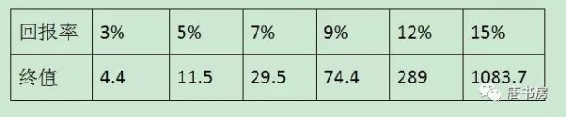
老唐强烈建议书房的朋友们从今天开始，坚决抛弃“进入股市是开始投资，退出股市是停止投资”的错误思想，牢记我们从拥有第一笔“钱”的时候，就已经开始了投资，且365×24不休息，一直持续到离开人世才算罢手。
一个人，只要不是含着金钥匙出生的，财富最初总是靠出售体力或智力劳动换来，并在满足我们的消费需求之后，通过配置在不同的资产上获取。套用一句流行语，或者是“睡前收入”，或者是“睡后收入”。所谓睡前收入，就是你干活就有、睡着了就没有的那种，是用自己的体力或者智力换钱。所谓睡后收入，就是被动性收入，哪怕你睡着了，它也在自动增值。两种收入形态中，很显然，睡后收入占比越高，你就有越多可供自由支配的时间，所做选择受到的制约也就越少。收入来源全部由睡后收入构成，就进入了所谓财务自由状态。
受限于认知水平，我们最先接触到的睡后收入，可能都是银行存款——还是年回报率“高”达0.35%的活期存款，其后由于你多学习了一点点，你可能开始会搞阿里余额宝、腾讯零钱通、甲银行B理财……，收益率开始从0.35%提升到约3%~5%之间。这一步跳跃很容易实现，是因为这个回报率依然远在社会平均财富增长值之下，属于将自己辛辛苦苦卖体力或者脑力换来的财富，无偿地送给别人一部分。将财富从自己口袋里掏出来丢给别人，总是很简单的，对吧？
甚至由于合法窃贼的存在，你连掏的动作也可以省掉，庞大的国家机器，日夜不停地将你用汗水或者脑汁换来的财富，一点点地偷走。过去30年里，中国货币总量从1987年的6517亿扩张到2017年的1676800亿，就是证据。这个不展开聊，直接看每100元在不同时间里能换到多少东西就能明白——这就是老唐多次说过的：在法定货币时代（即货币本身无价值或者价值微不足道，只是由国家暴力机器强行规定了它的值），现金是少有的100%确定亏损的资产。
既然投资是无法避免的事，是持续一生的事，那么，尽最大可能将自己通过体力或者智力劳动换来的法币，换成收益率更高的资产，就成了非常值得思考的问题。有没有这个习惯，甚至决定了你和别人后半生的幸福程度或人生高度差异。那么，配置成什么呢？最理想的状况当然是，今后几年什么类别的资产会涨，就买成什么，或者什么类别的资产会跌，就避开什么。这种研究中，似乎有个美林时钟比较权威，常常被宏观资产配置的投资者奉为圭臬。

然而，很可惜，该理论的创始机构美林证券在2008年的次贷危机中损失惨重，最终不得不卖身求存（被人收购了）。这仿佛是个冷笑话，提醒我们美林时钟可能是一口走不准的破钟，连自己的投资也指导不了。
实际上，大量专业系统的研究，都证明了所有投资资产中，长期回报率最高的就是股权。对于这个研究结论，感兴趣的朋友可以看伦敦商学院的研究成果《投资收益百年史》，相关收益率对比图我曾经拍照多张发在雪球，题目叫《读史可以明智》，需要的朋友自己翻来看，此处不重发了。尤其提醒一点，伦敦商学院这个研究比较严谨，在研究股票收益率的时候，考虑到了破产退市的股票，其结论比之前绝大部分研究要保守很多。另外，还有一本名著，杰里米·J·西格尔的《股市长线法宝》，研究了美国长达两百年的资本市场，得出的结论也是，200年里股票的年化收益率是债券年化收益率的183%。
绝大多数对于复利没有概念的朋友，估计很难想象这个收益差导致的终值差异究竟有多大。举两个《投资收益百年史》里的数据：
英法美德日意澳荷瑞（典）加丹瑞（士）12个主要国家中，收益差最大的澳大利亚，1元本金投资股票百年之后是777249.7元，而投资长期债券百年后是252元，投短期债券是80.7元，差异超过3000倍；
收益差最小的瑞士，1元本金投资股票百年之后是1136.7元，而投资长期债券百年后是73.2元，投短期债券是25.8元，差异超过15倍——以上数据均是未扣除通货膨胀之前的名义回报率。
能理解股票投资长期收益率最高这个结论，《投资收益百年史》和《股市长线法宝》就可以不用看了。另外，这里实际上有个隐含前提，就是这个国家，这个资本市场会存在超过百年，这个无法给出证据，属于纯信念的问题。投资者是且只能是理性乐观派，以资本市场存续为前提思考，反之，如果对资本市场的存在没有信心，那只能今朝有酒今朝醉，反正投什么都挡不住两手空空的结局——幸好，目前资本市场的门越开越大，即便是对本国缺乏信心的，也能通过多种渠道将投资分散在多个国家的股权上去。
那么，就算是全部投资股票，能否通过一些宏观研究或者其他什么技术辅助，让我们在股价要跌的时候，降低股票仓位，在跌的比较多的时候，再重新买进呢？
很遗憾，迄今为止，没有发现什么人具备此项技能。不说巴菲特格雷厄姆等一干夹头对高抛低吸赤裸裸地鄙视了，就算是宏观经济学的创始人，一号大拿约翰·梅纳德·凯恩斯也亲笔写下这样的观点：
我们未能证明，有人有能力利用经济的周期循环，大规模系统性地买进卖出股票。经验证明，很清楚，大规模的买进卖出是不可行的，也不可取。试图这么做的人，不是卖得太迟，就是买得太迟，或者二者均沾，这导致交易成本大规模上升，并引发情绪的波动，这也引发了广泛的大规模的投机，加剧了波动的程度。
推到尽，所谓空仓半仓七成仓，就是利用部分或全部资金，妄图通过高抛低吸的手法，去获取超额回报。够诚实的话，看看自己的账户市值，应该很清楚地知道自己无法预测股市何时暴涨（否则早上福布斯了），所以，还是干脆趁早承认自己无法预测同样由市场情绪引发的暴跌吧！既然自己并没有预测暴跌的本领，依据什么让自己去持有现金或类现金等低回报资产呢？
股市带给我们的回报，主要由企业经营增值和市场情绪波动两大因素推动。有过大量的研究证明，A股公司的长期年化回报率大约12%。如果我们满足于12%或者比12%略高略低一点点的回报，投资其实很简单：通过宽基指数，买下全体企业的少量份额，或者买下全体企业中略好的那部分的少量份额就可以了——12%这个数据，从逻辑上也可以推理出来的。2016年12月书房文章《股市获利的路径和逻辑》一文谈过，感兴趣的朋友自己号内搜来阅读。
如果意图获取更高回报，要么需要选出比平均盈利能力更高的企业去投资，要么需要在市场情绪波动中高抛低吸成为赢家，这两点的难度都不小。但相比而言，前者是可以靠知识积累逐步获得，也已经有了很多前辈趟平这条路，指明了前进的方向。后者，迄今为止，我个人的经验认为，这是条死路，没有看见任何成功的先例，路边枯骨倒是见过不少。
如此说来，现金或者类现金资产是不是完全没有配置的价值呢？也不是。至少有三种情况下，确实需要保留一定量的类现金资产的。
一种情况是，短期可能会动用的钱。由于货币是“通货”，是价值最清楚、接受度最广的协助交易工具，当我们个人及家庭本身有投资之外的其他需求时，必然需要将其他资产形态变成通货才能使用。而股权可能由于其波动幅度大的特性，可能导致你需要货币时，恰好是它只能兑换较少额度货币的时候。
所谓短期，经验性的建议是以两年为期。如果没有其他收入来源，预留可以满足两年需要的类现金资产。如果有其他收入来源，可以从需要预留的总数里减去两年的收入。
另一种情况，是完全无法承受波动。总有些人，无论道理怎么清楚，但就是看见股价波动就恐惧。确实没有办法承受，那就投一部分类现金资产吧，利用类现金资产的低波动特性，抹平市值的峰和谷，让波动曲线更平缓些。毕竟收入最大化也要活着看得见才行，中途吓死就得不偿失了——当然，这种情况下，你就得接受总收益低的结果，而且前面的图表说过了，很小的年化收益差，最终财富值差距大的惊人。
第三种预留，严格来说不算做预留，而是另一种投资。就是将类现金资产（例如511880）看作一只市盈率约25~30倍、年增长率3%~4%不分红（或者股息率3%~4%，0增长）的自选股，把它和自己其他股票平等对待，用同样的手段进行估值，然后比较。
当其他股票明显偏贵时，将部分资产配置在511880上。而且最好不要用空仓半仓七成仓这样的表述方法误导自己，而是逼迫自己习惯使用“卖出301024，换入511880”这样的思考方式——这里要注意一点：是“明显”“偏贵”时。有很多投资者，容易将本属于看不懂的企业，简单地用高pe或者高pb归入“偏贵”的行列，这个标签容易误导自己。谈论贵或者贱，前提是能够给一家企业做出大致的估值。
投资要警惕左，但主要是防止右
长期以来，犹如市场永远摇摆于恐惧和贪婪之间，对投资的看法也有两种极端思想，以三年河东、四年河西的周期抢占着投资者的心智。一种认为股市赚钱很简单，只要牛市来了，冲进去买啥赚啥，跟捡钱一样；另一种认为股市赚钱太难了，耗费青春、耗费生命，整日里殚精竭虑却面临一将功成万骨枯的局面，最终只会是少数信息、资金或者知识占有巨大优势的机构获利，普通投资者多沦为韭菜，正所谓一赚两平七个亏。
套用我党历史上的术语，前者可以归为左倾冒进主义，后者可以算右倾投降主义。在股市早期以及刚刚入场的人里面，天不怕地不怕的左倾冒进主义占大多数，经过市场几番牛熊教育后，在“老股民”群体里，见啥都怕的右倾投降主义成为主要危害：怕亏，怕回撤，怕上涨，怕波动，怕听负面，怕自己研究不够，怕有自己没关心到的信息，怕自己居然不怕……
书房里绝大多数朋友是有一定投资经历（先不说经验）的人，所以，需克服的主要障碍是右倾投降主义，就是那种认为“股市赚钱很难，一个人如果没有深入研究能力，没有高瞻远瞩的战略眼光，没有娴熟的金融学知识，没有泰山压顶面不改色的心态……将会很难从股市赚钱”的想法。这种想法大错特错，如果不予纠正，不仅会让你的人生总是处于神经衰弱状态，甚至会在不知不觉间使你的投资之旅误入歧途。
如果有一家工厂，老板雄心勃勃花了1000万，刚刚跑下执照，买了地皮，建了厂房，添置了设备，招聘了工人，忽然天有不测风云人有旦夕祸福，某种原因之下500万出售。你买下来会亏吗？——抢答：不会，转手卖出去就是利润。
不好意思，抢答错误。买下来还是会亏，因为短期或许找不到合适的买家，而你又不会经营，可能机器会生锈，工人会辞职，厂房会漏雨，场地会长草，最终或许花了五年才卖出去，也就卖了600万，一算收益率，不到4%，亏了——为什么明明赚了100万，却说亏了呢？这就是折现的概念，金钱是有时间价值的，明明我可以存银行保本4%理财，五年变成608.33万，结果淘神费力，担惊受怕，只收回600万，是不是亏了？
但是，如果这工厂，不仅有上述刚花1000万购建的厂房地皮设备，账上还有未到期理财产品300万；还有给中国石油、中国石化、中国移动等大公司干了活的应收账款600万，年底可以收账；同时，就欠着银行150万贷款——这家公司，现在卖500万，你觉得你还会亏吗？这次可以放心抢答了：不会。是的，这样你几乎不可能亏钱了，只需要等待理财产品到期，等待应收账款到期，你就可以收回超过900万，还了贷款，净得750万-500万=250万以上的现金，以及购置成本1000万的固定资产。
实际上，这就是格雷厄姆的投资体系，用相当于净流动资产2/3的价格购买公司。只是一者由于股市里公司的流动资产很少直接像例子里这么靠谱（全是“银行理财+中字头大国企应收”），二者股市里并非自己买下全部，其他股东或许对资产的处理方式会有不同想法，所以，格雷厄姆倾向于买进几十只这样品质的企业，构成一个组合，以对冲其中某些或许流动资产品质不好，或许应收账款信用不良的企业风险。由此，捡烟蒂的投资方法形成了。这种方法可以赚钱，不难理解吧！
这样可以赚钱，确实不难理解。难以理解的是，为什么会有人那么便宜卖？还真是，实体经济里，企业家一般不会这么傻，居然以这种价格将企业卖掉。但很搞笑，当一家企业所有权被分成无数小块在在股市交易的时候，在大量拿股票当赌博筹码的投机者眼里，股票就是一张纸头或者一个博彩号码，如果它在“下跌趋势”里，那无论便宜贵贱，将其兑换成现金，为下次参赌保住赌本才是第一要素，这种行为被很高大上地称为“顺势而为”或“不要与趋势作对”。由此，荒诞的卖价就这么让人惊奇地形成了。
尤其是在格雷厄姆经历的上世纪三十年代美国大萧条期间，大把这种类型的出售者，有些幅度比老唐举的例子还夸张。格雷厄姆及其信徒就这样捡了无数被人丢弃的“垃圾”回来，待恐慌过后，市价恢复到净资产（或重置成本）附近就卖掉。“炒股”这件事，终于在格雷厄姆教授手中，变成了一件具有逻辑支撑、可以计算的科学，不再是凭感觉、靠内幕的击鼓传花式互相算计，格雷厄姆也由此当之无愧地成为了证券分析业的教父。
可惜的是，大萧条这种重度恐慌的经济环境，一个投资者可能一生遇不到几回——以美股为例，跌幅高达89%的大萧条历史之后，近百年历史里，只有纳斯达克网络泡沫破裂、日本空袭珍珠港以及2008次贷危机爆发，分别以78%、53%和52%的跌幅可以与之媲美，其他恐慌幅度没有超过腰斩的。
很巧，“勤劳勇敢”的中国人，用二十多年快进了美帝百年史。二十多年里，A股同样产生过四次腰斩以上的大跌，幅度分别是79%，73%，73%，55%。另外还有两次接近腰斩的跌幅，最近一次书房里大部分朋友应该在场：2015年下半年跌幅49%，同期老唐实盘组合满仓在场，市值“回撤”28.38%。
因此，对于一个投资者而言，必然面对的问题是，大量的其他时间怎么办呢？最终，在格雷厄姆大批传人的摸索下，无外乎三条路：
第一条路：按照格雷厄姆给普通投资者的建议，适度放宽标准。
1949年，格雷厄姆出版了伟大的《聪明投资者》一书，书中第五章第二节明确提出他给予普通投资者的股票投资四条建议：
①充分但不过度的分散投资，将资金分散在少则10只，多则30只股票上；
②只选择大型、杰出而且举债保守的企业；
③购买对象应具有长期持续的股息发放记录；
④只买低市盈率股票，建议用过去数年的平均净利润，例如购买市值不超过过去7年的平均净利润的25倍，如果用最近四个季度净利润，则买入上限为20倍市盈率。
这种思路，其实就是帮助投资者构建了一个低估值的指数，实践中发展为利用低pe、低pb、高股息率建立一篮子低估值组合的投资方式，所谓低估分散不深研，大致就是走的这条路。
第二种，扩大搜寻范围，寻找合适的目标；
部分坚持格雷厄姆烟蒂股投资精神的投资者，选择通过扩大范围，不断寻找被市场抛弃的冷门市场，来买入符合格雷厄姆标准的冷门股。代表人物是沃尔特·施洛斯。通过严格遵守格雷厄姆的教诲，不断地翻垃圾堆，湿螺丝在长达47年的投资生涯里，获得了年化20%的世界级大师水平（100万变54亿。当然，客户被年年切掉管理费和提成后，收益是15%出头，100万只能变7.9亿——依然是世界级大师水平）。
目前市场同样活跃着一群视野覆盖A股、港股、美股甚至俄罗斯、新加坡、越南等多个国家股市的投资者，他们就是通过扩大范围，通过简单的财务数据对比，选择多只符合格雷厄姆烟蒂标准的股票买入，然后待恐慌过后，回归净资产值或重置成本价值附近时，卖出获利。
第三、从股票代表企业资产所有权，进化到股票代表未来现金流分配的参与权。
这方面的代表人物当然是沃伦·巴菲特。巴菲特在自己的思考下，在费雪、芒格等人的影响下，对格雷厄姆的“股票代表企业所有权”的内涵做了一点进化，从格雷厄姆起初的“股票代表企业净资产的所有权”，进化为“股票不仅代表企业净资产的所有权，更代表着企业未来现金流分配的参与权”。
这一进化是伟大的。它让投资人忽然从一个招人讨厌的“破坏者”角色，一个到处寻找腐肉、动辄鼓噪破产清算的秃鹫角色，变成了企业运营的伙伴，经济发展的推动力。它让巴菲特开始以前瞻的眼光展望未来，以人类需求无限、经济永远发展的眼光看待企业。
为了追求未来可分配现金数量的可持续性和可预测性，巴菲特进一步给自己的投资理论增加了“护城河”和“能力圈”概念，致力于寻找那些自己能够预测其产品会持续被需要，但别人很难甚至无法提供同类服务或产品的企业。
这三条路，无论选择哪一条，赚钱都不难，差异只是关注点略有不同。第一种模式，只需要定期（例如半年或一年）做一做pe、pb和股息率的对比筛选即可；第二种模式，只是一个体力活，关注的数量足够多，每天刷刷公告、看看财报摘要，总会有些市值显著低于净资产值，或者拥有足够量隐藏资产的企业，一旦发现这种特征，再去针对性做进一步挖掘即可；
第三种模式，甚至可以从直接购入宽基指数基金（指成分股包括多个行业股票的指数基金，例如沪深300指数基金）开始，只要理解“沪深300成分股的平均盈利能力＞全部上市公司的平均盈利能力＞全国所有企业的平均盈利能力＞名义GDP增长速度＞类现金资产的收益率”这样一个逻辑关系，就会明白长期持有沪深300指数基金的收益是一定会远远高于持有现金类资产（包括存款、理财、货币基金、债券等）的，中间所有的波动不过是扰人心神的障眼法。
在这个基础上，通过学习，通过对自己能理解的优秀公司（若有）增加配置份额的方式，或者在资金足够自己建立跟踪指数的股票组合时，排除盈利能力明显落后或者明显有问题的企业（若有），逐步建立属于自己的优质企业组合，从而在指数基金的基础上逐步提升回报率，那也是必然的结果——别小看微小的回报率提升，100万50年，10%回报率结果是1.2亿，12%回报率结果是2.9亿，差额1.7亿就是你的奖学金。
如果承受力较强，宽基指数基金可以一次性买入，并在后续增量资金进入时，或继续配置指数，或选择自己理解的相对优秀的企业（若有）买入。如果承受力较弱，则可以将资金分配成多份，通过定时定额的方式购入，或者按照指数估值分配资金（例如20倍市盈率以下多买，30倍市盈率以上少买），达到平滑波动的目的。
所有这一切，只需要我们立刻抛弃“股票是筹码”的错误观念，建立“企业真实盈利能力提升，股价一定升”的明确信念，对垃圾企业的大幅炒上炒下，视而不见、听而不闻，幡动而心不动，以较长时间不会动用的资金（例如三到五年）去做投资，满足于企业成长推动的市值增加。如此，市场再也不值得害怕，完全不需要以右倾投降主义心态，战战兢兢恐惧度日。
老唐常用的企业信息获取途径
首先是年度财务报告，这个是最重要的资料来源。财报的下载，最靠谱的就是直接去“上海证券交易所”、“深圳证券交易所”或“巨潮资讯网”三大官方网站下载。网址和下载方法，老唐在《手把手教你读财报》第13和14页详细写过，这里不重复了。
一般来说，财报主要关心的是年度报告和半年度报告（以及ipo招股说明书），季报的信息量其实很小，如果刚上手一家企业的话，季报完全可以跳过去。阅读财报的时候，有一点随手工作是比较容易被忽略的，那就是顺着财报里的介绍去查阅公告。
通常，在企业财报里，对一些重要事项，会写清楚根据某年某月某日在哪发布的公告，我们或者在阅读财报遇到的时候，去查询公告（查询方法等下说），或者可以直接在pdf阅读器里输入“公告”查询公司的一些主要公告。我们要做的事情，就是在阅读财报过程中，对自己关心的公告内容进一步去看原文。公告是公司的重要官方文件，几乎所有相关app或者网站都会有披露，所以有好多地方可以查询，例如，继续去上交所、深交所、巨潮网寻找，去雪球个股页面的“公告”栏目翻，或者在你用的股票行情软件里查阅。
我手机里装的是“万得股票”免费版（顺带第8888次解答：戳股票价格后面的涨跌幅“数字”，就可以调出“年初至今”功能——戳数字、戳数字，不是戳菜单栏的汉字）。在这个页面里，点击“公告”，就会看到你关注个股的最新公告。或者你可以直接点开自选股，进入查看公告及个股新闻。在万得股票的“研报”栏目，也可以阅读你所关注个股的券商研报，但这方面做得比较好的是“慧博投资分析”。
在今年5月之前，慧博是免费的。pc版每天有下载研报数量限制，但安卓版和iOS版没有，比较适合用苹果或者安卓平板阅读。大屏的电纸书+安卓版慧博简直是完美组合。定制自己的关注的股票、行业、分析师或者关键词，慧博可以将这些内容统一整合在“定制”页面，方便阅读。可惜的是，从5月中旬开始，慧博在所有版本上都设置了每日下载研报数量限制，如果想不限量，对不起，付费。这个当然无可厚非，有价值的东西，应该付费。享受了几年免费蛋糕后，终于有一天被卡壳在马桶上。一怒之下，买了两年的基础版服务花了2376大洋。
不过呢，经老唐研究，发现如果不嫌麻烦，同时每天的下载阅读需求不大，慧博其实还是可以免费用的：每天签到得1分，1分可以下载一份研报，积分可以累积使用。一周打卡7天，周末下载阅读7份感兴趣的研报，对大多数人估计也够用了（我其实想说大部分人一个月可能也看不到7份）。
慧博的重要消息也做的不错，里面的“慧博投资晨报”和“四大证券报头条”可以让我每天坐马桶时，迅速浏览完毕当天重要新闻，免得再去东刷刷西刷刷浪费时间。至于重要消息里的其他内容，就一般般啦，多是些网络热文，标题党居多。另外，慧博的个股界面公告和万得股票的公告功能差不多，但万得股票多了个股相关新闻功能，公告新闻一气呵成，比慧博方便些，因此，我很少用慧博的个股公告功能。
研报这东西，不同的人拿到手上可能效果有云泥之别。原因在于有些人看研报里展示的企业信息，有些人看研报的买卖建议。看买卖建议绝对是买椟还珠，券商研究员的买卖建议无外乎买入、增持、谨慎增持、推荐、强烈推荐，实在遇到烂的没底的企业了，券商研究员顶多也就说持有。你要看这个，不如丢硬币呢，省时高效获利概率还大点儿。
研报里有用的东西是：券商调研数据，电话会议内容，行业统计资料以及偶然暴露的一些数据资料来源。也就是说，我们要将券商研报看作斥候和秘书，负责打探消息和整理资料的，结论（估值及买卖建议）是最没有用的东西，直接跳过就好了——万万不可用券商研究员的估值给自己打气，那样很容易变身接盘侠。
券商研报类还有个App也不错，这个APP以前在书房做过商业推广，叫“萝卜投研”。它有两个功能做的比较好，一个是“智能研报”，一个是“关系图谱”。在智能研报里，企业的重要新闻、最新公告和券商研报被整合在一个页面，方便查看，同时，还放置有该企业所有同行上市公司的相关数据对比，例如总市值、pe、pb、每股收益、营业收入、营收同比增幅、归母净利、毛利率等数据，可以让我们迅速知道行业大致格局。
关于公司财报数据整理，最方便的还得数慧博，不过要用慧博pc版。里面有财务报表数据版，进入后可以将任意公司过去十年资产负债表、利润表、现金流量表所有数据，一键导出到excel表格。数据选择可以任选一季度、半年、三季报、年报，非常方便。偶尔有部分数据有误，但基本靠谱。其他还有些数据图示和分析功能，感兴趣的自己摸索，老唐就不一一介绍了，继续说回萝卜投研。
萝卜投研除了“智能研报”功能不错以外，另一个不错的功能是“关系图谱”，它整合了企业的工商信息，你可以用它直接查询上市公司的股东、下属公司及合营公司等关系网信息。这个功能很好玩，有一种做侦探的感觉。如果不喜欢在手机APP上查看，pc端的“天眼查”或者“企查查”网站（这俩也有微信小程序）也可以完成对企业股东、实际控制人、相关法律纠纷、工商资料变更、企业关联关系等资料的查询。
然后就是搜索引擎了。有疑问，找度娘（搜狗、必应都行），要诀就是顺藤摸瓜，打破砂锅问到底。需要的话，过去的新闻报道、法院文书、论坛帖子……都能成为我们分析企业的“呈堂证供”，至于说这些资料怎么筛选和应用，就无法统而言之了，只能是用到自然知。
雪球也是非常有用的信息来源。几乎每一只个股，雪球上都有一群人讨论，或犀利或无力，或箴言或造谣，或理性和发泄。信息能帮助我们做决策，也能让我们无所适从。究竟会怎么样，取决于你的初心是“我想知道企业经营情况”，还是“我想知道股价会涨还是会跌”。如果你关心的是企业经营情况，任何一支个股页面，最多花两天时间，你应该就能知道哪些人是真有研究的，哪些人只是吹水。这些东西没法随口扯，不知道无法伪装知道。信息错误的，也很容易被其他研究者指出。如果你关心的是后者，反正都是浪费时间，也无需分辨真伪，懂与不懂都能吹几句，吹高兴就行。
行业或者企业的公众号，也是重要的信息来源。大部分上市公司，都会有自己的公众号，部分行业媒体、资深研究者以及业内从业人员可能也开有公众号。这个就要根据你跟踪的公司去具体搜索了，而且要点还是顺藤摸瓜，基本上找到一个，要不了多久，有用的号你都会找到的。
比如白酒行业，我关注的公众号就有：国酒茅台、茅台时空、茅台声影、梦之蓝社区、古井贡酒年份原浆、糖酒快讯、酒业家、酒道说酒、酒说、微酒、王安石煨酒馆……；比如银行业，我关注的有：bank资管、成于微言、轻金融、金融监管研究院、银行家杂志、王剑的角度、倪军金融与流动性研究……等；比如互联网科技，我关注了36氪、虎嗅网、IT桔子、南极圈、手游那点事、腾讯云、腾讯we+、腾讯课堂、腾讯大学、企鹅生态、腾讯大讲堂、腾讯、飞谈传媒互联网、艾瑞网、微信派、游戏百晓生、酷鹅俱乐部……等公众号；……其他行业就不一一列举了，具体公司具体搜索。
不要恐慌
不谈估值，不谈企业，只要稍微冷静看看市场氛围，也知道当前市场不具备大跌基础。大跌这种发财良机，培育起来并不是那么容易的。
看美帝，1929年美国大萧条前，那是什么气氛？大盘指数在暴跌之前的八年里，持续上涨超过330%；柯立芝总统1928年的国情咨文，那可是公开宣称：“我们迎来了前所未有的繁荣时代”；上世纪最伟大的经济学家欧文·费雪教授甚至表态：“股市到了永不下跌、永远上涨的时代”；（后来，费雪老先生赔了个底儿掉，连住房都是耶鲁大学买下来再租给他住，以避免老先生被债主赶出去）1929年，崩了。次贷危机爆发前，又是什么气氛？从90年代起，在信息技术革命的推动下，美国经济连续多年高增长；
2000年，克林顿总统说：“美国经济将持续性地永久扩张”；2002年，小布什总统在国情咨文里说：“新经济依然健在”；2004年，伯南克提出：“美国进入大稳健时代，全球化和新经济已经熨平经济的周期性波动”；2007年，崩了。
看天朝2007年6124点，崩盘前是什么气氛？是股市里高唱《死了都不卖》……
2015年5124点，是什么氛围？是人民日报公开发文喊叫：“4000点是牛市起点”是证监会主席宣称：“股市不差钱，改革牛成立”；是知名基金经理高喊：“现在是中长期的战略性投资机会，2015-2016年这轮牛市会达到8千多点。”是持续十年看空中国股市的华尔街大空头，转而看多。他说：“中国有很多很多钱，而这些钱必须流向某个地方。我不认为牛市会这么快结束。上证综指可能在接下来的18个月内，升至8000点。”……
今天，是什么氛围？大繁荣才是大萧条的起因，你连小繁荣还没正经经历过呢！静静，别慌，只要你旗下的企业经营正常，那么，好好看球才是正经事。就算不看球的，打几盘小游戏也是挣钱的正经事……
7月12日凌晨坐等克罗地亚vs英格兰，翻阅刘鹤主编的《两次全球大危机的比较研究》一书随感。
老唐雪球旧文打包下载
雪球旧文 https://pan·baidu·com/s/1iRwn-PrFCLr8whAsn7CjpQ
书房文章电子书mobi版 https://pan·baidu·com/s/1luFfU4XoKMtokS2dofM_Vw
书房文章电子书azw3版 https://pan·baidu·com/s/1DZmaYi-Un-FlWVcYdqASmQ
老唐雪球置顶帖合集word版下载
老唐估值法与现金流折现法的异与同
老唐认为“动用公式去计算未来自由现金流折现值，是条错误的道路”。在我眼中，未来自由现金流折现是一种思维方式，而不是一种计算公式。这个观点，我曾将其写成文章，发表在2014年3月7日的《证券市场周刊》上，并于2017年8月5日搬来书房，题目叫《漫谈现金流折现法》（周刊发表的时候，编辑老师给改了个威猛的标题，叫《股神秘笈》），书房朋友但凡想动用折现模型去计算内在价值时，请暂停计算，阅读该文先。
在《漫谈现金流折现法》一文里，老唐谈到了它不是一种计算方法，而是一种思维模式，它指引我们将注意力放在“看不见被毁灭的可能，每年可以产生可观的自由现金流，不依赖大量资本投入即可维持现有盈利能力甚至还可以保持增长”的企业。当我找到这样的企业后，我运用自由现金流折现法进行估值，只是我使用的是一种高度精简的方法，即老唐估值法：三年后以15~25倍市盈率卖出能赚100%的位置就可以买入，高杠杆企业打七折。
这里有三个概念要解释。
①这里说的高杠杆企业，指有息负债超过总资产70%的企业；
②打七折的意思指对于高杠杆企业，要求三年后以10.5倍市盈率（简化为10倍）卖出就能赚100%时，才会考虑。打折的原因是高杠杆企业更脆弱，对于宏观经济及意外情况更加敏感，所以需要更高的风险溢价作为补偿；
③现实操作中，根据企业商业模式的优劣，自己研究深度的确定性以及手头现金宽裕程度，对某些企业可能会放松至30倍（某些企业，在目前仅指茅台和腾讯）。
为什么说这种方法是未来自由现金流折现法的简化版本呢？
首先，无论用现金流折现还是老唐估值法，都需要确定三大前提：利润为真否？可持续否？维持当前盈利需要大量资本投入否？这是理解企业的范畴，不能回答这三个问题，根本轮不到谈论估值高或低，更谈不上企业内在价值究竟为几何。
在确定了这三大前提后，老唐估值法中的15~25倍市盈率，实际上是将三年后的企业看作了一份收益率4%~6.66%的理财产品。也可以说是将理财产品看作一个“收益100%确定+分红率100%+0增长”，或者在利息再投入假设下的“收益100%确定+分红率0%+增长为无风险收益率”的企业。
市场参与者，总是由于群体性悲观或者乐观作祟，时而更重视确定性和分红率，对同样能赚回N亿的企业，只愿意出比同等收益的理财产品低很多的价格接手；时而更重视增长率，对于同样赚回N亿的企业，愿意给出比同等收益理财产品高很多的价格。这种群体性的悲观和乐观，导致企业市值总是围绕着无风险收益率对应价值左右摇摆，如同钟摆一样。
老唐这种简化估值法，和未来自由现金流折现法估算差异不大。比如，我们拿茅台来示范。茅台2018年净利润预计约为350亿上下，假如未来三年（2019~2021年），茅台的净利润分别为400亿，500亿，600亿（注意，仅仅是示意数字）。假设无风险收益率取值为5%，投股票承担的风险对价要求为3%，那么用两段式未来现金流折现法估值，一般是这样做的：
第一步，计算出前三年利润的折现值，然后加总。即400/108%+500/108%²+600/108%³=370+428+476=1274亿；
第二步，计算出2022年整体出售茅台公司的合理值。假设2021年后，茅台的永续增长率为5%，将其视为一个理财产品出售的合理价值=600×105%/（8%-5%）=21000亿。然后将2022年的21000亿折现到现在，用21000亿除以108%的四次方，得出现值=15436亿；
茅台公司内在价值=1274+15436=16710亿。然后，按照格老和巴神的安全边际要求：为1元内在价值出价4毛到7毛，得出可买入价格位6684亿~11697亿之间，对应12.56亿总股本，得出单股买价区间532元~931元之间。
而如果使用老唐估值法，则2021年600亿净利润，对应25倍至30倍市盈率合理区间，内在价值为15000~18000亿。为获取100%利润空间，可以买入的价位为7500亿~9000亿之间，折合每股597~716元之间。如果不是茅台，是另一家只能给予20倍~25倍区间的企业，那么内在价值为12000~15000亿之间，可以买入价格为6000~7500亿，折合每股478~597元之间。
实际上买入价位6000~9000亿这个范围（20~30倍市盈率），相当于在以8%折现率和5%永续增长率的假设下，对估算出来的内在价值16710亿，再打36折到54折，略严格于4折到7折的安全边际要求。或者换一种表述，相当于折现率取值略高于8%。
所以，老唐估值法和未来自由现金流折现法的相同点就是：
①都需要考虑三大前提，在确信目标企业符合三大前提的情况下，才可以使用。我们必须要坦率承认，大部分企业实际上无法估值，无论对其计算出个什么数字，都是瞎蒙；
②从这个意义上说，这两种估值法与其说是“估值公式”，不如说是一种选股原则，是将大部分企业拒绝在股票池之外的工具；
③都使用了约8%的折现率和约5%的永续增长率假设（这两个假设我个人理解，是受到西格尔教授《股市长线法宝》一书对美国市场长达两百多年里股票和长债收益率的研究结论影响），对于难以确定5%以上永续增长率（西格尔教授研究结论中的长期债券名义收益率）的企业，估值要大幅降低；
④都坚持长期的思考方式，忽略受到各种短期因素影响的股价波动，以至少三年的时间长度和资金占用时间，去看待企业内在价值的变化；
⑤都认定自己会有估算错误，坚持安全边际要求，对于已经折现过后的一元钱，坚持四五折左右的出价，留下容错空间。
不同点我觉着就俩：
①老唐估值法更易于口算，吻合沃伦·巴菲特的“我理解的企业，两分钟之内就可以给出报价”的行为特点；
②未来自由现金流估值法公式更加高大上，写在论文和研报里，显得专业。老唐估值法简单粗暴，更像草台班子作品，不容易产生信任感。
另外，偶尔我还用当年市盈率来评价企业估值高估还是合理，例如2017年10月的文章里列出的表格：

这里，连三年后也省掉了，直接用当下的市盈率去看企业了（据说是小学生都会用的方法）。这种时候谈到的估值状态，不同词汇背后代表的意思，我也大体解释一下吧：
合理=买入可获取约等于企业经营增长同等幅度的利润；
偏低估=除了获取企业经营增长之外，还可以吃到一些市场情绪回归利润；
低估=未来可获戴维斯双击，是投资的大好时机；
变态低估=市场出现明显错误，天上掉黄金了，赶紧捡；
偏高估=企业成长可以抵消部分估值下降的伤害，三五年周期看，依然可以获取比较满意的回报；
高估=市场情绪同步，继续持有很难获取超越无风险利率的收益。
低估之后的暴跌是怎么回事，应该如何面对？
所谓价值或者内在价值，简单的说就是对资产未来真实盈利能力的作价。好比在其他条件相同的情况下，一台每天能印刷出200张百元大钞的印钞机，其内在价值是另一台每天印刷100张百元大钞印钞机的两倍。短期而言，各种情绪和谣言，都可能左右这两台印钞机的市场售价，导致其偏离2:1的比例。但长期而言，市场价格一定会反应两者的价值比例。
原因是二者偏离时，套利资金会如同闻到血腥味的鲨鱼，蜂拥而来。极小的偏离，也会被套利资金用庞大的杠杆抹平至小于交易费用为止（想想以前写过的长期资本公司干的事儿）——这是整个价值投资体系的基石，是资本逐利天性下的铁律。
货币基金或长期国债这类提供无风险收益的产品，就好比是那台每天印刷100张百元大钞的印钞机，它提供了一个基准。企业，就是另一台每天印刷X张百元大钞的印钞机。其内在价值，由X与100的比值决定，搞明白X=？就是企业投资者一生的功课。
企业内在价值并非一成不变，它不仅可能随着企业经营发展、国家和行业变迁而发生变化，甚至有些企业的价值会随着股价的变化而变化。于是，股价和价值之间也有了两种关系，对这两种关系的把握，各产生了一位世界级的投资大师。很奇妙，他俩出生于同年同月。1930年8月是个神奇的月份。8月12日，后来被称为金融大鳄的乔治·索罗斯出生；8月30日，后来被称为股神的沃伦·巴菲特出生。按照巴菲特的解释，1929年10月美国股市崩溃，大萧条降临，沃伦·巴菲特的爹是个股票经纪人，此时没啥事做，天天早早回家，so……你懂的，大约十个月后，沃伦·巴菲特来到了这个世界。
之所以要提这俩大师，因为他俩分别代表了「价格波动不会改变价值的投资」和「价格波动会改变价值的投资」两大门派，都有自己的彪炳战绩，都有清晰的逻辑支持和获利模式，而且两位大师还有个共同点，都待在自己的能力圈范围内活动，绝不搞什么左手索罗斯右手巴菲特的兼收并蓄。
有些资产，它的盈利能力与市场如何看待它毫无关系。就好比无论我们在股市里把长江电力的股票如何买来卖去，无论它的股价怎么暴涨暴跌，丝毫不会对长江电力每年发多少电、卖多少电产生影响。巴菲特就扎根于这个领域，始终坚持在自己能够理解的行业里，寻找那些内在价值与股价波动无关（或关系小到可以忽略）的公司，并在股价波动到明显偏离内在价值时，或买或卖，利用“市场先生”的报价实现投资收益。此时的市场先生，就是那个口袋被利用、脑袋被忽略的“韭菜”。
而另外有些资产，它的价值会因为价格波动的某个阈值而发生改变，然后价值的改变会反过来推动价格波动，价格波动再继续推动价值的变化，如此循环往复，互为因果。此时市场先生就不是韭菜，而是投资者的同伙。金融大鳄乔治·索罗斯就扎根于这种现象的研究，并致力于利用它获利，他给自己这种理论起名为“反身性理论”。
将其运用到股市上，可以举个简单的例子理解它，比如，某公司的营收和净利的增长，需要依赖发行新股融资经营所需资金，或直接定向发行新股实现对其他公司的收购，产生营收和净利的增长。那么，在股价上升阶段，公司可以通过较少数量的新增股份，换来扩张所需资金或作价收购产业，从而增加每股收益，提升企业的盈利能力，推动股价进一步上升，如此循环。这是股价上升导致企业价值增加的情况。
反过来，在股价下跌过程中，换来同等资金量或收购同样的资产，需要发行更多数量的股票。虽然带来的增量营收和利润是一样的，但因为发行了更多股票，会导致每股收益更大的摊薄，股价就可能因此而下滑。股价下滑导致下次融资或收购时需要发行更多股份，如此循环往复，不断降低企业的盈利能力，直至这个游戏无法进行下去。这就是股价下降导致企业价值减少的情况。
因此，低估之后，股价继续暴跌的原因也有两种。
对于具备反身性的企业，是因为股价的下降，导致了企业未来盈利能力发生或很可能发生变化，从而出现两种杀跌力量：一种是趋势投资者，因为处于跌势而抛出；另一种是基本面投资者，因为下跌导致企业内在价值降低，从而奇怪地在下跌的过程中反而由低估修正为高估，引发基本面投资者的抛售。两者叠加，容易引发快速下跌。书房4月2号分享过的某股，4个月时间里从17.38元杀至10.01元，似乎就是按照这么一种逻辑走的。
对于不具备反身性的企业，理解起来也不难。在低估、严重低估、变态低估时间段里，所有持续关注该企业，并持各种高低不同估值的基本面投资者都变成了持仓者。此时，如果因为什么外部偶然因素，导致股价出现轻微下跌。由于此时市场里没有基本面买家，而趋势投资者则需要在看到上涨趋势时才跟随进入，结果很小的卖单，就能导致暴跌。暴跌本身又可能导致杠杆持仓者及机构在风控需要下实施不计成本的被动减仓，从而雪上加霜，使短期跌势更加凶猛。只有等到因为暴跌所导致的市值，与企业合理估值差异过于明显，已经大到足以吸引原本对此企业并无深入研究的外部资本注意时，股价才会重新回到价格回归价值的正常道路上。
这也是为什么人们普遍容易将价值投资与长期投资划上等号的原因。一是企业盈利的增长本身是逐步和渐进的，很少有很短时间内发生突变的；另一个原因就是外部资本注意到明显便宜、展开研究到开始买入，也需要时间。——但是，必须提醒，价值投资≠长期投资，长期投资≠价值投资。价值投资的根本特性，是寻找价格和价值有差异的投资对象，至于价格回归价值的时间或长或短，只是一个表象。
与之对称的，在股价高估阶段，也会出现类似的高估之后涨幅更猛的现象。原因是一样的，就是当股价远离不贵的时间段中，凡是根据估值决策的人，都已经卖掉离场了。进入严重高估阶段后，参与者全部是“因为涨、所以看涨”的投机者。在持股者因为涨所以看涨、因为看涨所以买入的整体性情绪高昂期，市场缺少卖家，价格很容易出现飙升，一直到很偶然地被某些或因恐惧、或因理性、或纯粹无厘头的小卖单捅破泡沫，涨势戛然而止，转入暴跌过程。
懂的这个原理，我们就能明白为何市场暴涨暴跌的股票，往往是一些市盈率数百数千甚至没有市盈率的股票了。
从上面两种情况，你是否发现，无论价值的发现或者破灭，都有一味必不可少的灵药，什么呢？——时间。低估被发现需要时间，高估被戳破也需要时间。所以，投资所用的一定是“闲钱”，期限考虑一定是“长期”（虽然也有可能短期达到获利目标），绝不能用短期可能被迫撤离的资本进入股市投资。否则，无论你背熟多少投资经典，也无法无视短期股价的随机波动，只能拱手将命运交于市场疯子，期盼上帝赐给自己好运气而不是赐给对手。
那么，既然知道了低估之后依然可能出现严重低估，变态低估，我们面临低估的时候，是否应该再等一等呢？有的人的作法是等待，老唐的作法是低估就进入，如果有严重低估，变态低估，变态²低估，老唐就“扛”着浮亏，或笑看表演、或假装不在。
为什么这样选择呢？因为，低估之后可能出现更低估，但也可能不出现更低估。如果因为前面“可能有”更低价格，而放弃在低估价格买入，结果可能错失一个自己研究并了解的企业，最终被迫持有收益率确定更低的类现金资产，或被迫进入自己研究深度不够的企业，长期来看，是巨大的损失。价值100的东西，有人50出售，我立刻买入，买入的瞬间我已经赚了（只是比40买入的人赚的少），剩下的只是等待价值发现，使获利最终显示在账面上。至于期间是否到过30、20，对我而言不重要。如果因为揣测还会有疯子以30元出售，结果可能最低35或者45，导致擦肩而过，那就枉费自己的深度研究了。
文字表述总好像蒙着一层纱，老唐手绘一副草图来表达：
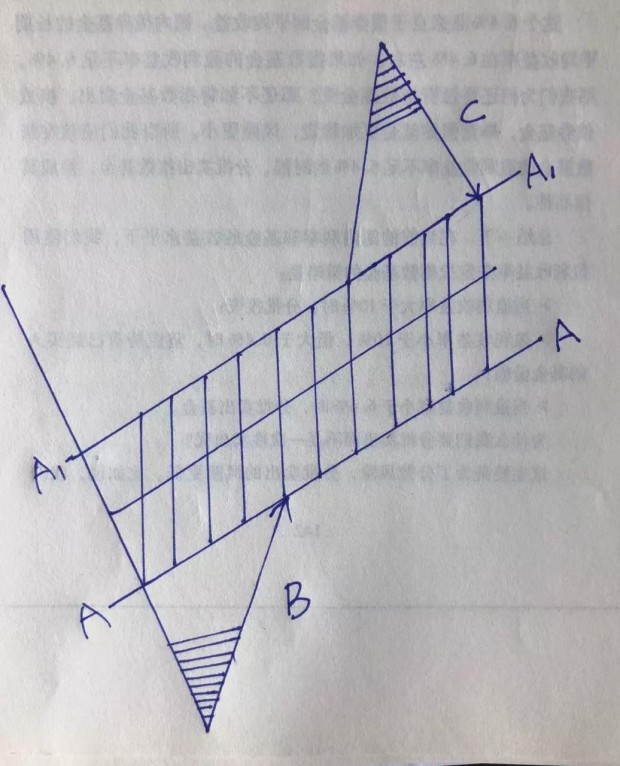
将股价的一次完整波动画成图，如上。其中A和A1之间的阴影部分，是企业盈利能力推动企业价值缓慢增长的区域，即企业的估值。它是个大致的区间，而不是精确的数值，A线为估值区间的下沿，它伴随时间的推移，缓慢提升。三角形B是市价低估、严重低估甚至变态低估，最终回归价值的过程，三角形C为市价高估、严重高估，甚至变态高估，最终回归价值的过程。格雷厄姆的投资思想，主要是等待B区域阴影位置买入，在即将触及A线位置，格派投资人获利撤退，去寻找下一个B；我的买入一般在A线所在位置附近，买入后如果掉落B区域，有钱就继续买，没钱就忽略；C区域是投机者的地盘，依据C区阴影部分与A1线的差距，我可能会卖出，也可能会不卖。如果卖出，会等待重新回到A线位置买进（伴随着时间的推移，未来的A，有可能会高于卖出时的C区阴影）。
概括来说就是：我的获利目标是通吃A和A1区间的长期向上推移，错过这个阶段，属于不可原谅的错误；BC区域属于意外，捡到算意外之财（windfall），坐过山车经过BC区域最终空手而归，则是预期中的法定待遇，坦然接受。
这大概就是所谓心态吧，核心是知道哪些是自己的菜，力求稳拈；哪些不是自己的菜，得之开心，失之无感。
在别人恐惧的时候贪婪
是啊，等它继续下跌后再买，同样的钞票可以买更多，然后再做“价值投资”，岂不是比直接硬扛的价值投资赚更多，为什么不呢？
原因不复杂，一层窗户纸，一戳就破：因为“我预计他可能会持续下跌”这句话的正确率是50%（瞎蒙的一种婉转表达法）。当局者迷，以为自己可以预测，只不过是近因效应作祟，恰好最近的市场走势和看跌的那部分观点吻合了。稍微拉长时间段看，对短期股价波动的预测成功率一定是高达50%。如果不是，比如是48%或者52%，你或者已是巨富，或者已是华尔街和金融界大佬们座上贵宾、VIP中P——才华就像怀孕，很难长久掩盖，更何况你拥有的是从市场不断提款走这样一种惊人的才华。
“在别人恐惧的时候贪婪”，口诀很容易背诵，但如果不能根深蒂固地明白“股权这种财富形态，它的价值取决于它的盈利能力。旁人的情绪性出价，只可利用，绝不可作为投资决策依据”，你就没有办法不随着大家一起恐惧。
人们常在寻找各种战胜华尔街的秘籍，其实一直以来最好的秘籍便是选择一家盈利能力强的公司的股票长期持有，股价下跌并不是一个好的卖出理由。自诩是一个长期投资者很容易，其实，现在已经很难找到一个人不说自己是长期投资者了，但当股市调整之日，真正的考验才刚开始。
没有人可以准确地预期到熊市何时到来，但当它真的来临时，90%的股票会集体下跌，这时投资者就慌了。他们从新闻电视里听到“灾难”来形容这样的市场，他们开始担心自己的投资会跌到零，因此匆忙离场，即使割肉也在所不惜。他们安慰自己说，拿回一些本金总比什么都没有的强。
就在这个时候，这些本来号称是长期投资者的人，突然变成了短线投机者。他们让感性占了上风，忘记了最初的想要分享好公司利润成长的投资理念。他们因为股价下跌而惶恐，匆匆卖掉股票而不是耐心等待它反弹。没有人强迫他们这样做，是他们自愿的。
可他们自己并没有意识到这一点，而是陷入了一直尝试去选时的漩涡。如果你说他们是选时者，他们肯定会否认。但是，根据市场波动来卖股票的行为实质就是选时者。选时者试图预测短期市场波动和股价变动，并据此获得盈利而退场。但是，没有多少人可以用这种傻瓜都懂的方法真正赚到钱。如果真是这样，那这个人早就成了亿万富翁，而不是比尔·盖茨和沃伦·巴菲特了。
你试图选时，但结果往往是追涨杀跌。人们觉得自己运气不够好，但其实这是因为他们追求的是不现实的结果，没有人可以长期战胜市场。人们还认为在市场调整的时候投资股票是非常危险的，但他们忘了，踏空同样也是有风险的。
关键的几天往往可以成就或是摧毁你整个投资计划。这里有一个很典型的实例：在20世纪80年代股市上涨的5年中，股价每年的涨幅为大约为26.3%，坚持长期持有的投资者资产会翻番，但其实这5年的大部分利润是在1276个交易日中的40个交易日中赚取的。如果在那40个交易日中你选择空仓的话，你的年均收益可能就会从26.3%降到4.3%（其实定期存款也可以获得4.3%的收益率，但风险更小）。
——彼得·林奇
简单聊聊腾讯中报，具体数据分析就不重复了，网上券商研报已是铺天盖地，只说自己的几点核心认识。
首先，这份中报，还真的比我猜想的要差一点儿。我原来猜想的是营收+45%，净利+33%，即上半年净利润约435亿。结果是营收+39%，净利+26%，净利润412亿。看了一下，主要差错出在对投资收益的估算上，二季度投资收益只有25亿，我直接拍脑袋按照50亿毛估估的（一季度是76亿）。
除了投资收益差之外，本季度里造成净利润增长乏力的，核心因素就是之前说过的两张明牌：其一是由于政府迟迟不给大逃杀类游戏发版号，造成公司无法实施收费。相当于是自己花大力气把用户从收费厅（王者荣耀等），拽到免费厅（大逃杀类）里玩。玩家倒是玩的开心，公司却只有支出没有进账。这个原因导致虽然手游日活跃用户取得两位数的增长，但整体收入环比一季度下降19%（同比上升19%），连带端游也受到影响。其二是央行提高第三方支付机构存款准备金比例的规定，过去可以沉淀在公司手上的利息收入，变少了。这个存款准备金比例从4月份开始调整为42%，7月份调整为52%，逐月上升，最终要求达到100%上缴。对腾讯而言，今年尤其是今年下半年，同比会少几十亿本来是白捡的钱。
至于其他方面，其实还蛮不错的。
比如，腾讯的基石，QQ、手Q、QQ空间、微信活跃用户保持的很不错，其中手Q和微信都还有同比和环比的增长。当然，作为合计已经覆盖10.58亿活跃用户（理论上所有QQ活跃用户，同时也基本都是微信活跃用户），未来用户数量增长空间很有限了，主要还要靠对现有用户的服务深化。广告业务增长强劲，同比增长39%，环比增长32%。其中社交广告、媒体广告增长都很强劲，尤其是社交广告（朋友圈，小程序等），同比增长55%。环比增长27%。只有新闻广告增长乏力，是个位数的同比下降。
公司对新闻广告增发乏力的解释是：“是由於我們自二零一七年第三季起減少商業化所致”，这恐怕是遮羞之语！事实可能就是今日头条杀的腾讯新闻及天天快报等产品丢盔弃甲。干不过就干不过，有啥可遮掩的，知耻而后勇吧，在别处找回来——别处找回来的意思是指老唐对腾讯家的信息流产品竞争力也没啥信心。即便为了维护用户体验（估计也因为来钱的地方多），腾讯对广告一直保持克制态度，但我认为广告业务是未来腾讯大有可为的地方。
一方面是社交广告（包括两亿日活的小程序）投放数量和同行比还有很大提升空间，另一方面是广告单价相比同行还很低，这个可以参看李国飞前两天的文章，腾讯在对数据的深度挖掘和利用上面，做的还远远不够。这一点我相当同意，以我对微信看一看的观察，腾讯对读者的阅读偏好理解基本处于弱智水平，多次点击过不喜欢的内容，还是会持续推给我。摆明是日子太好过了，地面上堆着大堆的狗头金，全公司忙着捡（每天净赚约2.3亿人民币），深挖地下坑道的苦力活，没人顾上操心。有竞争对手逼近并日渐强大，对腾讯不是坏事。
数字内容方面，付费账户同比增长30%至1.54亿，证明视频、音乐、直播和阅读的商业化推进还不错。尤其是腾讯视频，会员7400万，同比增长121%，保持行业领先，独播剧、自制综艺、动漫均有不错的增长。短视频方面，QQ看点、QQ浏览器和微视的增长也不错，当然，这个主要还是抖音等产品带动了短视频行业的整体增长。腾讯短视频只是和自己的过去比，增长喜人，但和对手比，差距不是一丁半点儿，这个也要承认。
不过，传说中的头条系挤占了腾讯系的用户时长，从这份财报里没有发现。准确的说，是头条系将行业蛋糕做的更大了，让用户花了更多时间在手机上。腾讯系产品占用户时间的比例下降，但使用时间的绝对额还是增长的。其他业务增长更是强劲，同比81%，环比10%。其中支付活跃用户超过8亿，线下商业支付同比增长280%，新零售的布局对支付业务起到了很大的提升作用。云业务方面，虽然难望阿里云之项背，但受益于云业务的整体规模高速扩张，这部分也取得了翻倍的增长。
至于投资，今年腾讯的投资速度有所减缓，很少出现去年那种一天投几家，天天都有新投资的情况。比如看最近两个月的投资，一笔投资和另一笔投资之间的间隔开始拉大，如图
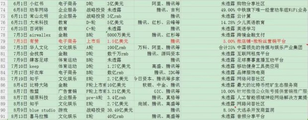
投资数量减少了，也开始有侧重了，比如财报里就披露公司出售了饿了么和摩拜的股权，加强了游戏直播和新零售方面的投资（为了强化游戏和支付）。虽然新增投资数量减少，但今年可能会是腾讯投资部门的收割季，截止目前为止，已经多家投资对象或已成功上市，或正在递交上市文件过程中。

腾讯的投资，严格的来说，也是一种流量变现。腾讯手握十多亿活跃用户，用户总有各种各样已经被发现和尚未被发现的需求（别忘了欲壑难填，人是永远不会满足的，总会有新需求产生）。这些需求中，腾讯自己可以满足的，就自己动手满足。自己无法满足的，就只能联合其他企业一起来满足。总之，要让爷（奶）们就懒在咱家院子里混到舒坦。对其他企业，要么直接收流量费用——广告费，流量费，渠道费，要么将流量折价入股，通常用部分现金或资产+流量折现换取对方股权。
这个其他企业，一般来说，要么是腾讯内部战略上不计划涉足的行业，或者自己也干了但发现干不过对手的行业。对这些企业，以小股东身份安静地做个财务投资者，一方面让自己的用户更爽，另一方面获取流量变现，这是我认为的腾讯正途。正因为此，我才在周一的次条文章下，回复留言说“不同意《全面反思腾讯战略》里反思的「只要业务重要，腾讯就应该设法取得控股地位」观点。”
综上所述，二季度除了游戏增长乏力（同比+19%，环比-19%）之外，其他部门没有什么问题，而游戏的增长乏力，要思考的是：乏力是因为游戏玩家减少了吗？是因为游戏玩家付费欲望或能力下降了吗？是腾讯的游戏产品不行了吗？是被其他公司产品抢了市场了吗？是腾讯研发团队竞争力下降了吗？……
我对这几个问题的答案都偏乐观：游戏玩家数量增长；付费能力和欲望并没有减弱；腾讯的《刺激战场》和《QQ飞车手游》都是大热产品，《王者荣耀》、《穿越火线：枪战王者》、《天龙八部》等成熟产品也保持着相当稳定的水准；市场并没有被别家产品占据；国内乃至国际领先的游戏研发团队大部都在腾讯体内……
乏力的核心原因，是因为监管部门暂停了版号发放，导致拥有数千万日活跃用户的产品，无法按照规划接过《王者荣耀》的氪金杖。这是全行业共同面对的困境，不是腾讯一家的问题。我个人相信，版号发放恢复正常，只是时间问题。版号发放正常后，游戏相关收入很快就会再续辉煌（不过，这个很快应该不是第三季度，估计最快也要第四季度才有起色）。
据说网上有传言，说监管部门准备长期冻结游戏版号发放。这种鬼故事，尤其是大跌的时候传出来的鬼故事，我选择不信。我不信监管部门那么愚蠢，会以为不发放新游戏，游戏玩家就变性了，全力以赴去为社会主义事业添砖加瓦？最近腾讯对蓝洞增资，我理解也是对大逃杀产品能够取得收费许可的乐观态度。
同时，财报里也表达了公司针对当下情况，促使游戏重新回到增长轨道所采取的措施，原文如下（注：括号内为老唐的理解）：
➣ 將熱門戰術競技類遊戲商業化（抓紧获取大逃杀游戏版号）。
➣ 提高現有遊戲的參與度並最終實現商業化，例如《王者榮耀》推出新的生存遊戲模式（老版号里增加更多氪金方式）。
➣ 推出高 ARPU類新遊戲，例如《我叫 MT4》自七月推出以來一直佔據中國iOS應用商店遊戲暢銷榜前三（推出新游。二季度有五款新游发布于5月15日之后，这是三季度乃至四季度增长的来源）。
➣ 抓住合適的國際商業化機遇，例如我們認為更符合海外玩家需求的自行開發的遊戲《Arena of Valor》及《PUBG MOBILE》。今年上半年，《Arena of Valor》已積累逾1，300萬的日活躍賬戶及產生逾3，000萬美元的月流水。於七月，《PUBGMOBILE》亦在中國海外吸引了逾1，400萬的日活躍賬戶（不含日本和韓國）及產生逾 2，000萬美元的流水（向海外扩张）
因而，我的结论是：游戏的困难是暂时的，不改变腾讯的核心竞争力。游戏之外部分，发展的都挺好，没什么好担忧的。移动互联网的行业空间还非常广大，无论是腾讯的经营部分还是腾讯的投资部分，我均持乐观态度。继续维持2021年2000亿净利润的毛估估，以25~30倍无风险收益率产品市盈率估算，届时合理市值5~6万亿，相对于当下2.7万亿市值，有翻倍左右的空间。
股市下跌，应该“顺势而为，减仓避险”吗？
一提到“跌势，企稳”这样的字眼，我就想起畅销40多年、再版十余次的经典书籍《漫步华尔街》里，作者对一段股评的挖苦，原文如下：
“经过一段时间能量重新积聚之后，大盘开始上扬，发出多头信号。尽管如此，支撑区特征尚未明显出现，且目前道指上方40点处存在一个阻力区，因而就此断言大盘将进一步展开多头行情，显然为时尚早。
如果未来数周内底部支撑得到确认，且大盘突破旗形形态，则表明大盘将进一步上扬。万一底部被有效击穿，则中期下降趋势将会延续。就目前的形势来看，投资者很可能持观望态度，等待趋势进一步明朗，同时，大盘很可能窄幅波动。”
如果你问我上面这段话是什么意思，我也无可奉告。但我认为，给出建议的分析师心里想说的是:“如果大盘既不上涨，也不下跌，那将保持不变。”即便是天气预报，也能做得比这更好。
理论不难懂，前提是我们需要坚信自己不具备预测短期股价波动的能力，或者说相信短期股价波动根本就不存在某种可以被发现的规律。如果有，那也一定被配备超级计算机，拥有哈佛牛津剑桥斯坦福麻省普林斯顿……各类学科博士博士后，以及他们那些拿过诺奖或正奔走在拿诺奖道路上的教授们发现并拿走利润。这些直接和财富挂钩的规律（如果存在），一定轮不上你我来发现和利用，毕竟我们是一群手拿简陋计算器、使用最基本excel图表、学历普遍介于高中到硕士之间、智商水平大约在80~140的非天才型投资者。
明白这一点后，我们做任何投资决策的时候，只需要加一句：“如果我完全不知道明天股价会涨还是会跌，我今天会怎么做，为什么？”，一切就圆满了。由于高达50%的预测正确率，加上大脑的选择性记忆天性，人很容易陷入懊悔之中：“我那天明明看空，却没有跑，结果跌了这么多，要是我当时跑了，那就balabalba……”。克服掉这种思维方式，在做任何决策的时候，都假设你并不知道明天的涨跌，你很快就会发现，赚钱原来很简单。
举个例子说。被讲滥的万科投资者刘元生，1988年前投入400万元人民币，呆坐30年至今。期间分红全部忽略，按照万科周五22.69元的收盘价计算，持有股份的市值是30.36亿（约1.34亿股），30年750倍，年化回报24.74%。
很多人都知道这个传奇故事，但是大部分人的第一反应是，刘元生只是被法规限制，不能卖，最终才“被迫”赚了那么多钱。等到法规允许他卖的时候，股权价值已经六亿多，这才被“价值投资者”群体扯虎皮做大旗。然而，换个思路想，我们不去管刘元生是被迫还是主动，就假设他其实早就想卖，只是被法规所限，被迫呆坐不动。现在我们考虑一个问题，从万科发行股票至今，全中国有权随意买卖万科股票的投资者，数以千万计，有其他人在万科股票上获得超过750倍的回报率吗？我认为没有。如果有，他/她一定会暴露在万科的股东名单里，他/她也一定会被好奇的媒体挖掘出来，成为投资界又一尊大神。然而，迄今为止一个也没有听说过，数以千万人里面，一个也没有。
还有人说刘元生赚大钱，是因为买的原始股。如果愿意真诚面对数据的话，就会发现万科的回报主要还是1995年之后带来的（说起来，1995年，老唐也接触股市了。诶，一把辛酸泪，不说也罢！）。
万科1995年末收盘价是0.11元（前复权价格，下同），截止今天22.69元（从今年1月的高点腰斩后的价格），年化收益率是26.07%，比从1988年原始股算起的24.75%高的多——如果从1988年就按照26.07%算，今天财富总值要多出11亿，总回报过千倍。同时，看万科上市以来的走势，波段和趋势可丝毫不少。无数小波段不说了，单说最近十年里的大跌，至少有2007年11月到2008年9月间跌81%；2009年9月到2010年7月间下跌55%；2013年5月到2014年2月下跌48%；2018年1月至今下跌51%。看上去，只要任何一个大跌幅能够躲过，甚至哪怕只是躲过一段，最终回报率也应该远高于刘元生的呆坐不动才对。然而，居然没有人在万科上赚的比刘元生更多，太不可思议了。
这个事实，简单明了的说明：冥冥中，总有某种奇怪的因素，让那些成功躲过下跌的人，同样成功躲过上涨，导致最终回报率反而变得更低。
简单的说，就是一句话：但凡觉着自己“应该”在42清仓的人，早在32，22，12，1.2，甚至0.12就已经跑掉了，根本就见不到后面的价格。只有那些因为某种原因，无视回调的人，最终才能获得高收益。这些原因，可以是外部约束，比如法规；也可以是内部约束，比如对企业的估值。
其实还有一个例子也很类似，段永平2001年起投资网易的经历：一百多万美元买入网易（按照段永平自己的说法，那几乎是当时40岁的他，能够动用的全部资金），持有八九年，赚了120多倍卖掉。这期间，当然不是买进后就一直涨一直涨的，而是同样有多次大调整的考验。不说买进后跟着就阴跌过三成（这种绝大多数人都守得住），就是爆赚之后的大回调同样也没少遇。
比如，在2003年四季度，段永平在网易上已经赚了70多倍的时候，股价在短短的几个月内出现过腰斩以上的跌幅；又比如，在2005年底，在大约获利95倍之后，网易股价在半年内下跌了40%。——请你设身处地的想，在这些“回撤”高达三四千万美金的过程中，该有多少老师语重心长地地提醒你“早就告诉过你，该跑啦！”为此，段永平有句挺有名的感悟：“0.8美元买网易股票的不单是我一个人，但坚持持有到100美元的就不多”。
再拿老唐自己的第一重仓茅台来说。茅台自登录资本市场17年来，涨幅一百多倍，年化回报超过32%。这个过程中，价格波动、媒体利空、市场恐慌，少过吗？远的不说，仅仅从2013年起，老唐公开在《证券市场周刊》及雪球大量发表文章分享后算起，至今也有2014年4月~6月从180元跌至140元以下，跌幅22%；2015年5月~8月从290跌至166元，跌幅43%；今年1~4月从799跌至645，跌幅20%；以及这次从803跌至630元，跌幅22%。2014年1月1日至今，呆坐不动的茅台，股价还有5.6倍涨幅。“顺势而为、减仓避险”的那些聪明人，赚到5倍利润了吗？
当然，坚守也是有要求的，并不是随便买进一家企业，然后抵死不卖就可以赚到钱。如果你买的是保千里、乐视网、长生生物、海润光伏……，那很显然，当然是你越坚守、结局越惨。恰好，如果你不是盯着市场价格的顺势而为者，而是盯着企业价值的投资者，你几乎不可能买中它们。这些被趋势投资、概念投资者追捧的骗子股、题材股、庄股，几乎就没有经历过市值低于内在价值的阶段。
把注意力从股价上挪开，将思考放在企业内在价值上。只要企业的内在价值远高于市值，你在买入的瞬间就已经赚钱了，剩下的，只是个兑现的过程。盯着市场价格还是企业价值，是投机和投资的核心区别。当股价下跌时，盯着股价的投机者和盯着企业价值投资者，态度可能恰好相反。投资者看到股价下跌，往往很高兴，因为同样的东西可以打折买了。而投机者想的是这公司是不是出事了，热点是不是转换了，庄家是不是跑了……我还是赶紧闪了为妙。
再重复一次：所谓价值或者内在价值，简单的说就是对资产未来真实盈利能力的作价。好比在其他条件相同的情况下，一台每天能印刷出200张百元大钞的印钞机A，其内在价值是另一台每天印刷100张百元大钞印钞机B的两倍。如果遇到AB市价居然相等的美妙时刻，立刻用B换入A。换入的瞬间你已经赚了，未来某段时间，或许A的市价只有B的50%，然而，只要你没有被迫在那时出售，你一定看得到A≥2B的时候。这个A≥2B的时间，来的越晚，你的回报率越高。投资，就这么简单。
股市赔钱的模式根源
刚刚看到一篇文章，得知美帝股市昨晚创造了史上最长牛市记录：3543天。在美帝这近十年的牛市里（2009年3月9日至2018年8月24日），纳斯达克指数累计涨幅高达508.92%，位列全球主要股指涨幅榜首位，标普500、道琼斯工业指数涨幅分别为318.07%和287.16%。
同期，中国投资者习惯看的大盘“上证综指”，涨幅24.46%。不过，上证综合指数由于指数编制上的Bug，并不能代表投资者所处的整个市场。
这些Bug主要是：
①银行股+石化双熊的市值权重设置过高（约75%权重）；
②股票分红不做调整，按照自然下跌计算；
③新股上市第11个交易日计入指数基准；
④不包含深圳主板、中小板和创业板股票，代表性不完整。
若以更有代表性的万得全部A股指数（简称万得全A，代码881001）观察，当前3638.97点，相对2008年低点1207.43，涨幅也有201.38%，虽然低于同期道琼斯指数涨幅，但没有感受到的那么不堪。十年三倍，年化收益率11.66%，远超同期所有债类或理财类资产收益率。
再看个股，据wind资讯数据，截止8月24日，A股上市公司中有468只个股突破2007年10月16日牛市高点，其中有61只个股上涨超过10倍。468家公司与全市场三千多家上市公司相比，只能让老唐想起自己的那枚印章“多看一二”——人生不如意事十之八九，多看一二；股市垃圾十之八九，多看一二。
然而，在这市场整体十年三倍的过程中，无论是抽样调查还是直观感受，很显然，不要说十年三倍的平均盈利水平，大多数人可能是连本金都赔在市场里了。所以“啥家庭？买A股，家里有矿啊？”的梗，才流行于网络江湖。那么，究竟是什么东西阻挡了这么多人，在一个年化收益率11.66%的历史里，反而大幅亏损呢？下图是万得全A指数走势图。
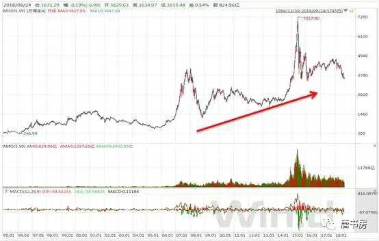
如果将十年三倍的走势，从2008年的低点划一条线到昨天收盘（类似图中的红色箭头线），我相信绝对不会有人赔钱。年化11.66%啊，一定是个个赚的笑嘻嘻。然而，明明全部在红色箭头线之上运行的曲线，却有大把人赔的惊天动地。原因何在？我认为根本原因是“投资者将股票视为了博弈筹码，而不是企业所有权的凭证”。
懂的很多投资理论，却依然做不好投资，万恶的根源原来是它！
不用看网络言论，也知道这几天网上“反思”特别多。除了反思杠杆爆仓的，反思不该来股市的，反思中国股市体制问题的，反思自己违背了市场趋势，反思为什么没有听从内心预感提前清仓的……之外，每每还有一类“反思”也很受追捧，那就是反思自己不应该相信价值投资。表述各有不同，但中心思想一般集中在“事实证明，价值投资照样让我赔钱，以后再也不信价值投资了，或者至少不能一味地相信价值投资，该跑还是要跑”，言下之意，大致是一直以为做价值投资就可以不赔钱的，如今失望了。
这种误解可能来自沃伦·巴菲特讲过投资有两条规则：规则一，绝对不可以赔钱；规则二，千万别忘了规则一。在巴菲特心中，盈利和亏损是酱紫的：
如果我们做过企业，就会很容易理解巴菲特心中的亏损概念。假设你家开了一家小饭馆，怎么样就是亏损了，怎么样就是盈利了呢？它是由隔壁小馆子或者同城其他饭馆的转让成交价决定的吗？不是。
盈利或者亏损，由你家小饭馆每天的流水，每天采购的原料，完成的销售，支付的成本等因素决定。简单的说，刨过人工、房租、材料、税收、装修及设备折旧等费用，每个月或者每年算下来还有现金剩余，你家小饭馆就有了会计意义上的盈利。
如果这个现金剩余超过了你家这笔本钱不开饭馆可以选择的第二选项带来的回报（例如买成理财产品），你家小饭馆就有了投资意义上的盈利。
换成高大上的词汇就是：如果这家企业生命周期里预计创造的自由现金流，折现至今天，超过你付出的成本（包含投入及次优选项带来的回报），你就有投资意义上的盈利。这笔投资盈利还是亏损，与这家企业股权目前在其他人之间以什么价格成交无关。
因此，他才够胆追求“不赔钱”，因为他始终坚持拿日产100张钞票的资产，去换日产200张钞票的资产，只要产出数量没有估算错误，盈利是在交易的一瞬间就已经产生，后面只是需要一些时间去拿回收获罢了。即便在这样的概念下，不赔钱也只是一种期望，并非一种保证。是追求交换的一瞬间，用自己认为的低盈利能力资产交换自己认为的高盈利能力资产。
然而，Things change，people change，世事无常，即便如巴神，也不敢吹牛对产出数量的估算从不走眼。就在《如何才能不赔钱》文中，老唐还列出了即使按照巴神的亏损概念，也实实在在亏损过的案例。对于这种情况，又如何面对呢？很简单，别做完美主义者，别期望自己在每一场战斗中都获取胜利。引用彼得·林奇的经验说：只要有60%的股票表现与预期的一样，就足以在华尔街创造一个骄人的投资业绩记录了。
欧文·费雪的巨著《利息理论》里有句名言，我很喜欢。它也曾被周其仁用来做一本书的书名：收入是一连串事件。投资过程中，收入也是一连串事件。这一连串事件的轨迹和农民种田或人类制造下一代的行为基本一致，都是播下种子、耐心等待、收获成果，其中耐心等待是不可或缺的一环。对投资而言，等待这一环，是区分大部分股市失败者和股市胜利者的决定性因素（谁没买过几只后来的牛股呢？）。
之所以如此，关键就在于这个等待并不是关进小黑屋四大皆空的平静等待，而是时时刻刻都附带着“流动性诅咒”
流动性诅咒
如果有一个喜怒无常的人拥有一个农场并恰好与我的农场相邻，每一天他都提出一个报价，或是想买入我们的农场，或是想卖出他自己的农场，价格则随着他的心情好坏而忽上忽下。那么我除了利用他的疯狂还能做些什么呢？
如果他的报价低得可笑，而我又有些闲钱，我就会买入他的农场。如果他的报价高得离谱，我要么把自己的农场卖给他，要么不予理会继续去种自己的地就是了。
然而，股票投资者经常会被周边那些因为冲动而导致不理性行为的投资者所影响，最终让自己的行为也变得越来越缺乏理性。
由于我们周边有太多预测市场、经济、利率和股价走势的噪音，一些投资者就认为应该听听这些专家的建议。更加糟糕的是——某些投资者认为应该根据他们的建议而采取行动。
那些拥有一片农场或者一座房产的业主本可以安静地持有它们数十年，但一旦他们让自己置身于源源不断的报价声流中以及当耳边不时传来评论员们含蓄的声音：“别光坐着，你得做点什么”时，他们就会变得头脑发热。对于这些投资者来说，证券的流动性已从一项优势转变成了一个诅咒。
——沃伦·巴菲特
懂的很多投资理论，却依然做不好投资，万恶的根源原来是它：流动性诅咒。
出于对人性的理解，我丝毫不怀疑，如果过去20年里，北上广深的房地产市场如果也是每分钟报一次价格，敲敲键盘就可以买进卖出，那么，今天北上广深大部分房产，可能都已经归了从事按揭业务的银行所有。90%以上的房产投资者照样会亏的一塌糊涂，这就是流动性诅咒！
所以说，投资很简单，但并不容易。最大的不容易便是克服流动性诅咒。它需要我们的注意力离开报价盘，离远点儿，再离远点，去思考股票投资的本质是什么？要点是什么？股票投资的本质就是我们以适当的价格进入一家能够不断赚取真金白银的企业做股东，假以时日，我们的财富值就会水涨船高。
就这么简单！全世界无数从小到大、从大到巨大的企业，无论是上市企业还是非上市企业，背后都有无数的股东，他们一遍又一遍、一天又一天地演示着这个致富真理，一点儿也不神秘；全世界也有着无数从大到小、从小到无的企业，无论是上市企业还是非上市企业，背后也有无数的股东，他们一遍又一遍、一天又一天地从反面论证着这个致富真理，并不因为有多少人交易他们的股票而发生改变！
其中的要点是什么？如果将投资成果堆积在一张桌面上，那么支撑这个桌面的四条腿就是：
①股权是企业所有权凭证；
②无情地利用市场先生的口袋，而不是跟随市场先生的报价；
③坚持没有明显的便宜占，绝不与市场先生交易的安全边际原则；
④坚持不理解的企业不参与的能力圈原则。
那些确定能赚到钱的企业，一般长这样：
①具有较高的进入门槛；
②维持现有盈利能力只需少量资本投入；
③拥有可靠的客户群体；
④具备较低的技术过时风险；
⑤具有较大的行业发展空间；
⑥能够带来诱人的自由现金流；
⑦由利益一致且已经被历史证明有能力的管理团队管理。
拿着这样一份检查清单，找到少则几家、多则十几家这样的企业，这辈子你想不富是非常困难的。然而，由于市场是由千千万万拥有贪婪和恐惧情绪的参与者组成，即便你拥有这样企业，指望时时刻刻它们都有一个“公正合理”的报价，那也是不现实的。
若市场可预测，未来会成为已知，未来已知，计划经济最优，市场不会存在。市场的存在，是市场不可预测性的铁证——这是老唐五年前写下的一段话，送给大家。
祝大家都能想明白你来市场准备赚什么钱，为之需要付出什么代价，然后与之对应的成果是你应得的，代价也就是你应该承受的。
想明白后淡然处之，此时股市便是乐土；反之，患得患失，既想要结果，又妄图规避代价，那股市便成了炼狱。
那些手持现金或者债券的人儿，你可知道你损失有多大？
以本杰明·格雷厄姆的《证券分析》出版为标志，在过去的80多年里，经过无数大师反反复复在全球范围内实证，尤其是在计算机和网络的时代，大量数据的回测和推演成为便利的工具以后，其实投资领域里已经没有什么秘密，主要原理和方法，已经让各类大师从正面反面论述完毕了。
然而，不可否认的是，恐惧股市的人依然是大多数，在股市里赔钱的人依然是大多数。这种奇怪的现象曾经令很多人百思不得其解，比如彼得·林奇在他1993年出版的《战胜华尔街》一书里就这样写过：
我在上一本书《彼得·林奇的成功投资》中，曾试图一劳永逸地证明，把钱投资于股票的收益率要远远高于投资债券、大额定期存单或货币市场基金。
有些读者肯定是一边看书一边打了瞌睡，不然的话，为什么到现在全美国90%的投资资金还是投在这些收益率远远低于股票的债券、大额定期存单或货币市场基金上呢？
那么多家庭本可以将大部分资产投资于收益率高得多的股票却不做；个人，乃至于整个国家的财富，未来本可以大幅增长却不能，这简直是一种灾难。
如果你想要自己的资产，未来比现在增值得更多，那么你应该把大部分资产投资到股票上，即使未来两三年甚至五年是大熊市，股市跌的让你后悔根本不应该买股票，你仍然应该把大部分资产投资到股票上。
只要你看看20世纪股市的回报水平，你就会明白为什么应该如此。整个20世纪期间几乎都是熊市，更不用说还有经济衰退，但结果仍然无可争议地表明最终股票都是大赢家，投资于股票或股票投资基金的收益率远远超过债券定期存单或货币市场基金。
的确，我们这些普通人根本没有办法提前预测出，究竟未来哪些年代会十分罕见地出现债券投资收益率高于股票，但是自20世纪20年代的统计数据表明，债券投资收益率很少超过股票。
在1926~1989年的60多年中，只有30年代债券投资收益率超过股票（70年代二者基本持平），因此，那些专注于股票的投资者就拥有很大的优势：一直持有股票的投资者，就有6:1的机会能够比那些一直持有债券的投资者取得更高的收益率。
即使在那些罕见的债券收益率高于股票的年代，债券投资者所获得的超额收益率，也完全无法比得上在股票收益率高于债券的其他年代股票投资者获得的超额收益率。
比如20世纪40年代和60年代。在1926～1969年的整整43年间，投资10万元美元到长期政府债券，最终能够增值到160万美元，而同样是1000美元投资到标准普尔500股票，最终会增值到2550万美元。
因此我总结出了第2条林奇投资法则：那些偏爱债券的投资人啊，你们可知道不投资股票错过的财富有多大。
彼得·林奇继续苦口婆心地劝告到：
每当我对目前的大局(big picture）感到优虑和失望时，我就会努力让自己关注于“更大的大局”(even bigger picture)。如果你期望自己能够对股市保持信心的话，你就一定要了解“更大的大局”这个概念。
“更大的大局”是从更长更远的眼光来看股市。历史长期统计数据告诉我们，在过去70年里，股票平均每年投资收益率为11%，比国库券、债券、定期存单高出一倍以上。
尽管20世纪以来发生了各种大大小小的灾难，曾经有成千上万种理由预测世界末日将要来临，但是投资股票仍然要比投资债券的收益率高一倍以上。
用这种大局观来看股市，坚定信心，长期投资股票，收益率肯定要高得多，而听信那些新闻评论员和经济咨询专家的悲观预言，相信经济衰退即将到来，吓得全部抛出股票而投资债券，收益率肯定要比坚定信心长期投资股票要低得多。
此外，在股票投资收益率战胜其他投资品种的这70年间，曾经发生过40次超过10%的大跌。在这40次大跌中，有13次属于令人恐怖的暴跌，跌幅超过33%，其中之一就是有史以来最大的暴跌——1929年至1933年的股市大崩盘。
如果说，远离股市是由于投资者患上了一种股市大崩盘后的创伤综合征，那么为此付出的经济代价也太高了。
所有那些把钱投资于债券、货币市场、储蓄账户和定期存单以躲避下一次股市大崩盘的投资者，他们60年远离股市所错过的投资回报，再加上通货膨胀导致的货币贬值，所有这些由于拒绝投资股票而产生的财富损失，要比即使他们经历最严重的股市大崩盘造成的财富损失都要大得多。
甚至还请来了公司电脑数据专家做数据模拟，之后得出这样的结论：
全部投资股票，如果刚开始时就不幸地碰上股市回调，整个投资组合出现亏损，投资者为了支付生活费用，不得不亏本卖出股票，这时心理负担肯定会特别沉重。投资者总是担心，全部投资股票，万一碰上股市暴跌，把老本赔个精光，那可根本输不起。即使你已充分明白表31和表32的计算，而且也相信长期而言把资金全部投资于股票是最明智的投资决策，可是由于非常恐惧股市暴跌、输个精光，所以宁愿投资债券。尽管少赚一些，却睡得安心多了。
让我们做个悲观的假设，你刚刚把资金全部投入股市，第二天就碰上大跌，一夜之间就损失25%，一下子1/4的财产不见了。你当然会痛骂自己，后悔不已，但是只要你坚持不卖掉股票，长期持有，最终结果一定还是比全部投资债券要好很多。贝克威特用电脑程序计算表明，20年后，你的投资组合会增值到185350美元，几乎是你投资债券20年后收回的1000美元本金的两倍。
或者让我们假设你碰上了更加槽糕的情况：经济衰退持续20年，股市持续低迷，股息率和股价涨幅很本达不到我们预计的8%，都只有预计水平的一半。这肯定是现代金融史上持续时间最久的大灾难，但如果你仍然全部投资股市，每年从中取出7000美元现金来维持生活，20年后你手中还有100000美元，结果和投资债券是完全一样的。
这简直是掏肝掏肺了吧？
没用的，不管彼得林奇多么成功，不管他用的逻辑和事实多么的无可辩驳，这些道理白纸黑字写在书上25年，改变了多少人的思想？我没有数据，但猜测不乐观。绝大多数的市场参与者，依然会嘲讽那些在股价回调时持股的人——比如此刻。
再引用一位大师告诉我们的实例。
沃顿商学院金融学教授杰里米 J· 西格尔在他的经典巨著《股市长线法宝》的第一章第2页，讲述了一个倒霉鬼的故事：
1929年6月，一位名叫萨缪尔·葛罗瑟的新闻记者采访了当时通用汽车公司的高级财务总监约翰·J·拉斯科布。访谈内容是关于普通人如何通过股票积累财富的。8月，葛罗瑟将拉斯科布的访谈刊登在杂志上，文章题目叫《人人都能发财》。
在访谈里，拉斯科布说投资者只需要每个月定投15美元到美国股市，未来的20年里，投资者的财富有望稳步增长至8万美元。这样一种年化24%的回报率是前所未有的。
1929年9月3日，就在拉斯科布的观点发布几天之后，道琼斯指数创下了381.17点的历史新高。7周之后，美国股市崩盘。34个月之后，道琼斯指数只剩下41.22点。全球最大的几家公司市值蒸发了89%，数百万投资者的毕生积蓄化为乌有，成千上万的融资客最终破产。美国经济进入历史上最严重的大萧条。
毫无疑问，拉斯科布的言论遭到了无情嘲讽和抨击。如果谁相信股市只涨不跌，或是对股市的巨大风险视而不见的话，那他简直就是无知和愚蠢的代表。印第安纳州的议员亚瑟·罗宾逊公开表示，说拉斯科布让普通民众在市场顶部买入股票，应该为股市崩盘承担责任。
63年之后，《福布斯》杂志还专门撰文讽刺拉斯科布，《福布斯》说，某些人将股市视为财富积累的安全保障，而拉斯科布就是其中表现最恶劣的一个。
传统理论认为，拉斯科布的愚蠢建议体现了华尔街周期性翻烂的盲目狂热。但是，这种论断公平吗？当然不。即便你在市场的顶部实施这一投资计划，在股票上持续投资一直都是一种致胜策略。
如果一个投资者在1929年按照拉斯科布的建议构建长期定投组合，每个月坚持定投15美元到美股上。在计算该组合的投资收益时，你会发现，不到4年，该组合的收益将超过同样数目的资金投入到美国短期国债的收益。
到1949年，该组合的累计资金将达到9000美元，年化收益7.86%，高出当时债券收益率两倍以上。
30年后，这一投资组合增加至6万美元以上，年化收益也上涨到12.72%。尽管没有拉斯科布预测得那么高，但这个组合的总收益率将超出同期同样资金的债券收益率的8倍以上，超出投资短期国债收益率的9倍以上。
那些从不购买股票，并以大崩盘为自己辩护的人，最终会发现，他们的收益将远远低于那些坚持投资于股票的投资者。
其实，不用看大师著作，只需要动用常识：中国股市是不是牛熊交替？正因为牛熊交替，哪怕是那些曾经赌咒发誓不再炒股的投机者们，也是过上几年就如同吸毒者复吸一样，揣着几年里积攒的财富兴冲冲给地又进来“捡钱”。这故事变过吗？没有。
牛熊转换是必然的，不管这是人类的情绪，经济的周期，还是所谓庄家的炒作，政府的阴谋。现在，是不是底，鬼晓得，但整体而言，现在肯定不是高位，只要没有被吓傻，应该都知道。
所以，对自己持有的公司，关心两点即可：第一，它会不会在下一轮市场火热期到来之前就已经退市或者破产了？第二，未来几年它的盈利水平会比现在糟吗？如果两个答案都是No，那就放好自己的小心肝，静静等待“更高的市盈率×更高或等于现在的净利润=更高的股价”来临即可。对不？如果不能确定上述两个问题的答案，别持现金，别买个股，拿现金去换指数基金。否则“那些偏爱债券的投资人啊，你们可知道不投资股票错过的财富有多大！”
顺告：此时此刻，千万别拿“熬和坚持”给自己催眠，你必须真的懂的：你拿在手上的优质股权，日复一日地给你印钞，简直比持有一大把钞票美妙多了——但是，你等着用来消费或归还欠款的钱除外。
简单粗暴，老唐一次说透格雷厄姆投资体系
被称为投资者圣经《证券分析》一书，前半本书讲的是债券及优先股投资与计算。冗长的债类资产投资分析章节，让意图学习股票投资技巧的读者望而生畏，也因此，这本书历来是买的人多，读完的少。然而，格雷厄姆这种安排有它的历史必要性和深刻含义的。在格雷厄姆进入证券行业的时代，从事证券分析这种职业的人还被称为“统计员”。那时候，华尔街的基本认识是“债券是投资者的首选，而股票则是投机者的出没之地”，当时主流言论是“绅士们都倾向于债券。债券是为了收益，股票是为了差价”。
在格雷厄姆《证券分析》出版之前，市场畅销书籍里清清楚楚地写着“只有债券才被当做是投资，股票本质上是投机性的”——摘自1931年出版的《投资与投机》，作者劳伦斯·张伯伦。也不奇怪。那时的华尔街不仅混乱，而且缺乏法律的规范。美国证券交易委员会1934年才成立——恰巧，《证券分析》首次公开出版也是1934年。在此之前，投资者想从公司获取信息还有种与虎谋皮的感觉。
公司对外只披露极其简单的财务报表——经常是一种四页纸对折的小册子，而且被公司管理层名单占据了大部分版面。为了防止外人窥探，一些家族企业会通过有意的会计技巧来隐藏公司资产和收益，而另一些公司则经常虚报各种数据以便使自己的公司看上去更强大。即便如此，对于这种信息量极其缺乏的财务报表，大部分投资者也只能大费周章地去纽约证券交易所的图书馆查看。
这种情况下，从事证券分析行业的“统计员”们，天然地对公司财务报表数据信心不足。相反，谁在买卖这些公司股票才是最重要的研究对象。在内幕交易未被禁止的年代，投资者能够事先知道公司重组、并购或其他能够影响市场股价走势的内幕消息，才是赚大钱的可靠路径。正如格雷厄姆所回忆的那样:“在老华尔街人看来，过分关注枯燥无味的统计数据是非常愚蠢的行为。”很多当时的华尔街大亨们的回忆录里，都承认为当时操纵市场是很平常的事，“三M”——内幕Mystery、操纵Manipulation和差价Margins——才是指导市场运行的准则。
正是因为这些原因，那个时代的分析师们更多通过他们所接触到的各类信息，加上自己的直觉形成对市场的某种判断，并根据市场趋势来预测证券的未来价格走势，甚至会直接给出这样的“投资”建议：“从当前的价格水平及最新信息判断，这只股票很大可能会吸引投机者追捧，后市有望进一步走高。”
这种环境下，股票被普遍认为是一种投机，丝毫不奇怪，因为事实确实如此。投资者的兴趣主要是收入既丰厚又可靠的债券。债券的市场价格波动很小，基本以已知的红利为基础。即使在市场波动较大的年份里，债券收益也不会有太大变化。如果投资者愿意，他完全可以不管价格变化，而只考虑其红利收入的稳定性和可靠性。
所以，从历史必要性来讲，格雷厄姆教授用大量篇幅讲解债券价值计算和投资方法，是时代所需。但这其实不是核心原因，真正的核心原因是格雷厄姆想要纠正“债券才是投资，股票只是投机”的市场主流思想，告诉他们：股票也是一种债券，只不过票面利率不固定而已。通过一套科学的方法，投资者可以寻找到安全性媲美债券，同时收益率却能比债券更高的股票作为投资对象。
在格雷厄姆看来，股票是一种特殊债券。二者的差异是在于债券每年利息多少、持续付息多少年，是提前约定的固定数字；而股票每年能够收到多少“利息”，取决于这家公司能够赚多少、能持续赚多少年、以及公司如何处理赚到的钱。它是一个不确定的波动数据，该数据可能高于甚至远远高于、也可能低于甚至远远低于债券约定的利息。然而，长期被投资者忽略的问题是，这种个体的不确定可以通过组合的方式对冲和规避。
在格雷厄姆后来发表的一篇题为《探寻证券分析的科学性》的文章里，这样阐述这种认识：
股票本质上可以看作价值被低估的一种债券，这一观点脱胎于个体的风险与总体或群体的风险之间存在着根本性的差异。
人们坚持认为投资股票带来的股息回报与收益应该远远高于债券投资的收益，因为投资个股所承担的损失风险要比单一债券投资所承担的损失风险高出许多。
但是从充分分散化投资的股票组合历史收益来看，事实并非如此，这是因为作为一个整体，股票具有明显的向上动力，或者说它们的长期趋势是看涨的。导致这一现象的根本原因是一国经济的稳步增长，公司将未分配利润用于稳定的再投资，以及20世纪以来通货膨胀率的不断走高。
格雷厄姆这种观点，后来被大量的学术研究所证明，其中比较权威也比较知名的研究成果，是沃顿商学院金融学教授杰里米·J·西格尔教授的经典著作《股市长线法宝》和伦敦商学院的研究成果《投资收益百年史》等。
在《股市长线法宝》（2015年第五版）里，西格尔教授研究了美国从1802年~2012年的全部数据后得出结论：1802年的1美元，分别投资于股票、长期国债、短期国债、黄金，并将期间所得收益继续再投入，到2012年的终值和年化收益率如下表（单位美元）：

扣除通胀后，年化收益率如下表（单位美元）：

在这个超过200年的时间跨度里，涉及到多次经济危机、货币危机、金融危机，经历多次局部战争和两次世界大战，期间持有货币的，被通货膨胀吞噬了95%的购买力，而股票的收益率则远远高于长短期债券及黄金投资，最终终值差异大到令人惊讶。
这是不是美国的特例，会不会是因为美国的经济或政治制度导致股市存在着某种“幸存者偏差”呢？伦敦商学院埃尔罗伊·迪姆森教授、保罗·马什教授和伦敦股票价格数据中心主任迈克·斯丹顿发表了他们的研究成果《投资收益百年史》，结论如下图：
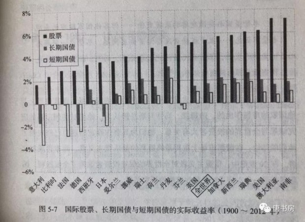
伦敦商学院的这份研究，涉及到四大洲19个能够获取数据的主要国家，涵盖时间段内经历过日俄战争、第一次世界大战、第二次世界大战、经济大萧条、朝鲜战争、古巴导弹危机、滞胀危机、石油危机、美元危机、冷战、美越战争、网络股泡沫等等世界政治经济重大危机，无论是国家样本还是时间段截取，都更具说服力。
尤其值得称道的一点，是这三位教授的研究中，涉及股票收益率研究时，考虑到了“幸存者偏差”，即股票指数不断选择剔除失败者、纳入胜利者导致的实际收益高估。从而使伦敦商学院得到的结论，在股票收益率计算上，普遍比以往的研究成果大幅下降。
例如在1900~1954年之间对英国股市收益率的研究成果上，过往的巴克莱银行/瑞士信贷第一波士顿银行权威结论是年化9.7%的收益率，但伦敦商学院在考虑幸存者偏差等影响因素后，得出的结论是6.2%的年化收益，降幅超过1/3。
即便在这样苛刻的条件下，研究人员发现，在所有主要国家，无一例外，股票的长期收益率均远远超过长短期债券投资，且如果股票收益率低的国家，长期国债和短期国债收益率同样更低。平均来说，股票相对于长期国债的收益溢价为3.7%，相对于短期国债的收益溢价为4.5%。
绝大多数对于复利没有概念的朋友，估计很难想象这个收益溢价导致的终值差异究竟有多大。拿两个《投资收益百年史》里的数据感受一下：
这些国家中，收益差最大的澳大利亚，用1元本金，投资股票百年之后是777249.7元，而投资长期债券百年后是252元，投资短期债券是80.7元；
收益差最小的瑞士，1元本金投资股票百年之后是1136.7元，而投资长期债券百年后是73.2元，投短期债券是25.8元。
为什么会在全球范围内，在跨度百年甚至两百年时间里，都能发现这种股票投资收益率明显高于债券的规律呢？格雷厄姆解释的很清楚：“导致这一现象的根本原因是一国经济的稳步增长，公司将未分配利润用于稳定的再投资，以及20世纪以来通货膨胀率的不断走高。”
一个国家的经济的增长一般以GDP衡量。GDP是“国内生产总值Gross Domestic Product”的英文缩写，指一个国家或地区一年内（或其他周期，例如一个季度内）所生产出的全部最终产品和服务的交易价格总和。正是这些产品和服务，提供了人们吃穿用住行以及社会扩大再生产所需。
人类的生存发展及其需求的不断增加，推动着GDP的持续增长。纵观人类发展史，特别是近现代史，可以清楚地做出判断，除了个别极端的短暂时期由于某些政治经济或宗教的极端情况导致人类文明和经济的倒退，其他时间里人类社会所创造的产品和服务是持续增长的。其背后的原因，是人口增长、土地等资产的自然产出、人类交换和分工的深化、知识的积累等因素。
产品和服务是人的产出，也由人或人的集合体分享。按照参与创造和分享GDP的主体区分，GDP由四种主体创造和分享：一是中央政府和地方政府拿走的税费；二是参与GDP创造的个人所获收入；三是非营利部门获得的捐赠和服务部门提供的中介服务费用；四是企业的盈利。
很显然，在这个经济持续增长的过程中，一个国家内所有的企业作为一个总体，不仅能够分享利润，而且所分享的利润也是持续增长的——普遍而言，现代国家GDP约有70%左右是由企业创造的。
企业是追求利润的经济主体，没有利润就没有企业长期存在的理由。同时，由于企业这种经济组织比个人、家庭或政府有更低的交易费用支出——通过深化分工、专业化协作，以及对利润的激励和对损失的惩罚机制等手段达到的（可参看诺奖得主、新制度经济学鼻祖罗纳德·科斯的论文《企业的性质》——这是他1991年被授予诺贝尔经济学奖的主要贡献），因此，在现代经济中，企业的整体盈利能力是高于个人和中间组织的。
这样，我们就可以得出一个结论：投资于全部企业，回报增速会高于GDP名义增速（我们通常所听到的GDP数据，指实际GDP。实际GDP可以简单理解为名义GDP扣减通胀）。
虽然上市公司并非全部都是优秀企业，但由于有利润、盈利能力、后续融资可能、上市费用支出等多种门槛的筛选，加上与便利的融资渠道及股市交易带来的相关广告效应，总体来说，上市公司的盈利能力高于全社会所有企业的平均水平。发达国家的历史数据证明了这一点，中国证券市场短短20多年的运行情况，也证明了这一点。
在2015年11月30日出版的中国基金报第9版上，刊登过一组中国股市从1991到2014年的扣除通胀后的实际回报率数据：1991年到2014年，中国股票、黄金、人民币三大类资产的年化回报率分别为11.2%（深市）、10.1%（沪市）、2.9%、-4.1%。也就是说，从1991年投入中国股市的1元钱，23年后，在深市能够变成12.81元，在沪市能够变成10.05元，投资黄金变成1.97元。如果持有人民币，则实际购买力大幅缩水成为0.37元。
用代表全部A股的万得全部A股指数来计算十年回报率，从上轮牛市初的2007年初计算至2016年底，中国股市整体年化回报率是11.5%（若采用上轮熊市底2008年10月计算至2018年9月，年化回报约11.6%，基本一致），远高于除核心城市房产以外的绝大多数投资品。
以上逻辑和数据展示了股票投资相比债券投资的明显优势。但是，格雷厄姆一再提醒读者注意，这种高收益率和不相上下的安全性，不是建立在对个体公司的判断上，而是建立在“总体或者群体”的基础上。举例说，2001年贵州茅台出让26%股权上市融资约20亿元，上市至今17年内合计向股东分配现金红利超过560亿，其中145亿以上由购买这26%股权的投资者获得（实际由于2006年我国实施全流通改革，流通股股东享受非流通股东的现金和股份赠送，这26%的投资者实际所获现金红利远大于145亿）。
如果当初这20亿由投资者借给贵州茅台（即购买贵州茅台发行的20亿债券），无论当时约定的利率水平如何，投资者所得本利之和，必将远远少于作为股东已获现金红利，更无法与未来可能继续获得的现金红利相比。从安全性的角度而言，借给贵州茅台的20亿债券，与投资20亿占贵州茅台26%股份，安全性几乎没有分别，但收益率却有云泥之别。
然而，这仅仅是优秀的个体。如果投资者不是认购贵州茅台这样的优质企业股权，而是买下了类似金亚科技、保千里、浪莎股份、中弘股份、乐视网等类型的企业，将投资者看作一个整体，不仅高收益无从说起，连本金也大概率会损失惨重。任何一次的本金大幅损失，对于投资者的打击都是灾难性的，也是格雷厄姆体系所不允许的。因此，格雷厄姆的投资体系里，分散组合投资是非常重要的前提。
就格雷厄姆本人而言，经常持有超过75只个股，他给普通人的建议，也是至少保持30只以上的个股投资。并且，这30或75只股票也不是随意选择的，而是应该选择股价明显低于内在价值的股票持有。格雷厄姆将买入价明显低于股票内在价值这种状况，定义了一个名词叫做“安全边际”。股票除股价以外，还有一个与股价不完全同步的“内在价值”，这是格雷厄姆证券分析体系最大的贡献。所谓内在价值，是一个不确定的概念，大致等于公司作为非上市公司出售给私人产业投资者的价格。准确数字很难计算，但它可以有一个可估算范围。
内在价值来自股票代码背后所代表的公司。购买股票的人，所拥有的并不是一串代码，而是该企业部分所有权的有效法律凭证。股东不仅享有企业经营良好时的未来收益分配权，还享有企业经营不善破产清算时偿还债务后的剩余资产分配权，后者能够为股票的价值兜底，这个兜底价值可以模糊视作内在价值的下限。在这个兜底价值以下买入股票，遇到最坏情况可以收回成本略有盈余，而结果若不是最坏情况，则可以获取丰厚的利润。
格雷厄姆喜欢将企业未来经营良好的预期看作/且仅仅看作一种额外的馈赠。他的整个分析体系，主要锚定与破产和清算有关的兜底价值。这种思维方式与格雷厄姆在1930年前后美国股市崩盘中的经历有着莫大的关系。
1929年9月3日美国道琼斯指数创下381.17点高点后，两个月时间里暴跌40%以上。跌势一直持续到1932年7月，最低跌至41.22点，跌幅超过89%。25年后的1954年，道琼斯指数才重新回到381.17点崩盘位置。
从1929年到1932年，美国国内有101家银行破产，109371家企业及大量中产阶级和农户破产，近1/4的劳动人口失业。1932年9月，全美有3400 万成年男女和儿童，约占全国总人口的28%无法维持生计(1100 万户农村人口未计在内)，200万人四处流浪。
1930年，也是作为基金经理的本杰明·格雷厄姆职业生涯最糟糕的一年，他打理的账户损失了50％。尽管格雷厄姆和合伙人纽曼继续按季度支付0.25%的红利，可是许多损失惨重、惊恐不安的投资者依然坚持撤资，格雷厄姆非常沮丧，已经准备放弃。幸亏合伙人的岳父注入一笔7.5万美元的资金，使基金存活下来。
正是这样的生存环境，使格雷厄姆的《证券分析》体系充斥着大萧条的烙印。他不仅建议投资者将资本分散到至少30只股票以上，且每只股票的买入价格应低于有形账面净值的2/3（有形账面净值=总资产-商誉、专利权等无形资产-全部负债）。在格雷厄姆的眼里，只有这样的买入价格才可以保证即便这家上市公司破产清算，也可以在偿还全部负债后还有剩余资金足以归还股东的本金及产生少量收益。实际上，由于资本天然的逐利本性，这些低于重置价值或者清算价值的公司股票，其市价经常会大幅上涨，绝大部分都无需真的等待清算。
即便如此，格雷厄姆还是建议至多将本金的75%投入到股票投资（其余25%以上购买美国国债），且至少分散到超过30家公司。30家公司中，总有部分被市场错杀的公司可以给投资人带来额外的惊喜，创造满意的回报。——由此你就理解了，部分依仗低pe低pb选股，却集中于一两家企业甚至杠杆持有一家企业，却号称走格雷厄姆价值投资道路的投资人，对格雷厄姆的误解得有多深啊！
可是，这样的出价怎么可能买到股票呢？
格雷厄姆用一个精妙的寓言解释了投资者在市场里的优势。他用一个拟人的“市场先生”来代表市场参与者群体永远不变的人性：贪婪和恐惧交替而来。他说：
投资者应该把市场行情想像成一位亲切的市场先生的报价，他是你私人生意中的合作伙伴。
市场先生从不失信，他每天定时出现并报出一个清晰的价格，然后由你决定是否按照这个价格买下他手中股份或者将你的股份卖给他。
虽然你们两人的生意可能存在某些稳定的经济特征，但市场先生的报价却是不可预测的。因为，这个可怜的家伙患有无法治愈的精神缺陷。
有时，他很高兴，只看到生意中有利的因素，他会制定很高的买卖价格，因为他担心你侵犯他的利益、夺走他的成果；
有时，他又很悲观，认为无论是生意还是世界等待人们的只有麻烦，他会制定很低的价格，因为他害怕你把自己的负担转嫁给他。
如果他的报价很低，你或许愿意买进；如果报价很高，你或许愿意将你的股份卖给他；又或者你也可以干脆对他的报价不予回应。
市场先生还有一个可爱的性格：他不在乎被你冷落。如果你今天对他的报价不感兴趣，他明天会再给你一个新的，交易与否完全由你决定。
很显然，他的狂躁抑郁症发作得越厉害，对你就越有利。
但是，你必须记住一个警告，否则无论做什么都是愚蠢的：市场先生只为你服务却不能指导你。对你有用的是他的钱包，而不是他的智慧。
如果他在某一天表现得特别愚蠢，你有权选择忽视他或利用他，但如果你受到他的影响，那将是一场灾难。
因为有被贪婪和恐惧所左右的市场先生存在，遵循格雷厄姆投资体系的投资者，得以用不到有形净资产2/3的低价买到股票，并在市场先生报价恢复正常的时候卖出去，收获利润。
坚持格雷厄姆原则的杰出投资者非常多，他们被称为“格雷厄姆和多德部落”，其中最杰出的代表是沃尔特·施洛斯。这位仅有高中学历，最初是华尔街一家经纪公司办公室打杂跑腿的小伙儿，因为参加了纽约证券交易机构赞助的格雷厄姆夜校课程，学习并掌握了格雷厄姆的投资体系。
1946年初，从第二次世界大战战场归来的施洛斯（1941年底参军）获得了在格雷厄姆-纽曼基金公司工作的机会，九年半后他辞职开创自己的基金。在施洛斯基金存续的47年投资生涯里，他严格遵守格雷厄姆投资原则，寻找被市场先生报错价的公司股票，获得了47年5456倍，年化20.09%的惊人收益。47年中，施洛斯几乎从不做企业调研，只是阅读和统计企业财报数据，寻找符合格雷厄姆投资要求的公司股票。买下他们，静静等待价值回归，然后卖出，继续寻找，周而复始。支撑这惊人回报的背后，就是伟大的《证券分析》三大原则：股票是企业部分所有权的凭证；无情地利用市场先生的报价；坚持买入时的安全边际原则。
格雷厄姆大概是有一颗悲天悯人的心。尽管在赚钱方面很成功，但他最大的乐趣并不是赚到多少钱——金钱对于格雷厄姆而言，更像是一种记录成绩的方法（对巴菲特也是如此），而是如何帮助没什么天赋的普通人，也能通过证券市场获取满意的回报。
因此，实际上格雷厄姆《证券分析》体系一直建立在使用者没有什么商业能力的假设上，本质上还是一种统计学，一种叠加对价值投资基本原理理解和信赖的统计学，当然，还必须要有基本的财务报表阅读能力和足够的耐心。
还记得吗？1954年，道琼斯指数才突破1929年大崩溃的高点381点。1956年，大约在道琼斯指数400点附近，62岁的格雷厄姆宣布清算基金，退休。虽然期间经历了恐怖的大萧条，但格雷厄姆基金存续33年里年化回报率超过了20%。
退休后的格雷厄姆没有远离市场，一边在大学校园从事投资思想传播，一边关注着股市的波动和发展。晚年，格雷厄姆回顾和总结自己毕生的经验后，甚至提出了一套毫无艺术空间、直接可以直接照猫画虎指导买卖的操作流程。
这套流程发布于1976年9月20日的一本杂志上面（次日，82岁的格雷厄姆去世）。原文是以访谈形式发表的，老唐将其提炼后如下：
①找出所有TTM市盈率低于X倍的股票（TTM市盈率=市值/最近四个季度公司净利润）；
②X=100/两倍的无风险收益率（例如无风险收益率为4%，则X=100/8==12.5）
③资产负债率＜50%（资产负债率=总负债/总资产）；
④选择至少30家以上，每家投入不超过总资本的2.5%；
⑤剩余的25%资金加上选股不足30家导致的剩余资金买入美国国债（假设当时市场只能选出10只符合标准的股票，则股票占比不超过25%，国债占比75%；如果一只也选不出来，国债占比100%；能选出50只，国债占比25%，每只个股投入总资金的75%/50=1.5%。美国国债可以用任何无风险收益产品替代）
⑥任何一只个股上涨50%以后，卖出，换入新的可选对象或国债；
⑦购买后的第二年年底前，该股涨幅不到50%，卖掉，换入新的可选对象或国债，除非它依然符合买入标准。（即2018年9月买入的股票，到2019年12月31日涨幅不足50%，也卖出）；
⑧如此周而复始。
格雷厄姆说：“这是一种以最少的工作量从普通股票中取得满意回报的安全方法。这种方法真好，简直让人难以置信。但我可以用60年的经验保证，它绝对经得起我的任何检验。” 按照格雷厄姆的预计，该方法长期而言能够获得超过15%的收益率。老唐说格雷厄姆投资体系本质是统计学，没错吧？还记得本杰明·格雷厄姆最早的工作岗位吗——统计员！这套方法可以说对商业能力毫无要求，只是要求你深刻理解本文里的“股票总体是长期上涨的”和“低估股票价格上升背后”—的原理即可。
那么，格雷厄姆方法的局限又在哪里呢？巴菲特对格雷厄姆体系做了哪些吸收和改革？老唐个人的简化估值法和这些吸收和改革之间是什么关系？老唐说自己的估值法就是简化到极点的未来现金流折现法，其中简化掉的过程和隐藏的数据假设是什么？
一文厘清巴菲特从格雷厄姆体系分叉的心路历程
话说在格雷厄姆自己的投资生涯中，有一只无法用自己的体系清晰解释的投资对象，该股票的买入明显违背格雷厄姆投资体系标准，却造就了格雷厄姆投资生涯里最大的一笔获利。如果仅仅去掉这一笔投资，格雷厄姆整个投资生涯的年化回报率会从超过20%降低为只有约17%。或许就是从这个项目开始，格雷厄姆最看重的弟子沃伦·巴菲特的内心，已经悄悄埋下一颗对格雷厄姆体系怀疑的种子。这个项目叫政府雇员保险公司，简称GEICO。
1948年GEICO大股东因家庭原因考虑处置持股，派出两名代表到华尔街寻找接盘侠。经历多次失败后找到已经在华尔街很有名气的本杰明·格雷厄姆。就在1948年初，格雷厄姆在纽约金融学院还对学生们讲：保险业对每个人都有利——管理层、代理商、顾客——除了股东。他对保险公司的意见主要集中在两点：第一它不能实现足够多的回报率，投保人的保费最终会因为赔偿而所剩无几；第二，它支付的股利也不够多，这即降低了总收益，也给股东增添了压力。
然而，由于某种未知原因，格雷厄姆对收购GEICO公司50%股权有一种本能的兴趣，虽然也有些惴惴不安。他曾告诉当时已经是雇员的沃尔特·施洛斯说：“沃尔特，万一这次收购效果不好，我们随时可以清算它收回投资”。
最终格雷厄姆-纽曼基金公司以71.25万美元的价格买下了GEICO公司50%的股份。格雷厄姆-纽曼基金合伙人纽曼在1993年接受记者采访时，曾感叹投资中的运气因素实在太重要了。之所以如此感叹，因为这次收购明显违背格雷厄姆一贯的投资原则：
首先，这次收购是按照公司账面净资产值作价的，明显违背格雷厄姆有形资产净值2/3的出价标准；
其次，最终财务报告显示资产少了5万美元（即公司净资产不是71.25×2=142.5万美元，而是137.5万美元），格雷厄姆经过一阵犹豫，还是以高于账面净资产的71.25万完成了交易；
其三，格雷厄姆-纽曼基金的这笔收购，占基金总资金约20%~25%仓位，严重违背格雷厄姆自己的单只个股持仓上限；
最后，更严重的是，很明显格雷厄姆做决策时，连行业基本法规也没摸清楚。交易完成后才发现自己犯了一个大错误：早在1940年颁布的《投资公司法》就已经规定，投资公司拥有保险公司超过10%股份是违法的。
美国证券交易委员会（SEC）要求格雷厄姆-纽曼公司取消这次交易，把股份退给卖家。然而当格雷厄姆找到卖家协商时，卖家拒绝收回这些股票。还好，后来公司获准以一种可以避开税收的方法，将超额的GEICO股票分给基金持有人。搞笑的低级失误解决了，一段传奇诞生。
为什么说是传奇呢？如得神助，GEICO公司就在1949年开始了高速发展，开挂一般的成长速度。到1972年，GEICO成长为全美第五大汽车保险公司。
格雷厄姆承认对GEICO的收购违背自己的投资原则，但是也坚持认为其中不仅仅是幸运的因素。1973年，在他的另一本传世巨著《聪明的投资者》第4版面世时，年迈的格雷厄姆亲自在书末补上一段后记，带有辩解味道地记录了这笔关于GEICO的这笔投资，原文如下：
在本书的第一版出现的那一年，两位合伙人有机会收购一家成长型企业一半的权益。出于某方面的原因，当时这个行业并不被华尔街看好，因此这笔交易被好几家重要的机构拒绝了。
但是，这两个人非常看好该公司的潜力。他们最看重的是，该公司的价格相对于其当期利润和资产价值而言并不算高。两位合伙人以自己手中大约五分之一的资金开展了并购，他们的利益与这笔新的业务密切相关，而这项业务兴旺起来了。
事实上，公司的极大成功使得其股价上涨到了最初购买时的200多倍。这种上涨幅度大大超过了利润的实际增长，而且几乎从一开始，股价似乎就显得过高——按两个合伙人自己的投资标准来看。
但是，由于他们认为这个公司从事的是某种程度上“离不开的业务”，因此，尽管价格暴涨，他们仍然持有该公司大量的股份。他们基金中的许多参与者都采用了同样的做法，而且通过持有该公司及其后来所设分支机构的股票，这些人都成了百万富翁。
出人意料的是，仅从这一笔投资决策中获取的利润，就大大超过了20年内在合伙的专业领域里广泛开展各种业务(通过大量调查、无止境的思考和无数次决策)所获得的其他所有利润。
这个故事对聪明的投资者有什么教育意义吗?一个明显的意义在于，华尔街存在着各种不同的赚钱和投资方式。
另一个不太明显的意义是，一次幸运的机会，或者说一次极其英明的决策(我们能将两者区分开吗?)所获得的结果，有可能超过一个熟悉业务的人一辈子的努力。
可是，在幸运或关键决策的背后，一般都必须存在着有准备和具备专业能力等条件。人们必须在打下足够的基础并获得足够的认可之后，这些机会之门才会向其敞开。人们必须具备一定的手段、判断力和勇气，才能去利用这些机会。
老唐相信这个买入决策绝非运气那么简单，但认真阅读格雷厄姆给出对这家“成长型企业”下重注的理由，不仅含糊而且既考虑到了“离不开的业务”——有点像后来巴菲特喜欢说的“护城河”，也考虑到了成长的因素会导致目前暂时的高价将回落为合理甚至低估。
然而，格雷厄姆一直对所谓成长是这样看的：“我认为那些所谓的成长股投资者或者一般的证券分析师，并不知道应该对成长股支付多少价钱，也不知道应该购买多少股票以获得期望的收益，更不知道股票价格会怎样变化。而这些都是基本的问题。这就是为什么我觉得无法应用成长股那套理论来获得合理的、可靠的收益。”
这桩公案，至今老唐没有在任何书籍上读到过合理的解释。不过，老唐自认可以给出合理解释，就在本文里，待会儿说。
GEICO的股票，沃伦·巴菲特也买了。
正因为知道无比崇敬的老师本杰明·格雷厄姆是GEICO的董事长，21岁的巴菲特在1951年1月的一个周末摸到GEICO公司办公室。除了门卫，当天办公室只有一个人：时任投资主管（也有说是副总裁的）的戴维森（25年后巴菲特再次入主GEICO后，聘请戴维森任了公司CEO）。经过长达四五个小时的“调研”后，巴菲特开始买进GEICO的股票，前后一共买入四次，最后一笔是1951年9月26日，累计买入350股，总投入10282美元。
——注意，这里又有一个异常，按照巴菲特自己历次解释，这笔钱大约占当时巴菲特全部身家的50%~65%之间。这个格雷厄姆得意门生也违背着格雷厄姆个股仓位原则。原因为何，同样等一下解释。
第二年，在GEICO股价上涨接近50%时，巴菲特清仓卖出收回了15259美元——还记得格雷厄姆的卖出准则吗？上升50%卖出，如果第二年底前上升不足50%也卖出。
所以，巴菲特卖出GEICO的决策，基本就是在伟大的格雷厄姆思想指导下做出的。但是，卖出后GEICO股价一直涨一直涨，巴菲特那颗聪明的大脑，是不是应该有一些质疑和反思呢？
老唐希望上面这段表述，不会引发格雷厄姆信徒的不满。老唐绝无诋毁格雷厄姆系统的意思，在我心中，格雷厄姆毫无疑问是最伟大的投资者之一。只是，正如我们如果不将卡尔·马视为不可质疑的神，而仅仅是视为一位伟大的经济学家，或许世界上会少很多悲剧。同样，格雷厄姆是伟大的投资家，但也不是不可质疑的神，他同样是会受情绪、运气、虚荣等人类弱点影响的个体。
不过，此时的GEICO事件，仅仅还只是一粒种子，生根发芽还要等待天意。从格雷厄姆大道上分叉的决定，并不容易做出，因为老师的教诲实在太值钱了，巴菲特每天都忙着从市场里捡钱——很多年以后，巴菲特反思自己很晚才改变，原因就是格雷厄姆投资体系效果实在太显著了。有多显著呢？我们可以捋一捋巴菲特转型之前的财富数据轨迹。
江湖有种谣传，以沃伦·巴菲特为例来说价值投资的钱都是老了以后在才赚到。老了以后赚钱有什么用呢？所以，必须要先投机快速富起来以后，再考虑价值投资。这话以讹传讹已经达到无知的地步。我们可以用有据可查的数据，来看看行走在格雷厄姆光辉大道上的年轻巴菲特，财富是按照什么轨迹增长的。
巴菲特大学毕业时全部身家是9800美元，但这些钱不是靠股市投资积攒的，而是主要靠搞弹子球送报纸之类的经营积攒的。
按照巴菲特自己的说法，虽然10岁多就开始接触股票，但直到遇到《聪明的投资者》这本书前，巴菲特和今天的小散境界差不多，也就是看图表做技术分析，猜趋势打听消息，炒股业绩相当一般。
1950年，巴菲特读到了人生最值钱的一本书《聪明的投资者》，顿悟投资之大道，并随后投身作者本杰明·格雷厄姆教授门下深造。
1951年，巴菲特大学毕业，期望留在格雷厄姆公司无偿工作被拒（被拒原因是格雷厄姆希望把更多的工作岗位留给犹太人），回到老爹的股票经纪公司工作了3年，期间巴菲特严格按照格雷厄姆教诲从事投资，收益颇丰。
这三年里，巴菲特也不断和老师格雷厄姆通信，并将自己看好的股票分享给老师，同时寻求老师的认同。到1954年，格雷厄姆-纽曼基金终于答应给巴菲特一个职位。巴菲特连工资都没有问，立刻动手到纽约报到。
当然，格雷厄姆没有亏待巴菲特，月薪1000美元，这在当时属于比较高的薪水，足够巴菲特在纽约郊区租一栋带花园的房子并养活已经怀孕的妻子了。很可惜，两年后格雷厄姆就宣布清盘退休了。26岁的巴菲特回到家乡，一并带回来的是已经增值为14万美元的自有资金。
此时的14万美元大概有多少呢？巴菲特在1958年买了他一直居住到今天的住房，当时成交价是3.15万美元。2018年，该地段同样的房子大约售价为80万美元左右（年化5.54%）。
以这个价格推算，当时的14万美元至少超过今天的355万美元，折合人民币约2400万——不靠继承和赠予，在26岁时拥有2400万，如果这也不被视为有钱，那有钱的标准是不是也太高了？
实际上，就在巴菲特26岁准备开始自己的事业时，他已经非常清楚的知道自己未来会非常有钱，而且开始思考和担心以后的财富怎么处理。他害怕自己的财富过于庞大，让自己的孩子变成无所事事的纨绔。巴菲特非常烦躁地认为自己“可能找不到一种符合逻辑的处理这庞大金钱的方式。”
巴菲特当时写给一位朋友的信里有这么一段话：
目前这还不成问题，但是如果公司经营越来越红火的话，这种担心就会变成现实，我想了很久也没有得出什么结果。
我敢肯定自己不想给孩子们留下一大堆钱。除非等我岁数再大点，看看这些孩子是否已经成才再做决定。
不过，要留给他们多少钱，剩下的钱该怎么处理，这个问题真是让我大伤脑筋。
如果不了解巴菲特的人读到这段话，很可能觉得是装那个啥。但事实上，巴菲特只是因为清楚地知道投资的底层逻辑和未来必将到来的财富规模——等你彻底弄懂什么是投资，你也会知道自己必将富有，只是还需要你一边享受生活，一边等待它的来临，而已。
你我今天比巴菲特差，不差在他美你中，而是差在他20岁就明白了什么是投资，然后在正确的道路上已经坚定行走68年。而你我或者明白的比较晚、行走的时间还短，或者干脆到今天还没明白。
伴随着年龄的增长，这种幸福的烦恼无时无刻不缠着巴菲特。自巴菲特回到奥马哈开启自己合伙基金后，财富高速增长。其原因当然是令人满意的投资回报，叠加客户资金年收益超过4%部分巴菲特抽成25%的基金规则。
这回报有多令人满意呢？看下表。
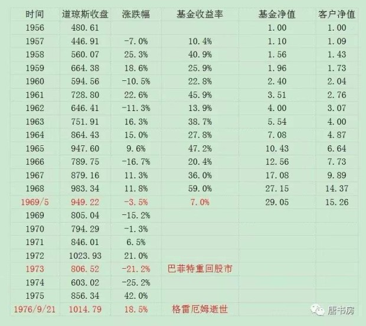
截止1969年5月清盘，巴菲特基金存续的13年间，获利超过28倍，年化回报29.58%。（巧，彼得·林奇的职业生涯也是13年，年化回报29%，略低于年轻巴菲特的13年战绩），基金客户在去掉给巴菲特的提成后，13年15倍，年化回报23.32%，相当惊人。
这种惊人的收益率，一方面带来本金的增值，另一方面也带来新资金的追捧。收益和分账两种原因的叠加，使得巴菲特在34岁时（1964年），个人净资产已达400万美元；1969年，39岁的巴菲特解散合伙基金时，个人净资产已经高达2500万美元。按照前面房价5.54%的年化反折算，1969年的2500万应该约等于今天24亿人民币。39岁24亿，以后千万别再说“搞价值投资要很老后才会有钱”了。
为什么要扯巴菲特的财富值呢？因为这里面涉及到推动巴菲特从格雷厄姆体系分叉的驱动力。
首先，在巴菲特创造巨额财富的过程中，政治经济环境正在发生变化。按照《巴菲特传》的介绍，巴菲特10岁多就开始接触股票的。如果我们以1941年道琼斯指数收盘点位113.53为起点，到1969年巴菲特合伙基金清盘为终点，将每年指数收盘点位连起来，走势如下图。
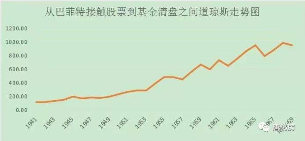
马后炮眼光看，从巴菲特和股票的第一次亲密接触开始，虽然期间经历了可怕的二战、朝鲜战争、美越战争以及几乎造成地球毁灭的古巴核导弹危机，但股市却实实在在是超级大牛市。
在巴菲特投资观成型的18年生涯里，美国股市大盘指数整体涨了736%。什么概念呢？如果以18年前（2000年）上证综合指数开盘点位1368点计算，相当于今天上证指数处在11400点以上的市场走势。推动这个牛市产生的动力很多，但美元和黄金脱钩、导致美元进入法币时代，无疑是其中不容忽视的一股重要力量。
1944年7月，在二战形势已经基本明朗之时，为推动资本主义世界战后经济的重建和发展，全球44个主要国家共同建立了以美元为核心的布雷顿森林体系，以推动全球自由贸易。
其要点就是将金本位的美元作为国际储备和结算工具，由美国政府承诺以当时1美元兑换0.888671克黄金的含金量标准对其他国家政府承兑，其他国家货币和美元之间实施上下波动幅度不超过1%的固定汇率。
然而，由于这种体系天然存在悖论，一方面美元需要保持和黄金的对等比例以维护世界对美元币值的信心，另一方面国际贸易和结算的需要迫使美国大量发行美元到海外。加上美国先后陷入朝鲜战争、越南战争以及和苏联的冷战之中，财政的需要也使美元货币发行量不断扩大，最终导致兑换黄金承诺成为空谈。
比如1960年，美国黄金储备178亿美元，海外流动负债210亿美元，出现美元第一次危机；1968年，因为美越战争的缘故，美国国际收支进一步恶化，黄金储备121亿美元，海外短期负债331亿美元，引发第二次美元危机；到1971年，美国黄金储备仅102亿美元，而海外流动负债超过678亿美元，兑换能力仅约15%。最终，尼克松总统不得不于1971年8月15日宣布停止承担美元兑换黄金的义务。
这样一种市场环境下，金本位的美元开始变成仅靠国家暴力机构规定价值的法定货币，长期通货膨胀倾向昭然若揭。逐利资本从债类资产向更具抵抗通胀能力的股权资产转移的态势势不可当。
大量的资本涌入，加上电视广播报纸等信息渠道工具的快速发展，以及美国证券交易委员会成立后相关信息披露规则的设立，很显然，伴随着长牛的持续，符合格雷厄姆原则的投资对象正在大规模减少。
与之对应的，却是巴菲特手中资金不断增多，对投资对象的数量及单笔可投资额的要求都在持续增加中——1968年巴菲特管理资金超过1亿美元。这样的资金总量下，即便是大量分散到100个投资对象上去，每一个投资对象也是百万美元级别的投资，稍不小心，巴菲特就必须成为那个推动价值实现的人，比如进入董事会、更替管理层，敦促出售资产或者解雇员工。这类经典案例，可以参考书房里的《经典烟头案例拆解》一文。
而且，巴菲特实际上并没有遵守格雷厄姆分散原则的意思，就在《经典烟头案例拆解》一文里介绍的两个案例里，巴菲特在其中一个地图公司砸进去35%仓位，另一个风车公司也是砸进去20%多仓位，并直接买成持股80%的控股股东。
此时，我们来回想格雷厄姆在GEICO上的违背原则，以及巴菲特这几个案例中的高仓位，似乎是说一套做一套。但我认为中间只隔着一层薄薄的窗户纸，老唐来戳破它，各位看看是否合乎逻辑？
戳破很简单，格雷厄姆始终强调的分散原则，是格雷厄姆写给“普通”投资者的。他认为“普通”投资者不具备分析企业资产负债及未来发展状况的能力，所以应该通过大量分散来规避买错的风险。
但是，在他的内心，却默认自己不是普通投资者，是能力和知识远远超过普通投资者的高阶投资者。自己有能力看见成长，自己有能力偏集中（包括巴菲特也是如此）。只是这话政治不正确，无法直说罢了。
以后来巴菲特的话说，就是“当投资人并没有对任何产业有特别的熟悉，就应该分散持有许多公司的股份，同时将投入的时间拉长。如果你是一位稍具常识的投资者，能够了解企业的经营状况，并能够发现5－10家具有长期竞争优势的价格合理的公司，那么，传统的分散投资就毫无意义，那样做反而会损害你的投资成果并增加投资风险”。
这里面曲里拐弯的，就如同网络上自己炒股却建议别人销户，自己买个股却建议别人只投指数基金的人一样，内心的隐藏独白是：“个股是我这种聪明人干的，至于你那点智商水平，还是买点指数混混平均数就好，甚至干脆应该销户保命才对。”——哈哈，有没有这种感觉？
你看，老唐就比较厚道，从不认为研究公司是个什么需要天分才能干的事，经常分享的也是具体公司分析，鼓动的也是大家去做公司研究。就算是遇到新手，老唐一般也是建议：你可以先从指数基金开始，先保证赢，再学习公司分析以求大赢。
如同地图公司和风车公司案例一样，伴随着一个又一个成功的格雷厄姆式投资案例，巴菲特发现自己确实赚到钱了，但却陷入一种很不舒服的状态里：每次费心费力的研究，然后花费大量时间，处理公司资产，解雇公司员工，最终带走的除了金钱外，还有企业员工及相关利益人浓浓地憎恶——破产清算人走到哪儿都遭人讨厌，形象就是个吸血鬼、破坏者。
巴菲特极其反感别人把他叫做“破产清算人”。按照《滚雪球》记载，巴菲特说这段痛苦经历已经让他绝对不想再重复这种销售资产和解雇员工的工作，还曾发誓自己以后绝对不会再解雇员工。
巴菲特想做的事是什么？1993年10月巴菲特接受福布斯采访时，巴菲特曾说过：“世界上对我影响最大的三个人是我的父亲、格雷厄姆和芒格。我的父亲教育我要么不做，要做就去做值得登上报纸头版的事情……”，而且，巴菲特早在21岁时，就曾经参加过一个收费的公开演讲培训班。你说他想做什么事？
很显然，巴菲特想做那些能够登上报纸头版，能够引起人们关注，能够让自己站在台上侃侃而谈的事情。
格雷厄姆体系做不到。格雷厄姆体系下的投资人生存状态是什么？看杰出代表沃尔特·施洛斯。1955年带着19名客户委托的合计10万美元建立基金，连秘书也不请，自己一个人（18年后，儿子的加入使公司人员增长一倍）窝在一个被巴菲特嘲笑为“壁橱”的小办公室里几十年。
几乎从不和上市公司管理层打交道，对推动公司价值实现也没什么兴趣。每日的工作就是读报表，核对数据。投资极度分散，经常持股超过100只。
由于投资对象品种有限，施洛斯不发新基金，而且每年都把利润全部分给基金持有人，除非投资者主动要求继续投资。虽然回报率很不错，但最多的时候基金客户也就92人。
虽然一生累计获得了5456倍的总回报，算回报率很惊人（基金投资回报20%，扣除提成后客户回报率15%），但直到2002年清盘时，施洛斯基金规模最大值也就1.3亿美元——这实际上意味着期间很多资金都没有参与复利增长，因为就算只用10万起步资金，它的5456倍也该有5亿多美元。与之对应的，比施洛斯晚一年多起步的巴菲特，同样以10万美元理财规模开始，到2002年，仅仅属于巴菲特个人的资产已经有350亿美元。完全不是一个数量级的。
因而，此时有至少三个问题需要巴菲特去思考和抉择：第一，时代变了，符合格雷厄姆标准的股票越来越少怎么办？第二，不想做被人讨厌的破产清算人，想得到公众喜欢怎么办？第三，自己是依靠可靠的收益率小富即安，还是要追求能够登上富人榜的财富值规模？
然而，直到巴菲特最烂的一笔投资产生，这个分叉才算真正开始。这笔最烂的投资就是购买伯克希尔（参看书房文章《巴菲特最糟糕的一次投资》上、中、下）。
这次投资，巴菲特坚持格雷厄姆投资原则，以远低于营运资本的价格买进来，以为捡了大便宜。结果经历了卖资产、更换管理层、裁员等一番苦苦挣扎后，最终仍然以远远低于营运资本的价格卖出去。近于免费获得的机器，卖出去的时候也是免费，连运走它们的运费也不够。更惨痛的是，资本在一个烂泥潭里挣扎，所丧失的机会成本大到难以计算。
巴菲特后来忏悔到：
在经过多次惨痛的教训之后，我们得到的结论是，所谓有“转机”的公司，最后鲜有成功的案例，所以与其把时间与精力花费在购买廉价的烂公司上，还不如以合理的价格投资一些体质好的企业——1979年致股东信。
虽然在早期投资这样的股票确实让我获利颇丰，但在1965年投资伯克希尔后，我就开始发现这终究不是个理想的投资模式。
如果你以很低的价格买进一家公司的股票，因为股票市价的波动，应该有机会以不错的获利出手，虽然长期而言这家公司的经营结果可能很糟糕，我将这种投资方法称之为“烟蒂投资法”：在大街上捡到地下有一截还能抽一口的雪茄烟蒂，对于瘾君子而言，只是举手之劳。
然而，除非你是清算专家，否则买下这类公司实在是一种愚蠢的行为。
首先，看似便宜的价格可能最终根本不便宜。一家处境艰难的公司，解决一个难题后不久，便会冒出另一个难题。就像厨房里如果有蟑螂，就不可能只有一只。
其次，你先前得到的价差优势，很快地就会被企业的低回报所侵蚀。例如你用800万美元买下一家清算价值达1000万美元的公司，若你能马上把这家公司给处理掉，不管是出售或是清算都好，换算下来你的报酬可能会很可观。
但是如果这家公司最终是在十年之后才处理掉，即便收回1000万美元和每年有那么几个点的分红，那么这项投资也是非常令人失望的。相信我，时间是好公司的朋友，但却是烂公司的敌人。
或许你会认为这道理再简单不过了，不过我却不得不付出惨痛的代价才搞懂它。实际上，我付出了好几次代价。在买下伯克希尔不久后，我又买了巴尔的摩百货公司——霍克希尔德·科恩公司。
从账面资产看，我的这些收购价格拥有巨大的折扣，这些公司的员工也是一流的，而且这些交易还隐藏有一些额外的利益，包含未记录在账面的房地产价格上涨价值和后进先出法会计原则导致的存货价值低估。我怎么会错过这样的机会呢？
哦……还好我走狗屎运，三年后，我又抓住一个机会以最初的买入价卖掉了它。在卖掉科恩公司的那一刻，我只有一个感想，就像一首乡村歌曲的歌词所述：我的老婆跟我最要好的朋友跑了，我是多么地怀念他!
这个经历给我上了一课，优秀的骑手只有在良马上才会出色的表现，在劣马上也会毫无作为。
无论是伯克希尔的纺织业务，还是霍克希尔德·科恩百货业务，都有能干而忠诚的管理层。同样的管理层在那些具有优秀经济特征的公司里，会取得优异的成绩。但是，如果他们是在流沙中奔跑，就不会有任何进展。——1989年致股东信。
被巴菲特称为西海岸哲学家的查理·芒格，用自己做律师的经验告诉巴菲特：“律师这行有个固有的缺点，就是你喜欢与之共事的人通常不会卷入法律纠纷，而需要你帮助的人则通常是那些在品德方面有瑕疵的人”。“你不可能通过和烂人打交道做成一笔好生意”。
巴菲特经过深思，认为自己已经有大把金钱，没有必要为赚钱去勉强自己干不喜欢的事情，比如和垃圾人打交道，和时间赛跑去处理烂公司的资产存货，解雇人员，被人仇视等。自己想做的事情，是跳着踢踏舞上班，每天都和自己喜欢、信任和尊敬的人打交道，并同时得到别人的尊重和喜欢。
鱼与熊掌可否兼得呢？过自己喜欢的生活方式，是否能够照样赚钱？是。另一位大师的思想撕开了巴菲特的困惑，它就是菲利普·费雪。费雪以重视公司的产业前景、业务、管理及盈利增长能力，把公司的管理阶层必须诚实且具备充分的才能作为选股的前提而闻名。
格雷厄姆认为，投资组合应该多元化，如果只买入一只或两只股票也可能业绩很差，仅有安全边际并不能保证获利。而费雪则认为，人的精力有限，如果太过分散，势必买入许多了解不充分的公司股票，结果可能比集中还要危险。费雪指出，不要只顾持有很多股票，只有最好的股票才值得买。
格雷厄姆认为，如果一只股票买入后获利50%应该卖掉，买入第二年末不能获利50％也应该卖掉。而费雪认为，只有在三种情形下才考虑卖出：1.原始买入所犯下的错误情况越来越明显；2.公司营运每况愈下；3.发现另一家更好的公司。否则，卖出时机几乎永远不会到来。仅仅因为市场波动来决定卖出是荒谬的。
巴菲特分叉了。
尤其是经过和芒格一起收购喜诗糖果后，巴菲特发现买下显而易见的好业务并陪伴它成长，远比买个烂生意整日里想着怎么把它清理掉换些钱进来愉快的多。
而且，只要你愿意去寻找好企业，你总会发现现实世界确实总有那么一些生意，他们简直就是“注定如此”，稍加学习你就能几乎确定地预料到它必然持续产生现金利润，而且完全不需要处理设备、清空存货，也不需要解雇员工，甚至往往还需要增加员工，增加薪水，多发奖金。
也总有些人，你几乎可以百分百确定他/她的能力就是会比行业对手更强，比如著名的B夫人。为什么不专投这些生意呢？为什么不和这些人建立长期的友谊呢？
巴菲特说：“在犯下一系列的错误之后，我终于学会了只与那些我喜欢、信任和尊敬的人做生意。正如我之前提到过的，这条原则本身或许并不能保证成功，一个二流的纺织厂或百货公司固然不会仅仅因为管理层是你想嫁女儿的人而变得繁荣昌盛。但是，股东如果能设法将自己与那些经济特征不错的公司及优秀的管理层结合在一起，却能够成就奇迹。”
巴菲特清楚直白地承认过：“如果我只学习格雷厄姆一个人的思想，就不会像今天这么富有。” 原因很简单，格雷厄姆体系或许可以让收益“率”很高，但却会让自己生活的很狼狈，而且可管理资金规模受限，财富总值会大大缩小，满足不了巴菲特的报纸头条梦。
“我要选择适合我个性及我想要的方式度过一生。英国前首相丘吉尔先生曾说过：‘你塑造你的房子，然后，房子塑造你。’我知道何种方式是我所希望被塑造的”——沃伦·巴菲特。
那么，分叉后的巴菲特是看见好公司买下它，然后就创造了天文数字一般的财富吗？显然不是。
他建立了一套完全不同于格雷厄姆的估值体系用以指导自己的买卖。这套估值体系的奥秘是什么，老唐本人又在它的基础上做了一些什么简化和适合自己的改造。
从格雷厄姆体系分叉后的巴菲特选股秘诀
典型的格雷厄姆式烟蒂股的估值方式，是寻找市值低于有形资产净值或者流动资产净值的股票，这方法清晰明白，可以直接录入数据在excel表格中精确计算。不过，如果对格雷厄姆的认识仅限于此，那就狭隘了。格雷厄姆也并非只盯住烟蒂，对于优质企业，他也有自己的认识。
前面说过，在《聪明投资者》一书中，格雷厄姆曾建议普通投资者投资者同样可以在分散原则下，选择大型的、杰出的、资产负债率保守的、有良好股息发放记录的企业。而且，对于这些企业，格雷厄姆给出的分散度建议，尺度有所放松，显示他也对此类企业具备某种信赖。这类企业他建议分散在10只以上，最多不超过30只（烟蒂投资分散度建议是最少30只）。
在对大型企业的思考中，格雷厄姆给出过自己清晰的估值建议，他说：
我认为道琼斯指数成分股或者标准普尔指数成分股的收益率至少应相当于AAA级债券收益率的4/3倍，这样与债券相比，才有一定的吸引力。
——摘自本杰明·格雷厄姆1974年发表于《金融分析师杂志》的文章《普通股投资的未来》。
这话是什么意思呢？就是说假设目前AAA级债券的收益率是4.5%，则道琼斯指数成分股或者标准普尔指数成分股的收益率应该在4/3×4.5%=6%以上，即市盈率低于16.6倍（100/6=16.6）属于合理位置。
格雷厄姆解释说“股票投资应比债券投资多要求至少1/3的收益，因为股票投资比债券投资麻烦得多。”
并且，格雷厄姆曾给出清晰的买点：
我设定的买点就是当前AAA级债券利率水平的两倍，同时市盈率倍数不超过7~10倍。
如果当前AAA级债券利率水平低于5%，买入最高市盈率倍数设定为10倍；如果当前AAA级债券利率水平高于7%，则买入最高市盈率倍数设定为7倍。”——摘自欧文·卡恩《本杰明·格雷厄姆：金融分析之父》。
这个买点为当前AAA级债券利率水平两倍的思考，源于格雷厄姆的一个研究结果，他说：
我发明了一种简单有效的方法来确定道·琼斯工业平均指数的中间价值，即，以AAA级债券利率的2倍为比例将十年平均盈利资本化。
这种方法假设，一组股票在过十年中的平均盈利可以成为确定其未来盈利的基础，但这种保守的估计会偏低。
它还假设，把AAA级债券的资本化比例提高一倍，可以适当抵销优质股票和债券之间存在的风险差异。
虽然人们或许会在理论上反对这种方法，但是它实际上已基本正确地反映出1881年以来工业普通股票平均的中间价值。——摘自珍妮特·洛尔的《格雷厄姆论价值投资》。
对于卖出股票的时点，格雷厄姆也毫不含糊地给出自己的看法：
作为一个粗浅的常识，投资者应该在主要指数（例如，道·琼斯指数和标准普尔指数）的收益率低于优质债券收益率时离开股票市场。——摘自珍妮特·洛尔的《格雷厄姆论价值投资》。
这种投资方法，实际上算是当前世界最流行的投资产品“宽基指数基金”的雏形了——所谓宽基指数，指类似沪深300指数，中证500指数、香港恒生指数、标普500指数等包含多个行业的指数，跟踪宽基指数的基金就称为宽基指数基金。与之对应的是行业指数基金，比如白酒业指数基金，军工业指数基金，银行业指数基金等。
将格雷厄姆的估值数据套用在宽基指数基金投资上，便可算是指数基金投资的加强版，与定时定额买入指数基金有异曲同工之妙，都可达到估值便宜时多买，估值昂贵是少买（或不买）的效果，从而获取比市场平均水平更高的投资回报。
相比格雷厄姆简单而清晰的价值计算方法和买卖原则，从免费烟蒂进化到陪伴伟大企业共同成长的巴菲特，所要面对的企业价值计算就要复杂多了，对能力的要求也更高。
师徒两人在是否对优秀企业进行深入研究的问题上，有着尖锐的冲突。格老始终思考的是“适合普通人的投资方法”，哪怕是针对大型的、杰出的企业，格雷厄姆也尽量用组合和分散去面对，而不是引导读者去深度研究企业。而巴菲特则寻找着适合自己的、可以百尺竿头更进一步的投资方法。
这种分歧，在《巴菲特传：一个美国资本家的成长》中有清晰地记载，原文写到：
大约是在政府雇员保险公司陷入困境的时候，本杰明·格雷厄姆让巴菲特和他合著《聪明的投资人》修订版。他俩通过写信互相联系，但是巴菲特发现自己和老师之间有一些根本性的分歧。
巴菲特希望在修订版中有一个章节专门论述何为“优秀企业”（例如喜诗糖果公司），而格雷厄姆认为这样的内容对于一般读者太过艰深了。
而且，格雷厄姆建议一个人投资于股票的资产占个人总资产的比例上限为75%，而巴菲特更加激进，他认为如果某只股票价钱合适的话，他会押上全部家当。巴菲特执意坚持自己的观点，因此放弃了这本书合著者的身份。
关于巴菲特的进化，查理·芒格在《穷查理宝典》中这样写到：
我们起初是格雷厄姆的信徒，也取得了不错的成绩，但慢慢地，我们培养起了更好的眼光。
我们发现，有的股票虽然价格是其账面价值的两三倍，但仍然是非常便宜的，因为该公司的市场地位隐含着成长惯性，它的某个管理人员可能非常优秀，或者整个管理体系非常出色等。
一旦我们突破了格雷厄姆的局限性，用那些可能吓坏格雷厄姆的定量方法来寻找便宜的股票，我们就开始考虑那些更为优质的企业。
伯克希尔数千亿美元资产的大部分来自于这些更为优质的企业。
按照老唐的理解，巴菲特的进化主要体现在对格雷厄姆的“股权代表企业的一部分”原则做了细微调整：从“股权代表企业（现有资产所有权）的一部分”，调整为“股权代表企业（未来收益索取权）的一部分”。
在格雷厄姆体系里“股票代表企业（现有资产所有权）的一部分”，因此关注点是企业资产真实性和可变现价值。格雷厄姆体系之所以特别强调计算价值时要去掉商誉、无形资产，只计算净有形资产价值，甚至某些时候还要去掉固定资产和设备，只计算净流动资产。
其核心原因并非格雷厄姆认为商誉、无形资产不是资产，而是认为它们或者无法变现，或者变现非常困难——包括非通用设备及固定资产也是同理。
一旦将思路调整为“股权代表企业（未来收益索取权）的一部分”后，企业今天账面上拥有多少资产，就没那么重要了。重要的是企业靠什么赚钱，今后能够赚到多少钱，其中多少钱可以拿来供股东分配？思考的重心自然而然地从“现在拥有”转向“未来盈利”。
这两者的差异，可以用电影《功夫熊猫》里乌龟大师的一句台词完美解释，这句台词巧妙利用present既有“现在”的含义，也有“礼物”的含义，一语双关，令人拍案叫绝。乌龟大师说：“Yesterday is a history， tomorrow is a mystery， but today is a gift， that is why it's called the present——昨天已是历史，未来充满谜团，只有今天是天赐礼物，所以它被叫做现在（礼物）”。
是的，昨天是历史，今天是礼物，而未来则充满谜团。回顾历史和收下礼物都很简单，而看透谜团则需要能力。幸运的是，巴菲特不仅学习了菲利普·费雪的理论和逻辑，还遇到一位好朋友，用真实的投资实践给巴菲特演示合理价格买入好公司的成功之道。这位好朋友就是查理·芒格。
巴菲特1957年开始运作基金，1960年认识芒格。芒格1962年也做了一个合伙基金。巴菲特的基金于1969年5月清盘，芒格的基金于1975年清盘。俩人在1962~1969年间重合，两种投资风格也有了比较的可能。
这八年二人的基金回报率如下：
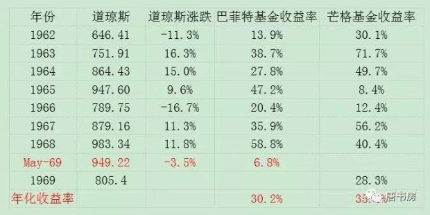
而且，考虑到芒格使用的伴随优质企业成长的思维，完全没有经历巴菲特投资烟蒂企业伴随的处理资产、更换管理层、解雇员工等一系列烦心事，这对于烦透了“破产清算人”角色的巴菲特而言，具备显而易见的吸引力。
从基金成立开始，查理芒格的风格就是集中持有少数几只优质企业。在共存的八年里，虽然关注重点不同，但俩人的业绩都相当惊人，而芒格在八年里有五年超过巴菲特，年化收益率也比巴菲特高出5.4%。这5.4%的差距，会导致8年跨度里，巴菲特将1万美元变成8.25万美元，而芒格将1万美元变成11.46万美元。
「要补充的是，芒格基金在1973和1974年股灾中——道琼斯指数从1973年初开盘1023点跌至1974年底603点——损失比较大，两年分别是-31.9%和-31.5%，最终导致1975年清算时，净值只有12.56元，即1970~1975年间累计只获利9.6%，从而使芒格基金14年存续期年化回报率降低为19.8%，大大低于巴菲特基金13年存续期内的29.5%的回报率」
不想继续扮演破产清算人的角色，加上以直言不讳著称的芒格经常在耳边提醒“格雷厄姆教的很多东西很愚蠢，你该重新想想对老师那么尊敬是否有必要”，格雷厄姆烟蒂投资法渐渐无法让巴菲特满意，那些立足长远的投资才能让巴菲特兴奋。
那时的巴菲特就已经坦言：“尽管自己是一个格雷厄姆式的低价股猎手，但这些年凡是能真正让我产生激情的，都是那些更加注重品质的投资方案”。进化水到渠成。巴菲特说：“芒格绝对是独一无二的，他用思想的力量，拓展了我的视野，让我以非同寻常的速度从猩猩进化为人类，否则我会比现在贫穷的多”。
进化的核心标志，是开始摆脱对账面资产的关注，转而寻找“经济商誉”。巴菲特后来在1983年致股东信里如此描述自己的转变：
我现在的想法与35年前相比，已经有了明显的改变。当时老师告诉我要注意有形资产、避开价值对其经济商誉依赖性很大的公司。这种偏见虽然在经营中很少出错，却让我犯了许多重大的选择性错误。
凯恩斯早就指出了这一问题，他说‘困难不在于要有新观念，而是如何摆脱旧观念的束缚’。我的摆脱进程之所以比较缓慢，部分原因在于我的老师所教导的东西一直让我感到非常有价值（未来也会如此）。
幸好，直接或间接的企业分析经验，使我现在特别倾向于那些拥有金额很大、可持续的经济商誉且对有形资产需求很小的企业。
在1985年致股东信里，巴菲特再一次阐述了经济商誉的价值，他说：
这三家公司（老唐注：指喜诗糖果、水牛城晚报和B夫人经营的家具店）运用少量增量资金便能大幅提高盈利能力，它很好地解释了经济商誉在通胀时期的巨大魅力。
这些公司身上所具有的的财务特质，使得我们可以将他们所得利润大大部分用在其他用途上。其他美国公司则很难做到这一点：为了大幅提高利润，绝大部分的美国公司需要投入大量的新资本。
平均来看，美国公司每创造1美元的税前利润大约需要投入5美元的新资本。如果套用在我们这个例子上，等于额外需要投入3亿多美元才能达到我们这三家公司目前的获利水准。
商誉是个会计名词，指一家企业收购另一家企业时，成交价超过被收购企业可辨认净资产公允价值的部分。巴菲特借用了这个词汇，创造了“经济商誉”这个概念，用来代表没有被记录在一家公司财务报表资产科目里，但却实实在在能够为企业带来利润的隐藏资产。
1990年4月18日，沃伦·巴菲特在斯坦福商学院演讲时说：
如果一家企业赚取一定的利润，其他条件相等，这家企业的资产越少，其价值就越高，这真是一种矛盾。你不会从账本中看到这一点。
真正让人期待的企业，是那种无需提供任何资本便能运做的企业。因为已经证实，金钱不会让任何人在这个企业中获得优势，这样的企业就是伟大的企业。
这种经济商誉之所以宝贵，就在于他构成了一条仅靠金钱填不平的护城河。在资本逐利天性的驱使下，仅靠金钱就可以填平的护城河，一定会被金钱填平。拥有金钱无法购买的经济商誉，企业才有成为伟大企业的可能性。
这个经济商誉藏在哪里，该如何寻找呢？
其实巴菲特已经多次公开告诉我们寻找方法了，那就是顺着ROE（净资产回报率）指标去寻找。他说：“我选择的公司都是净资产回报率超过20%的企业”。
大部分投资者对于ROE指标的使用有误解，以为ROE很高的企业，账面资产有什么神秘之处，值得市场以很高的价格购买。
其实不然，当我们看见一家公司财务报表里用很少的净资产就创造了很高的利润（即ROE很高），它的含义并不是这家公司的账面资产有什么神奇之处，而是代表一定有些什么能带来收入的东西，没有被记录在财务报表上。
所以，ROE指标实际上需要我们倒过来看：看到高ROE，要去思考这家公司有什么资产没有记录在账面上？看到低ROE，要去思考这家公司的什么资产已经损毁，却还没有从账面上抹去？
倒过来的意思，是首先要从逻辑上假设，由于资本无时无刻的逐利行为，当下所有资产的回报率实际是一致的，全部都是常数N（否则会导致套利行为发生，直至达到一致或差异小于套利成本）——N可以取值无风险收益率，例如国债、AAA级债券收益率或者银行保本理财产品收益率等。
让我们列个小学数学方程式阐述它，那就是：
（净资产A+经济商誉G）×N＝净利润＝净资产A×Roe
这个方程里，未知数只有一个G，简化后可得一个关于G的等式：
G=（Roe/N-1）×A。
它表明经济商誉G和Roe之间的一个对应关系：Roe越大，G值越大；Roe越小，G值越小；当Roe＜无风险收益率N时，G值为负。
因此，巴菲特说首选ROE指标，意思是说ROE就像路标，指引他去发现那些具备高经济商誉+低有形资产的企业。
那么，是不是具有高经济商誉的公司，就是可以投资的对象呢？显然不是，具备某种经济商誉，和这种经济商誉是否能够继续存在，这涉及到对具体生意的理解问题。
于是在格雷厄姆投资体系三大原则“①股票是企业部分所有权的凭证；②无情地利用市场先生的报价；③坚持买入时的安全边际原则”基础上，一条新的投资原则顺利成章地演化出来，那就是“④能力圈原则”。
所谓能力圈原则，就是指将自己对企业估值和投资决策限定于自己能够理解的企业。通过这个原则，所有企业可以简单粗暴地划分为八类：
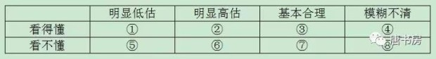
这些企业如同一个一个的网球飞过来，而巴菲特和芒格则手持球拍，永远等待球进入①和②的甜蜜区才出手：①买入，②卖出。
股市的迷人之处在于，它从来不会因为你没有行动而惩罚你，你有绝对权力等到你最有把握的时候再出手击球。
那么，什么是看得懂，什么是看不懂呢？
所谓看得懂，简单的说就是能够理解高ROE企业的生意模式和经济商誉的可持续性。换成通俗的表达就是：
①这家公司销售什么商品或服务获取利润？
②它的客户为何从它这里购买，而不选其他机构的商品或者服务？
③资本的天性是逐利。为什么其他资本没有提供更高性价比的商品或服务，抢占它的市场份额或利润空间？ ——更高性价比，即可以是同样质/数量+更低售价，也可以是同样售价+更高质/数量。
这三个问题，实际上就是找“公司究竟靠什么阻挡竞争对手”，这个“什么”就是投资理论书籍里常用的词语“护城河”。这些护城河通常可能是差异化的产品或服务、更低的成本和售价、受法律保护的专利或秘不外漏的技术、更高的转换成本或者所占据的优越位置等等。
总之，总得有一样或几样东西，是竞争对手需要非常高的代价才能获得，甚至是无论多高代价都无法获得的东西。
找到企业的护城河之后，代表看懂这家企业了吗？依然没有。历史上企业靠着这条河挡住了其他竞争者，但未来呢？竞争者有没有办法填平这条河，或者给这条河搭上桥，甚至用飞翔空降的方法绕过这条护城河，直接进入企业的城堡（争夺用户）呢？
也就是说，你是否能够确定或至少大概率确定，这条护城河未来依然能够阻挡住其他竞争者的进攻？这样我们就需要添加一条问题了，问题④：假设同行挟巨资，或者其他产业巨头挟巨资参与竞争，该公司能否保住乃至继续扩张自己的市场份额？
能够逻辑清楚地回答这四个问题，就基本意味着看懂一家企业了，反之，则可以暂时归为看不懂的行列，或者排除或者归为待学习对象。
能力圈原则的核心不在于投资者懂多少企业，而在于如果无法确定自己能够理解该企业，就坚决不去投资，哪怕为此将所有企业均排除在外。
如果排除了所有企业，那还投资什么呢？别忘了，老唐在前面已经谈过的：
普通投资者完全可以立足于先赢，而后再去求大赢。
首先立足长远，理解因为沪深300指数基金代表上市公司群体中相对优质的企业群体，所以沪深300指数基金的回报＞全部上市公司的平均回报＞全国所有企业的平均回报＞名义GDP增长率＞实际GDP＞长短期债券回报＞现金及货币基金回报”的这个逻辑链，大胆投资沪深300指数基金（投资回报率高于债券时就是好时候，比如现在）。
在确保能够获取高于GDP增长速度回报的基础上，再去学习投资，通过学习资产配置和挖掘优质企业来进一步提升投资回报率。
看懂企业容易吗？当然不容易，所以巴菲特一直强调自己喜欢简单的、变量少的企业，他说：
投资者应当了解，你的投资成绩与奥运跳水比赛的计分方式并不相同，高难度并不能得到加分……我们偏爱那些变化不大的公司与产业。
我们寻找的是那些在未来10年或20年内能够保持竞争优势的公司。快速变化的产业环境或许可以提供赚大钱的机会，但却无法提供我们想要的确定性……我们宁愿要确定的好结果，也不要“有可能”的伟大结果。
我从那些简单的产品里寻找好生意。像甲骨文、莲花、微软这些公司，我搞不懂它们的护城河十年之后会怎样。比尔·盖茨是我遇到的最棒的商业奇才，微软也拥有巨大的领先优势，但我真不知道微软十年后会怎样，无法确切地知道微软的竞争对手十年后会怎样。
我们试着坚守在自认为了解的生意上，这表示它们必须简单易懂且具有稳定的特质。如果生意比较复杂且经常变来变去，就很难有足够的智慧去预测其未来现金流。
我知道口香糖生意十年后会怎样。互联网再怎么发展，都不会改变我们嚼口香糖的习惯，好像没什么能改变我们嚼口香糖的习惯。肯定会有更多新品种的口香糖出现，但白箭和黄箭会消失吗？不会。你给我10亿美元，让我去做口香糖生意，去挫挫箭牌的威风，我做不到。
我就是这么思考生意的。我自己设想，要是我有 10 亿美元，能伤着这家公司吗？给我100亿美元，让我在全球和可口可乐竞争，我能伤着可口可乐吗？我做不到。这样的生意是好生意。你要说给我一些钱，问我能不能伤着其他行业的一些公司，我知道怎么做。
我不喜欢很容易的生意，生意很容易，会招来竞争对手。我喜欢有护城河的生意。我希望拥有一座价值连城的城堡，守护城堡的公爵德才兼备。我希望这座城堡周围有宽广的护城河。
好生意，你能看出来它将来会怎样，但是不知道会是什么时候。看一个生意，你就一门心思琢磨它将来会怎么样，别太纠结什么时候。把生意的将来能怎么样看透了，到底是什么时候，没多大关系。
只要是好生意，别的什么东西都不重要。只要把生意看懂了，就能赚大钱。择时很容易掉坑里。只要是好生意，我就不管那些大事小事，也不考虑今年明年如何之类的问题。
好了，一路筛选下来，巴菲特找到那些“简单易懂的、具有我们能理解的经济商誉、且由德才兼备管理层掌管”的企业，现在是不是可以立刻买入呢？
不，现在需要做的是估值。别忘了，好公司也需要一个合理的价格。巴菲特用什么方法对企业实施估值呢？老唐又如何在A股运用巴菲特的估值思想呢？
不谈玄之又玄的“道”，老唐一文说清估值“术”
巴菲特从来没有清晰地解释过他的估值方法，他只是说了原则。巴菲特说：
任何股票、债券或企业的价值，都取决于将资产剩余年限自由现金流以一个适当的利率加以折现后所得到的数值，它是评估某项生意或者某项投资是否具有吸引力的唯一合理方法。
对于任一项生意，如果我们能够计算出其未来一百年内的自由现金流，然后以一个合适的利率折现回现在，那么就可以得到一个代表内在价值的数字。这就像一个一百年后到期的债券，在债券的下面会有很多的息票。
生意也存在“息票”，唯一的问题那些“息票”并不是像债券那样打印在其下面，而是需要依靠投资者去估算未来的生意会附带一个什么样的“息票”。
对于高科技类的生意，或具有类似属性的生意，会附带一个什么样的“息票”，我们基本没有概念。对于我们了解得比较深入的生意，我们试图将其息票“打印”出来。如果你想要计算内在价值，唯一可以依靠的就是自由现金流。
你要将现金投入到任意一项投资中，你的目的都是期望你投入的生意在此后能够为你带来更多的现金流入，而不是期望把它卖给别人获利。后者仅仅是谁战胜谁的游戏。
如果你是一个投资者，你的注意力集中在资产的表现上；如果你是一个投机者，你的注意力集中在价格会如何变化——这不是我们擅长的游戏。
自由现金流，指从企业通过经营活动获取的现金里，减去为了维持生意运转必须进行的资本投入，余下的那部分现金。也就是企业每年的利润中可以分掉而不会影响企业经营的那部分现金。
折现是一个常见的金融概念，如果确定的年收益为10%，那么一年后的110万和今天的100万等价，两年后的121万和前两者等价，依次类推。这个110/110%及121/110%²的计算过程就叫做折现，10%就是折现率。
理论上，可以将企业未来每年的自由现金流，按照某折现率（无风险收益率+风险补偿）逐笔折现到今天。所有年份现金流的折现值加总，便是该企业的价值。
实践运用中，又有两段式自由现金流估值和三段式自由现金流估值的分法。前者是将估值分为可准确预计的前段和大致估算的后段，前段一般采值三年或五年，逐年估算自由现金流数值。后段则直接采用公式“价值=自由现金流/（折现率-永续增长率）”计算。然后将前段和后段分别折现加总，得出企业内在价值。三段式和两段式的分别，是将前段又分成高速增长期和低速增长期两部分，其他不变，依然是将三段分别折现加总，得出企业内在价值。
然而，老唐个人认为，这些计算方法的可靠程度几乎为零，它更像一种精确的错误。投资者只要调整企业每年自由现金流估算值、折现率和永续增长率三个变量中的一个、两个或全部，几乎可以得到想要的任何数据。
在老唐看来，自由现金流折现法其实只是一种思考方法，它是筛选投资者能够理解的、产生大量自由现金的高确定性企业的工具。这个筛选过程可以用一张流程图表示：
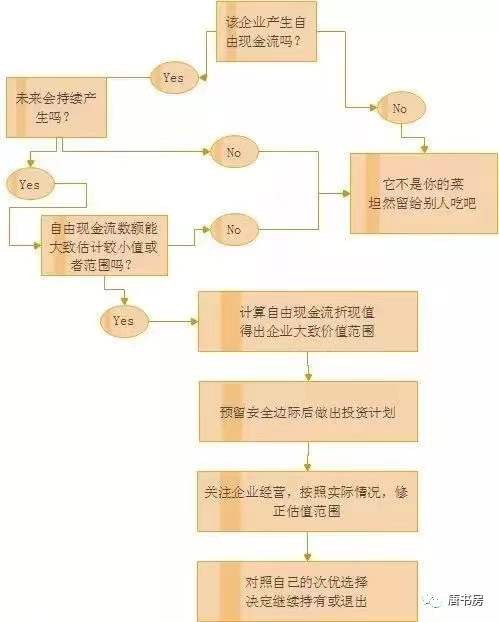
通过这个思路，我们可以去寻找和甄别那些可以持续产生现金利润，且未来不依赖大量增量资本投入也可持续产生现金利润，又属于我们能够理解的企业。至于精确计算的公式，建议还是忘了它吧！全球私募巨头黑石集团的创始人彼得·彼得森说：“华尔街有句话老话，只要掌握小学二年级的数学，就可以在华尔街生存了”。复杂的公式，超小二要求了，忘掉最好！
在2002年股东大会上，有位提问者直接问巴菲特：“您平时使用什么估值指标？”巴菲特的回答是：
生意的合理估值水平与标准普尔500指数相比的优劣，取决于生意的净资产回报率和增量资本回报率。
我不会只盯类似像PE这样的估值指标看，我不认为PE、PB、PS这些指标能告诉你什么有价值的信息。
人们想要一个计算公式，但这并不容易。
想要对某门生意进行估值，你需要知道它从现在开始直到永远的自由现金流量，然后把它们以一个合理的折扣率折现回来。
金钱都是一样的，你需要评估的是这门生意的经济特质。
有没有一点小失望？老唐感同身受，因为我也曾经沉迷于寻找一个可以用来计算的估值公式，直到有一天突然想明白了原来巴菲特说的“All cash is equal”就是他的估值大法。“All cash is equal”意思就是“金钱都是一样的，比较它们就是了”。
老唐用一张图来示意，下图外面那个圈是能力圈，圈里有个天平，投资者就是随时将自己有意向的资产摆上天平，用手头现有的资产去参与比较，然后选择投资收益率明显较高的那种持有就可以了。
这就需要投资者具备一种长期甚至是永恒的视角。长期或永恒视角，并不是指的我们一定要持股数十年以穿越牛熊，而是哪怕我们只是进行短到三五年的投资时限，也需要以一种永远放置财富的思想去对待。
对于绝大部分投资者，如果能理解投资是一件持续终身的事（不买股票，其实只是将体力或智力换来的财富投资了银行存款、理财产品、黄金、房产……），那就应该建立目标：以当前社会的财富水平而言，自己在股市赚到至少八九位数以前，主要还是扮演一个放置财富进股市的净买家身份，顶多是期间有过短暂的、不得已的离场。
市值是资产盈利能力的资本化，是资产盈利能力的市场交易价格，只要我们的资本始终放置在能力圈范围内盈利能力最强的资产上，获取更高的市值是必然的结果。市场长期是一台称重器，参与者的恐惧和贪婪可以影响短期投票，但不会影响长期称重，资本的逐利天性必将推动股价反应资产盈利能力的差异。
实际上，将价值投资等同于长期持股，是市场常见谬误。价值投资的本质是寻找由于市场先生的癫狂而产生的市价与内在价值之间的差异，正如格雷厄姆所言：“市场就像一只钟摆，永远在短命的乐观（它使得股票过于昂贵）和不合理的悲观（它使得股票过于廉价）之间摆动。聪明的投资者则是现实主义者，他们向乐观主义者卖出股票，并从悲观主义者手中买入股票。”
这钟摆左右摆动的时间，并无定数，有时长，有时短，但长短不是本质特征。从金钱的时间价值上说，同样是市价反应内在价值，即便是最彻底的价值投资者，内心也是期望着过程越短越好。
通过长期甚至是永恒的视角，我们需要忘记将资产变成现金的需求（以供消费），以这笔钱永远只是用来投资增值的思路去考虑问题。这也需要我们使用的投资资金在期限上具备一定的灵活性。
虽然永恒对于绝大多数投资者是做不到的，但至少要保证这笔资金不会在短期内被迫因某种原因必须变成现金——经验上说，这期限至少要有三到五年以上。这样我们可以有很大概率只在类现金资产回报率更高的时候，使用股票交换类现金资产。
一旦以这种长期或者永恒的视角看待投资，关注短期股价就失去了意义，因为我们并不需要抓住某个间不容发的关键时刻将投资品变成现金退出股市。
即便我们卖掉了某投资品，依然需要买入其他投资品，所以它依然只是一个比较的过程，只是不断在资产目标中权衡哪一种资产收益率明显较高的过程，根本不需要用哪一种资产短暂的市价表现来评判自己投资的胜或负。
投资者只是在“遇到”所持资产被市场明显高估时，换入其他资产罢了。
会遇到吗？一定会。
何时遇到？没人知道。
我们可以将盈利能力更高的资产，想象成一块更肥沃的农田。市场先生的收购出价如果不是“明显较高”——足以勾引你将农田变卖后所得资金投资无风险产品，也能获得等于或者高于农田产出即为明显较高——我们就安心种自己的地，安心收自己的粮便是。它的出价如果不是明显较高，就是噪音，不是评价你的投资成功或失败的标准——农田的产出是否如你所料，才是标准。
这样，我们要做的，只是在市场先生平静或者悲观时，依赖资产的高盈利能力获取高于市场平均回报水平的财富积累，这些积累或者继续以利滚利的方式做大我们的财富总值，或者在市场先生亢奋时，给我们交换来届时回报率“明显更高”的类现金资产。
何为“明显较高”，巴菲特也做过清楚解释：“如果国债收益率为2%，那么收益率低于4%的企业我们是不会投的”，这句话同样脱胎于格雷厄姆“股票买点为收益率高于无风险收益率两倍”的研究结果。
老唐理解它的含义还包含说估值是个区间，而且可能会错，所以若没有一倍以上空间，就算不上“明显”。没有明显空间就保持原样，6%、7%的预期收益率，不足以吸引投资者从5%收益率产品上转换，预期10%以上收益率的产品，才构成转换的吸引力。
当我们完全没有任何能力圈的时候，这个天平的一头就是类现金资产，比如目前回报率约3.8%的货币基金。在我们理解前面谈过的股票回报来源的逻辑后，至少我们可以将当前市盈率约11倍（相当于投资回报率约9.1%）的沪深300指数基金纳入比较，于是沪深300指数基金就可以登上天平的一端。期待三到五年内，沪深300成分股盈利不断提升的同时，市场先生同时推动沪深300指数基金投资回报率不断走低，给我们带来满意的回报。
比如未来三年时间里，假设GDP年增6%，CPI年增2%，则名义GDP为8%，保守假设沪深300成分股盈利增速与名义GDP增速同步，则三年后沪深300成分股利润总额提升26%，若同时投资回报率从9.1%下降到6%（即市盈率从11上升至16.7），投资者将产生91%的回报（16.7×1.26/11×1=191%）。
若投资回报率继续高居9%甚至更高怎么办呢？凉拌。继续拿着，一边坐看盈利增加，一边等待投资回报率向无风险利率靠拢。如同一位朋友的微信签名：做一件有价值的事情，一直做，然后等待时间的回报。
这期间，如果通过我们的研究学习，发现某种投资回报率明显高于沪深300指数基金的品种，换入新品种。同样，如果由于盈利下降或者市盈率上升的原因，导致沪深300指数基金或者某股票的回报率明显低于类现金资产了，那就换入类现金资产即可。
从这个思路考虑，自然就失去所谓半仓空仓等仓位概念了。类现金资产也是候选投资品，投资者只是永远在自己能够理解的候选投资品范围里，选择投资回报率明显较高的那个就好。
估值就这么简单，只是一个比较，比较不同资产之间的盈利能力。正如芒格在回答“您是怎么估值的”时说：
估值没有一种固定的方法。有些东西，我们知道我们的能力不行，搞不懂，所以我们不碰。有些东西，是我们很熟悉的，我们愿意投资。
我们没有一套固定的规则，也没什么精确的公式。现在我们做的一些投资，我们只是知道，与其他机会比起来，这些机会稍微好那么一些。
我们只是知道，与其他机会比起来，这些机会稍微好那么一些。——这就是估值的全部。
更高的盈利能力，必将被逐利资本推高价格，这与你我是否想赚股价差完全无关。正如巴菲特在1987年股东信里引用的《财富》杂志研究成果：
1977年到1986年间，每1000家企业中只有25家可以通过两项有关企业是否杰出的测试：①10年内的平均净资产收益率达到20%；②没有任何一年低于15%。
这些生意上的超级明星同时也是股票市场的宠儿。在这10年里，25家中有24家的股价表现超越了标普500指数。
在大师思想的照耀下，老唐个人将实战中的估值简化为一句话：“三年后以15~25倍市盈率卖出能够赚100%的位置就可以买入，高杠杆企业打七折。”
这里有两个概念要解释。
①这里说的高杠杆企业，指有息负债超过总资产70%的企业。有息负债就是需要企业支付利息的债务，通常出现在短期借款、一年内到期的非流动负债、长期借款、应付债券、其他非流动负债科目。金融类公司通常还会有向央行借款、吸收存款及同业存放等科目。
②打七折的意思指对于高杠杆企业，要求三年后以10.5倍市盈率（简化为10倍）卖出就能赚100%时，才会考虑买入。打折的原因是高杠杆企业更脆弱，对于宏观经济及意外情况更加敏感，所以需要更高的风险溢价作为补偿。
这种简化的估值法，同样需要首先确定三大前提：利润为真否？可持续否？维持当前盈利需要大量资本投入否？这是理解企业的范畴。不能回答这三个问题，属于看不懂的企业，无法谈论估值，直接淘汰。
在确定了这三大前提后，老唐的简化估值法实际上是两段式自由现金流折现法的极简版本，即：
第一步，估算最近三年企业所能产生的自由现金流。由于已经确定该企业利润为真，可持续，且持续不需要大量的资本投入，所以直接借用报表净利润近似替代自由现金流，即假设公司每年计提的折旧和摊销费用，足以支持企业维持当前盈利水平——再次强调，必须要确认企业能够满足三大前提才能使用如此替代法；
第二步，保守地将三年后的该企业视为等同于债券的资产。由于目前无风险收益率大致在4%~5%区间，对应市盈率20~25倍。
或者也可以看作假设永续增长率等于无风险收益率，而要求回报率（折现率）为无风险收益率的两倍（两倍设置参照格雷厄姆的研究成果“把AAA级债券的资本化比例提高一倍，可以适当抵销优质股票和债券之间存在的风险差异。”）
对于某些确定性稍微差点儿，或者净利润可能并非全部是自由现金流的企业，做粗略的折扣调整，按照15~20倍市盈率计算（实际是模拟了市盈率不变，但自由现金流数额降低）。
最终得出三年后合理估值为15~25倍市盈率区间——所谓合理估值，指假设市场认同该资产相当于一份债券的情况下给出的估值，或者假设该企业永续增长率等于无风险收益率，同时要求回报率两倍于无风险收益率的情况下给的估值。
这个合理估值的市盈率倍数，不区别行业特性或企业历史市盈率数据，它只受无风险收益率变动影响。不同的行业或企业，或许在自由现金流与净利润的比例关系上有不同，投资者需要做的是调整自由现金流估算值。
至于合理市盈率，别忘了All cash is equal，没有哪个行业赚到的金钱比其他行业低贱或者高贵，它们赚到的自由现金流，对投资者只有数量多少差异，没有质地优劣差异。
实质上，符合前述三大前提的企业，几乎确定长期价值高于债券，将其等价于债券估算合理估值，或者在债券的基础上折扣计算合理估值，具备一定的保守因素。
——也有极少的案例，企业自由现金流可以预期长期高于报表净利润，老唐会将三年后的合理估值对应市盈率从25倍上调至25~30倍区间，以体现该企业明显优于债券的特点。但这种情况需要非常谨慎。截止目前为止，老唐仅对茅台和腾讯两家公司实施过这种上调。
第三步，即便如此，也要考虑有估算错误的可能——投资者一定有机会犯错的，我保证——给自己预留足够的安全边际。因此将两段估值折现加总后再给予50%左右折扣，确定为买入价格。
实战中，为简单起见，大概地以前段自由现金流数额抵扣后段折现导致的减少部分，直接以第三年未折现估值的50%做简易估算。这个买入价格，基本保证自己的估算即便出了偏差，也很难造成亏损。
这个简化估值法虽然没有使用自由现金流折现法的具体计算公式，但它和自由现金流折现法同样具备如下特点：
①都需要考虑三大前提，在确信目标企业符合三大前提的情况下，才可以使用。我们必须要坦率承认，大部分企业我们是无法估值的，无论对其计算出个什么数字，都是瞎蒙；
②从这个意义上说，这两种估值法与其说是“估值公式”，不如说是一种选股原则，是将大部分企业拒绝在股票池之外的工具；
③都使用了约8%~10%的要求回报（折现率）和约4%~5%的永续增长率假设。对于永续增长率难以确定超过无风险收益率的企业，实施排除。
④都坚持长期的思考方式，忽略受到各种短期因素影响的股价波动，以至少三年的时间长度和资金占用时间，去看待企业内在价值的变化；
⑤都认定自己会有估算错误，坚持安全边际要求，留下容错空间。
那么，估算出来以后，是不是就等待三年或更短时间内翻倍然后卖出呢？不是。别忘了，投资者应该用长期乃至永恒的视角看待投资。
买入后，老唐做的事情，就是每年（或有重大事件发生时）继续按照简化估值法对持有企业估值，然后与手边潜在的各种投资品种——不仅包括已持有企业、新涉及企业，也包括指数基金及债券、货基、理财等类现金资产——进行收益率比较。
如果无法看出某品种收益率明显更高，则持有不动；反之，则调换——若调换品种如果恰好是债券、货基、理财等类现金资产，看上去就像是日常我们所说的减仓卖出。
任何持股，只有一个结局，被其他更高收益率的投资对象替代。而替代的原因可能有两种，一种是价格上涨导致的收益率下降后被替换，一种是有证据证明之前的估值有错误而导致被替换。就这么持续，直到永远。
至此，投资需要学习的两门课程“如何看待股价波动和如何估值”全部阐述完毕。
如果我们选择格雷厄姆所提供的两条道路——持有一篮子市值低于清算价值企业组合，或者持有一篮子投资回报率为无风险利率两倍以上的大型优质企业组合，以及以后者为基础延伸出的指数基金投资法，那么投资所需的知识储备到此已经足够。
老唐本人是强烈推荐投资者先从定时定额投资宽基指数基金开始，立足先赢，而后再根据自己的资金水平和兴趣爱好，决定是否更进一步，走巴菲特深入研究企业的道路。
如果准备走深入研究企业的道路，那么就还需要面对一个难题：如何看懂企业？这问题没有捷径，没有统一答案，如果有，那股市会是电脑模型的地盘，不会有我们的存身之地。
看懂企业需要我们针对一个一个行业，一个一个企业去逐个学习，它是投资者一生学无止境的课题，也是投资道路上最大的乐趣。只能一起携手前进，继续日拱一卒……（本系列完）
宝贵的熊市，宝贵的课堂
入市就遇到熊市，尤其是带着一笔小钱遇到熊市，简直是投资者一生最宝贵的财富。它能让你养成敬畏市场的基本理念。敬畏不是因为市场多伟大，而是知道短期内它是个行为无法预测的疯子。任何将盈利希望建立在正确预测疯子行为基础上，结果要么真疯，要么欲输临疯。
真正核心的东西就两条：一个是不要将股票当做赌博筹码，不要寄希望于自己能掏别人腰包；一个是牢记市场短期波动不可预测，永远不碰杠杆。——记住这两点，你不可能不赚钱；反之，后面等待你的悲惨日子还多着呢！
书房上篇文章里，有位朋友提出过一个关于杠杆的好问题：低估的时候，可不可以上点儿“低”杠杆？这可能是很多人内心都有的疑问，尤其是在已经满仓的情况下。老唐答到“低估之后照样可能有暴跌，低估之后上杠杆同样可能先被暴跌干死然后才大涨”。这会儿看，当时顺口答的不完整。只回答了杠杆的问题，没有解决“低”杠杆问题。
我的观点是：拒绝在资本市场加杠杆就像守贞，最稳妥的办法是永远不踏出第一步。否则，有了第一次就会有第二次。因为低杠杆赚钱的甜头会导致下一次低杠杆，一直到某次低杠杆错了，被迫变成高杠杆。高杠杆再重复，有甜头导致继续，直到某次（或者第一次就）归零。
没有杠杆，只要企业经营正常，下跌能如何？三年之内，市值会不会有相比今日再腰斩？我不知道。但是————只要股市还在（若股市被割了资本文主义尾巴，手持人民币或房产结局也差不多），保守的说：三五年内，我的市值一定有比今天高百分之三五十的时候——年化双倍于货基、理财等类现金资产收益率，是近于100%确定的事（老唐白屏红字留在这里等验证）——因为我旗下公司的核心竞争力在，管理人员的能力出众；因为无论股价涨跌，茅台每天净赚1亿白花花现银；无论股价涨跌，腾讯一天净赚超过2亿白花花现银……；也因为市场的悲观会被遗忘，乐观还会来临——这几乎和“凡人必有一死”那么确定。
无杠杆持有优秀的公司，下跌中哪怕你手中已没有一分现金，结局会是什么？只要短期内不会被迫卖出，无外乎是眼馋一下张三丢的钱包被李四王五捡走（而不是被你捡走）罢了，于己毫发无损。
年初高点，我记得好像最高获利是大约11%，今天变成亏损15%，回撤已接近2015年股灾时的回撤。下图是当时在雪球的“老唐实盘”最大回撤截图。我要说的是，截止今天，在这个大盘指数不到2600点的时刻，不计新增资金，不计历年打新收益，相比上证指数5178点时（2015年6月回撤前的最高点）的市值，老唐账面还有超过58%利润——2017年底市值×0.85%/5178点时市值＞158%。
这期间活动在大家眼皮底下，没有施展什么抄底逃顶神功（没那能耐），也不是每只股票都看对（也没那能耐），更没有择时半仓空仓大类资产轮动（更没那能耐），但市场先生没亏待我。我喜欢市场先生，喜欢他撒娇，喜欢他发癫。
认真读过老唐在书房里多次重复过的股票利润来源，知道“只要持股企业真赚钱，自己就会赚真钱”背后的逻辑，眼前的大小波动，浮云尔。不需要挺住，不需要坚强，不需要雄起，只需要坐看花开花落云卷云舒，安静等待即可……
市场先生的出价，从来不可以作为评判自己对错的标准，公司的经营状态才是。比如，2018年腾讯的报表利润若大幅低于900亿，股价哪怕在1000元，我也会重头再看一遍自己漏看了什么，并引以为戒。反之，如果利润能有千亿，股价就是跌到100元，也不会让老唐认为自己错了，反而会想办法找盆找桶，顺带给市场先生上香表达谢意……因为我知道，恐惧和贪婪是交替前来的，前面有多恐惧，后面就有多贪婪，反之亦然。他们的出价是排队供我收割的果实，而不是指导我评判公司经营的标准。
绝不是推荐大家抄我底，也不是推荐大家买某某股票，只是想开导开导某些朋友，不要在这种时候被恐惧和悲观打倒，也不要乐观到以为可以偷鸡摸走市场先生的底裤——世界没那么糟，也没那么好。始终理性地使用能力圈内的天平去做衡量，这是财富增长的秘籍。一点儿也不难懂，但做到也不是容易的事。希望总有部分读者，以后有机会看着账户，很满意地说一句：感谢老唐那些年的啰嗦，我终于做到了！
关于老唐估值法的十大疑惑解答
1.经济商誉。
经济商誉不在财报上。只是巴菲特借用“商誉”这个会计名词，创造出来的一个新词。在第三篇里特意解释过的。
商誉是个会计名词，指一家企业收购另一家企业时，成交价超过被收购企业可辨认净资产公允价值的部分。
巴菲特借用了这个词汇，创造了“经济商誉”这个概念，用来代表没有被记录在一家公司财务报表资产科目里，但却实实在在能够为企业带来利润的隐藏资产。”
举个最简单的例子说，你开个面馆，账面记录的资产是房租装修锅碗瓢盆……，但你做出来的面就是好吃，顾客特别喜欢吃，那么你这个做面的手艺，就是面馆的经济商誉，是“不记录在企业资产负债表上，但却能够为企业带来利润的隐蔽资产”。
2.自由现金流。
自由现金流是个模糊的概念，它也不在财报上。财报上只有经营现金流、投资现金流和筹资现金流。所谓自由现金流，指的是每年公司赚的利润里，如果拿出来分给股东，也不会影响公司现有盈利能力的钱（是不是真的分，和本问题无关）。
之所以对企业估值要用自由现金流概念，而不是用净利润概念，主要为了规避两种情况：
第一种情况，公司赚的是假钱。什么叫赚的是假钱呢，主要有两种情况，
①利润主要来自应收账款。也就是说商品或服务卖出去了，但没收到钱，只是赊账。按照会计规则可以产生报表净利润，但那只是个数字。
②利润靠变卖资产或者一些资产重估获得。这个容易理解，不解释。崽卖爷田有尽头，资产重估只见数字不见钱，这类情况下使用报表净利润就会高估企业价值。
第二种情况，虽然公司赚的钱是真金白银，但其商业模式需要不断投入资本才能继续。这种模式，芒格曾经很清楚的表达过，老唐直接抄了：
世界上有两种生意，第一种可以每年赚12%的收益，到年底股东可以拿走所有利润；第二种也可以每年赚12%，但是你不得不把赚来的钱重新投资，然后你指着所有的厂房设备对股东们说：“这就是你们的利润”。我恨第二种生意——查理·芒格。
因此，自由现金流的数量，无法从财报上直接获得。只能在你理解公司售卖什么、如何获利、如何抵御竞争之后进行估算，不需要很准，但不能错的离谱。
对于我喜欢的公司，主要属于净利润为真，利润可持续，持续获取利润不以投入大量新资本为前提，所以我直接用报表净利润模拟自由现金流。
如果硬是要找个公式的话，可以用报表上的“经营现金流净额—购建固定资产、无形资产和其他长期资产支付的现金”来保守模拟。之所以说是“保守”模拟，是因为“购建……的现金”金额实际上包括着部分公司为业务扩张的产生投入，这部分并不属于“维持原有获利能力所必须的投入”。
总之一句话，对于你能理解的公司，你必然能够估出一个大致的自由现金流数字。如果估不出来，就证明你尚未理解这家公司。
3.折现。
对于始终有少部分朋友理解不了折现这个概念，我很奇怪。自己觉得解释的非常清楚，原文说：
折现是一个常见的金融概念，如果确定的年收益为10%，那么一年后的110万和今天的100万等价，两年后的121万和前两者等价，依次类推。这个110/110%及121/110%²的计算过程就叫做折现，10%就是折现率。
金钱是有时间价值的，今天的100万，比明年的100万值钱，是因为哪怕你把100万放进银行，若利率为5%，那么明年的105万，才能等价于今天的100万。100万投资一套房子，10年没涨没跌，你已经是巨亏，而不是自欺欺人的平手。因为10年后的100万，按照5%利率考虑只等于今天的61.4万，代表你亏损38.6%，这就是金钱的时间价值。
将未来企业每年赚到的钱，以某种利率折算成等于今天的多少钱，这个过程就是折现，使用的利率就叫折现率。很显然，这个折现率越高，未来同样数量的钱在今天的价值就越低。利率是5%，十年后的100万等价于今天的61.4万。如果利率是8%，十年后的100万，只等于今天的46.3万。
所以，在原文“巴菲特从来没有清晰地解释过他的估值方法，他只说了原则”后面引用的那一大段话，巴菲特要表达的意思是：如果你能清楚的知道一家企业100年内的自由现金流，那么企业价值是可以精确计算的。然而，除了上帝之外，没有人能够知道一家企业100年里每年的现金流，所以才需要估算。
正因为需要估算，所以你对行业和企业越有把握的企业，你估算的价值才越可能贴近真相（即便如此，它也只能是个范围）。反之，你越没有把握的企业，你估算的价值就越可能接近一个笑话。这也是巴菲特强调能力圈，并倾向于投资简单、变化少的企业的原因。
为什么是100年？100年以后的钱就不要了吗？真的可以不要。如果你按一下计算器，会发现即便按照5%的折现率计算，100年后的100万只等价于今天的7600元（换个方向说，你今天口袋里的7600元，在5%回报水平下会在100年后变成100万）。所以没啥计较价值，直接丢进安全边际拉倒。
4.投资收益率。
投资收益率这个概念，经常把很多朋友弄糊涂，不仅小白糊涂，很多资深人士也迷糊，所以不用害羞。比如我随手截一条昨天的新闻：美国国债收益率回落，其实就是说美国国债市场交易价格上涨。
这话是这样来的：国债的票面利率是固定的，比如说美国财政部发行长期债券时，约定票面利率是2.5%，意味着财政部每年会给100元面值国债付利息2.5元，它不关心你是用多少钱买的。
这个国债上市交易后，价格会有波动。波动之后会怎么样呢？比如价格上涨到105元，那么花105元买下这份国债的人，每年收到利息依然是2.5元，投资收益率就从2.5/100=2.5%变成2.5/105=2.38%——国债价格上涨了，收益率回落了。
所以，你需要永远记住的是，说投资收益率下降，表达的意思是资产价格上涨。反之，投资收益率上升，表达的是资产价格下降。
这里还有一个问题，如果这人是12月30日花105元买的，也赚2.5元利息，一天赚2.38%，折合年化岂不是高上天？
别想美事。那些精明脑瓜早帮你想好了，债券交易实施的是净价交易、全价结算。啥意思呢？就是说大家成交的这个价格，不管是100元也好105元也罢，是不含利息的。系统帮交易双方结算的时候，并不按照成交价格结算，而是买家额外出一笔钱将本期（看债券约定的是多久付一次息，本期的意思就是从上次付息后至交易日止）财政部应付利息一并“买”过来。
在股市上，我们说投资收益率或者投资回报率的时候，指的是“公司净利润/市值，或者表达为每股净利润/股价”。那么你很容易就会注意到：这个公式和市盈率的计算公式是互为倒数的，“市盈率=市值/公司净利润，或者股价/每股净利润”。
市盈率=1/投资收益率，投资收益率=1/市盈率。因此，说“投资回报率上升”和说“市盈率下降”是一个意思。
5.公式“价值=自由现金流/（折现率-永续增长率）”是怎么来的，分母为什么是这个？
这个公式，就是笨笨的把每年现金流折现然后加总的一长串加法，合并简化后的结果。合并简化的过程写在数学教材里有好几页，你感兴趣可以自己演算或者百度。不想麻烦呢，相信数学家和金融家们不会在这么弱智的问题上，如此明显的错几十年就行了，记住它，完毕。
6.“生意的合理估值水平与标准普尔500指数相比的优劣，取决于生意的净资产回报率和增量资本回报率。”是什么意思？
这话的意思是说，如果一门生意的净资产回报率和增量资本回报率高于标普500指数成分股的平均水平，那么这家公司就比标普500指数更有投资价值。
净资产回报率，简称Roe，它的计算=净利润/净资产，A股所有企业的财报都会公布这个数据，我们直接采用报表数据就好，不用去自行计算。因为报表上用的“净资产”并不是简单直接用财报上的年终净资产数字，而是采用了加权法，更合理。
什么叫加权法呢？比如年初你有100万本金，期间没有增加或者减少本金，到年底算账赚了20万，如果要计算你的净资产回报率，究竟是20/100=20%呢，还是20/120=16.67%？
都不是，实际上因为赚赔的缘故，你每天使用的资本数量都发生了变化。理论上说准确的计算方法，是要把每天使用的资本加总后除以全年天数，来计算创造利润所使用的平均净资产。最不济，也要用（100+120）/2=110平均一下，得出20/110=18.18%。
现实中，企业期间可能还有资本变动（最常见的是增发新股），所以，企业财务和会计师事务所审计人员会对净资产进行加权计算。财报披露的Roe就是这个。很琐碎但不会错的简单计算，相信专业人士，直接采信就行。
公司现在的Roe是20%，但是如果再投下去一笔钱，是还能保持20%，甚至可以变成30%，还是只能带来10%回报率？这个就叫增量资本回报率，它的高低当然会影响企业的价值。
增量资本回报率是多少？企业新开投资项目预算时，都会向股东披露这个估算（金额太小的可能不披露），寻求股东大会批准实施。但这个估算能否相信？公司是预计低了还是高了？需要投资者自行判断。还是那句话，除非你理解这家企业，否则这个数据你是找不出来的。
7.无风险收益率哪里去找？
网上找。一般看长期国债收益率，嫌麻烦的，直接去看银行保本理财产品的收益率，看货币基金收益率，看余额宝收益率，看微信零钱通收益率，然后在那个数字上加一点点即可。不需要太准确——加一点点的原因，是上述机构拿着你的钱去投无风险收益产品，然后他们要赚一点点。同时这些都是灵活期限的，一般比市场无风险收益率略低一点点。所以你马马虎虎加一点就估算出无风险收益率了。
8.原文这段计算怎么理解：“期待三到五年内，沪深300成分股盈利不断提升的同时，市场先生同时推动沪深300指数基金投资回报率不断走低，给我们带来满意的回报。
比如未来三年时间里，假设GDP年增6%，CPI年增2%，则名义GDP为8%，保守假设沪深300成分股盈利增速与名义GDP增速同步，则三年后沪深300成分股利润总额提升26%，若同时投资回报率从9.1%下降到6%（即市盈率从11上升至16.7），投资者将产生91%的回报（16.7×1.26/11×1=191%）。
若投资回报率继续高居9%甚至更高怎么办呢？凉拌。继续拿着，一边坐看盈利增加，一边等待投资回报率向无风险利率靠拢。如同一位朋友的微信签名：做一件有价值的事情，一直做，然后等待时间的回报。”
首先，“沪深300成分股盈利提升”和“沪深300指数基金投资回报率不断走低”，是两件独立事件，没有因果关系。
前者说的是假设沪深300指数包含的300家公司（工行、茅台、长电、上汽等300家）的净利润总额在三年里提升26%，比如今年利润总额为单位1，每年增长8%，那么三年后的净利润就是1×108%×108%×108%=1.26。
后者说的是三年内，沪深300指数基金的投资回报率可能会从当前的9.1%，逐步向无风险收益率靠拢，比如三年内变成6%。前面说了，投资回报率走低就是指市盈率升高。投资回报率从9.1%跌至6%，意思是说沪深300的市盈率可能从当前的11倍，变成三年后的16.7倍。
在净利润从1增长为1.26，同时市盈率从11变成16.7的叠加效应下，市值会从11×1变成16.7×1.26，投资者就可以产生91%的回报。
然而，两者都是一种估算，前者由于GDP的不断增长，实现的可能较大。但后者因为是市场先生报价，它是疯的。或许三年后变成16.7，甚至30，也或许市盈率继续下降（即投资回报率持续走高），比如变成8倍（即投资回报率暴涨至12.5%）。所以，最后一段回答的就是这个情况怎么办：“凉拌。继续拿着，一边坐看盈利增加，一边等待投资回报率向无风险利率靠拢”。
对于指数，由于统计样本大，其中单只企业的报表或高估净利润，或低估净利润，相互有一定的对冲效果，投资者没有必要（实际也没有能力）计算300家企业的自由现金流总和，一般直接看净利润即可。
9.原文这段话怎么理解：第二步，保守地将三年后的该企业视为等同于债券的资产。由于目前无风险收益率大致在4%~5%区间，对应市盈率20~25倍。或者也可以看作假设永续增长率等于无风险收益率，而要求回报率（折现率）为无风险收益率的两倍（两倍设置参照格雷厄姆的研究成果“把AAA级债券的资本化比例提高一倍，可以适当抵销优质股票和债券之间存在的风险差异。”）？
这两种情况表达的是同一个意思，一种是认为三年后的企业（注意，必须是符合三大前提的企业）等价于无风险收益产品，所以合理市盈率20~25倍（打五折构成买点）；
另一种是按照前面写的“价值=自由现金流/（折现率-永续增长率）”公式，分子用净利润替代（再次强调，符合三大前提的企业才能这样替代。不要再问老唐“市场上有很多市盈率低于七倍的股票，三年后利润就是不增长，15倍卖出也能赚一倍，老唐你为什么不买”这样的问题了）。
在永续增长等于无风险收益率的假设下，分母里的折现率设定为两倍的永续增长率=2×无风险收益率，因此“折现率-永续增长率=无风险收益率”。和前一种情况表达是同一个意思。
这种估值方法是否可靠，取决于三大前提看对没有，未来这企业是否能取得至少等于无风险收益率的永续增长——这又回到理解企业上去了。
10.这段话怎么理解：“实战中，为简单起见，大概地以前段自由现金流数额抵扣后段折现导致的减少部分，直接以第三年未折现估值的50%做简易估算。”
前面说过，老唐的简易估值法，是两段式自由现金流折现法的简化版本。
假设一个企业符合三大前提，无风险收益率为4%，折现率为两倍无风险收益率，2018年可以用以模拟自由现金流的报表净利润基数为100，未来三年净利润分别为120，140，180，
按照两段式折现法的标准算法，这家企业今天的价值应该为：
120/104%+140/104%²+180/（8%-4%）/104%³
=115.4+129.4+4500/104%³
=245+4000
=4245
按照这个算法，如果我们预留50%安全边际，五折买入，买入点应该在4245/2=2123。实践中，我为口算方便，直接用三年后未折现过的180/（8%-4%）=4500（即180×25=4500）打五折得到4500/2=2250。2250对应两段式自由现金流折现法计算出来的数值4245，相当于53折，比标准五折2123略高，这就是简化算法。
文中的“前段自由现金流数额”指的就是120/104%+140/104%²=245，而“后段折现导致的减少部分”指的就是将第三年的4500折现为4000的差额500。简化口算法，两者都忽略，大致相抵。实现了口算的五折达到精确53折的效果。
股市的巴普洛夫训练
奥巴马当选，澳柯玛涨停；奥巴马下台，奥马电器跌停；王宝强被绿案开庭，宝胜股份宝硕股份大涨，红墙股份接近涨停；川普竞选大胜，川大智胜大涨；文章出轨，马伊利不哭，伊利股份大涨；安迪和包子在电视剧里收购红星发展，A股红星发展连拉三个涨停……这些无厘头，我们看的还少吗？你非要找一个解释，那最终也只能进疯人院。
咱们读中学的时候，都学过一个巴普洛夫实验。实验很简单，给狗狗吃肉时，狗狗会分泌大量口水。巴普洛夫每次喂狗前先摇铃再给肉，坚持一段时间后发现，只要一摇铃，不用给肉，狗狗照样分泌大量口水。这就是条件反射。毫不客气的说，这些无厘头，包括第二张图片所说的“好像每天离开股市都是对的”，只不过是市场先生对你摇铃，“赚到钱”和“对的”就是那块肉。训练的时间久了，你不需要看到肉也会流口水。等你形成条件反射后，屠刀就举起了！
举一个陈年旧例：
中国股市庄股教科书亿安科技。老板罗成从最初坐庄之始就交代操盘手们：无论怎样拉抬，涨幅永远控制在每天七八个百分点，绝不拉到涨停。这样可以规避因为三个连续涨停而需要向市场作出的说明。
亿安科技从1999年10月25日26元起，股价就像是被推土机推着，一分一分地往上涨。从开盘推到收盘，期间很少回调整理，更没有获利盘回吐。就是这样一天天、一分分地推升，一直推到126元。天天都涨，就是不涨停。
由于亿安科技一直在涨，在大约70个交易日子里从无下跌甚至洗盘迹象，因此，股民们对其趋之若鹜，几乎是举着钱排队入场。当时参与者纷纷回忆，在亿安冲破每股100元的时候，全国各个营业大厅里那都是爆发出雷鸣般的掌声。对于股民而言，那种感觉就像是银行每天发钱一样。
期间财富故事不断，其中很多人记忆深刻的是崩盘前一天：2000年2月16日，媒体上宣传有个65岁的老太太，几块钱的时候买了11800股，现在变成了300多万。70多个交易日，天天送钱，伸手就可以捡到。不伸手的，仿佛一个彻头彻尾的傻叉。
就在这个老太太故事的第二天，亿安科技股价冲到每股126.31元，达到了历史最高点。从1999年10月25日到2000年2月17日止，亿安科技连续上涨，涨幅486%，几乎没有回撤。
骗子不断摇铃，不断给肉，似乎任何时间进去都是对的。后来嘛，任何有常识的人，都知道后来是大量家破人亡、妻离子散的故事，就像这几天到处流传的爆仓故事一样。
都是历史的重复，没有什么不一样。今天爆仓的，就是那些在骗子丢肉时，曾经“英明”地叼了一嘴就没再进去的赢家。唯一的区别是这次运气不好，进去刚好碰到骗子收网。同样，这次成功吃肉逃脱的，就是下一次挨打的后备军。
最近，市场训练的是“任何时候离开都是对的”！而老唐要告诉大家的是，做正确的事情才是对的。什么是正确的事情，就是永远只“无情地利用市场先生的报价”，永远盯着企业本身的盈利能力，永远不要在股市里加杠杆。
当企业经营正常时，疯子们的巴普洛夫训练营不闻不问不参与，节省时间锻炼锻炼身体，读读闲书，追追肥皂剧，这些活动就是赚钱。天天都在赚，一日不少，只不过是一年一结的年薪制而已。
今天早上，杨天南兄给我分享他太极课的课前训练视频，我俩闲聊之间天南兄说，等这轮跌势结束后，我们应该写一篇《当熊市来临时，我们都在干啥》的文章来记录和整理。老唐答复说：我写不出来。非要写，我的全文只会有一句话“和牛市时做同样的事情”。
恐怖和应对恐怖
实际上，如果昨天跌1.5%，今天再跌1.5%，估计绝大多数人都不会有什么特别的感觉。但昨天的暴涨和今天的暴跌结合起来，结局虽然一样，但很多宝宝已经被吓死甚至被坑死了。想想，为什么呢？
老唐想借机继续阐述投资最重要的两个问题之一：如何面对市场价格波动？
我们可以做一个头脑风暴：如果将这十分钟由于计算机交易系统引发的错误波动搞成慢镜头，拉长成三五年，它实际上和我们平时讨论的“市场先生”没什么区别。市场先生日常就是这么运作的。
比如说宝洁公司，在闪崩之前股价大约60美元。因为老唐没研究过宝洁，但可以肯定即便把宝洁公司作为一家非上市公司看待，它一定有个属于它的内在价值，毕竟它拥有潘婷、海飞丝、飘柔、沙宣、舒肤佳、玉兰油、帮宝适、汰渍、碧浪等多个知名品牌，每天服务千家万户，时刻都在产生真金白银的利润。它一定有个公允价格存在。你要是摸出三五千万去要求买下宝洁，铁定会被当做神经病赶出去。
由于我没研究过宝洁，现在就随口假设它每股的公允价值是60美元上下50%，即30~90美元范围内。现在，我们假设你在20美元买进，接着股价下跌到16美元，你20美元买入的决定错了吗？对这个问题的回答，就是投资者和投机者之间的根本区别。
投资者认为，20美元买入没错。因为最保守的假设下，公司也至少值30美元以上。因此，伴随股价的下跌，投资风险越来越小，投资价值越来越大。当市场定价错误的时候，就是给我们送钱。除了我们动手捡钱的时刻之外的其他时刻，报价无意义。这个原则就叫“市场先生的出价，只是供我们利用的”。
投机者则认为，16美元的股价摆在那儿，无论你怎么狡辩，怎么自我欺骗，账上的金钱是实实在在地少了20%，所以，20美元买入的行为显然错了。这就叫作“在市场先生的指导下行动”。
那么，16美元时你怎么做？很显然，对于投资者来说，如果认为16美元的它，性价比明显高于其他投资品（包括现金），则继续用其他投资品交换16美元的宝洁。如果手头已经全部是宝洁，就当这段波动不存在，继续忙活自己其他的事儿，静待疯子恢复正常甚至疯到另一个方向去。
对于投机者来说，权衡的问题就是“割肉还是加仓”？这不仅取决于此人手头是否还有资金，也取决于对未来“宝洁股票价格”走势的判断。于是最终行动有可能和投资者表现一样（加仓或者不动），也可能做了投资者或其他持相反观点投机者的对手盘。
假设股价继续跌，继续出现12美元的股价，看上去所有在16美元以任何理由卖出的人，都赚到了金钱。这时，对于16美元认为它有投资价值的投资者而言，势必不断形成理念和公司认知确认性的拷问。
其中部分怀疑了，动摇了，认赔出场——或许是信念动摇，也或许是调低了估值。后者常常会在未来，比如10美元，8美元重新入场。另外一部分投资者继续持有，甚至因为它的投资价值更大，风险更小，而更多地将其他投资品换入该股。投机者同样。在每一个成交价位上，都代表不断有人认赔和抄底，形成交易。
后来
10美元……
8美元……
5美元……
2美元……
1美元……
0.5美元……
0.1美元……
0.01美元……
不断重复上面的故事，不断拷问投资者的信念和对该企业的估值，也不断调戏投机者的抄底，不断训练他们任何时候割肉都是对的，任何时候做空都是赚钱……
伴随着时间的推移，原来推动大家恐惧和逃避的因素一个个被证伪（或计算出后果）；伴随着股价的下跌，投资回报率甚至是股息率越来越高（企业净利润/市值=投资回报率，年度现金分红总额/市值=股息率），越来越多的贪婪结队前来，资本的逐利天性战胜了莫名的恐惧，市场反转了。
然后故事又倒过来，从0.01开始，一直到90美元以上，不断强化任何时候买入都是对的，任何时候卖出都是错的。
对于和我一样的投资者而言，最高估值90美元，我能坚持不出手的最高价是150美元，一般会在120~150美元之间出清，占够自己所认为的便宜后离场。对于走格雷厄姆路线的朋友，若最高估值90美元，可能在80美元以下就出清了。
150美元之后，依然有人以160，190，500，2000……100000价格继续交易，继续有人发财。对我而言他们是另一个世界的人，和今天买或卖中弘、海润、长生、全通、华信、保千里……的人一样，在我眼里完全不存在。无论他们赚了1万倍，还是亏了99%，都是他们的事，丝毫不影响我拿着150美元继续去复制：“找一个最保守估值30~90，目前股价低于20的公司买入，然后等到120~150卖掉它”的盈利途径。
当然，价值60±50%，然后跌到0.01美元的事情，只能在快镜头里发生。如果将时间放慢，资本的逐利天性有足够的时间反应，参与抢购的资金会不断入场，从而阻止了它的进一步下跌，导致底部不会那么变态。这就和拍卖台一样，你说茅台1元我肯定要，另一个人会说2元我就要……一直越过某个大家都能看出是显而易见的便宜价格之后，分歧才可能发生，成交价才能够出现。
坦率说，别看现在吹的杠杠滴，可真要有持股从60跌到0.01美元的事情慢腾腾地出现，我估计一样会被杀死。估摸着20美元买了，到10美元以下，就开始怀疑自己看漏了企业的什么，即便不造成错误的行动，也很难敢继续下手买入了。这种考验，无论是否情愿，都是每个投资者要面对的——因为“市场先生是疯的”。即便是段永平获利100多倍的经典战役网易，买入均价1美元左右，最低跌到过0.48美元。创维，买入均价约1港币，最低跌至0.29港币。
因为市场先生是疯的，这种考验无法躲避，这是投资者必须做好的准备。但坦诚的说，幅度过大的考验，我也不喜欢（老唐是不是老实过头了）因此，为了防备这种可能性或许只有0.000001%的事件杀伤自己，不管自己怎么确定企业价值，我依然坚持要求自己做好三件事情：
1）说过万遍的“远离杠杆”。杠杆就是将自己的生命交给疯子掌管，并寄希望疯子的行为没有那么疯。比如2010年5月6日杠杆持有宝洁、通用汽车等公司股票的杠杆买家，无论你的杠杆多么小，你都可能触发券商交易系统的自动平仓，导致股票清空。
哪怕几分钟后，股票又恢复正常态，那已经和你无关了——当然，这个极端事件中，监管者最终宣布了部分交易无效。如果没有呢，如果不是0.01，而是乌龙指或者就是某个人意图坑自己所管理的账户，委托的“正常”的“变态价格”（例如10，6）呢？
2）永远不将全部资金放在一只个股上，永远给“自己可能会犯错”留下容错空间，以防因为过度自信而导致灾难性后果。
对于仓位上限，我个人是直接教条照搬巴神思考的结果，单只股票最高买入仓位40%。巴神在1965年股东信里专门写过他对分散和集中的看法，他说：
如果一项投资满足以下两个条件，我可能将基金资产的40%投资于该项目上:①依据的事实和推理的过程正确概率非常高；②因各种因素变化导致投资内在价值大幅波动的概率非常低。。
3）尽可能选择简单的企业。简单的企业，不仅利于自己可靠的获得确定性研究结果，也利于市场其他资本在企业低估时较为迅速地发现投资价值，从而使市价回归企业内在价值的速度相对较快，使我可以在承受较短时间压力的情况下，获得投资收益。
相反，过于复杂的企业，可能因为外部资本的理解和确定所需时间较长，导致不利因素出现后的恐慌状态持续时间较长，对投资者持股心理构成压力——当然，绝世高手可以不考虑这个。
简单的企业，价值回归相对较快，这一点很少有人谈论过。估摸着高手们都觉着这么说会显得自己胆小或者不正宗吧！老唐暴露自己胆儿小，嚯嚯，让你失望了咩？
我被价值投资坑了？
有不少哀叹被坑的人，主要惊讶的是“价值投资还不是一样会亏！！！”，这种哀叹表达了某种或某几种认识上的落差，比如：
①以为只要买入某些公认的绩优股，股价很难出现大幅下跌，结果大白马跌起来一点儿不比垃圾股弱；
②以为分散买入一堆低pe低pb股票，市值就不可能出现大幅下挫，结果照样抵不过市场整体下跌；
③以为长期投资就一定能够获得良好的回报，结果拿了好几个“月”，反而跌更多，甚至比以前短炒跑得快时亏的更多；
④以为是金子就一定发光，结果从罕见投资价值，极端罕见投资价值，百年难得一遇投资价值，一直到三千年一开花、五千年一结果的投资价值，市场其他人还是拿白眼怼你。价值不仅迟到，而且赤裸裸地缺席了……
看着这些误解，也就理解了为什么不用担心“等大家都懂价值投资以后，价值投资就不容易赚到钱了”。因为“真懂”价值投资的人，绝对比我们以为的少很多很多，而且预计未来也很难改变。
以格雷厄姆和巴菲特为主要代表的价值投资体系（碰瓷的不算），反复讲了几十年，其实基石就三条：股票代表企业的一部分、无情地利用市场先生的差价、坚持买入时的安全边际原则。
股票代表企业的一部分，企业有价值，所以股票有价值。每股价值=企业价值/股份总额；
市场先生不是一个人，而是由一群乌合之众组成，他们的行为是无法预测的，任何可能都有。所以，市场先生的出价只能（等他出价后）无情地利用，不能（在他出价前）预测（并根据预测采取行动）。也就是说，市场报价只有两种状况时需要关注：①市场先生低价抛售，而你刚好有能力买；②市场先生高价抢购，而你刚好准备卖——其他时候，都是噪音。能否持续赚钱，就取决于你是否能够屏蔽噪音；
我们到股市，就是占市场先生便宜的，所以必须要明显有便宜占（收益率至少是无风险收益率的两倍以上），才可以采取行动。这样可以保证自己对的时候多赚，错的时候少亏，从而战胜市场。
就这么环环相扣的三条，逻辑清楚，榜样也实实在在地展示了几十年——无论外国中国，通过这种投资方式获得财务自由甚至登上富豪榜的人数不胜数，然而：
我们能看到的是，只有当市场先生向上癫的时候，“信奉”价值投资才成为潮流。似乎不给自己打上价值投资的标签，就无法见人一样。甚至连一些高杠杆加衍生品投机的赌博人士，和从事日内抢帽子交易的交易员，也自我标榜为“价值投资者”。
当市场先生向下癫的时候，人们就发现，背再多口诀也抵挡不住股价下跌，市场先生六亲不认的。那些给自己贴上标签的人，又纷纷撕下标签，重新捡起那些从来没有任何可信证据和逻辑证明过的头肩顶、颈线、破位、下跌趋势、止损……，甚至心中大悔“悔不该喝了那谁谁谁的鸡汤。要是早跑掉的话，今天捡回来，省不少钱，太tm后悔了”！！！。
别惊奇，这就是市场常态。价值投资体系长期有效就在于它经常无效。因为市场先生会无厘头癫狂（包括上癫和下癫）本就是价值投资的核心要素，非要寻找一个市场先生按照你的想法行动的“价值投资”，那只能是寻求一个正方形的圆，注定失望。
举个例子，早在2013-01-25日茅台大跌之日，老唐曾在雪球发帖说：“一个现金流大过利润，毛利率高达九成以上的生意，在十五六倍市盈率下，因为增长只是百分之五十而不是百分之七十，公司市值就大跌。如果在这样的市场里还挣不到钱，可能只能说自己书白读了。”
后来怎么样呢？打开走势图你会发现，从2013年1月25当日最低价（186.1元，若复权计算相当于135.4元）计算，茅台继续下跌了36.6%（注意：之前已经下跌了约30%），持续下跌时间近一年（注意：之前已经下跌了超过半年），一直跌到2014年1月8日（118.01元，若复权计算为88.68元）才正式到底。然后4年9倍，直到2018年6月12日创下803.5的近期顶。
很显然，如果我们此刻可以复盘从2013年1月25日到2014年1月8日之间所有讨论的话，很显然，必定和今天一样，充满着各类后悔，各类对价值投资的鄙视和唾骂，各种“被价值投资坑了”之声一点不弱于今天。
这一年里对茅台的买入错了吗？此时回头看当然没有，向下承担了最高36%的压力，向上享受了超过500%利润。只要脑袋里没有灌入大量一氧化二氢，再骄傲的人也会承认这是一笔相当精彩的投资决策。然而，当时呢？当时自然是坏消息满天飞，各种恐惧，各种担心，各种嘲笑，就和今天的洋河一样。上面那段话，今天可以一模一样的套在洋河头上。
就在今天早上，有书房朋友留言提问：·
这又是一个“增长不会是30%，而可能是20%”引发的大跌。老唐再次重复“这么好的市场里赚不到钱，只能说书白读了”，但此时此景，有必要补上一句：但若因为公司经营好就期望股价只涨不跌，书没白读，但读给二傻了。
对于洋河，我的预计上半年就写在书房里：
不到1500亿市值（今天最低大概1450亿市值），一年稳赚八九十亿以上，全部是真金白银，几乎没有应收账款；
存货只会增值不会贬值（因为按照生产成本计入账册的，只有出厂价的不到三成，基酒会随着存放时间延长而增值）；
品牌口碑形象良好；由被事实证明优秀、且身家和股东捆在一起的管理层管理，且生产的成瘾性消费品……
这样的企业，你需要担心它没有增长，需要担心它没人要吗？我不担心。明年零增长也不影响小洋印出八九十亿现钞，更何况只不过是“50%有难度，只能有30%~40%”。但是，洋河股价会跌吗？鬼晓得，反正老唐不知道。价值100的东西，60我买了，不超过120我是不考虑出售的。至于隔壁二傻是不是继续以50，40，30，20出售，这和过段时间二傻又以120，150甚至500来抢购一样，是它的天赋傻权。
投资者怎么能奢望二傻“只”按照你设计的路径疯呢？那叫听话，不叫疯。自家宝宝都不见得“听你话”，况市场先生乎？老唐经常说“自己的持股上涨或下跌30%，我一点儿也不觉得奇怪”。没跌时，听这样的话，大部分脑袋里的小人没反应，顶多就是嗯嗯两声。现在结合股价实际走势现场教学，记忆会更深刻一些。
我记得洋河我最高买过110左右？（抱歉，准确数字没印象了），到此时跌多少？也就13%；今年内洋河总共跌多少？大概不到15%；从最高点147.13计算，又跌了多少？也就大概35%。在一个指数年内下跌超过21%，高点（3587）最大回落超过32%的市场环境下，一个五年五倍有余的企业（2014开盘25.6，复权价）跌个13%，15%，35%，有什么令人惊讶的，这不就是市场先生常态吗？惊讶，只能说明对市场之疯认识不够，除此之外没有其他理由。
记得昨天还有个提问，问的是“如果茅台跌到10倍市盈率，老唐会不会割肉？”估计是关注老唐比较晚，不知道老唐已经不厌其烦地在书房灌输一种观念，那就是“如果茅台跌到0.0001倍市盈率，老唐会成为世界首富”的理念。能理解这句话的，不会提出这样的问题。不能理解的人，只会将所有的耐心和金玉良言，视为“鸭子死了，嘴巴梆硬”。无解，这只能等时间这把刻刀来慢慢雕琢。
压力
①不管是茅台还是分众，三年内会不会破产退市？
②三年内的年净利润能不能维持与今年持平及以上水准？
③三年内中国股市有没有可能走牛，导致它们某时达到25~30倍市盈率？
④对应25~30倍市盈率价格与当前市值的差值，回报率是否高于你变成现金后买入银行理财的回报？
如果上述四个问题你答不出来，你买入就是错的。就算这次侥幸赚了，下次还会还给市场，正确的选择永远是离开市场或者直接上指数基金。如果四个问题的答案都是yes，恐慌什么呢？仅仅因为“期间可能出现更低成交价”？至于有杠杆可能被强平或者其他原因急等钱用的，那就无可奈何了，没人能帮你，只能下次再背“闲钱投资、远离杠杆”口诀。
此时，将心比心，很容易体会大师们成功背后隐藏的不易。不知道大家还记得不，之前我曾经分享过查理·芒格的投资记录，在1973和1974年连续两年大亏，收益率分别为-31.9%和-31.5%，而且更关键的是，是代客理财，别人的钱。
今年老唐的市值回撤超过2015年股灾熔断，成为过去10年里最大回撤。而假如目前-26%的成绩保持到年底的话，老唐今年将迎来自2008年之后最大幅度的年度亏损（当然也是最大金额的）。但是，老唐没有用别人一毛钱，所有的钱都是老唐自己的，绝大部分是老唐用在书房分享的这套投资体系赚来的。就这，压力也不小，可想而知查理·芒格这个一贯自信、一贯将名声看的比什么都重要的人，当时的压力有多大。
查理·芒格经历的压力，没有文字记录，孤独地留在了老人心中。但沃伦·巴菲特，这个今日集万众仰慕于一身的人，却在成为公众人物以后，经历过一场被文字记录下来的压力，可供我们学习和借鉴。
1999年，巴菲特的伯克希尔股价腰斩。与之对应的，是巴菲特的投资连连失手，占比约36%的第一重仓股可口可乐出现食品安全问题，持股市值从高点的175亿美元暴跌到87.5亿刀，也是腰斩。
新收购的通用再保险，似乎专为嘲笑巴菲特付出的220亿美元而来，收购第一年就创下亏损记录，直接造成15亿美元损失——收购时净资产总共才82亿美元。其后也如同中邪一般，持续亏损到2003年才开始盈利。（这次收购背后其实藏着巴菲特一次奸诈的减持，只不过差点聪明反被聪明误。以后有机会再聊——我滴神也，老唐不小心又挖一个新坑）
到2001年，巴菲特甚至打破了1956年至2000年连续44年无亏损的投资记录，在1999年0.5%和2000年6.5%的低回报之后，2001年首次出现年度亏损。而那时的市场正是科技股的风口，从1998到2001年，可以说只要投科技股的，赚钱跟捡没什么区别。1999年当年纳斯达克大盘指数就上涨86%，十倍甚至百倍股多如牛毛。
今天大家普亏的情况下，用自己的钱投资依然压力山大。可想而知，在大家普赚的时候，拿别人钱投资的巴菲特，身上的压力恐怕不是平方立方可以描述的，我估摸着少说也得来个五次方——摸着胸口想，若今日大盘年度涨幅86%，你投的基金收益0.5%，你会如何想？如果是亏损，你又如何评价基金经理？
市场舆论重压之下，2000年3月11日，巴菲特在当年的致股东信里，因投资失败给自己打分为D，但仍不承认避开科技股是错误，并同时宣布伯克希尔将回购公司股票……其实巴菲特也不是我们想象的那么坚强，在这些重压下，他真的病了。2000年4月肾结石发作进了医院接受手术（恰好证实了之前巴菲特病情危急的谣言）。巴菲特后来回忆这段经历说：“浑身插满管子——我讨厌那样。那是人们衰老时才会遇到的问题。”
好在，或许是天佑巴菲特吧，该来的总要来的，不管是迟到还是早到。就在巴菲特住院的时候，科技股泡沫破灭，纳斯达克大跳水。曾经嘲弄巴菲特的那些人，许多已经走在排队上天台的光辉大道上，巴菲特总算走出了舆论压力危机。
散打巴菲特01
今天聊格雷厄姆退休时想让巴菲特接班，巴菲特为什么拒绝的事儿。
话说在格雷厄姆经营“格雷厄姆纽曼基金公司”的时候，巴菲特是格雷厄姆最器重的弟子。不过，所谓“最”，其实比较对象只有一个，那就是沃尔特·施洛斯。巴菲特是1954年8月1日到格雷厄姆纽曼基金公司上班的，当时全公司共计八名员工：格雷厄姆、纽曼父子、两个女秘书、一个会计、施洛斯、巴菲特。你看这公司员工名单，三个老板，两个女秘书，一个会计。公司的苦活累活由谁负责，那不是明摆着嘛！
对，没错，大师兄施洛斯，小师弟巴菲特，这俩在公司的角色就是黄浦江苦力1号和黄浦江苦力2号。俩苦力每天窝在办公室，将全美股份公司年报合集来个二一添作五，然后从腰间摸出计算器和纸笔，埋头阅读和计算。发现符合要求的公司就汇报给格总，由格总拍板买还是不买——脑补一下这场景就是：两盏昏黄的台灯下，巴菲特和施洛斯用无边头发萧萧下，双眼昏花，铸造着公司财富的飞黄腾达。
符合要求的公司长什么样呢？格总的标准很清楚，就是找售价低于公司有形资产净值2/3（有形资产净值=总资产-商誉、专利权等无形资产-总负债），甚至低于净流动资产的2/3（净流动资产=总资产-总负债-固定资产及商誉专利等无形资产）的企业。而且，市值要小。关于市值要小这点要求及相关操作技巧，中文世界里，似乎很少有图书和投资者谈到，原因不明。甚至少到偶尔令老唐怀疑是刻意隐瞒——也或许是我阅读面太窄的原因？
为什么要强调市值小呢？之前书房有篇文章下面，一位朋友问：早期的巴菲特一直赚钱，是不是因为运气好？如果遇到单边大熊市，怎么可能不亏损呢！
老唐答复：不能这么说，他早期其实就是格雷厄姆自己用的标准流程（不是推荐给投资人的分散那套），牛熊市都很难亏损的，绝招就是：发现一个严重低估的，买入。买入后不管是啥原因涨了，卖出获利。如果不涨，就一直买，买到控股，然后入主董事会，清算资产获利退出。你几乎找不出来亏损的可能性。
公司市值小，售价低于净流动资产2/3，这样的目标在格雷厄姆这套组合拳下，你简直完全想不出怎么样才能亏钱。你看
①发现一家售价低于公司净流动资产2/3的小企业股票，买进；
②买进后就两条路，涨or不涨；
③不管因为什么原因涨了，卖出获利（之前讲过，通常这个涨幅，格雷厄姆的目标是50%，或第二年底有涨但涨幅不到50%）；
④不涨甚至继续下跌，窃喜偷笑，继续买入更多；
⑤买进更多后还是两条路，涨or不涨；
⑥涨，重复3；不涨继续买；
⑦最终结局三种：A获利50%走掉了；B第二年底涨幅不到50%也获利走掉了；C买后从来没涨过，一直买成足够推荐董事的重要股东甚至控股股东；
⑧如果C，则推动公司抛售资产，实施大额现金分红，拿回本利，再将股票卖出算白捡；
⑨完整操作结束。
从形式上讲，有点类似恶意收购者的“绿票讹诈”。绿票讹诈Greenmail，由Green（美帝民间对美元的俚称）和blackmail（讹诈函）两个词合并演绎出来的。指的是单个或一组投资者大量购买目标公司股票，其主要目的是迫使目标公司溢价回购上述股票。出于不愿被收购的考虑，目标公司最终支付溢价实施定向回购，类似交赎金。
这样的小企业，格雷厄姆可以摸着口袋里的钞票说，“不涨我就清算你，最终涨与不涨我都要赚钱”。事实上，格雷厄姆甚至有底气说，“我建立投资决策的依据是财务报表，如果我最终进入董事会要求抛售资产时，发现报表有假，我也能通过对造假者的个人诉讼，保证我的投资会赚钱”。
所以，格雷厄姆及其追随者长期保持着优良成绩，即与大萧条后普遍存在的对股票的恐惧和厌恶心理有关，也与格雷厄姆清晰的投资体系及后手准备有关。以后来巴菲特操作自己的早期基金时的手段推测，巴菲特是完整吃透了格雷厄姆这套组合拳的。至于施洛斯，真正是半部论语治天下，将老师思想里的低估分散这个法宝运用到极致，照样赚大钱（我倒是觉得投资领域的研究者，一直低估了施洛斯。原因以后说）。
格雷厄姆和纽曼当时非常器重巴菲特。这种器重在《滚雪球》里是这样表述的：
还不到18个月，本杰明·格雷厄姆和杰里·纽曼都开始把沃伦当作潜在的合伙人对待，那意味着会有一些家庭聚会。
1955年年中，甚至坏脾气的杰里·纽曼也邀请了巴菲特夫妇到他位于纽约路易斯伯洛的豪宅参加夫妇俩认为的“野餐”。
苏珊（老唐注：巴菲特的老婆）穿着适合坐大篷车的轻便衣服出席，到了那里才发现其他女士都穿着裙子，戴着珍珠项链。尽管他们看着就像是一对乡巴佬，可穿着上的失礼并没有对沃伦的地位造成影响。
沃尔特·施洛斯没有被邀请参加这样的场合，他已经被归为熟练雇员一类，永远不可能升为合伙人。一向对人不那么友好的杰里·纽曼更加怠慢、轻视施洛斯，于是，已婚且有两个年幼孩子的施洛斯决定自己干。
然而，最终巴菲特拒绝了格雷厄姆的衣钵，选择回奥马哈自己干。这是为什么呢？老唐选三个真实案例供大家观摩。
第一个就是之前聊过的GEICO。自从大学生沃伦·巴菲特被时任GEICO投资总监的洛里默·戴维森实施四个多小时的洗脑之后，年轻的巴菲特彻底理解了保险公司的核心秘诀。那就是用低利率甚至负利率将别人的钱“忽悠”到自己手上，然后发挥自己在投资行业的优势，最终赚来的投资利润完全不用分给金主，比搞私募拿提成还要技高一筹。
可以看的出来，戴维森阐述问题口才一流（这人其实也有故事，而且故事对投资者的启示价值不低。又一个坑……），巴菲特也确实彻底听懂了，所以才有了自1967年收购国民保险公司至今，巴菲特在保险领域的不断扩张，直至成为全世界最大的保险帝国。
之前一篇文章里说过，格雷厄姆通过投资GEICO保险，获取的净利润数额超过格雷厄姆一生所有其他投资的利润总和。但很遗憾，这个案例实际无法运用格雷厄姆一贯坚持的投资原则来解释。据我猜测，以巴菲特那么聪明的头脑，当时不可能不对老师知行不一心生质疑，只是或许由于对格雷厄姆的无限崇拜，暂时压制了这种疑虑。
其次，还有两个案例也可以让我们看到，虽然原则还是格雷厄姆的寻找市价和价值差的原则，但其实在格雷厄姆手下打工初期，巴菲特已经不自觉地偏离恩师的轨道。这俩案例一个是可可豆公司，一个是公交车公司。
关于巴菲特的可可豆套利，大部分资料只是语焉不详的介绍有家公司宣布用可可豆作为支付，回购公司股票，而这中间有价差。于是巴菲特忙着买进股票交换可可豆，然后卖出可可豆，再用卖出所得的资金继续买入可可豆公司股票，周而复始，大赚一笔。但实际上，这笔交易的起源和过程比这个要复杂的多。而且在这次交易里，作为职员的巴菲特拒绝听从导师兼老板的意见，坚持用自己的钱为自己大赚了一笔。事儿大致是这样的：
就在巴菲特入职后不久，有一家巧克力片制造公司由于大股东兼老板的个人原因寻求出售，找到格雷厄姆纽曼基金公司。但格雷厄姆和老板之间价格没谈拢，收购没达成。在洽谈中，这家公司老板谈到他面临的一个机会和一个两难选择。机会是市场可可豆价格突然飙升，已经从不久前的5美分/磅涨到50美分/磅，而公司库房里正好有之前低价购入的大量可可豆存货。
二难选择是：
①这些可可豆是用来生产巧克力片的，它的销售对象是巧克力饼干厂商。出于长期合作的关系以及产品体系的稳定，公司无法因为短期可可豆价格暴涨而对巧克力片大幅提价，所以可可豆飙升的暴利有可能成为镜中花水中月；
②如果公司直接将可可豆原料卖出，确实会大赚一笔，但必然面临巨额所得税问题。当时美国的企业所得税率相当高，按照数额的不同，大约介于33%~46%之间。这就意味着出售可可豆的利润，会有很大部分被税务局拿走。
公司老板和格雷厄姆没有谈成交易，转而找到另一位投资人。这位投资人在美国税法中找到一个漏洞，可以解决这个问题。这个漏洞大概是，如果公司缩小经营范围，将退出业务对应的部分库存用来回购公司股份，可以不用纳税（还记得书房的经典烟蒂股剖析文章吗？巴菲特1958年在收购地图公司时，照猫画虎用了这招，省下一百多万美金税款）。
这位投资人买下股份，成为公司控股股东。同时宣布公司关闭可可油业务的经营，只保留巧克力片等其他业务。在财务上，将1300万磅可可豆归为可可油业务的库存，用来回购股份。新老板想拥有更多公司股票份额，于是提供了一个有明显价差的回购方案，以推动股东出售股票给公司。
方案是：股东可用市价34美元的股票，来公司交换80磅市价为45美分/磅的可可豆（80×0.45=36美元）——注意，兑换的是可可豆提货凭证，也叫仓单。仓单可以直接出售，所以并不需要真的背一口袋一口袋的豆子走。很显然，这可以套利。买下股票，交换仓单。卖出仓单，拿着现金再买股票，再换仓单，周而复始，每股有2美元的差价。但是这也藏着一个风险：如果拿到仓单后，可可豆价格暴跌怎么办？
聪明的格雷厄姆设计了一个对冲交易，买进多少价值的股票，就按照能兑换的可可豆数量在期货市场抛出等量期货空单，付出少许手续费锁定差价，即可保证豆价涨跌都赚钱。于是，这事儿变成了捡钱，直接成本就是一张张的地铁票，格雷厄姆把它交给巴菲特去操作。巴菲特一边给公司跑腿，一边在地铁上思考，他发现了一系列问题：
①公司存货远不止1300万磅，大部分依然作为主营业务巧克力片的原料存在。如果按照存货总量/股份总额×可可豆市价计算，价值远超36美元；
②每一股被回购注销的股票，都相当于将这一股自带的多余可可豆白送给剩下的股东。越多人换豆子，剩余股东拥有的豆子越多；
③公司股票的价值并不只是可可豆。股东拥有的还有公司厂房、设备、应收账款和其他业务经营收入；
④新老板正通过回购，不断扩大自己在公司的持股份额。此时卖出股票或拿股票换豆子是站在新老板的对立面，买进股票是进了新老板的战壕；
⑤新老板在是否收购该公司的问题上，已经展示了比格雷厄姆更聪明的眼光（嘘，这句话不能被老板听见了）。
于是巴菲特认为买下公司股票后不换豆子，傻傻持有才是更有利的做法。格雷厄姆不同意这种观点，格总说承担价格下跌风险那是投机者干的事儿。
于是巴菲特一边给公司赚差价，一边拿自己的钱累计买进222股公司股票——伴随着可可豆市价波动，股价也随之有波动，据老唐计算和推测，巴菲特的222股买入均价不超过26.5美元。后来的结果很简单，“正如巴菲特所料”，市场资本逐步发现这一秘密，股价飙升到85美元。24岁的巴菲特买进的222股，为自己带来约1.3万美元的巨额利润。
如果他按照老师的招式操作，222股可以赚444美元。即便滚动操作，获利也相当有限——因为资本市场永恒的规律就是：一旦无风险套利空间被发现，蜂拥而至的资本很快就会抹平差价。
这是可可豆一战，下面看公交车之战。
这家公交车公司拥有116辆公交车和一座小型游乐园。公司账上有80万美元的国库券，几十万美元现金以及约9.6万美元的预收账款（卖出去的公交车月票年票），单纯给这些资产毛估估算100万美元，对应公司不到1.7万股的总股本，每股价值约60美元，当时股价在30~35美元波动。
这种低价吸引下，格雷厄姆纽曼公司和巴菲特个人都有买公交车公司股票。但巴菲特还想更进一步，他想和公交车公司管理层聊聊，或许能够影响他们做“某种”正确的事（你懂的）。但是，格总坚决反对这种行为。在格雷厄姆看来，这是一种获取内幕消息的欺骗行为，哪怕不违法也不能做。投资者应该将自己定位为一个外部人，和公司管理层保持距离。有问题可以公开询问，不能私下接触，否则对其他投资者不公平。
巴菲特不以为然，背着老师在一个周末去了公交车公司，和公司管理层进行了亲切友好的沟通。就在巴菲特准备告别离开的时候，公司老总顺口说了一句：“我们一直考虑给股东一次特别资本回报”。巴菲特意识到，公司是打算将多余的钱分给股东，接话到：“哦，那很好啊！”老总好为人师地加了句解释：“你知道吗，州法律有规定，如果你要这么干，只能按照面值的倍数干”。巴菲特心中一紧，意识到公司股票面值是25美元，这代表每股可能要分红25美元：“好啊，这是一个美好的开端”。老总继续说：“我们打算用两倍。”
此时，恐怕连站在63年时空之后的你，也能感受到巴菲特心中的狂喜“一股50美元分红，目前股价35~40美元。这意味着买一股股票，公司不仅会把全部款项补给你，还会额外多给10~15美元，而且你将继续拥有没有分完的国库券、现金和公交车、游乐园……”。结果，结果当然很简单，巴菲特尽最大可能，搜罗公司股票，最终公司分红50美元/股，巴菲特赚到了有生以来最大的一笔钱：投入本金翻了一倍多，获利超过2万美元。
不仅是沃伦·巴菲特，包括整个巴菲特家族的历史上，在这之前从来没人能够靠一笔生意赚2万美元。1955年，这是一般人年收入的好几倍，而巴菲特为此只花了几周时间。
这三个投资案例，都是在巴菲特是格雷厄姆铁粉的时候发生的。GEICO案例是对格雷厄姆知行不一的疑惑；可可豆是对格雷厄姆对风险认识的不以为然；而公交车公司，则是运用了格雷厄姆所不齿的手段，获取了巨额利润。这么巨大的分歧下，巴菲特拒绝格雷厄姆接班人的大旗，转而决定自己开枝散叶，老唐觉得是理所应当的事情。至于巴菲特当时摆出来的“不喜欢纽约”，恐怕还是当做借口看待比较靠谱。
1956年，巴菲特对导师Say No，带着他的14万美元（也有资料说是17.4万美元，老唐采信较保守的数据）回到了奥马哈，开始属于他的封神之路……
后记：
与本系列的相关资料主要来自伯克希尔历年财报，以及下列图书《巴菲特致股东信》、《滚雪球：巴菲特和他的财富人生》、《巴菲特传：一个美国资本家的成长》、《聪明投资者》、《投资圣经》、《巴菲特投资案例集》、《巴菲特的估值逻辑》、《跳着踢踏舞去上班》、《巴菲特的估值逻辑》、《资本帝国：巴菲特和芒格的伯克希尔》、《查理·芒格传》、《穷查理宝典》……等，感谢上述图书的作者，后面的系列文章不再一一重复资料来源。另外，请大家注意，本系列夹杂有许多老唐个人的合理推测和猜想，不可作为严谨史料对待。
散打巴菲特02——巴菲特配角演义之沃尔特·施洛斯
第一部分 施洛斯的投资生涯
沃尔特·施洛斯在投资界被誉为最纯粹的格雷厄姆价值投资体系传人，然而他最早对股市的了解，却来自一个纯正的内幕交易者。世事真是有趣！
施洛斯出生于1916年。大概在他两岁左右，他妈妈的一个闺蜜嫁了人。结婚后没多久，闺蜜老公从自己的叔叔那儿得到一个关于墨西哥石油公司的小道消息。当时买股票是可以上20倍杠杆的（正因为此，1929年股市崩盘时才会那么惨烈），闺蜜老公倾尽所有买了墨西哥石油公司的股票。结果小道消息准确，大赚一笔。赚钱后，干脆在纽约交易所买了一个交易席位，同时还在乡下买了一个160英亩的大农场（1英亩≈6.07亩）。
施洛斯小时候很喜欢到这个叔叔家农场玩，也非常仰慕叔叔和阿姨的生活方式。耳濡目染，对华尔街也就有了兴趣。
1934年，18岁的施洛斯高中毕业，跑去华尔街找工作。最先去的是所罗门兄弟公司，对，就是后来巴菲特做过董事长的那家。不过，没有被录用。后来在另一家券商找到工作——这家券商最终被雷曼兄弟收购。施洛斯在上世纪九十年代曾以低于净资产的15美元买入过雷曼兄弟股票，清空在35美元。清空后雷曼涨到130多美元。当然，再后来，雷曼在2008年次贷危机里破产。
施洛斯最初的工作是跑单员，每周工资15美元。工作职责就是每天把当日公司在交易所卖出去的证券票据送到买家那儿，再把买入的证券票据拿回来。——当时的股票交易，并不是今天我们看到的大家都坐在网络的另一端，互相对敲数字达成买卖，而是一张张的纸质票据。股份的交易需要通过经纪人去寻找股东完成买进，或者股东通过经纪人去寻找买家接手。
干了一个月跑单员，施洛斯被调到出纳部。出纳部当时被称为笼子，大概是为了避免有人偷股票，所以四面都可以被看见。
施洛斯描述自己的工作时说：“他们把我安排在笼子里。每天公司合伙人看着箱子，我们在里面将所有的股票全部数一遍。这在今天很难想象。我在那里工作了7年。”工作期间，施洛斯参加了纽交所赞助的夜校课程，由格雷厄姆主讲的证券分析。1936入学到1939年毕业，这段跟随格雷厄姆学习的经历，奠定了施洛斯一生成就的基础。
1941年12月7日，震惊世界的珍珠港事件爆发，第二天施洛斯应征入伍，被派到越南。当时德国正在猛攻苏联，美国担心支援苏联的海运通道最终会被德国封锁，所以计划在越南建立卡车组装厂，然后开辟一条陆上通道，将战争物资和给养通过伊朗转运苏联。施洛斯去的就是那儿。结果等施洛斯他们把物资给养运到伊朗北部的时候，苏联在斯大林格勒成功阻挡了德国人的步伐。施洛斯就在伊朗晃悠了一阵后，回到美国，进入陆军通讯兵部队学通讯。之后，施洛斯在华盛顿特区担任译电员，一直到二战结束，以上尉身份退役。1946年进入格雷厄姆纽曼基金公司工作。
当时的经纪人组织为了互通信息，会印刷一些卖出报价和买入报价的粉红色广告单寄送——就和早期北京慧聪公司统计各个商店想卖啥，想买啥，然后汇编成《慧聪商情广告》一样。有买卖意向的人，通过经纪人多次往返（人工或者电话）的讨价还价，达成新的成交价。
在没有网络的时代，大多数股票常常数周不发生报价变化。格雷厄姆雇佣施洛斯和巴菲特就是阅读《标准普尔手册》、《穆迪手册》这类图书——类似上交所深交所每年出版一次的公司年报合集，对照小粉单报价来寻找目标公司。正如《散打巴菲特01》里所说，施洛斯的天资和巴菲特差距较大，格雷厄姆和纽曼都看重巴菲特，轻视施洛斯。而且，格雷厄姆那时已经对股市提不起来什么兴趣了，有意向清盘退休——一旦你发现股市捡钱完全不用动脑，只是做些统计然后等着收钱就可以了，你或许也会没啥兴趣，尤其是你头脑敏锐兴趣广泛兜里又不缺钱时。
于是施洛斯打算自己干，当时有19名客户愿意将资金交给施洛斯管理，施洛斯就这样辞职并建立了自己的起步基金——19名客户，10万美金。施洛斯辞职后，格雷厄姆招了另外一名学生叫汤姆·拉普的顶替施洛斯的岗位。汤姆·拉普也是退伍兵。退役后做了海滩巡逻员，偶然试听格雷厄姆的夜校讲座后入迷，干脆报考了哥伦比亚商学院，成为格雷厄姆的学生，并最终获得MBA学位。此时汤姆·拉普接替了施洛斯的工作，和巴菲特搭档。
施洛斯创业场所，是一个被巴菲特戏称为“壁橱”的地方。实际上，是租的布朗股票经纪公司办公室的一角。价投们的世界很小，巴菲特合伙公司的股票交易也是委托给布朗公司做的，因为这家公司收费便宜而且口风很紧。巴菲特这样形容他施洛斯的工作环境和成绩：
（进入布朗公司）感觉就像进入了一家地板上铺着黑白相间瓷砖的老式理发店。
靠左的一个小办公室里坐着公司秘书和办公室经理，右边是交易室，再过去是一个租出去的小隔间，水冷却器和衣帽架几乎占了一半的空间——作用类似于某种壁橱——沃尔特·施洛斯就坐在那张磨损的办公桌前经营着他的合伙公司。
通过坚持格雷厄姆的投资方法，自离开格雷厄姆纽曼公司以来，他的年化投资回报率超过20%。他用股票交易佣金代替现金，支付本该给布朗公司的房租。不过他的交易很少，所以在房租上他占了大便宜。
他将其他开销缩减到不能再缩：订阅《价值线》，一些纸和笔，地铁代币，就再没有其他的了。
1973年，施洛斯的儿子加入了公司，公司员工人数增长100%，加上也挣钱了。施洛斯才搬出壁橱，然后——在布朗公司租了间稍微大点的办公室——这是心一横，吃面要加蛋的节奏。父子俩在这个只有一张办公桌，一部电话机的房间里工作了一辈子。
施洛斯一辈子没有用过电脑。他看报纸了解股价，靠经纪公司的二手《价值线》杂志选股，选到合适的股票后，向公司索要纸质年报来阅读。后来他儿子订购了《价值线》的付费数据，这才结束了看二手杂志的岁月。
再说一遍，价投们的世界很小。接替施洛斯岗位的汤姆·拉普后来和租给施洛斯壁橱的经纪公司老板父子俩中的某人合伙成立公司（具体是爹还是儿，老唐也没搞清楚），干上和巴菲特施洛斯同样的代客理财工作。
1984年，巴菲特在著名演讲《格雷厄姆多德的超级投资者部落》里披露了汤姆·拉普公司的投资回报水平：1968年到1983年，16年时间的年复合收益率为19.2%，同期标普500指数年化7%。Btw：拉普有钱后买下了早期他做巡逻员时每天巡视的那片海滩。
施洛斯和巴菲特同样以管理别人的10万美金起步，施洛斯比巴菲特早开始约两年。从1956年开始到1973年合计17年，施洛斯的年化收益约17%，到1973年儿子加入的时候，施洛斯父子管理的资金总额约400万美元。巴菲特成就就大得多了，早在1969年巴菲特清盘合伙公司的时候，属于巴菲特个人的财富已经有2650万美元。
到1973年，巴菲特手中已经控股一家纺织品企业伯克希尔，至少四家保险公司（国民保险、康哈斯塔保险、国民火灾及海事险公司、家乡保险公司），一家著名的糖果制造公司（喜诗糖果），一家优质城市商业银行（伊利诺斯州国民银行，该州第二大城市最大的银行），一家类似城市信用社的互助储蓄机构（威斯科金融公司），一家服装连锁机构（多元零售旗下），一家金融投资类公司（蓝筹印花公司），一份影响力不小的报纸（太阳新闻报，获普利策奖，美国职业记者协会奖等多份奖项），以及华盛顿邮报超过5%股份和其他一些传媒或广告公司的股票……，当年伯克希尔公司的营业利润是1193万美元。
此时的巴菲特已经登上美国经济的舞台，最大的助力是亚当·史密斯（作者乔治·古德曼的笔名，不是1776年出版《国富论》的经济学鼻祖亚当·史密斯）1972年出版的畅销书《超级金钱》（销售过百万册），以及《华盛顿邮报》的老板凯瑟琳·格雷厄姆。通过与凯瑟琳成为好友，巴菲特开始出入由美国总统、外国领导人、各国大使、政府高官、国会议员、大律师等知名人物构成的社交场所。格雷厄姆和巴菲特有个共性，都喜欢成为焦点人物，喜欢滔滔不绝地布道，愿意分享自己的智慧并享受听众崇拜的眼神。
施洛斯不一样，施洛斯说自己永远不会公开持股，因为自己寻找股票很辛苦，不希望别人不劳而获。他说，在格雷厄姆纽曼工作的时候，有次接到一个陌生电话，是来感谢格雷厄姆的。那人说“没别的事儿，我就是打个电话过来感谢一下你们公司。你们每半年公开一次持股明细，我跟着买，赚了不少钱。谢谢你们。”施洛斯对此感到很不舒服。施洛斯见诸报端的公开资料很少。从有限的资料可以看得出，他是位相对内向，性格平和的人，耐得住寂寞，更偏向于回避问题而不是面对和解决问题。让他去入主董事会，和人争吵、斗智斗勇，并最终主导资产抛售，施洛斯是宁死也不愿意去过那样的生活。
举个例子，施洛斯曾经买过一个军工股，买入价大约2美元。这家公司大股东持股80%，当时公司每股营运资金约10美元，大股东提出要约收购（类似现在的私有化退市），出价7美元，施洛斯反对。有个律师朋友愿意免费帮施洛斯起诉这个大股东，阻止他7美元收购。官司赢了。后来这个大股东通过施洛斯的一个朋友传话，说要去法院告施洛斯敲诈或者骚扰什么的。施洛斯认为就为10万美元股票（施洛斯没说清楚究竟是5万股，还是1.4万股。我估摸是1.4万股），还要惹官司，太麻烦了，就认怂按照7美元价格卖给大股东。卖出后不久，市场军工股大涨。
施洛斯就是这样一个人，不想惹麻烦，不喜欢和人打交道，尤其是和小人。而巴菲特的性格，很难接受被人坑。他若真是踩到屎，也会试图运用自己的智慧和能力，最终点屎成金。通过在地图公司、风车公司、伯克希尔、水牛城晚报、所罗门兄弟……等案例上，我们都能看到这种性格。所以，他走上和施洛斯完全不同的道路，或许也是天性的作用。
施洛斯父子都不喜欢抛头露面，一般不接受记者采访，公开接受媒体采访一般都是熟人关系软磨硬泡实在赖不过去，才勉强对付一下。1988年72岁的施洛斯接受采访时，还半开玩笑半认真的问记者：“我真的不理解你们采访我干嘛，不会留着以后敲诈我吧？”。
施洛斯的一生，实施的是格雷厄姆的半部宝典，扮演的是格雷厄姆描述的消极投资者角色，更像一个“统计员”。他深刻理解格雷厄姆的教诲“烟蒂必然是肮脏的，花时间去检验每一个烟蒂的成色是没有必要的。只要通过分散法则，保证这些烟蒂大多数都还能免费地吸一口就好”。通过低估和分散，淡然接受“踩到屎是必不可少的成本”（犹如老唐将坐电梯视为必不可少的成本一样）。踩到屎，没关系，不生气，认赔就是了，只要总体下来，免费吸一口的战果大于踩屎的损失就好。
没有什么成功是无需代价的，施洛斯的选择，需要面对的是寂寞、琐碎、无情。按照施洛斯自己的描述，自己就是个弯腰捡破烂的驼背，投资极度分散，永远和枯燥的报表数据打交道，所有的工作就是缩在一个“壁橱”里按计算器。他几乎从来不去公司调研，甚至也不参加股东大会，除非股东大会就在自己办公室的20个街区以内。
施洛斯说：“我赞成格雷厄姆的观点，他从不和管理层交流，他认为一切都在数字里。投资者和管理层交流，可能受到管理层的影响甚至误导。不过，沃伦可以，沃伦分析能力很强，而且不会被情绪左右。就算对方说的再好听，戏演的再好，沃伦也可以冷静分析实际情况。这是他的长处，我觉着我没有这个能力。”施洛斯还说：“彼得·林奇一年走访几百家公司，他选的股票也很优秀。但是要让我那样做，我做不了，几年内就会把我累死。”
老唐觉着，这也是一种能力圈，是识别自己能力的能力圈。从这个意义上说，施洛斯同样是真正的大师，是能力圈原则的忠实拥趸，是自我认知的典范，他将格雷厄姆提出的原则在另一个方向上进化到极致。尤其是在收益率持续几十年超越市场的现实下，依然坚持认为自己所做就是最简单的、任何人都可以做到的一些统计工作，完全没有飘飘然的自我膨胀。这种自我认识和约束能力，其实恐怕也是一种非常伟大的能力。
施洛斯很佩服巴菲特，和巴菲特的关系非常好，甚至有点大哥宠着耍赖小弟弟的感觉。比如巴菲特看上的公司，经常会拉施洛斯一起买入。等到巴菲特准备控股并进入董事会的时候，他会出一个价，要大师兄卖给他，哪怕大师兄并不愿意。
对话通常是这样的：
“沃尔特，我想买你的某某股票”
“哦，我不想卖给你，你知道的，这家公司不错，我想继续拿着”
“你看，我为这个主意做了所有的工作。我现在想要你的股票。”
“好吧，如果你真的想要，就拿走吧”。
再比如，在巴菲特经历风车公司打击后，对烟蒂股心灰意冷时（参看《经典烟蒂股案例拆解》），巴菲特就给施洛斯打电话，说要把手头持有的5个烟蒂股打包一起卖给施洛斯。
施洛斯问巴菲特：“好啊，你想要什么价？”
巴菲特说：“就以现在的市价。”
施洛斯说：“好的，我买了。”
就这样，施洛斯打包买下了巴菲特手上的五只烟蒂股。施洛斯后来说：“我没有说「等我查一下市价是多少」，我信任沃伦。如果我说「我出九折」，沃伦就会说「算了吧，当我没说」。”当然，这五只股票后来的表现都非常好，施洛斯赚了不少钱。最好玩的是，其中有一只叫商业置地的公司，施洛斯拿了35年。当年巴菲特按照14美元/股卖给施洛斯的，到1998年公司宣布回购，回购价格553美元/股。
不过，施洛斯挺不喜欢巴菲特到处布道价值投资理念的，他觉着这样让越来越多的人参与抢食，钱就越来越难赚了——同理可得，施洛斯及其门徒肯定也不喜欢唐书房的存在。
1985年施洛斯接受记者访问时公开抱怨巴菲特：“现在买入股票越来越难了，这方面，沃伦帮了倒忙。他整天balabala，搞得谁都知道价值投资了，有很多人嘴上不说，暗地里也偷偷这么搞，所以找标的是越来越难了。”从1997年起，施洛斯父子基本上在市场上找不到什么新的可投对象了，于是不再接受新资金。封闭运行到2002年（就是逐步卖掉手头的股票）后清盘退休。
施洛斯的全部投资生涯持续47年，年化投资收益率20.09%（47年5456倍），扣费后客户年化收益率15.25%（施洛斯不收管理费，提年度全部利润的25%）。退休后，施洛斯继续管理着自己的几百万美元投资组合，直至2012年2月19日去世，享年96岁。
第二部分 施洛斯的投资体系及进化
A·选股标准
早期的施洛斯选股标准很简单，就是老师传授的购买市值低于有形资产净值2/3（有形资产净值=总资产-商誉、专利权等无形资产-总负债），甚至低于净流动资产的2/3（净流动资产=总资产-总负债-固定资产及商誉专利等无形资产）的企业。随着市场的变化和信息科技的进步，以及类似沃伦这样的大嘴balabala，符合格雷厄姆标准的股票越来越难找。这种情况下，施洛斯也在不断改变。施洛斯这么阐述他的改变：
从1960年起，低于净营运资金的股票就找不到了，除了1974年市场最底部的短暂时期。低于净营运资金的股票没有了，我们开始关注净资产。
我们寻找股价为净资产1/2的股票；如果没有，我们就找净资产2/3的；现在我们找股价等于净资产的。
除非特殊情况或者有经济特许权，否则我不会以高于净资产的价格购买股票。”
施洛斯从关注净营运资金2/3的纯格式标准，逐步随着市场变化调整为关注净资产。不过，和净营运资金直接看数字不同，关注净资产，要多一道分析净资产质量的工序，要分析净资产包含些什么，变现能力怎么样。
经济特许权概念，是施洛斯从巴菲特那儿学来的。他曾经这样举过一个实例：
“1960年左右，我们持有新蕾这只股票。当时股价20美元，每股有33元营运资金，公司有大量库存。我找到他们的财务主管，询问库存情况。
在交谈的过程中财务主管透露‘公司的广告费平摊下来，每股大概100美元’，是的，报表资产里不会有这笔广告费的（施洛斯的意思是：已支付的广告费是费用，不体现在资产里，但它产生长期价值）。
卡夫也一样，象菲力奶油奶酪、奇妙沙拉酱，你花多少钱都替代不了，他们有自己的利基。
要是有人想和卡夫抢生意，那可不容易。虽然每股净资产只有20美元，但公司每股可是花掉了106美元广告费的。
净资产和资产只是一部分，公司还有品牌、商誉，或者用沃伦的话说，叫经济特许权。”
这是施洛斯的进化。不过和巴菲特不同，巴菲特可以五倍pb购买可口可乐，甚至会在公司净资产为负值（pb无限大）的时候投资吉列，施洛斯保守的多。他说自己“不管是什么股票，我绝对不会以两倍净资产的价格买入，这是原则”。
有时候，实在找不到便宜货，施洛斯会调整标准，购买市场中相对便宜的股票。例如他1985年接受媒体访问的时候举的例子：
谷物加工国际公司，一家消费股，人们发现了它的价值，所以想便宜买进就很难。
它每股净资产大约27美元，每股盈利4美元，分红2.2美元，股价40美元，市盈率10倍。
现在你不可能按照这个市值重建一个谷物加工厂，我觉着可以看到55~60美元。
这门生意很稳定，不会有太大变化，它产品确实不错。但股价基本没有涨过，我觉着最大可能也就亏损10%，所以我也买了。
它向下的可能比较小，我买了之后就当把钱存在这里了，如果市场崩盘了，它可能跌幅很小，届时我可以卖出它换入其他股票。”
施洛斯选股不区分大公司小公司，只要是便宜就行。不过，出于个人道德观原因，施洛斯不买烟草股。
B·关于现金
和市面传言的所谓“纯粹格派”股债平衡那套不同，公认的纯粹格派代表沃尔特·施洛斯的仓位管理很简单，就是永远满仓持股。
在1985年接受记者访问的时候，施洛斯说：
我从来不持有现金，我总是满仓投资。这可能好，可能不好。和持币等待相比，我觉着满仓投资更踏实。
我常年仓位都是接近100%，最少的时候也是90%仓位，那还是股票崩盘前。
拉长时间看，股票的表现一般优于债券。在证券市场真正取得成功的大部分人都认为，他们没有能力知道何时进入和离开市场，所以他们几乎始终留在市场里。我没有听说过谁靠投资债券发家的。
我们只关注超值的股票，不太关注市场怎么走。你或许会问‘既然你认为市场估值过高，你为什么还要持有90%仓位的股票’，我们的答案是，我们持有的股票估值不是太高。
当然，市场下跌时，我们的持股也跟着跌了。不过，要是我们清仓了，我们就错过了当年又上涨26%的机会。
我们留在市场里，但不预测市场会怎么样，这样我们会做得更好。放在现在也一样，我现在觉得市场后继乏力了，我不知道后面会发生什么，但我持有股票比持有现金睡的安稳。
在2008年的一次访问里，记者问施洛斯：“您是100%投资股票，还是分散在股票和债券上？”施洛斯回答到：
我愿意持有股票。通货膨胀会影响所有的债券，到最后，也就是收回本金外加一点点利息。你看，很少有人靠持有债权发家的。可能有人继承了债券，但不是通过债券赚的钱。
股票可以让你发家，只要你体系正确，你就会很成功。我认为股票适合年轻人。建议你们关注股票，而不是债券。债券是属于老年人的。
这些道理，也是老唐讲过N遍的，都很直白，不用解释。
C·关于仓位和持股周期
施洛斯说：
单只个股，我最少会投入1万美元，一般不超过5%就足够了，最多我也可能投入10%~15%仓位。
我持股少则六七十只，多则一百多只，但一般规模最大的20只会占到总仓位的60%左右。
施洛斯每年的平均换手率大概25%左右，也就是说平均持股周期约4年。这也是为什么施洛斯父子1997年就封闭基金，但2002年才清盘的原因，手头的股票需要四五年时间清空。
D·关于卖出
施洛斯每年都把涨上去的股票卖了，再找便宜的买。他的卖出方法一般是在上涨时分批卖出，并坦然接受卖出后可能飙升的无情事实。施洛斯人生里买入的第一支股票叫“标准煤气电力公司”，股价15美元，施洛斯买了10股。期间施洛斯买进卖出好几次，赚了些小钱，不过这只股票最后涨到200多美元。
施洛斯还自曝大约在10~11美元间买过浪琴手表，涨到20美元时卖了，后来涨到200美元；9美元买过克拉克石油，27美元卖掉了，后来涨到260美元；15美元买进雷曼，到35清空了，后来涨到130多……等等案例。
施洛斯为此自嘲说：“格雷厄姆的方法就这样，赚不到大钱。格雷厄姆只追求翻倍，最多翻倍就卖掉了”。
施洛斯也经历过十倍股。比如他刚刚自立门户的时候，买过一只股票叫富恩斯兄弟手套公司。最早介入价是2.5美元，后来陆续还有买入，总量不知，但施洛斯说买入量非常大，按照他的风格说非常大，估计可能有10%~15%仓位范围。后来涨了不少，就一直卖，大概到23美元左右清空了。不过，这只股票继续涨，再也没有给机会买回来。
E·施洛斯的思考清单
施洛斯说，我永远寻找价格被打压的股票。找到后我会思考：
股价为什么被打压？
价格低于净资产吗？
净资产当中包含商誉吗？
过去十年股价的表现怎么样？
过去十年里股票的最高价是多少？
过去十年最低价是多少？（施洛斯喜欢在过去数年的最低价附近买入）
公司有没有现金流？
有没有净利润？
负债水平如何？
所在的行业怎么样？
利润率如何？
竞争对手是个什么状况？
公司是不是不如竞争对手？
下跌风险多大？
上涨潜力有多大？
内部人持有多少股票？
股息率多少？
股市整体是否处在历史高位？
F·施洛斯投资的动力
1988年，记者说他为什么这么大年纪了还要继续从事投资，施洛斯说：
首先，我喜欢和埃德温（施洛斯的儿子）一起工作；
其次，这个工作可以让我开动脑筋。
最后，我可以帮助我的合伙人。许多合伙人不是很有钱，我能让五六十个人过上更好的日子，我很高兴，而且我还能从中赚到钱，我觉着很好玩。
只是希望这个游戏不要变得太难。如果太难了，我们就金盆洗手退休不干了。
散打巴菲特03——关于公交车案例的几个疑问
在《散打巴菲特01》发出后，有不少朋友针对公交车公司案例提出好些困惑，大体集中在以下三个问题上：
①巴菲特这么做算不算内幕交易？
②每股含类现金资产有60美元，公交车游乐园白送，为何股价还能在30美元而没有引发抢购？
③管理层做出每股分红50美元的决定，这使购买股票变成包赚的事儿，为何管理层自己不去买？
挺有意思的问题。今天，咱们就聊它。
关于巴菲特是否属于内幕交易的问题。
这地，老唐也没办法洗。只能说不违背当时的法律，以现在的眼光看确实有很大嫌疑。但看待历史事实要考虑当时的历史条件，正如老唐之前写过的，当时的市场环境就是如此，整个市场对3M熟视无睹（内幕Mystery、操纵Manipulation、差价Margins）。这事儿有点类似苏东坡纳妾算不算重婚，咱就别追究了！
相对而言，格雷厄姆的自我约束要高于法律。早期他也做过要求公司给股东分掉流动资产的事，但格雷厄姆的选择是以股东身份参加股东大会，公开向管理层提出要求，并请求记录在案，而不是类似巴菲特这种拜访管理层友好“闲聊”。
关于明显便宜的股票为何没人买的问题。
主要是两个原因，一个是信息获取不易，一个是敢买的基本都亏死了。
信息问题，前面说过，在没有网络，电视也非常少的年代里，大家获取公司资料的地方非常少，主要渠道就是阅读《穆迪手册》、《标普手册》、《全美报价书》这种每半年或一年出版一次的、只有密密麻麻数字的超厚合订本。发现有符合要求的公司后，再跑去穆迪公司、标普公司或者证券交易委员会查阅原始资料。这工作又枯燥又麻烦，很少有人愿意花力气去做。
譬如巴菲特经常去穆迪公司或标准普尔公司（世界三大评级机构中的两家）翻资料，他这么描述当时的场景：
我是唯一一个会在那儿出现的人，他们甚至从来不问我是不是客户。在那里，我可以找到四五十年前的文件。
他们没有复印机，所以我得坐在那儿潦草地记下所有小的注释，这个数字，那个数字。
他们有一个图书馆，可是你不能自己挑选，必须请里面的人帮忙。于是我就说那些公司的名字——泽西抵押公司、银行家商业公司，以前从来没有人这么要求过。
他们把相关内容找出来，我就坐在那儿记笔记。
「敢买的都亏死了」不是一句笑谈。就好比今天我们可以感叹2013年1200亿的茅台，为什么当时的人们傻坐不买。或者过几年等分众2500亿3000亿的时候，感叹900亿为什么不买。
道理是一样的，事后看非常确定的事情，当时有些人没发现，有些人发现了，但已经被锁死动不了。2013年看好茅台未来的人，已经在2000亿，1900亿，1800亿，1700亿，1600亿，1500亿，拼进全力杀进去，并且每一次杀进去的后果都是错的，都是被人嘲笑的。甚至其中有些人已经在低估之后的再低估位置借钱进入，导致爆仓了。
而无论在低估、再低估还是变态低估时，选择围观或者割肉的人，都已经被证明是正确的，此时不买才是正常态。同样道理，看好分众未来的人，可能在1300亿，1200亿，1100亿，1000亿多次买进去，结果每一次都被股价走势证明是错的，买早了。那么900亿不买，奇怪吗？不奇怪，手中有现金的人，要么是不看好的，要么在等800亿，700亿，600亿……。只有等它市值2500亿3000亿的时候，我们再回头来看时，才会觉得那时好奇怪。
大萧条之后的情况就是如此。别人的例子不举，就直接说祖师爷格雷厄姆吧！
格雷厄姆以保守闻名，在1929年股市崩盘之前，管理的资金总额约250万美元。当时格雷厄姆的主要手法是套利，比如发现价差，买进可转换优先股或可转债，同时以几乎同等价位卖出普通股（市场定价错误），从中套利。或者A公司市值低于A公司持有B公司股票市值时，而A公司其他资产还有颇大价值，此时买进A卖出B。如此之类的。
当时格雷厄姆大约同时持有450万多头仓位和250万空头仓位。1929年，股市暴跌，格雷厄姆的空头仓位获取了丰厚的利润。然而此时，即便在格雷厄姆如此苛刻和保守的人眼中，手头的可转换优先股和可转债的价格也“实在太低了”，所以格雷厄姆就选择继续持有。
最终导致：1929年，格雷厄姆管理的资金亏损20%。
这些股票低估后，经过格雷厄姆的坚定持有，后来反转了吗？——很不幸，故事不是酱紫的。格雷厄姆1930年-50.5%，1931年 -16%，1932年 -3%。到1932年夏天，股市大盘跌的只剩下42点（1929年高点是381），相当于上证指数从今年高点3587，一直跌到2021年的不到400点。你有没有一身冷汗？
2018年才跌了不到一年，已经有很多人认为股市就是个坑人的地方，散户不可能赚到钱，什么理论都不管用，早割早超生balabalaba……
那么，你可以想象，经过严谨分析，无比自信的格雷厄姆，连亏四年，而且是拿着崇拜和相信他的粉丝的钱去亏的——我们试着脑补，如果老唐年初发私募，一群铁粉拿钱认购，然后今年亏损20%，然后明年再亏50%，后年，算了，我估计不会有后年——强调一下：这只是个换位体验，老唐以前没有、以后也不会有发行基金代客理财的打算。
这跌法，铁粉也受不了啊。亏损叠加失去信心的客户撤资，到1933年初，格雷厄姆管理资金总额剩下37.5万美元，期间只有一个人追加投资：合伙人纽曼的岳父（一家棉纺厂的老板），追加了5万美元投资。
对了，前不久有人转来文章说格雷厄姆在大萧条中破产，那是未经考证的道听途说。最惨的时候，格雷厄姆管理的基金还有37.5万美元，没破产。只是压力确实大，毕竟1933年40岁的格雷厄姆已经是华尔街知名大V，这么亏法确实对不起人民对不起党。
经过市场反复进行巴普洛夫训练，看见明显便宜的股票你会伸手吗？我敢肯定，99.9999%的人或者不敢，或者会抱着再等等的态度。所以有便宜没人占，真不稀奇的。这是人性！更何况，在那时的绝大多数人眼中，股票这事儿跟赌马或其他博彩业也没有什么区别，都是正经人眼中不正经人干的事儿。按照格雷厄姆回忆录披露，早期的纽约证券交易所还真的为某些赌博活动提供服务，比如下注总统候选人谁赢谁输。格雷厄姆早期在投行工作的时候，就负责过公司的“总统竞选博彩部”，负责保管赌客的赌金和赌约。
所以“每股含类现金资产有60美元，公交车游乐园白送，股价30美元”是早期格雷厄姆及其弟子们发财时期的常态，不需要奇怪。巴菲特早期还通过穆迪手册发现过一家公司，比这更低估。这家位于堪萨斯州斯科特堡，名叫“西部保险”的公司，当年每股收益20美元，股价16美元。巴菲特在斯科特堡报纸上登广告求购，最终投入自己约一半的身家，也让很多朋友一起买了。最后什么价位卖掉的，没有资料披露，但肯定是大赚一笔。
顺带补充一下，1933年市场终于复苏了，格雷厄姆当年赚了50%。年底，格雷厄姆铁粉主动要求修改分账合同，以避免按照原来的合同（高水位法，即挣钱弥补客户全部损失后的利润才能提成），会导致格雷厄姆在赚到三倍以前免费打工——客户恐怕是怕格雷厄姆撂担子。
1933年之前格雷厄姆的分账规则是：①6%以内不分账；②6%~20%的利润部分抽20%；③20%~30%间的部分抽30%；④50%以上的部分抽一半。新合同：1933年之前的盈亏归零，从1933年起，格雷厄姆直接分账所有利润的20%。只有一个客户不愿意接受新合同，就是格雷厄姆的小舅子。不过，到1935年底，格雷厄姆就把前几年的损失全部挣回来了，后来格雷厄姆坚持按照老合同继续收小舅子的分成。
最后一个问题，当管理层决定每股分红50美元，而股价在30~35时，为什么他们自己不买？
这个疑问的提出，主要是因为大部分朋友从初次接触股市起，就是通过敲键盘交易的，头脑中以为股票买卖天然如此。其实不是。在格雷厄姆时代，股票交易主要是一张张的纸质票据。上一篇谈到施洛斯第一份工，就是传递股票和债券票据的跑单员。很巧，格雷厄姆最初到华尔街，也是干的这个工作。而且据格雷厄姆观察，这个票据传送环节漏洞颇多，但很奇怪，居然很少发生事故。
格雷厄姆这样描述他看到的情景：
对于当时金融业中处理大资金时那种漫不经心的态度，我深感震惊。
当支票检验完毕并准备归还时，窗口的职员会大叫一声“纽伯格”或“康特德”或其他公司的名字。
跑单员马上走近窗口，说:“纽伯格的支票”，然后这张可能价值50万美元的纸头便交给了他，也不需要来人提供任何身份证明。
更令人吃惊的是他们对股票票证的草率处理。
当我正准备离开电梯给客户送股票票证时，另一名跑单员会跑过来对我说:“你是去萨托利斯公司吧？”
“是的”。“那就请你帮我把这些股票捎给他们，多谢了”。
接着他便把一捆股票票证塞到我手中，转身便跑开了。
然而奇怪的是，尽管这些做法看上去很荒唐，但在支票和证券处理中却很少发生差错。
这是交易环节。但这个环节不是最难的，最难的是当你想买某某股票时，你得先找到那位持股股东。
一般股份公司有股东登记地址，每年按照股东登记的地址将红利支票寄过去。但其他时候，在没有网络、电话还是奢侈品的时代，想和股东联系或者交易，是挺困难的事儿。你不仅要想办法找到散落在各地的股东，然后你还得知道他是不是愿意卖出股票。比如公交车股票，巴菲特就是通过在报纸上登广告寻找卖家的。
这些养尊处优的管理层往往本身就是大股东或大股东委派的人，你让他们甩火腿去找某个持股小贩甚至泥腿子，他们常常不屑于。
当然，有些案例中，管理层确实会这么干——比如1956年，巴菲特和律师朋友莫奈赚了10万美元的那笔交易。这是在《你值得被信任，就会被信任》一文里刨下的坑，今天顺带一起将它填了。
话说巴菲特第一家合伙公司有个出资人是他的发小：律师莫奈，后来莫奈退出合伙公司。退出的原因，是巴菲特找他合伙单独操作一只股票。巴菲特负责出绝大部分资金和主意，莫奈负责跑腿动嘴，最终利润平分。
这家公司叫“美洲国家火灾保险公司”，公司的设立起于一个骗局。大约是1919年，几个骗子雇佣了一群人，用这个印刷精美但一文不值的股票交换内布拉斯加州的农民手中的一战债券。无知的农民上当了。
世事峰回路转。奥马哈一个很有名气的保险经纪人威廉·哈曼森，在不知情的情况下，被骗到这个公司挂名做当地负责人。后来哈曼森发现这只是一个用来诈骗的空壳公司，但哈曼森没有一走了之，而是通过自己的努力，逐渐将这个公司变成一个真正的保险公司。到五十年代，经过哈曼森父子的努力，这家公司已经成为一家不错的小型保险公司。1955年公司净利润58万美元，股本2万股，每股收益29美元。
哈曼森家族很早就将股东名单交给一个经纪商，以每股30美元的价格去农村收购。对于农民来说，几十年前上当受骗的一张破纸头，今天还有冤大头愿意出30美元现金买，当然是大好事。
到巴菲特通过《穆迪手册》发现这家公司的时候，哈曼森家族已经持股约70%，还有约6000股散落在广大的农村里。巴菲特也想买，可是公司根本不可能给他股东名册。巴菲特找了很久，一股也没有买到。后来巴菲特又翻阅了不少历史资料，查到当年骗子们的主要销售区域。
这时候，巴菲特知道自己一个人干不了，这才拉莫奈入伙。主要工作就是带着一卷一卷的现金，开车去那些曾经被诈骗过的区域，和当地农民一起喝茶、喝酒、聊天，旁敲侧击打听30多年前谁或者谁的爷、谁的爹曾经上过这种当——这个过程还要避免被哈德森家族及其代理人发现。
就这样，第一年里，巴菲特和莫奈以35美元的价格收购到5股。但无论怎么保密，纸终究包不住火，农民们也慢慢发现有人收购这个，他们开始要求涨价。最终，巴菲特最高出价到100美元——这是个有魔力的数字，对于农民来说，终于回本，当年买一战债券的本钱，今天又全部回来了。犹如今天久套的股票，一旦回本，就会有很多人争相恐后地卖出去，就好像他们买进股票的主要目的就是为了拿回自己的本钱一样。
巴菲特和莫奈大约在均价75美元/股合计弄到了2000股。并最终以约125美元/股的价格卖出去，获利10万美元，俩人平分。莫奈将这笔钱又交给巴菲特管理，这才有了巴菲特的第6个合伙公司。
这就是当时一些小公司股票的交易真实场景。这种情况下，大股东或者管理层不去购买，或者购买的数量不够多导致巴菲特这类人有糖吃，你理解了吗？
散打巴菲特04——一次奸诈的曲线减持
1988年，在可口可乐股价下跌到诱人时，巴菲特开始偷偷买进。为避免股价因为自己的买入而上涨，也为避免被市场发现，巴菲特安排经纪公司大约按照每天市场成交量的30%左右买。平均每天买入了约16万股，前后合计花了七八个月时间，共计买下2335万股，投入10.24亿美元（当时伯克希尔公司净资产约34亿美元），买入均价43.85美元/股。
其中1988年买进1417万股（当时可口可乐总股本3.6亿股），买进均价41.85美元。可口可乐1988年净利润10.4亿，净资产33.5亿。41.85美元的买价，对应当年市盈率约14.5倍，市净率4.5倍。1988年年底，可口可乐股价收于44.6美元。1989年巴菲特继续买进合计918万股，买进均价46.95美元。对应静态市盈率约17倍，市净率5倍出头。
其实巴菲特还有意继续买入的，只是因为他的买入行为被市场人士发现了。巴菲特对门邻居，可口可乐首席运营官（二把手）唐纳德·基奥就直接打电话问巴菲特“是不是你在买我们公司股票？”。不知道是资本逐利还是因为巴菲特买入导致的价值发现，总之，可口可乐股价大涨，良好的买入机会也就没了。
到1989年底，股价已经涨到77.25美元，巴菲特持有的2335万股，市值约18亿，相比买入成本上升超过75%。1990年和1992年，公司两次10送10，巴菲特持股数变成9340万股。1994年巴菲特大概是强迫症发作，买进660万股凑整1亿。这660万股买入均价约41.65美元（大约是1988年买价的4倍），总花费约2.75亿。加上之前投入的10.24 亿元，总投入12.99亿美元。
1994年底股价51.5美元，持股市值51.5亿。当年每股收益约2美元，市盈率约25倍出头。把钱放在好公司身上，呆坐就可以挣钱。Time flies，可口可乐净利润由1988年的10.4亿，增长到1997年的41.3亿；市盈率也从巴菲特买进时约15~17倍，上升到约40倍，公司市值达到1648亿。巴菲特的持股市值上升到133.38亿美元，期间还拿到的现金分红约6亿美元（可口可乐每年利润的30%~40%分给股东）。一个典型的戴维斯双击，漂亮！
截止此刻这是一笔完美符合巴菲特投资理念、且没有任何逻辑争议的投资：①高Roe企业（1988年Roe超过30%），②净利润全是真金白银，③维持当前盈利能力不需要大量资本投入；④预计未来很难变糟，⑤买入市盈率15~17倍——买进持有。这套动作，我估摸着今天书房里能有很大一部分朋友若是穿越到1988年，也能毫无难度地作出来（我不敢说大部分，只敢说“有很大一部分”）。
以历史比，它有点像2013年的茅台。当时茅台①Roe超过40%，②净利润全是真金白银，③维持当下盈利能力不需要投入大量资本；④预计未来很难变糟，⑤在15~17倍市盈率买入。15~17倍市盈率对应约2000亿市值（2012年133亿净利润，2013年151亿净利润），股价约180~190之间（总股本10.38亿股）买入——段永平就是这个价位进来的，老唐在这个价位也增持了。
但是我大A股比美帝市场更适合价值投资。2013年A股市场给出的茅台机会，可比巴菲特面对的可口可乐好多了。茅台并没有在2000亿止跌，而是继续大幅下挫，最低还跌到过1250亿。市场先生强行送钱，持续时间整整1年。期间老唐不断把其他股票上的仓位搬到茅台上，当然，免不了被网友嘲笑，和今天的腾讯分众差不多。之后四五年，茅台从1250亿一直升到今年初的1万亿，期间现金分红率介于30%~50%间，略优于可口可乐。到今年初万亿时，以2017年271亿净利润计算，市盈率37倍，也很像1997年40倍的可口可乐。
如果以现实来比，它像今天的分众。今天分众①Roe超过65%，②净利润基本可以确认为真金白银（比茅台略差，不是预收款，而是回收记录良好的应收账款），③维持当前盈利能力不需要投入大量资本；④未来很难变糟；⑤15~17倍市盈率对应位置在900~1000亿。未来会不会再演戴维斯双击，身处其中的现场直播，只能留待时间给出答案。风险警告：股价只可利用，不可预测。分众完全有可能象2013年的茅台一样，从15~17倍市盈率位置再跌40%。
然而，到达40倍以后怎么处理，这问题开始有难度和分歧了。即便是老唐2017年10月28日书房文章里分享的表格，也是这样写的，看表格：40倍市盈率，市值万亿，股价800，可持可减。两可状态。实际上，我选择了持，并没有减。那么，巴菲特遇到这种情况会怎么处理呢？
其实当时如果减持，决定挺容易做的。当时有很多“利空”：1997年10月，连续16年担任可口可乐董事会主席兼CEO的郭思达因肺癌去世，享年65岁。新董事长兼CEO上台后麻烦不断。加上就在郭思达去世的那个月里，最大的竞争对手百事可乐架构重组，剥离必胜客、肯德基等餐饮部分成立百胜餐饮集团，留下百事可乐专注可乐经营，竞争力大涨，市场份额激增。同时，可口可乐比利时市场出现食品安全问题，大批人员饮用可口可乐后出现头晕、恶心、胃痛的症状（灌装厂原料污染造成的）。比利时、法国、挪威、卢森堡等多国相继禁售可口可乐。股价大跌。
这种情况下，将心比心，如果是我，可能就减持甚至清掉了。巴菲特没有，他和唐纳德·基奥及另一位董事艾伦，合谋推动了一场“政变”，在1999年12月改选了公司董事长。然而，我们现在已经知道了，巴菲特这个决定被市场人士讽刺挖苦很多年，至今依然被归为巴菲特的一次失败的决定，因为其后他持有的可口可乐股票市值波动如下图：很显然，1股没卖的巴菲特，持股市值在2005年，相比1997年底下跌了整整40%（2005年底持股市值80.62亿），直到2011年才重新回到133.38亿上方。
也就是说，自1997~2011，整整14年时间巴菲特的可口可乐处于“回撤”状态（除了平均每年约1亿美元的分红）。请想象从2018到2032年，茅台股价一直在800元以下波动的话，800元没有卖出的某V将面临的舆论。
那么，巴菲特当时为什么不卖呢？老唐曾经捋过巴菲特在那段时间的投资经历，推测有两个原因导致巴菲特做出如此决定。
第一，是资本城公司操作经历的影响。巴菲特在资本城这家公司上，做过“波段”，操作过程大致如下：
①1978年，巴菲特大约以24.68美元/股的价格买进了约25万股资本城公司，1980年以43美元清仓；
②1985年172.5美元/股买进300万股。注意，股价相比1980年清仓价涨了好几倍；
③1986年，巴菲特在致股东信里信誓旦旦地将其列为和《华盛顿邮报》、GEICO保险并列的三大永远不卖的股票投资；
④1993年食言，以相当于630元的价格卖掉了1/3（实际是股票已经一拆十，当时以63美元价格卖掉了1000万股）；
④结果1994年底，股价收于85.25美元。注意，相比1993年63美元的卖出价，又涨了1/3；
⑤1995年资本城被迪士尼换股收购，股价在1994年底股价的基础上又涨了约50%，达到127美元/股。曾经63美元卖出的1000股，少赚了6.4亿美元（1995年，不计算未出售股票的浮动盈利，整个伯克希尔集团的报表净利润一共7.25亿美元）；
⑥1997年至1999年间，巴菲特正在不断减持换来的迪士尼股票，（1999年清仓），期间因“永远不卖”变成清仓且卖出价过早而被大范围嘲笑和打脸。
而正好，巴菲特对可口可乐也曾做过同样的表述。
在1991年致股东信里，巴菲特写到：“可口可乐和吉列可以说是世界上最好的两家公司，我们预期未来几年他们的利润还会以惊人的速度增长，我们的持股价值也会以等比例的程度增长。”在当年股东大会上，巴菲特对广大股东说：“我们有四只股票死了都不卖，华盛顿邮报，大都会公司，可口可乐，GEICO保险。和我们的全资子公司一样，这些股票就算得到远超我们认可的价值的报价，我们也不会出售”。
一共四个死了都不卖的股票，已经卖错一个大都会，且给不出解释（巴菲特只是自我调侃了一下“看起来似乎应该给我找一个指定监护人了”），此时再卖另一个，恐怕再说死了也不卖谁谁，没人信了。巴菲特确实没卖过1股可口可乐。虽然伴随伯克希尔源源不断的资金流入，股票总值越来越高，但直到2011年，可口可乐始终是伯克希尔第一大仓位，占比18.2%；2012年才被富国银行挤到第二，占比16.5%；截止今天，不计期间分红，持股市值超过200亿美元，位列伯克希尔第四大持仓。
至于第二个原因，可能就是当时市场整体高估，所有的股票都贵，包括伯克希尔本身在内都贵。如果将可口可乐卖出，很难找到投资品放置高达134亿美元的巨额资金，除非是债券。
但是，以巴菲特的风险观看，持有哪怕是偏高估的可口可乐股票，“风险”也比债券小多了。对风险的不同定义，是巴菲特投资体系有别于其他投资体系（包括施洛斯的烟蒂股体系）的核心区别。
在其他投资体系（不管是技术的、指数的或是烟蒂的），一般认为股价大幅波动（主要指向下波动）构成投资的风险。及时止损、追随趋势、控制回撤、股债平衡、分散投资、资产配置等多种投资思想都是基于这种认识出炉的。
而在巴菲特和芒格的思想体系里，所谓风险，“指一项投资在其预计的持有期间内所收到的税后收入加总（包括出售股份所得），是否能够让投资者维持原有的购买力，并得到合理的利息回报。”——1993年致股东信。
老唐中翻中，简单粗暴地按照我的理解来说说这个风险定义：
一项投资的回报，来源于你预计持有的时间段里收到的红利，加上最终以保守估计的合理市盈率位置出售股票所得。
这笔投资是否有风险，取决于这个回报水平是否明显超过无风险利率+通货膨胀。
在这种风险的理解下，投资风险大小与两个因素直接相关：一个是预计持有时间的长短，一个是你对公司盈利及分红估计与真实情况的接近程度。
预计持有时间短的，红利几乎可以忽略，回报主要来源于出售股票所得。在预计较短的持有时间里，股价是否会达到保守估计的价位，完全是随机因素，风险就是50%，纯赌博——注：保守估计价位在老唐体系里很简单，它=类似自由现金的部分净利润×无风险利率对应的市盈率。而预计持有时间较长，考虑贪婪和恐惧交替而来的不变人性，加上资本的逐利天性，股价到达“保守估计的价位”的概率，伴随持有时间的延长而增加。长到一定时间，这个概率是100%。
在西格尔教授对1871年~2012年美国股债数据的研究中，股票回报优于短期债券的概率，以1年滚动计算是66.9%，以3年滚动计算是73.3%，以5年滚动计算是74.6%……以20年滚动计算是99.3%，以30年滚动计算是100%。
注：所谓3年滚动，就是分别以1871~1873；1872~1874；1873~1875……2010~2012建立统计区间比较回报率。其他时间段同理。
从巴菲特预计的长期视角来看，可口可乐股票优于债券是100%确定事情。事实也是如此，巴菲特自1989至今30年时间，经老唐估算至少收到现金分红50亿美元以上，目前持股市值200亿美元，回报近20倍，远超债券回报。但是，巴菲特面对市场整体高估，真的毫不动心吗？恐怕不是。巴菲特这人的名言是“人生有很多事情比赚钱更重要，其中一件就是赚更多的钱。”看见钱不捡，自己会觉得是罪恶。
他只不过用了另一种手段去捡这笔钱。不过，好险，差点搬起石头砸了自己的脚。
1997年底，伯克希尔的股票投资共计362.48亿美元（市值口径），其中可口可乐为第一大持股，市值133.38亿美元，占比36.8%。当时整体市场高估，不仅可口可乐高估，伯克希尔的股票也高估。聪明的巴菲特，设计了一个利用市场高估、曲线出货，并顺带满足伯克希尔战略的手段，可谓一石三鸟。
巴菲特瞄上了美国最大的再保险公司——通用再保险公司（下称通用再保），通过用伯克希尔发行新股交换通用再保股票的形式，完成对通用再保的整体收购。巴菲特首先发行伯克希尔新股和通用再保大股东换股，其中通用再保股票按照当时股价220.25美元打71折计算。对于通用再保的其他中小股东，有权按照270.5美元/股的作价换成伯克希尔公司的股票，或者兑换成等额现金。——这是常见的市场收购手段，今天A股也有很多企业运用。
这样算下来，总体收购价格大约相当于220亿美元。不过很可惜（这话背后应该加个奸笑表情），等通用再保的股东们投票支持走完程序，可以兑换伯克希尔股票或者领钱时，高估的市场已经做出反应，股价下跌了。股东们实际只能兑换到大约价值160亿美元的伯克希尔股票或者等额现金——这是巴菲特的第一只鸟，用160亿实现了对通用再保的收购。
通用再保是美国最大的再保险公司，交易达成时通用再保手头拥有大约220亿美元的投资资产（其中客户浮存金约150亿），其中大部分以股票形式存在。
当收购通用再保确定后，巴菲特以最快的速度将股票全部抛售，通通换成债券。“当合并案敲定后，我们立刻要求公司抛售所有的股票，通用再保马上将手上超过250种股票出手，为此还缴了9.35亿美元的税。”——致股东信1998年。
巴菲特通过这样的手段，调整伯克希尔手中股票和债券的仓位占比，变相实现对伯克希尔、可口可乐以及当时伯克希尔持有的所有股票，通通在市场高位减持总量的约22%（这次收购中，发行的伯克希尔新股数量）。
到1999年底，伯克希尔公司股价下跌了约30%，从签约时的80900美元/股，跌到56100美元/股。同期可口可乐公司股票也跌了约1/3——这是巴菲特的第二只鸟。
不仅如此，收购通用再保还给巴菲特带来了大量他最喜欢的浮存金：1998年伯克希尔披露的浮存金构成里，通用再保149.09亿美元，GEICO保险31.25亿美元，伯克希尔旗下其他保险公司47.2亿美元，合计227.54亿。
由收购通用再保带来的浮存金，是原伯克希尔公司浮存金的190%——这是巴菲特的第三只鸟。
如果事情到此为止，这就是一件完美的操作。不过，很可惜，或许巴菲特给了“曲线减持”这个目的过多权重，影响了他对通用再保的判断。收购完成后，通用再保连续亏损，逼迫巴菲特罕见地在年报中点名批评通用再保管理团队，并最终请来新CEO及其团队。即便如此，通用再保直到2003年才开始盈利。这案例也再次展示了巴菲特“就算踩到屎，也要运用自己的能力点屎成金”的性格。
关于通用再保的收购和后续情况，在2017/12/10书房文章《对保险股的思考04》里详细阐述过，感兴趣的朋友可以重读（向书房发送“保险”可以收到关于保险股思考合集目录），这里不再重复。
让老唐用巴菲特的忏悔结束本文吧：
通用再保在我们1998年并购以后，一直是伯克希尔的问题小孩。更惨的是，他还是一个重达400磅的巨无霸小孩，所以他的负面效应对于我们的整体表现极为重大。不过多亏了Joe和Tad卓越的工作，这终于成为了过去式（通用再保终于在2003年一季度开始盈利）——2003年致股东信
过去几十年，通用再保一直是保险行业的顶尖品牌，人人都羡慕它的保险技巧和纪律。不幸的是，1998年我收购它的时候，这些技巧和纪律已经不在了，而我居然完全忽视了这一点。——2007年致股东信
可口可乐曾经被荒谬的高估过，但你们不能因此责怪可口可乐的CEO。你们可以责备我，因为我没有在50倍市盈率时卖掉它。我期待今后10年一直持有它——2006年股东大会交流时巴菲特说。
经过这个案例，等你遇到自己的持股略偏高估的时候，你会选择卖还是不卖？不要问老唐标准答案，我也没有。我只能说取决于届时我的次优选择有多吸引我。就好比800元的茅台是持是减，要取决于我当时卖了究竟能买到些什么我能理解的东西。
文末再补三个小资料：
①可口可乐的首席运营官唐纳德·基奥，也是奥马哈人，而且他家就在巴菲特家正对面约100米。在巴菲特早期搞合伙基金的时候，曾经找过唐纳德·基奥，希望他投1万美元，被基奥无情地拒绝了。
②1998年，可口可乐公司用高于40倍市盈率回购股票，巴菲特表示认同，证明当时巴菲特对可口可乐未来的盈利水平增长有着相当乐观的估计。
不过很可惜，巴神照样犯错（这也证明了投资成功并不需要每次都判断正确），直到2003年，可口可乐公司净利润水平才超越1997年水平。巴菲特在股东大会上说“可口可乐公司用高于其每股收益40倍的价格回购股份，我认同这个作法。当然，我更愿意他们以15倍市盈率的价格回购”。
③说到回购，老唐之前文章里说巴菲特甚至会投资净资产为负值的吉列。有朋友问，净资产为负怎么还有投资价值？这事儿又涉及到滥用pb指标估值的荒谬，借着可口可乐回购的事儿聊聊。
比如1997年可口可乐公司净资产73美元，公司市值1648亿美元，年净利润41.3亿，年底股价66.7元（总股本24.7亿股）。我手边没有公司资产负债表，就简单粗暴假设公司有类现金资产50亿，此时若公司贷款40亿，然后动用留下15亿作为营运所需流动资金，动用75亿资金回购公司股份。
假设回购均价75美元，回购1亿股注销。那么此时公司净资产就是-2亿，pb无穷大。这家公司的盈利能力改变了吗？没有。假设其他条件不变，公司多了40亿贷款，假设贷款利率4%，所得税率33%，会增加1.6亿税前支出，减少1.07亿净利润。每股净利润反而由1.67美元（41.3/24.7）提升至1.70美元（（41.3-1.07）/23.7）。
或者干脆用分众传媒举例。
2018年三季度末分众净资产135亿。资产科目里有货币资产37亿，应收账款54亿，可供出售金融资产28亿，其他应收和理财大约10亿，合计约130亿类现金资产。
假设公司今天居然把应收全部收回了，同时把可供出售金融资产也以当前价格卖掉，合计回笼130亿资金，再向银行贷款30亿（约半年净利润），留下25亿作为日常运营资金，135亿用以回购股票然后注销。假设回购平均价格6.75元，可回购20亿股。那么公司净资产就会从当前的约135亿变成0，pb无穷大。但是，分众的盈利能力和企业竞争力因为净资产从135亿变成0而改变了吗？基本没有，甚至因为收回全部应收而变的略强大了。
公司每年因30亿贷款而增加约1.8亿的利息支出（假设贷款利息为6%），减少公司净利润约1.5亿。但总股本从147亿变成127亿，每股净利润还会从原来的0.41（60/147）提升为0.46（（60-1.5）/127）。
然而，这个使企业盈利能力几乎没有变化的财务处理，如果用pb估值法去看待，就会看见pb从6倍飙升为无穷大，估值瞬间高上天。
散打巴菲特05——巴菲特配角演义之洛里默·戴维森
故事的主人公是一个被严重低估的人物。可以这么说，没有他，巴菲特的投资道路可能完全不同，巴菲特的影响力不会有今天这么大，“价值投资”四个字也不会成为一个连投机者也喜欢贴的标签。他是巴菲特的偶像兼导师——洛里默·戴维森，伯克希尔的庞大保险帝国萌芽于他的教导。这不是老唐牵强附会，是巴菲特亲口说的：
自从我认识戴维森后，他就一直是我崇拜的偶像之一，而戴维森也从来没有让我失望过。
大家必须知道，如果没有戴维森在1951年那个寒冷的星期六给予我4个多小时慷慨分享，伯克希尔绝对不会有今天的成就。
对于GEICO来说，戴维森是带领公司高速成长的巨人。对我个人来说，他是我的偶像，亦师亦友。很显然，要是没有他，我个人的一生可能要完全改变。
戴维森出生于1902年，小时候学习成绩一般，但目标清晰，大概中学的时候，就清晰的知道自己的圣地是华尔街，目标是做一名债券推销员。
1924年，22岁的戴维森如愿以偿，到他心中的圣地，从事他从小就梦想的工作——和业绩挂钩的推销工作，总是从来不缺岗位的。不好找的工作，总是那些坐在遮风避雨的办公大楼里听别人吩咐、不用自己动脑的工作，似乎古今中外皆是如此。戴维森工作很努力，推销债券也很赚钱，年佣金提成能达到10万美金。还记得吗？施洛斯1934年当跑单员周薪才15美元，巴菲特1954年到格雷厄姆纽曼基金公司上班，格雷厄姆慷慨地给他年薪1.2万美元的高标准。
戴维森攒了一些钱，加上华尔街诱惑也多，一段时间后，戴维森也开始透支做股票（前面介绍施洛斯妈妈闺蜜老公的内幕交易时说过，那时的华尔街支付定金买股票是常态）。1929年7月——注意这个时间——戴维森认为美国无线电公司的股价严重高估，于是他做空美国无线电。很不幸，高估变成更高估，股价在戴维森做空后，继续大涨，戴维森爆仓了。
在股市里生存，永远要记住“市场先生是疯的，它的出价只能利用，无法预测”。在低点如此，低估之后照样有可能暴跌；高点也是如此，高估之后照样有可能暴涨。
在1980年股东大会上，巴菲特这么回复关于为何不做空的提问：
多年来，我们曾做空过一些股票，而且有时候也进行对冲。我们曾发现过一些规模巨大的公司诈骗行为，而且我们的判断一般都是正确的。
很不幸，判断诈骗行为能维持多久，能走多远，很难。假如市价高估10倍的股票，进一步上涨到高估100倍，不管最终结局如何，在10倍虚高时做空它，你会把肠子悔青的。
做空挣钱很不容易。判断高价股票注定会走向灾难并不难，但想依靠这个认识来挣钱太难了。
在2002年的股东大会上，巴菲特再次说起这个话题，他说：
这么多年来，我和查理曾经在大约100只个股上达成一致意见，认为可以做空。假如我们真的出手了，那么纵然我们判断都正确，我们照样已经输成了穷光蛋。
泡沫是人类本性造成的。没有人知道泡沫何时破灭，或者在破灭前能涨多高。
本·格雷厄姆的做空也不成功。他的配对交易成功率很高，不过，寥寥无几的失败，让他损失惨重。
我也有惨痛的回忆，在1954年，我做空了一只股票。我对这只股未来10年走势的判断对得不能再对，可是对这只股票10周内的走势判断却错得不能再错。这10周是我卖空的时间段，结果我的净价值惨遭蒸发。
做空很难。你只能小额下注，不能把全部身家都投进去。所以，即便对了也只是捡点儿小钱。
这是本文的前两个经验是：远离杠杆，不要做空。都是大白话，不用老唐再中翻中。接着说戴维森。
戴维森爆仓的案例简直是巴菲特这段话的经典注解。就在戴维森爆仓后不久，1929年10月美国股市崩盘了——之前介绍过，最惨时大盘下跌了89%。
这个时候，戴维森已经顾不上自己爆仓的事儿。为了控制和处理他的客户一个接一个的频临爆仓，精疲力尽的戴维森和同事经常熬夜到凌晨，逐个催缴保证金。刚开始，客户们收到催缴通知时，会最快速度增加保证金，以保证自己不被斩仓。然而，方向错了，越努力越悲伤，每一次追加之后，戴维森的客户都会有一半左右爆仓。
当你陷入泥潭的时候，挣扎只会使你越陷越深。一笔逻辑错误的投资，沿着错误的方向前进时，拯救不如放弃。放弃可以规避历史成本的干扰，重新展开思考：假如我现在一分钱仓位都没有，我是愿意买入这只股票，或是有其他更好的投资对象？我是愿意在这个价位买进，或是现在太贵了？
本文的第三个经验是：陷入泥潭，不要急着挣扎，放弃历史成本干扰，按照一笔新交易重新思考。
销售债券经常要去拜访各类不认识的金主（今天也一样，似乎行业内有术语叫“陌call”），戴维森就在这个过程中认识了GEICO公司两位创始人。很显然，戴维森给两位创始人留下了良好的印象。因为当他们需要处置他们的持股时，他们将这笔生意交给了戴维森。戴维森通过自己认识的律师大卫·克里格帮忙找买家。戴维森和克里格就是上图红圈里说的“两名代表”。
“1984年GEICO大股东因家庭原因考虑处置持股，派出两名代表到华尔街寻找接盘侠。经历多次失败后找到已经在华尔街很有名气的本杰明·格雷厄姆。”
戴维森和克里格在其他公司经历了几次碰壁后，找到了格雷厄姆-纽曼投资公司，格雷厄姆对此比较感兴趣。戴维森和克里格最终成功说服格雷厄姆买下了GEICO50%股份，格雷厄姆出任GEICO董事长，原创始人古会计继续担任CEO。
戴维森在这个过程中，深刻理解了GEICO的核心竞争力：
只向美国政府雇员和军人直销车险。因为美国政府雇员和军人相对约束较多，更为遵纪守法，更有承担责任的能力，收入稳定地址稳定，圈子稳定而紧密，也更倾向于快速迅捷地处理车险事宜，较少纠纷。
这样，赔付较低、人员费用较低，保单就可以定较低的价格。低价可以吸引到口碑传颂，从而带来更多新客户，如此良性循环。
借助保险先收保费，后发生赔付的经营特性，公司可以留存大量负利率的浮存金——全体客户作为一个整体，存钱在GEICO，然后倒贴保管费给GEICO。公司可以利用这笔资金从事投资，获利全部归自己。
戴维森认为这个事业比自己从事的债券推销更有前途，估计还有戴维森自己也喜欢做投资的原因，遂申请加入GEICO，从事投资管理工作。很显然，戴维森不仅给古德曼留下了良好的印象，给格雷厄姆的感觉也不错，董事长和CEO都同意了。戴维森入职GEICO——也有资料说是古德曼主动邀请戴维森的。不管怎么说，总之说明戴维森在这个过程中给客户留下了良好的印象。
本文的第四个经验是：认真对待你每一个客户，说不定他/她就是支持你人生飞跃的助力器。
戴维森工作很努力，一个佐证就是1951年1月的那个星期六早上，沃伦·巴菲特坐着火车冒冒失失地找上门，大门紧锁。巴菲特不断敲门，直到门卫出来应答，当时公司里除了门卫，就只有戴维森一个人在工作。
戴维森本来想着花上五分钟礼貌的接待一下董事长的学生，然后打发他走就好。然而，很快他就发现这个年轻人是做过功课的，提出的问题都是优秀的证券分析师才能提出来的问题，比如公司的性质，公司的竞争优势在哪儿，业务模式是什么，增长潜力在何处等等。
戴维森不知不觉地忘记了时间，连午饭都没吃，一口气从上午十一点左右，一直聊到下午三四点钟。在那里，巴菲特彻底地弄懂了保险业的奥秘，满意离开了。
严格的说，此时，作为董事长的格雷厄姆对保险业的理解，可能也远远及不上巴菲特和戴维森。因为当时格雷厄姆对保险业的主要观点还是：“第一它不能实现足够多的回报率，投保人的保费最终会因为赔偿所剩无几；第二，它支付的股利也不够多，这既降低了总收益，也给股东增添了压力。”
格雷厄姆并没有看见“保费所剩无几”的价值，如果100元保费能剩1元，就意味着借入100元资金，免费用一年，年底只用归还99元。自己虽然只剩1元，但期间用100元资本投资，所获利润全部归自己。
格雷厄姆也没有看见，企业利润是否变成股利支付给股东，并不是核心。企业拿着这些利润继续扩大再生产带来的投资回报率高低才是核心。
因此，说巴菲特对保险的理解，主要来自戴维森，这话毫不夸张。
本文第五点经验：向别人请教问题，自己要提前做功课。认真思考过的问题，更有可能获得高质量的答案，类似空泛的“某某股怎么看？”的问题，一般是浪费彼此的生命。
1958年，不断学习+非常努力的戴维森，走上了GEICO董事长的职位。公司在他的带领下继续公司走向辉煌，并在1970年成为全美第五大汽车保险公司。1970年戴维森退休。新的管理层更注重企业规模排名，加上股市走牛，投资回报率提升。公司降低保单价格吸引资金，同时首次将蓝领工人和21岁以下驾驶员人群纳入投保范围。这两个战略性的转变，导致公司在不断变大的同时，也走向了亏损和崩溃边缘。
保单定价错误，加上通货膨胀的加剧（使实际发生的修车费用和医疗费用，比定价时预计的要高）以及1973年的股灾，投资端和负债端遭受双重打击。到1976年，公司已经频临破产，股票跌幅超过95%。
当时公司最大的股东是时任美国驻瑞士大使，后来享誉世界的保险业投资专家谢尔比·戴维斯（参看天南译本的《戴维斯王朝》），戴维斯损失惨重。股东里的名人还有后来全球最大的保险巨头AIG（美国国际集团，2008年次贷危机中破产了）董事会主席汉克·格林伯格，证券分析之父本杰明·格雷厄姆、《证券分析》的另一个作者多德教授、以及本文主人公洛里默·戴维森等人。
这些人显然都没有从报表或者董事会会议上发现公司要崩溃的势头，所以他们的投资岌岌可危。最可悲的是GEICO创始人古会计的儿子，小古因为用GEICO的股票抵押借款，在这次暴跌中，跳楼自杀了。
让我们重温保险业资深人士沃伦·巴菲特的名言：保险行业很容易受欺诈和自大狂的伤害。保险行业是你给别人一张纸，别人给你很多钱。这诱惑不容易抵抗。
其实早在1971年，格雷厄姆计划不再担任GEICO董事时，纽曼就想推荐巴菲特接替格雷厄姆的董事席位，但因为巴菲特已经拥有其他保险公司（还记得吗？巴菲特1967年买下国民保险公司），美国证券交易委员会出面制止，这才作罢。不知道如果当时巴菲特在GEICO董事会，能否改变小古的命运？可惜，人生没有如果，我们也无从知道。
这里我觉着至少有三个经验教训可以参考：
①当企业放弃自己的核心竞争力，走向单纯的规模扩张时，往往需要投资者提高警惕；
②保险企业负债及投资，建立在太多假设之下，即便是业内人士也很难从财务报表里看出变化，还需要结合企业文化和产品进一步观察；
③远离杠杆。
股东们实在咽不下这口气，以欺诈罪起诉公司管理层。起诉结果不知，但在股东们的努力之下，公司迎来了新的CEO约翰·J·伯恩。43岁的伯恩是旅行者保险公司资深高管，因为在最近一次人事竞争中，没有当选旅行者保险CEO，一时冲动辞职了，正好闲着。GEICO董事会临时主席大肆吹捧伯恩，说你如果接管GEICO，可以避免一场全国性危机，否则整个美国的经济都可能陷入危险之中。这种伟大的使命感打动了伯恩，1976年5月伯恩出任公司CEO。
其后不久，在巴菲特的要求下，在《华盛顿邮报》总裁、美国最有权势的女人，美国新闻界第一夫人凯瑟琳·格雷厄姆的安排下（格雷厄姆是个常见的姓，与本杰明·格雷厄姆无关），在已经退休的洛里默·戴维森的推动下，巴菲特与伯恩在凯瑟琳的别墅里彻夜长谈。
然后巴菲特开始大力买入GEICO。他第一时间投入410万美元，以3.18美元的均价买进了1294308股，其后不断增加投资。
在1976~1980年间，巴菲特共计投入4700万美元，购买720万股，均价为6.67美元/股，大约占公司总股本的49%。截止1980年，这些股份市值1.05亿美元，是巴菲特投资组合中的最大持股。到1995年，这些股票的市值攀升至约23亿美元。然后巴菲特另外支付约23亿美元现金，将其他约50%股份全部收购，GEICO退市成为伯克希尔全资子公司——相关决策过程可以参看书房《对保险股的思考02》一文。
这个伯恩是保险业真正的大牛人。后来的GEICO（以及之后伯恩去掌管的白山保险集团）一直是伯克希尔王冠上最璀璨的明珠。GEICO及白山以零利率甚至负利率，给伯克希尔带来数以百亿计的现金，直到今天依然如此。几十年里，巴菲特几乎每年年报里都会死命夸他，毫不夸张的说，伯恩和GEICO是巴菲特在福布斯排行榜登顶过程中最重要的助推器。
伯恩一家都是牛人。上个世纪末，伯恩的儿子马克·伯恩创立了一个合伙制的对冲基金，名叫“价值资本”，类似《赌金者》里爆掉的长期资本，主投全球范围内的固定收益产品及其衍生品，大约使用约30~35倍杠杆投资。这样一个产品，居然获得伯克希尔6亿美元的投资（占该基金募集总额的95%），用巴菲特的投资哲学完全解释不通。我猜想只能用对伯恩家族能力的信任来解释，因为伯恩父子自己投了不少钱在里面。
伯恩还有一个儿子叫帕特里克·伯恩，也是牛气冲天的人物。今年56岁，是美国电商巨头overstock的创始人、CEO，精通汉语，出版过汉译英的老子《道德经》，还是个职业拳击手。2015年，帕特里克创建区块链公司tzero，前不久刚接受中国创投“金沙江资本GSR Capital”2.7亿美元的投资，是区块链行业内有史以来规模最大的单笔投资。
对了，沃尔特·施洛斯在格雷厄姆买进GEICO后被监管机构强迫卖出时，认购了3000美元的GEICO股票，价格基本上就是格雷厄姆买入的成本价。后来在儿子埃德温和女儿出生时（时间应该在1948~1956年之间。施洛斯离开格雷厄姆纽曼公司时，已经儿女双全），没钱用，分两次将GEICO清仓抛售了。埃德温戏称自己来到世间的代价很大，所以现在拼命工作，要把这笔钱给老爹挣回来。
洛里默·戴维森于1999年去世，享年97岁。
散打巴菲特06——巴菲特配角演义之凯瑟琳传奇
要说巴菲特一生做过的投资里，哪一件回报最高，老唐觉着必须首推《华盛顿邮报》。当然，这不是单纯从金钱角度评价，虽然投资邮报也确实赚了过百倍的大钱。金钱收获并不是这笔投资最大的回报，附带的影响才是。
通过对华盛顿邮报的投资，巴菲特成为邮报实际控制人凯瑟琳·格雷厄姆的导师兼密友，并从此进入美国政治上流社会圈，与美国历任总统、外国元首、王室成员、参众两院议员、政府高官、大企业主席、华尔街投行CEO、大律师大记者大明星……一起成为“美国最有权势的女人”、“华盛顿及美国新闻界挚爱的第一夫人”社交流水席上的座上宾。
这个小县城的土财主，从此登上了美国政治经济的中心舞台，也由此产生了无数的新机会。别的不说，1976年上任的GEICO保险新CEO伯恩和巴菲特的会面，就是由凯瑟琳安排的，在这以前，伯恩根本不知道巴菲特是何方神圣。正是伯恩和巴菲特在凯瑟琳家里的促膝长谈，驱动了巴菲特最终对GEICO的收购。GEICO迄今为止也是巴菲特旗下最重要的企业，几十年来，给巴菲特带来数以百亿计的负利率浮存金。仅从这个角度来说，凯瑟琳就功不可没。
那么，这位凯瑟琳到底是个什么人呢？为什么又被称为“美国最有权势的女人”呢？说凯瑟琳，必须从凯瑟琳的爹和凯瑟琳的老公说起。
凯瑟琳的爹——尤金·迈耶，是个大牛人，非常有钱。有钱到什么程度，举两个例子说：
①1910年，凯瑟琳的爹和妈结婚，俩人是坐的私人列车到全美晃悠度蜜月的；
②凯瑟琳的爹投资的一家车身制造公司卖给了通用汽车公司，她爹选择接受现金而不是通用的股票。如果她爹选择接受股票，那么尤金·迈耶就是通用汽车公司最大的股东。
尤金·迈耶早在1904年就已经在华尔街开创了以自己名字命名的投资银行，而且是全华尔街最早设立市场研究部的投行，其理念就是与最优秀的人合作、购入熟悉的证券、持有他们——多领先的投资观啊！
到1915年，尤金·迈耶的身家已经在4000万到6000万美元之间了。这一年，后来被称为证券分析之父的本杰明·格雷厄姆还是个债券统计员，一个月能挣100美元出头的“高薪”。
凯瑟琳小时候在华盛顿的家，不是套三也不是套五，是套40——套40的意思是这套房子有40个房间。家里有十几个佣人，还有司机以及多名负责照顾马匹的弼马温。乡下有巨大无比的别墅，坐落于尤金买下的700英亩（1英亩≈6.07亩）大农场之中，雇有十几个照顾花园的工人和十几个照顾农场的工人。
凯瑟琳的爹先后在七位总统手下获得各类任命和高级政府职务，先后任职于美国联邦战时工业委员会、美国联邦战时储蓄委员会；是美国联邦战时金融公司主席——这个战时金融公司在他的管理下运行良好并取得了相当辉煌的成就；
担任过1930~1933年的美联储主席（后因和罗斯福总统政见不合而主动辞职）；一手创建了在拯救美国经济中起至关重要作用的美国复兴金融公司并担任首任主席。顺带说一声，早在1913年，凯瑟琳的爹就是纽约证券交易管理委员会委员了。
在一些类似《货币战争》的阴谋论书籍里，尤金·迈耶被描述为第一次世界大战时期美国经济的“三人领导小组成员”，暗地里却代表罗斯柴尔德家族对美国实施控制。这虽然只是无稽之谈，但却可以让人侧面感受到尤金·迈耶当时的地位和影响力。
而凯瑟琳的娘则美艳惊人。美艳程度可以用一件事证明：1908年，凯瑟琳她爹初次遇到凯瑟琳她娘，就是在一家美术馆门口听到两个刚出来的男人评论说：“里面有个美女也在参观展览，但她本人比墙上挂的任何艺术品都漂亮”。尤金·迈耶听了这么一耳朵，跑进去看美女，结果立刻坠入爱河（见色起意的一种高雅表述方式）。后来嘛，简单的说，一靠人品，二靠钞票砸倒了美女，正所谓有钱人终成眷属，1910年俩人结了婚，婚后共生三女一男，凯瑟琳出生于1917年，上有一姐一哥，下有一妹。
凯瑟琳她娘并不是花瓶。美人儿当时是《纽约太阳报》的自由撰稿人，接受过大学教育，是美国最早的女记者之一。对中国文化、艺术、音乐和文学都抱有浓厚的兴趣，1911年到1913年在哥伦比亚大学修中文，和本杰明·格雷厄姆是校友，不过不在一个系，相互并不认识。
美女混迹艺术圈，且具备一定的影响力。1923年，身为富婆的她出版过一本专著，叫《中国绘画：李龙眠的思想与艺术思考》——谁是李龙眠？
北宋时期闻名天下的大画家李公麟，号龙眠居士，桐城画派代表人物，其白描绘画当世第一，与王安石、苏东坡、苏澈、黄庭坚、米芾等大家关系密切。苏东坡曾这样跨过李龙眠画的马：“龙眠胸中有千驷，不唯画肉兼画骨。”在苏东坡和黄庭坚的诗集里，有不少关于李公麟的诗。另外，正是龙眠居士画的东坡像，触发苏子挥毫写下了那首著名的人生总结诗“心似已灰之木，身如不系之舟。问汝平生功业，黄州惠州儋州”。
1933年6月，尤金·迈耶收购了创办于1877年、当时发行量在首都垫底的《华盛顿邮报》。原本尤金在1929年就出价500万美元意图收购，但原主不乐意卖。结果原主能力不足外加大萧条冲击，到1933年报纸快倒闭了，走上拍卖台。尤金·迈耶最终出价82.5万美元赢得竞拍。看上去便宜了很多，不过由于当时邮报的颓势，尤金收购后又投入几百万美元才开始盈利。此时凯瑟琳正在读高三，准备“高考”。
因为老爹的资历和地位，凯瑟琳从小到大的社交圈子里，就充斥着各种官二代，前任或现任总统的子女或孙子孙女，某某部长家孩子，欧洲王室公主王子王后，金融家企业家大明星大作家大律师大记者家孩子什么的。凯瑟琳和后来的丈夫菲利普·格雷厄姆（昵称菲尔）相遇的场景，基本上是潘金莲遇上西门庆的翻版，唯一的区别是这个金莲未嫁——再强调一下，格雷厄姆只是个常见的姓，与本杰明·格雷厄姆没有任何关系。
1939年秋季的某个晚上，凯瑟琳去一个朋友的公寓里参加party，期间掀开窗子向外张望，突然纱窗掉了，砸在一群也是来参加party的朋友头上，其中一个就是比凯瑟琳大2岁的菲尔。那一瞬间，凯瑟琳带着惊讶的歉意看着下面，西门庆，哦，不，菲尔抬头准备发怒，怒气却在目光抵达肇事者脸蛋时烟消云散，这就是金童玉女初相逢的故事。
当时菲尔是来找他女朋友的，女朋友和凯瑟琳认识。后来菲尔和女朋友分手，又和凯瑟琳的一个闺蜜交往，再后来才轮到凯瑟琳。菲尔既不是官二代也不是富二代，家里虽然不穷但比起凯瑟琳的家庭，那还是差距大大滴。菲尔的父亲后来甚至还因为觉着凯瑟琳家实在是“富的令人发指”（原话）而不同意菲尔和凯瑟琳的婚姻。但菲尔不仅英俊帅气，而且聪明睿智。当时就读于哈佛法学院，是《哈佛法律评论》杂志社的编辑兼社长，并担任着美国最高法院某大法官的助理。
1940年6月5日，他俩结婚了，凯瑟琳·迈耶成了凯瑟琳·格雷厄姆。婚后两人靠自己的工资独立生活，凯瑟琳做撰稿人，菲尔做了一阵大法官助理，后来为财政部总法律顾问助理工作。（菲尔有个同父异母的弟弟，当时三岁。长大后，在1979至1987年任美国佛罗里达州州长）
1942年7月，菲尔参军了。很巧，和沃尔特·施洛斯一样，菲尔也是去接受通讯培训。菲尔以优异成绩毕业，成为一名陆军少尉和通讯官，之后到华盛顿情报部门工作。考虑到比菲尔小1岁的施洛斯同期也在华盛顿特区担任译电员，他们很可能打过交道，不过没有资料证明他们认识。
在尤金·迈耶的苦心经营下，《华盛顿邮报》于1942年开始盈利。报纸发行量相比收购时增长了160%，声誉也越来越好。1941年《时代周刊》曾刊登文章说：“华盛顿邮报是首都地区唯一一份高水平报纸……已经成为全国性的重要报刊，美国国会的必读品，是一份品格高洁、独立的媒体，是行业的积极力量。”考虑到这是竞争对手夸的，可信度应该相当高。
1944年10月，菲尔被调到菲律宾，在盟军西南太平洋战区空军司令乔治·肯尼将军手下工作，直到二战结束。肯尼将军对菲尔的工作应该很满意，因为后来肯尼将军写了本回忆录，送给菲尔的那本上写着：“致菲尔·格雷厄姆，我拥有的唯一真正有智慧的情报官”。
战争结束后，在老丈人游说和邀请下（老头有个儿子，但他喜欢医学，不喜欢媒体），菲尔进入报社担任老丈人的副手，学习经营报纸，做好成为接班人的准备。1946年6月，杜鲁门总统邀请尤金·迈耶担任世界银行的第一任行长，尤金接受了。年仅31岁的菲尔顺理成章地成为了《华盛顿邮报》的掌门人。
老爹把邮报有投票权的A类股票合计5000股中的70%给了菲尔，30%给了凯瑟琳，其余孩子则得到现金补偿。另外将当时价值数十万美元的无投票权B类股票赠送给了711位报社员工、独立发行商及慈善基金。报社员工每人4股至20股不等。真是个善良而慷慨的资本家——1971年，凯瑟琳带领邮报上市时，每股拆为60股，发行价26美元，老爹早期送出去的1股在上市时价值1560美元。到凯瑟琳1993年退休时，这1股的价值138840美元，拿最少的4股员工，也有超过55万美元财富了。
从此，《华盛顿邮报》进入菲尔时代。1948年，菲尔主导收购了哥伦比亚广播公司55%的股份，又收购了两家电视台，相继进入广播和电视领域。1954年，收购了竞争对手《时代先驱报》。到1955年，邮报成为首都最大的报纸，独占市场约50%份额。
1959年7月，尤金·迈耶病逝，享年84岁。
借由报纸的影响力，热爱政治、个人能力超群的菲尔与历任总统、参众两院议员等各类政治人物的关系更加紧密，并成为力促肯尼迪和约翰逊搭档，最终赢得总统竞选的核心力量之一。（菲尔的丈母娘还担任着“肯尼迪与约翰逊全国选民委员会”副主席）
在肯尼迪执政近三年时间里，菲尔对总统内阁多位成员和政府机构重要职位的人事任命，以及白宫大量政治经济事务产生过重要影响。后面的事情，对美国历史略有了解的朋友应该知道，肯尼迪1961年1月就任总统，1963年11月22日遭枪击身亡，副总统林登·约翰逊接任总统。约翰逊接任后干得不错。在1964年总统竞选中，他赢得50个州里44个州的选票，又做了一届总统至1969年退休，1973年去世。
肯尼迪总统的亲弟弟、参议员鲍比·肯尼迪，1968年作为候选人竞选总统。在占据领先优势并大有希望入主白宫时，于1968年6月5日遭遇不幸。和哥哥一样，被枪手暗杀。
1961年3月，华盛顿邮报以898.5万美元的价格收购了《新闻周刊》，1962年8月收购了《艺术新闻》，10月菲尔接受肯尼迪总统的邀请，创办半政府机构半企业性质的美国通讯卫星公司，并出任集团主席。菲尔选定了四星上将、即将卸任欧洲盟军总司令的诺斯塔德将军出任通讯卫星公司董事长。同时，菲尔还是美国乃至世界最著名的智库兰德公司理事会成员。
菲尔的影响力越来越大，凯瑟琳的社交party也越来越热闹。然而，凡夫俗子的狗血故事没有放过这对金童玉女：1962年圣诞前夕，凯瑟琳无意间发现了菲尔和女秘书的恋情，两人关系开始走向紧张。菲尔意图收购凯瑟琳所持报社股份，两人一度闹上法庭，准备离婚。1963年6月，菲尔和小三分手，重新回归家庭。不久后确诊“躁狂抑郁症”，8月3日在自己的农场里开枪自杀。
46岁的凯瑟琳，这个一直以来被父亲和丈夫耀眼光辉掩盖、忙碌着生娃养娃、流连于上流社会女性庸俗社交圈的家庭妇女，在没正经上过一天班的情况下，被迫走上历史舞台。于1963年9月20日出任华盛顿邮报总裁，开始了她传奇的一生。
散打巴菲特07——巴菲特配角演义之凯瑟琳传奇（续）
作为美国500强企业里唯一的一名女性总裁，凯瑟琳面对的是一个普遍认为女性应该作为男人的辅助存在的文化氛围。起初，凯瑟琳也只是以守住家业、等待儿子唐纳德·格雷厄姆长大接班的心态上台。不过，很快凯瑟琳就发现自己即低估了遗传基因，也低估了后天努力。
虽然起初她看不懂企业财务报表，听不懂经济金融名词，但这不妨碍她日拱一卒不断学习的同时（据巴菲特说，凯瑟琳办公桌边贴着一张纸条，写着“左边资产，右边负债”），重建父亲和丈夫的人脉关系网——包括和约翰逊总统的亲密关系，并以坚持新闻中立的全新态度，在摸索中将华盛顿邮报带向更大的成功。
1971年6月，凯瑟琳带领华盛顿邮报上市，拥有公司2/3投票权的A类股，大部分由凯瑟琳持有，剩余部分由凯瑟琳的四个孩子持有。数量为A类股5倍、但只拥有公司1/3投票权的B类股，由凯瑟琳的哥哥、员工基金及公众股东持有。
在邮报上市路演期，地方小报《奥马哈太阳报》的老板沃伦·巴菲特和查理·芒格，想游说凯瑟琳共同收购一家叫《纽约客》的杂志。在5月底某个大雨滂沱的日子，巴菲特和芒格两个人飞到华盛顿，淋的落汤鸡一样去邮报总部大楼拜见通过中间人预约好的凯瑟琳。凯瑟琳对《纽约客》不感兴趣，这次仅仅持续了约20分钟的会面，双方都没有给对方留下什么深刻印象。
就在巴菲特和芒格告辞约两周后，凯瑟琳人生中最辉煌的两件事之一来到了。
1971年3月，美国国内反对美越战争的运动如火如荼。当时新闻界领头羊《纽约时报》得到一份五角大楼的绝密档案，是前国防部长撰写的对越政策报告。它揭示了政府从一开始就在欺骗公众，并残忍地在明知胜利无望的情况下，用谎言送美国年轻人上前线送死，为了避免承认政府决策失误而持续把美国引入无底深渊。6月13日，《纽约时报》刊登了该文件的第一部分，引发国内反越战大游行。美国政府以泄露国家机密，会导致国家和军队产生无法挽救的严重损失为名，起诉《纽约时报》。6月15日，联邦法院下达禁令，禁止《纽约时报》继续刊登该文件。这是有史以来美国法官第一次禁止报纸刊载报道，引发了公众对宪法的巨大争议。
《华盛顿邮报》总编辑认为这一消息很有价值，决定插手五角大楼文件。通过不懈努力，1971年6月16日，邮报一位编辑搞到了这批文件。距离开动印刷机只有不到7个小时，7位记者和编辑挤在总编家里，整理凌乱的、没有页码的约4000页文件，并从中找到相互佐证、构成严密证据的事实，然后选择新闻视角。印刷工人则严阵以待，做好一切准备。
但这些不是最重要的，最重要的事情是凯瑟琳如何抉择。这一天，正巧是凯瑟琳54岁生日，是否接力《纽约时报》，继续曝光这些文件，成了摆在凯瑟琳面前一道生死攸关的问题。如果顶着法庭对《纽约时报》的禁止令刊登，可能被视为挑战法律和藐视法庭，凯瑟琳可能会因间谍罪入狱——尼克松政府和五角大楼认为这些信息的泄露对于美国及美军可能形成无法挽回的生命和财产损失。
同时，这份文件的泄露，将严重损毁一直和凯瑟琳夫妇保持良好个人关系的前两任总统以及前任国防部长等人及其家族的声誉。伤害朋友是凯瑟琳所不愿意做的。再加上，公司正在上市敏感期，股票还没有开始发售。如果被告上法庭或者被禁止发行，公司就会受到毁灭性打击。因为和券商签订的承销合同里，有条款约定“如果承销期间公司被指控有罪，承销商有权退回股票，取消承销合同。”
但如果不刊登，就违背了邮报一贯坚持的向美国人民报道事实真相的办报宗旨，与IPO招股说明书中“致力于成为维护社会和国家利益的报纸”相抵触，会让政府干涉新闻自由的行为得逞，让政府得以在国家机密的保护下用谎言治理民众。
如果新闻不履行监督职责，没有力量再可以监督政府了。退让，会让读者及报社员工失望，并导致整个新闻行业的信誉遭受毁灭性打击。刊登，失去的可能是公司、是报纸、是朋友、是上市。不登，失去的是报纸的信誉，是美国人民的言论和出版自由，是宪法的尊严，是对政府的监督权。
何去何从？一大群平时并没有真正把凯瑟琳放在老板位置上的男人，此刻全部盯着她。凯瑟琳在哆嗦和颤抖中作出人生最重要的决策：奶奶个熊，发！她在回忆录里写到：“我惊慌失措，又忐忑不安，深吸一口气说到‘Go ahead，go ahead，go ahead．Let's go．Let's publish！’然后就匆忙挂断了电话”
就这样，邮报接力连载了这份文件。政府立刻起诉了邮报及相关人员，6月18日晚上8点5分，偏向邮报立场的法官格赛尔拒绝支持政府的诉求。政府提交上诉，凌晨1点20分，上诉法庭推翻格赛尔法官判决，禁止邮报继续刊登。但鉴于当晚邮报已经在街上散发数千份新报纸，上诉法庭同意禁令不适用于当晚的报纸。这样，格赛尔法官成功给邮报多争取到一天。政府和邮报的官司一直打到最高法院。6月30日下午两点半，举世瞩目中，最高法院9名大法官6:3判定政府败诉，《华盛顿邮报》及《纽约时报》有权继续刊发这些文件。
经此一役，《华盛顿邮报》从一份地方性报纸，一跃成为和《纽约时报》齐名的全国性顶级大报。这是凯瑟琳和白宫及尼克松总统的第一次剧烈冲突，但却不是最厉害的一次。很快，第二次冲突来临，并直接导致了尼克松总统下台。凯瑟琳也因此被冠以“世界最有权势的女人”的称号，她成了当时一个不朽的传奇——用勇气与智慧扳倒美国总统的女人。更重要的是，她对自由与正义的追求赢得了美国人民的尊敬，使新闻业的形象大放异彩。
那就是发生在1972年6月的水门事件。民主党全国总部水门大厦发生了一桩盗窃案，绝大部分媒体只是当做不入流的社会花边新闻报道，而邮报的编辑却抽丝剥茧，发现这不是贼，是尼克松政府派去的人，试图在民主党总部安装窃听器，破坏民主党的竞选活动。
事件被挖掘出来以后，尼克松政府从多个角度给邮报施压，其中最有名的就是司法部长在电话里亲口说的：“这篇报道要是被刊登的话，凯瑟琳·格雷厄姆的奶头会被送进大型绞肉机！”。在这种恐怖气氛中，面对白宫的巨大压力，凯瑟琳迎难而上，将司法部长的原话刊登在第二天的报纸上。全世界都惊呆了。美国各大新闻媒体被唤醒，白宫的丑闻被不断挖掘出来：窃听竞选对手、窃听白宫工作人员、窃听记者、作伪证……等等。舆论的洪流，最终推动美国参众两院提议并通过两个提案：成立专门的委员会调查水门事件及总统大选中的其他舞弊行为的提案，启动对尼克松总统弹劾调查的提案。
「小知识：美国国会分参众两院。众议院按照人口多寡选举议员，全国一共435名议员，负责提出各类提案；参议院不分大小州，每州2名议员，共计100名，有权通过或者否决众议院的提案，但不能修改；参议院通过的提案，才能提交总统，总统有权同意或否决」
奇迹发生了，这个国家用完全民主的方式撤换在职总统，而这一切所依据的法律和程序，居然是在两个世纪以前写好的。
这一系列事件，导致副总统及尼克松总统先后辞职，尼克松成为美国历史上首位因丑闻而辞职的总统。与此事件有关的数名白宫官员锒铛入狱。事后，凯瑟琳一个朋友送她一个金的微型绞肉机，另一个朋友送了一个微型金乳房，凯瑟琳偶然会把它们串在一起，作为项链吊坠挂在胸前。1973年，华盛顿邮报因为水门事件的报道，获得新闻界最高荣誉“普利策奖”。
然而，每一份荣耀背后都有沉甸甸的代价。早在1973年春，凯瑟琳和尼克松总统斗的不亦乐乎的时候，白宫借邮报下属四家电视台中的两家经营许可证即将到期需重新申领为契机，向凯瑟琳发起攻击。这个挑战可能威胁到华盛顿邮报一半的经营利润，所以股价也开始暴跌，从高点38美元/股，一直跌到16美元/股。当当当，当当当，沃伦·巴菲特闪亮登场。他前后一共投入1063万美元，买进邮报B股总数的12%，约总股本（A股+B股）的10%，成为仅次于凯瑟琳及其子女之后的第二大股东，然后——套了三年多。套了三年多的原因，是这笔许可证官司前后打了两年半，邮报支付了超过100万美元的诉讼费，经营利润也大受影响。
这是其他投资类书籍里不曾给你谈到的。大部分书籍只会说，华盛顿邮报价值不低于4亿美元，却在市场上以8000万美元总市值出售而无人问津，似乎巴菲特只是伸手过去捡钱，其他人都是傻蛋。市场不傻，虽然偶尔会发疯。低价的出现一般都伴随着某些重大利空，犹如贸易战于海康，新潮于分众，三聚氰胺于伊利，塑化剂于茅台……投资者如果意图获取企业经营增长之外的超额收益，必须要在利空袭来时冷静、理性的思考，判断各种可能性的概率大小，影响多寡，然后做出自己的选择，并承受这种选择带来的结果。
虽然买进后就套了三年多，但这些股票到1983年市值就达到1.37亿美元，年化回报率29.1%。考虑期间现金分红的话，回报率超过30%。这是市场给予巴菲特在利空肆虐时坚持理性思考的奖学金。
凯瑟琳本人对巴菲特的到来评价甚高，在她的自传里写到：
好运再次降临到我的头上，沃伦·巴菲特买进了我们公司的股票，成为了股东，进而开启了我人生中的崭新阶段。
沃伦的到来，不仅使我步入新的学习历程，还开启了远超实际控制人和大股东关系的友谊开端。
于我而言，幸运之处在于沃伦如今更多地出现在我身边，他不仅不是威胁，还成了一位好友兼意义非凡的顾问。
在如此多令我忧心的事务上，沃伦增加了我的信心，开拓了我的眼界。
沃伦源源不断地寄给我许多包含宝贵建议的备忘录，还不时提醒我注意那些我不曾察觉到的问题。
起初，我并没有意识到拥有这样的良师益友多么值得庆幸，但却愈发依赖于他的建议，喜爱这种状态。
实际上，他正在教授我思考商业问题的基本方法，而这恰恰是我期望已久的。
沃伦对我总是很有耐心，尤其是考虑到随着时间的推移，我开始每天给他打两三次电话寻求建议：下至我生活中最琐碎的小事，上至公司的重大决策。
尽管如此，他始终和蔼可亲、幽默风趣、乐于助人。而且，他总是等在那里。
巴菲特用最真诚的态度教授凯瑟琳和凯瑟琳的儿子唐纳德·格雷厄姆（比巴菲特小15岁）财务报表阅读和相关商业知识，并不断肯定她们的进步和努力。凯瑟琳和唐从巴菲特这里收获颇多。按照凯瑟琳的说法“沃伦是一位伟大的导师”，唐·格雷厄姆也夸“沃伦是世界上第一聪明的人”。
查理·芒格也很喜欢和凯瑟琳的接触，因为每次凯瑟琳向芒格讨教有关投资的事宜时，都会煞有介事地记笔记，好像拜倒在博学多识的教授脚下的女学生一样（凯瑟琳比芒格大7岁）。查理很享受这种感觉，他觉着自己说的东西一定非常精彩和重要，要不这个美国最有权力的女人，怎么会像个学生一样记录呢！芒格有一次给凯瑟琳写信，无情地践踏了自己最好的朋友，芒格写到：“你把我带回了30多年以前，使我像汤姆·索亚对贝基·撒切尔一样，并且我猜想对于我俩来说，沃伦真是个大傻子。”（贝基·撒切尔是马克吐温小说《汤姆·索亚历险记》里汤姆·索亚喜欢的女孩）
说个八卦：凯瑟琳不仅给巴菲特带来庞大的人脉网，也调教巴菲特的衣着打扮以及上流社会礼仪。这个过程中，巴菲特的老婆苏珊高度怀疑两人有私情，为此和巴菲特闹的很不愉快。也是在这个期间，苏珊开始尝试做歌手，并和自己的网球教练来往密切。苏珊有次写了封信给凯瑟琳，信中同意凯瑟琳和巴菲特之间的“那种”关系，弄的凯瑟琳非常惊讶。从这封信推测，苏珊这时应该已经出轨，所以才“同意”巴菲特出轨——老唐瞎猜的
1977年巴菲特夫妻俩分居，苏珊把自己结识的一个咖啡馆女招待撮合给巴菲特，然后和网球教练搬去旧金山双宿双飞——不过，巴菲特夫妻没有离婚，他们在公开场合还是夫妻身份，且苏珊一切开支仍由巴菲特买单。私下里巴菲特、苏珊和女招待三个人关系很好，两个女人甚至会一起出席伯克希尔股东大会，坐在台下看他们共同的男人妙语连珠。苏珊去世两年后，巴菲特才和女招待结婚（2006年）——按照巴菲特和苏珊的说法，他俩始终都非常相爱。晕死，请恕老唐愚笨，理解不了这种爱情。
没有证据证明凯瑟琳和巴菲特之间真有男女之情。毕竟凯瑟琳比巴菲特大13岁，作为美国最有权力的富婆兼资深美女，凯瑟琳身边从来不缺追求者。巴菲特虽然已是身家7200万美元的富翁，但在商业之外的领域，在凯瑟琳眼里简直土的冒鼻涕泡泡。
在凯瑟琳的领导下，在巴菲特的辅助下，华盛顿邮报发展良好，1980年，凯瑟琳成为美国报纸发行人协会主席。凯瑟琳的人生是丰富的，在报纸运营走上正轨后，她还亲自出马，去采访过罗马尼亚GCD独裁领袖尼古拉.齐奥塞斯库，采访沙特王室、埃及总统、伊朗国王、利比亚独裁者卡扎菲、苏联领导人戈尔巴乔夫、约旦国王、厄瓜多尔总统……等其他记者根本见不到的传奇人物。
1991年，唐纳德·格雷厄姆接班。1993年，76岁的凯瑟琳正式退出公司管理。从1971年华盛顿邮报上市，到1993年凯瑟琳退休，22年期间，凯瑟琳带给股东的年化回报是22.3%，把sp500指数（7.4%）和同行业绩（12.4%）远远甩在后面。22.3%的回报率意味着，在1971年邮报上市时买入1万美元的股票，到1993年值89万美元，而如果购入1万美元的sp500指数基金，22年后只能得到4.8万美元。
退休后的凯瑟琳专注于完成《我的历史：凯瑟琳·格雷厄姆自传》。该书1997年出版，1998年获得普利策奖，是一本相当精彩、相当具有可读性的传记，本文有大量素材来自该书。「上一篇留言里，有朋友推荐汤姆.汉克斯主演的电影《华盛顿邮报》，演的邮报在五角大楼文件泄密前后的事儿。我前天晚上下载来看了，不错，值得一看」
2001年7月17日，凯瑟琳与巴菲特一起参加一年一度的美国商界精英大聚会——太阳谷年会期间，摔了一跤，经抢救无效后逝世，享年84岁。美国（小）布什总统发表声明高度评价并哀悼了凯瑟琳·格雷厄姆。他说：美国首都华盛顿及整个国家现在都对丧失“华盛顿及美国新闻界挚爱的第一夫人”而深感哀痛。
凯瑟琳传奇的一生，让老唐有两点感慨：其一，永远不要低估自己的能量。不给自己拼一次的机会，我们可能永远都不知道自己究竟有多能干；其二，不要惧怕未知。只要真的需要，只要日拱一卒，没什么拿不下的知识。
凯瑟琳的离世，对巴菲特打击相当大。巴菲特一直认为自己应该陪着凯瑟琳，那样她就不会摔倒。这种悲痛，在巴菲特官方传记《滚雪球》里这样描述：
巴菲特独自飞回内布拉斯加。除了睡觉之外，他每一分钟都用来忙碌：读财务报告、《金融时报》、《纽约时报》、《华尔街日报》，看CNBC的电视节目，接电话。晚上不工作的时候他就打桥牌，有时也在线浏览新闻，再有就是玩电脑直升机游戏。
一周后，他在一次电话里痛哭流涕，泣不成声，哽咽得上气不接下气，悲伤的情感如洪水决堤般喷涌而出……
2013年，唐纳德·格雷厄姆将《华盛顿邮报》报社分拆，卖给亚马逊公司CEO贝索斯，并将原华盛顿邮报公司更名为格雷厄姆控股公司。巴菲特1973年投入1063万美元买入的公司股票，2013年市价约12亿美元，不计期间红利增值超过111倍。如果巴菲特将其卖出，大致要缴纳超过4亿美元的税收。
但巴菲特再次利用早年可可豆的经验，节约了这笔税收。简单的说，就是格雷厄姆控股公司将旗下的三块资产合计价值约10.9亿美元，剥离出来单独成立一家公司。这三块资产是：①格雷厄姆控股公司持有伯克希尔公司的股票，市价约4.6亿美元；②一个电视台，价值约3.6亿美元；③2.7亿美元现金。然后用这家新公司100%的股权作为对价，支付给巴菲特以回购他持有约12亿美元股票——熟悉的配方，记忆中的味道：公司不再从事可可油业务，用对应库存可可豆回购股票，无需纳税。
这招光在书房里就使三回了，知识就是美元啊！至此，这段持股40年的传奇落下帷幕。
散打巴菲特08——股神唯一指名道姓嘲笑过的华人基金经理
巴菲特学过卡耐基的课程，他知道和人相处时赞美的力量，所以我们经常能看见他夸赞各类人等，贬低别人的时候很少。但是，巴菲特曾经两次在他的致股东信里嘲笑过一位华人基金经理，其中有一次甚至是直接指名道姓。
1962上半年，巴菲特的合伙基金亏损7.5%（不是全年，全年最终是盈利13.9%）。那个时期，巴菲特是每半年给合伙人写一封信汇报情况的。在上半年的致股东信里，巴菲特为了提醒合伙人们不要以短期表现来看待投资，他写了这么一段话：
上半年那些所谓的成长型基金受到了更为严重的打击。几乎无一例外,这些基金的下跌幅度都超过了道琼斯指数跌幅。
虽然过去几年，三只最大的“成长型”基金（现在看来,名称上加引号是非常合适的）富达资本基金、普南成长基金、惠灵顿权益基金取得了非常好的业绩，但今年上半年他们的平均业绩仅为-32.3%。
只是由于在1959-1961年的突出表现,它们至今的总体业绩才好于平均水平。当然,或许它们未来还会超越平均水平。
讽刺的是，正是因为这些基金早期优异的业绩导致大量的新投资者加入，因此只有早期少数的投资者享受了前几年的美妙时光，而大部分的投资者都承受了今年的沉重打击。
这一实例进一步证实了我的观点:要恰当地衡量投资业绩,必须经历一个完整的市场周期(包括一个牛市和一个熊市)。大家现在或许比6个月前更能理解这一点。
拿共同基金与巴菲特合伙基金进行比较，并不是因为我们的投资方式或者投资组合与它们相似，而是因这些共同基金反映了掌管着大约200亿美元的专业高薪投资管理人士的平均水准。
这段话里所嘲笑的「富达资本」来头巨大，他的管理人是当时被称为华尔街金融魔术师的Gerald.Tsai 杰拉德·蔡——蔡至勇。这个蔡至勇有多牛，我们待会儿再说，先看巴菲特另一次直接黑蔡至勇的话。
1968年，是巴菲特自1957年代客理财以来，收益率最高的一年。当年收益率高达58.8%，而且是在当年道琼斯指数涨幅仅7.7%的情况下做到的。这个成绩，是巴菲特从1957年至2017年长达60年投资生涯里，仅有的两次收益率超过50%的年份之一，仅次于1976年的59.3%，而1976年道琼斯指数涨幅是10.9%。因此，巴菲特可能也是有点飘，罕见地用尖酸刻薄的文字鄙视了当时如日中天、管理着约5亿美元资金的蔡至勇。
巴菲特在1968年致股东信里写到：
一些所谓的成长型基金，似乎应该改名“不成长基金”。在投资风格激进的基金中，杰拉德·蔡的曼哈顿基金最负盛名，但他1968年收益率为负的6.9%。
那么，这个蔡至勇究竟是什么人，到底有多牛，为何会引发未来股神的冷嘲热讽呢？咱们往下看。
蔡至勇的爹早年就读于美国密歇根大学，毕业后进福特汽车公司当推销员。因为业绩出色，逐步提升，最后被派回上海做福特在华总代理。1929年3月10日，蔡至勇出生于上海，比巴菲特大一岁多。
蔡至勇在上海生活到1947年，然后到美国读书。由于大家都知道的原因，蔡家于1949年举家迁往美国——提一句，那时没有什么移民法，能买得起船票，天下任你行。泰坦尼克的男主杰克就是靠赌博赢来的船票踏上了不归路；巴菲特多次表扬的B夫人一家，也是从俄罗斯走西伯利亚—东北—天津—日本—西雅图，完成移民美国的伟大壮举的。
蔡至勇在波士顿大学获得经济学硕士，毕业后加入一家纺织厂工作。工作期间，蔡至勇发现自己非常喜欢股市投资，他说：
我喜欢股市。在股市，我感觉作为外国人没有竞争劣势，但在其他地方可能有。
如果你以40美元购买通用汽车的股票，而它涨到50美 元，不管你是中国人、韩国人还是佛教徒都不会有什么不同。
所以蔡至勇只在纺织厂工作了约一年，就想方设法进入了华尔街一家证券公司。在那儿工作一年后，于1952年跳槽富达基金公司任证券研究员。当时的富达基金，投资风格主要侧重于分散购买高分红股票，获取相对稳定的回报。蔡至勇认为投资这种股票永远也富不了，基金定位于这种风格，是和银行存款抢低风险承受力的客户，价值不大。他认为基金应该定位于选择那些有巨大增长潜力的股票，并集中投资。这种观点得到富达基金老板的儿子内德·约翰逊的高度认同，加上做研究员期间，蔡至勇也确实挖掘出来一些明星股。
于是，1958年，29岁的蔡至勇如愿以偿发行了基金——富达资本基金，成为基金经理。
蔡至勇将掌管的资金集中在几只当时被普遍认为过于投机和冒险、不适合基金投资的股票（比如宝丽来、施乐、利顿工业）等，然后采用大笔买卖、快进快出、波段炒作的趋势投资法操作。开始，他只是寻找市场热点，跟踪股票趋势。后来慢慢出名了，只要有消息说他买了什么行业或什么股票，市场上就会出现追随者，蔡至勇逐步成了趋势的创造者之一。
据说蔡至勇擅长图表分析，能够敏锐地发现和跟踪趋势的变化，并及早介入。为此，后来被称为“伟大的趋势投资大师”的威廉·欧奈尔，曾带着自己的书去求教过蔡至勇——威廉·欧奈尔，《笑傲股市》的作者。目前市场主流的图表分析技法，基本都来自他。当时蔡至勇是著名基金经理，欧奈尔是刚出道的新人，这个求教之说应该基本属实。后来欧奈尔和蔡至勇一直是兴趣相投的朋友，欧奈尔自己创业做投资顾问公司，签下的第一个客户就是蔡至勇。
在蔡至勇的管理下，富达资本每年的换手率都超过100%。1959，1960，1961年，富达资本投资收益率都超过了50%（同期道琼斯指数涨幅为20%，-6.2%，22.4%。巴菲特的投资业绩分别为25.9%，22.8%，45.9%）。
正如巴菲特所嘲讽的，1962年上半年富达资本不但没有延续年收益50%的辉煌，反而亏损了6.9%。但是蔡至勇在亏损之后继续重注买入，并成功搭上股市强劲反弹的东风，到年底继续延续了年收益超过50%的神话，狠狠回报了巴菲特一耳光——当然，那时的蔡至勇眼里根本没有巴菲特这种不入流的小瘪三，耳光都懒得给。
1963年到1965年，蔡至勇神话延续，成为华尔街的传奇，被称为来自东方的华尔街金融魔术师（有木有想起那句洗脑的广告词：来自东方的神奇树叶）。只要是杰拉德·蔡染指的股票，立刻就能获得追捧——有点类似前些年我大A的王亚伟。
这样，蔡至勇开始具备某种自我实现的能力，股票上涨和蔡至勇买入之间互为动力。他看中的股票一般都能迅速飞涨，他抛弃的股票一般都会迅速下跌。他的买入或卖出行为就能让一家公司在几小时内发生数以亿计的市值变动。良好的业绩吸引了大量投资者，富达资本基金总值几年内迅速上升到10亿美元，成为美国当时最大的证券投资基金——巴菲特1961年底管理的资金总额为720万美元，1965年底资金总额为3700万美元。
蔡至勇的基金当时有多吸引人，他的晚辈彼得·林奇在《战胜华尔街》一书里这样描述：
连我的母亲,一个只有少量积蓄的寡妇,也被这阵基金狂热所影响，在一个晚上做兼职基金推销员的学校教师的劝说下购买了富达资本基金。
让她感兴趣的是，这只基金是一个中国人管理的，她相信东方人的头脑非常聪明。
这位中国人就是蔡至勇( Gerald Tsai)，他和管理富达趋势基金的内德·约翰逊并称为那个时代基金经理中的绝代双骄。
——彼得.林奇生于1944年，1969年入职富达基金公司，而蔡至勇在1963年就已经是富达基金公司仅次于掌舵人老约翰逊的第二大股东兼公司二把手。
1965年，老约翰逊计划退休，蔡至勇卷入富达基金接班人的斗争中。最终老约翰逊的儿子内德·约翰逊接班。蔡至勇将富达基金股权以220万美元价格卖出后走人。
内德·约翰逊就是上面刚说过的富达趋势基金经理，也是后来由彼得·林奇管理的麦哲伦基金的首任基金经理（最初叫富达国际基金，1965年3月31日更名为麦哲伦基金）。——彼得·林奇1977年从内德手上接过麦哲伦管理权，创下13年年化29%的传奇业绩后，于1990年退休。
退出富达基金公司的蔡至勇，开始筹划建立自己的基金管理公司并募集资金成立自己的基金——曼哈顿基金。
由于来自东方的金融魔术师辉煌的历史记录，曼哈顿基金迅速募集到2.47亿美元的资金——当时巴菲特管理的资金总量3700万美元，正处于购买优质公司的思想萌芽期，忙着买进因遭遇色拉油丑闻而暴跌的美国运通公司股票。
1966年2月15日，曼哈顿基金运行。蔡至勇在第五大道租下豪华办公室，并精心装备了交易室和信息中心，配备最先进的报价机，挂上他持仓股票的点线图和其他各种技术指标。公司有三名雇员全职维护数百种股票的价格、比率、震荡幅度及相关指数等信息。从价格上涨和下跌的震荡分析，到各种政府债券的图表，以及道琼斯指数的25、60和150日的移动平均线图等等……按公司分析师的说法：“我们什么都有。哪怕你一年可能只需要用到一次某张图表，当你需要的时候，你一定能在这里找到。”
就在蔡至勇志得意满的时候，巴菲特生平第一次发现自己找不到可以买的股票了。他史无前例地将新收到的680万美元闲置，并建立了700万美元的空头头寸来作为已有投资组合的保护。沽空的股票主要是美国铝业公司、蒙哥马利-沃特公司、卡特彼勒拖拉机公司以及旅行者保险公司（还记得吗，后来拯救GEICO的伯恩所在的公司）——不过，根据后来巴菲特的反思，这些空单可能也没吃到啥肉。
这一次命运没有眷顾魔术师，哪怕魔术师已经将自己武装成钢铁侠。就在蔡至勇信心爆棚的时候，他已经带领崇拜者踏上了一条通向深渊的路……
虽然1966~1967年业绩令人失望，但凭借以往良好的回报记录，资金还是潮水般的涌入。到1968年，曼哈顿基金管理规模超过5亿美元。然而，股市自1932年大萧条41.22低点，持续至1968年994.65点的长牛，悄悄地接近尾声。蔡至勇的魔力消失的一干二净，1966和1967年具体盈亏多少，老唐没查到数据，1968年亏损6.9%。
这时候，蔡至勇神奇的另一面出现了，他在1968年把基金管理公司以2700万美元的价格卖给CAN金融公司，并得到CAN公司一个高级职位，继续负责管理曼哈顿基金。然后，大约一年时间，这只基金亏损超过90%，蔡至勇神话在华尔街破灭。其后的四年，基金年年缩水，蔡至勇声名扫地，彻底臭大街了。1973年蔡至勇离开CAN基金公司。别以为亏损90%以上这种事情，只发生在美帝或港仔市场。就在前几天，老唐还看见有人转发最近一年收益率从-90.82%到-94.46%的四只A股私募基金净值，吓死个银！
就在蔡至勇收获2700万美金的巨额财富后不久，1969年5月，巴菲特宣布解散他的基金。这期间，同样有很多人意图出资购买这个记录良好的基金公司，巴菲特拒绝了。巴菲特将伯克希尔、蓝筹印花以及多元零售三家公司股票留下，其他股票全部抛出。并将上述三家公司股票标出合理价格，所有合伙人可以任选全现金、全股票或者都来一点。大家选剩下的，就是巴菲特的。
巴菲特说：“要是有好的投资机会，我愿意1970年甚至1971年继续管理合伙公司。不是我不想接着做，而是我不想以惨淡业绩谢幕。可惜，我看不到任何希望，看不到任何机会，我没有办法把最后一年的业绩做好。我不想拿你们的钱碰运气。”
对于合伙人的投资，巴菲特给出自己真诚的建议：首先建议所有合伙人将资金全部用于购买免税债券。巴菲特认为，就目前的股市估值水平，通过投资几乎无风险的免税债券，就可以获得差不多的回报。
他承诺，愿意为任何一位需要购买债券的合伙人，免费设计合适的债券组合。但如果合伙人希望继续投资股票，他推荐同在格雷厄姆班上学习的同学比尔·鲁安。比尔·鲁安同期也有代客理财，年化业绩和巴菲特差不多，只是波动比巴菲特大。巴菲特很清楚推荐资金管理人是吃力不讨好的事情，他说：
将来比尔业绩好，我也得不到什么好处。但是比尔业绩不好，我一定会被骂。只是我不想看着部分不懂投资的人，被那些能说会道的推销员引诱，所以我必须做点什么。
这大概可以看到巴菲特和蔡至勇的人品差异吧。两个人年龄接近，都在代客理财的过程中，赚到近3000万美金的财富。差异在于一个通过给客户赚钱来获取财富，一个靠出售客户的信任获取了财富。也正因为此，两个人后来的发展完全反过来了，巴菲特远远超越蔡至勇，这让我想起前几天书房有位朋友的留言“善良也会产生复利”。
当然，蔡至勇有资本在手+头脑聪明，后来混的也不差。1973年创办了蔡氏股票经纪公司，做大后卖掉。然后又涉足保险业，最终将控制的保险公司以1亿美元的对价卖给美国罐头公司，并出任罐头公司副总裁。随着罐头公司总裁退休，蔡至勇升任总裁，并将公司改名为Primerica。该公司是道琼斯工业指数成分股，蔡至勇由此成为美国历史上第一位担任道琼斯成分股CEO的华人。后来公司与商业信用公司合并，成为今天花旗集团的一部分。
本世纪，蔡至勇再一次成为媒体焦点，却是因为一个八卦新闻：2006年，77岁的的蔡至勇和小布什总统弟弟的前妻莎朗订婚，2008年也不知是男方还是女方要求取消婚约（蔡至勇一生共结过四次婚，都离了）。取消婚约时，蔡至勇要求莎朗归还之前赠予的一枚价值约20万美元的钻戒，莎朗不同意归还。于是蔡至勇一纸诉状将莎朗告上法庭，官司闹的沸沸扬扬，最终拖到2008年蔡至勇去世（享年79岁），不了了之。
对了，巴菲特介绍给合伙人的比尔·鲁安，1970年接手资金后，连续五年跑输大盘，其中1973和1974年还分别亏损了24%和15.7%，到1974年末净值只有0.845元了（即五年总计亏损15.5%），连累巴菲特陪着挨了不少骂。好在后八年争气，最终1970~1984年间年化收益率18.2%，远超同期sp500指数年化10%的回报率，总算没给巴菲特和格雷厄姆丢脸。不过呢，可以想象，这些投资人中，或许也有第四或第五年忍无可忍，大骂一通巴傻叉鲁骗子甩手离去的——替人管钱这种事儿，不好干啊，绝对是拿头发换钱的生意。
真传一句话，假诵万卷经
巴菲特在2013年致股东信里，用买农地的真实案例阐述过投资真谛。真正想清楚这个例子，投资体系就成了。例子大约是这样的：
1986年，巴菲特投资28万美元买了一块400英亩的农地。巴菲特自己对农业一窍不通，他只是从喜欢农业的大儿子口中，知道了玉米和大豆的产量，还有对应的运营成本。
根据这些数据，巴菲特大致估算出28万美元买下农场，年净收益约有10%。同时，未来产量还可能提高，农作物的价格还会有一定幅度的上涨。
巴菲特解释说：
我并不需要有特别的知识来判断此时是不是农地价格的底部。而且可以肯定，未来一定会有糟糕的年份，农作物的价格或者产量都可能偶尔地令我失望，但那又怎样呢？一样会有一些好的异常的年份。
现在，28年过去了，农地年利润翻了三倍，农地价格是我当初买价的五倍。我依然对农场一窍不通，而且，直到最近，我才第二次去过这个农场。
这个例子很简短，但非常传神。什么是投资？老唐中翻中：
①你买入时关注的是产出，每年这块地带给你的回报有至少10%，比你拿着一笔“钱”的回报率高，所以你选择买地——这叫估值。
②你的投资盈利还是亏损，取决于农地的产出，不取决于同样地块在其他人手里的买卖价格——这叫如何面对市场波动。
隔壁查尔斯.张三脑袋进水了，14万美元卖出同样大小的农场，并不代表你亏损了。你没有拿着28万等张三脑袋进水，很正常，因为你不是铁口神断，不能掐指算出查尔斯脑袋要进水。要去后悔这个，不如去后悔个更大的，比如没有算出来最新的六合彩头奖号码，或者没有在1美元的时候买它几千个比特币什么的。
③有些朋友纠结于农地每年的收获可以颗粒归仓，而股票利润只分很小一部分（比如净利润的30%拿来分红）。
实际上，如果你将每年农地收获的70%都卖掉拿去买新农场，就和只得到30%分红的股票一样了。70%粮食拿去买地，农场的价值和投资回报率就缩小了吗？——这叫如何看待企业扩大再生产。
④投资需要关心的就两件事：第一，农地产出是否持续令人满意；第二，拿70%粮食去买新农地时，有没有买贵。股票也是如此：第一，企业经营收益是否持续令人满意；第二，新投资的预计回报率如何。其他，没了——这叫投资聚焦点。
⑤很少有你花28万买下一块农地，很快就有人出价128万的事儿。因为买地时大家都不傻，知道考虑产出性价比。但股票市场有个巨大的优势：有傻子。真的有完全不考虑产出性价比的傻子，而且不是口炮傻，是带着钱包的。
这些傻子高兴了，真拿出128万甚至256万来买你那块地，这时你发现128万存银行可以得到128×4%=5.12万，远高于每年2.8万的农地净收入，好像挺划算的。这时可以考虑是否将地卖给傻子了——这叫高估怎么办。
⑥那要傻子们不够傻，最多只肯出价70万呢？70万存银行（假设你没有其他投资途径），只能拿70×4%=2.8万，和农地收入一样，没便宜占。那怎么办呢？很简单，让不够傻的傻子一边待着去！——这叫合理区间怎么办。
⑦只要你不是借的钱，不会被迫出售农地，浮亏在哪里，压力在哪里？从买下的那一瞬间开始，你就只有两种选择：A.持有农地，获取高于无风险收益率的回报，赚，B.傻子出价实在太高，满足傻子。拿钱去存银行，获取比持有农地还高回报水平，更赚——这叫第一绝不亏损，第二不要忘了第一条。
什么时候会有压力？你本来就是打算买下地找个傻子，高价卖给他。后来发现你的前任也是这么想的，而且前任好像是最后一个成功做到的——那时你就有压力了。
不衡量投资性价比，不关心资产产出，只操心有没有傻子，傻子什么时候来？甚至拿去套傻子的本金也是借的，或者是准备下个月娶傻媳妇要用的钱……当然有压力，应该有压力，必须有压力，酱紫的还能没压力，天理何在？
那么，投资者真的只有赚和更赚两种情况吗？也没那么容易，至少你还可能遇到：A.买进农地时计算失误，发现农地产出没有估计的高，收益还不如把本钱存银行呢！B.你买的时候好好的，结果买进后，农地盐碱化了，产出大幅下降。
那怎么办呢？凉拌。股神也不能保证百发百中，一样有错的时候。只能通过不断学习，每次都抛开对傻子的幻想，专注于研究地的产出（研究地，比研究傻子容易多了），让错误机会越来越少，让单次错误造成的损失越来越小。不断重复，最后成神——这叫投资很简单，但并不容易。
真传一句话，假诵万卷经。投资的真谛，说来说去就六个字：别瞅傻子，瞅地！
鸡汤一小碗
一年52周，每周涨半个百分点，年化收益率是30%，这是地球头号股神也无法持续达到的水准。反过来说，我们应该认识到，期望每周涨半个点已经是高不可攀的要求，更别说天天涨1%，乃至更多了。明白了这一点，也就明白了股价涨涨跌跌、交替而来是必然的、唯一的形态，没什么奇怪的，也没什么值得研究的。
老唐过去说自己每天看盘5分钟。有了手机的“屏幕使用时间”统计功能后，发现吹牛了。实际看盘时间大约是每天16分钟。当然，包括阅读它弹出来的某些新闻和公告的时间。
股价每天涨涨跌跌，但凡跌下去的时候，一定有人大喊：“某某股会是老唐的滑铁卢”，茅台，腾讯、海康、分众都经历过。
最近一段时间，前三者从底部涨了一些，声音似乎微弱了。质疑声音主要集中在“老唐要栽在分众上”。不用把这种怀疑转发给老唐，我相信他们一定会有某次说对。我也认同老唐任何时候在任何个股上都可能栽跟斗。老不栽跟斗也不对。早栽晚栽早晚要栽，晚栽不如早栽。对伐啦？
散打巴菲特09——巴菲特的可学与不可学
在老唐心中，从有据可查的数据开始，巴菲特的投资生涯可以分为四个阶段：
1.代客理财阶段：1957~1969年，年化回报29.58%；
2.烟蒂投资为主的伯克希尔阶段：1965~1971年，年化回报16.88%；
3.优质企业为主的伯克希尔阶段：1972~1999年，年化回报26.72%；
4.受限阶段：2000~2017，年化回报10.01%。
其中前两个阶段有五年并存期。
这四个阶段是依据什么划分的，哪个阶段的是我们需要学习的，哪个阶段不值得学习？让老唐从巴菲特自己提供的投资回报数据表说起。下图截自伯克希尔2017年财报：
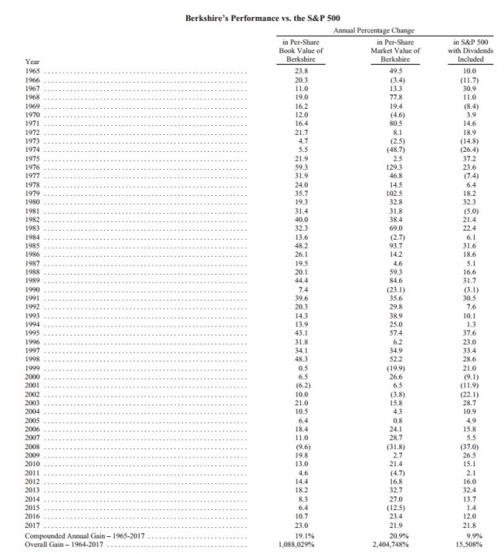
不知道书房里有没有英文比老唐还渣的朋友？
就当有吧，老唐还是做个注释：
①数据加括号代表负值；
②底部两行分别为年化回报和总回报；
③右边三列数据，分别为伯克希尔账面净资产年度增长率、伯克希尔公司股票价格年度涨跌幅、sp500指数年度回报（含分红）。
先看最后一列。
观察历年年报披露的该数据，我们能够发现，在长达53年时间里，直接投资大盘指数SP500，年化回报率就在9%~10%之间。虽然期间经历过多次股灾，多次大牛市，但指数长期回报率非常稳定，变化很小。这背后的原因，老唐在之前的《股市获利的逻辑和路径》等多篇文章里已经写过，不再赘述。这里只重复结论：
①股权长期投资收益率“一定”高于债券及其他类现金资产。
②普通投资者即便是看不懂任何企业，也可以从投资沪深300指数基金开始，立足先赢，而后再求大赢。
③除非指数回报率低于现金（即指数市盈率高于无风险回报率的倒数），否则持有现金及债类资产就是一种错误。
别小看9.9%的回报。假设你今年25岁，手头可投资资金量仅有5万元，如果在未来35年里，平均每个月你从工资奖金里省出3000元投入，到你60岁退休时，你投入的资金累计有131万。在年化9.9%的回报率下，60岁时财富值为1132万，增值超过1000万；而同样的投入，如果你购买的是收益率为4%的理财产品，60岁时财富值仅有291万元。
其次，我们看前面两列的年化数据。
过去53年，伯克希尔账面净资产年化增长率19.1%，股价年化增长20.9%。期间，股价有过一年翻倍的年份，也有过接近腰斩的年份，但长期回报率居然和公司账面净资产增长率差不多。
巴菲特多次强调过的：1965年的伯克希尔内在价值远低于报表净资产（主要是纺织设备及固定资产价值低于可变现值），而现在伯克希尔的内在价值远大于账面净资产”（主要原因是商誉、长期持股公司成本记账等原因）。如果考虑这一点，我们会发现，在合理假设下，股价涨幅和企业内在价值增长几乎完全一致。
在《巴菲特最糟糕的一次投资》一文里，老唐介绍过巴菲特介入伯克希尔时，伯克希尔账面净资产值是2214万美元。巴菲特在市值660万美元位置开始买进，并最终和当时公司老总洗玻璃达成协议，准备按照1290万美元市值价格卖给洗玻璃总。从这个行为我们可以推断，当时伯克希尔公司的内在价值应该略高于1290万（否则洗总不会买，而烟蒂股投资者的特点就是在股价接近内在价值时卖掉它）。
我们假设1290万成交价为内在价值的8折，即内在价值为1550万，约为账面净资产2214万的70%。
2017年的内在价值可以看作账面资产的1.5倍——虽然账面资产和内在价值的具体差距巴菲特没有明确说过，但巴菲特不仅正式披露过，也实施过“在股价低于账面净值120%时伯克希尔会实施股票回购”。
这至少说明账面净资产×120%的价格，相比伯克希尔的内在价值依然有折扣，所以才值得巴菲特出手回购。假设我们认为巴菲特的回购价是内在价值的8折，意味着“内在价值=回购价格/80%=（账面净资产×120%）/80%=账面净资产×150%”。
这样算来，1965年的0.7元，到2017年变成10880.29×1.5=16320.44元，53年获利23315倍，年化回报率20.89%，和股价过去53年波动几乎一模一样。这就是股价围绕内在价值波动，其长期投资价值来源于企业增长的最好例证。
然而，上述认知不是本文要说的重点，本文的重点想找出巴菲特在不同阶段的不同回报，并分析其原因，最终找到最值得我们学习的投资理念和方法。
让我们把注意力放在伯克希尔账面净资产值波动的那列数据上。
我们都知道，从投资主体的角度来划分，巴菲特的投资生涯可以分为两个阶段：一个是1957~1969年的合伙基金阶段，另一个是1965年至今的伯克希尔阶段，其中1965~1969年有重叠。如果从投资理念的角度划分，又可以1972年1月3日巴菲特收购喜诗糖果为界，划分为烟蒂投资为主阶段和以优质企业为主阶段。
在巴菲特烟蒂股为主的阶段，合伙基金1957~1969年化回报是29.58%（见《巴菲特从格雷厄姆体系分叉的心路历程》），伯克希尔1965~1971年回报分别为23.80%、20.30%、11.00%、19.00%、16.20%、12.00%、16.40%，从1元增值为2.98元，年化回报16.88%。
1972年1月3日，巴菲特支付2500万美元收购喜诗糖果，是巴菲特自己多次承认的“从烟蒂投资进化为优质企业投资的标志”。1972年至今，喜诗糖果给伯克希尔贡献了至少20亿以上的现金。这20亿以上的现金又因为同样的投资理念，购买更多优质企业的股权，产生蛋生鸡鸡生蛋的几何增长，其真实回报率已经大到无法计算。
如果以1972年为起点计算，我们会发现46年来，伯克希尔账面净值从2.98变成10880.29，年化回报19.52%。假如1972年之后，巴菲特的年化回报依然是1965~1971年烟蒂股为主阶段的16.88%，则2017年末终值仅为3892.83元，约为10880.29的36%。
不仅如此，实际上巴菲特1972年至今的投资，还能以2000年为界划分为两个阶段，第一阶段是1972~1999，第二阶段是2000年至今。
1972~1999的28年间，伯克希尔账面净值增长654倍，年化增长26.06%，公司股价年化收益率26.72%（1元变成757.45元），这是伯克希尔投资历史上最肥美的阶段。这期间，实际上伯克希尔还经历了两次系统性重创，正好居于一头一尾：1973~1974年美国股市大股灾；1998~1999年科网泡沫，伯克希尔远离科技股的理念，导致有史以来最差回报，巴菲特被“骂”到住院（见《压力》一文）。而且，1972~1999年28年无亏损记录，同时，伯克希尔投资史上共计13个年收益超过30%的年份，全部落在1972~1999年期间。
1965~1971年间最高年度收益23.8%，无亏损记录；2000~2017年最高年度收益23%，并产生伯克希尔仅有的两次亏损记录，分别为2001年-6.2%和2008年的-9.6%。2000年发生了什么，导致股神最近18年收益不佳（年化10.01%），老唐认为主要原因有两点。
其一是2000年之后，因为伯克希尔手头的钱实在太多，可选投资对象偏少，巴菲特开始以保守姿态将金钱配置在一些资本密集的低回报企业上。
其中最具代表性的投资就在约55亿美元投资中美洲能源、220亿美元收购伯灵顿北方铁路公司以及43亿投资卡夫食品等项目上。中美洲能源和北伯灵顿铁路，共同特色就是需要的资本投入很大，仅凭折旧根本无法支持资本支出，公司的利润需要继续做固定资产投资，甚至还需要持续融资再投入。同时，它们的定价和利润受到联邦政府和州政府的严格管制，政府通过价格管制，允许它适当获利，但不允许获取过高利润。
这类企业的利润，严重取决于监管机构的态度。比如对于提供电力和天然气的中美洲能源公司，就有一些州规定，如果公司利润超过12%，不仅不允许涨价，还要将超过部分反馈给消费者。至于涨价，那必须要证明公司的净利润率跌到某比例（比如9%）以下才行。
引用巴菲特自己的说法，购买这些公司，一方面是赌美国经济的继续上行，另一方面也是为了赢得美国政府和人民的信任。它展示了伯克希尔愿意承担更多社会责任，同时，也是对监管机构投出的信任票，相信监管机构会让伯克希尔获取合理的回报。
中美洲能源公司是伯克希尔董事会一名董事沃尔特·斯科特介绍的，巴菲特非常相信这个人。相信到什么程度呢？
截至2002年，伯克希尔公司董事会一共七名董事，巴菲特夫妻及长子占据三个席位，查理.芒格及他的律师事务所合伙人占据两个席位，伯克希尔创始人家族、巴菲特入主前的老董事长马尔科姆·菜丝占据一个席位。最后一个席位就是这人——美国第三级通讯股份公司（做光纤网络通信的上市公司，纽交所代码：LVLT）董事长沃尔特·斯科特。这份董事名单里，斯科特可以说是唯一一个“外人”，足见巴菲特对斯科特的信任程度。
「2003年纽交所强制规定上市公司独董必须占多数，伯克希尔才陆续引入比尔·盖茨（微软董事长，巴菲特密友），汤姆·墨菲（大都会公司董事长，巴菲特密友），唐纳德·基奥（可口可乐总裁，巴菲特对门邻居）等人做董事」。
巴菲特甚至还因为斯科特而做过一笔亲口承认超出能力圈的投资。
那是在纳斯达克网络股泡沫破灭的股灾期间，斯科特控股的第三级通讯公司股价从130美元跌至不到3美元，市值从高峰的440亿美元跌至不足10亿美元，濒临破产。而巴菲特却在2002年7月9日宣布投资1亿美元购买美国第三级通讯公司的长期债券和可转债。市场大为惊讶，巴菲特则很直白的承认：“有时候，你会在你的能力圈之外进行投资。第三级通讯公司就是我在能力圈之外的投资，我是把赌注压在人的身上,我觉得我非常了解这个人。”
说起来，伯灵顿北方铁路这家公司也和巴菲特有缘。格雷厄姆的《聪明投资者》书末附录里推荐了一家铁路公司，当时股价17美元，每股收益10美元。被推荐的这家公司叫北太平洋铁路公司，它就是如今的伯灵顿北方铁路公司的资产主体。
巴菲特读到《聪明投资者》的时候，这家公司市值4000万美元。到2010年，巴菲特花了220亿美元买下它。巴菲特也由此在2013年年报里说：
我不记得买《聪明的投资者》花了多少钱。不管是多少，它都证明了本的格言“价格是你付出的数字，价值是你收获的东西”。
在我所有的投资中，买这本书应该是回报率最高的一笔（我的两本结婚证除外）。
至于糟糕的卡夫食品案例，芒格在2009年威斯克金融公司（芒格任董事长的一家上市公司，由伯克希尔控股）年度股东大会上，则直接对股东承认：
由于我们的钱实在太多了，所以我们买了卡夫食品。我们现在只能接受较低的回报，这要比我们10年前的回报预期低得多。这是竞争越来越激烈的现实世界的一个自然而然的结果。
这种投资方式，显然不是我们需要学习的。以老唐的看法，在你我的资产达到11位数之前，这种技术只是屠龙术，学来也无处可用。这是一方面的原因，还有一个原因，老唐直接上《滚雪球》截图：
2000年2月，美国证券交易委员会拒绝了伯克希尔-哈撒韦提出的对其部分持有股份保密的要求。美国证券交易委员会权衡了稳定市场中投资者的各种利益和知情权，最后决定支持其享有知情权。在人们通过巴菲特的股票获利之前，巴菲特不能进行大量囤积，他只能像美国运通公司或可口可乐公司那样，聚集少量股票。尽管巴菲特一再坚持股份保密，美国证券交易委员会还是将其视为本杰明格雷厄姆式的人物，要其向全世界公开股票记录。从此，整体收购——巴菲特一直最喜欢的投资方式—成为伯克希尔-哈撒韦主要的投资方向。此后将大量资金投入股市运作将越来越难。媒体称巴菲特为“全球曾经最伟大的投资入”，令人痛心。
丧失对购买目标的保密特权，导致巴菲特无法持续以满意价格购买到足够多的目标股票。而高达数千亿美元的资产总值，导致小额投资根本没有意义。两种因素叠加之下，巴菲特只能转向要么整体收购目标公司（上市或非上市）；要么一次性买够目标公司股份，且目标公司必须是流通市值足够大、日成交足够活跃的股票（例如富国银行、美国银行、苹果公司、IBM等）；要么干脆将资金配置在一些回报虽然偏低，但可以容纳足够多资金的产业上。
这样的结果，就是回报率大幅下降。这就是老唐认为过去18年巴菲特低回报的原因。这一时期的投资风格，我们完全没有必要学习。那么，前面的三个阶段里，哪些又是可以学习的，哪些是需要摒弃的呢？
在书房之前的文章里描述过，巴菲特早期的投资风格，主要分为三种类型：低估、套利和控制。
低估类投资，施洛斯将其运用到极致：分散投资烟蒂股，待其上涨后卖出获利，重复。而巴菲特则全面学习了格雷厄姆手法，买进烟蒂股后如果不涨，就持续买到入主董事会甚至控股地位，最终推动公司价值实现，获利退出。
套利则是施洛斯和巴菲特共同拥有的手段，只是机会不确定，时有时无。
烟蒂类投资，从接触《聪明投资者》算起，到巴菲特将烟蒂股打包卖给施洛斯结束，期间除了地图公司、风车公司、美国运通和伯克希尔公司之外的其他项目，都算烟蒂。
桑伯恩地图公司、邓普斯特风车公司以及伯克希尔公司，则是低估不涨买成控股的代表案例。
「美国运通是优质企业思想的萌芽，可惜只持有两年左右就卖掉了，说明当时体系核心还是烟蒂。1991年，巴菲特才第二次将目光放在美国运通上，并作为优质企业买进，持有至今」
对于我们普通投资者而言，低估不涨就买成控股，在当前的资金量和市场信息环境下，已经几乎没有实现的可能。因此，如果想学习前期巴菲特高回报期的手法，学巴菲特不如学施洛斯。关于施洛斯的低估分散投资手法和技巧，老唐在《巴菲特配角演义之施洛斯传奇》里详细介绍过，有兴趣的朋友翻回去看。
于是，巴菲特投资生涯里，真正值得我们学习的，就剩下1972年~1999年阶段了。这期间，巴菲特所选择的投资对象，所依据的投资逻辑，以及相关案例都是值得我们深度研究的好榜样。
其中，既有因为商业模式注定赚钱的优秀公司，例如喜诗、可口可乐、吉列、华盛顿邮报、美国运通（二次介入时的运通）等（最近介入的苹果，可能也属于此类投资），也有因为管理人员能力超群而介入的，例如内布拉斯加家具公司、大都会公司、波仙珠宝等。
（对于巴菲特持续购买数十家保险公司，我偏向于将其看作是巴菲特“借钱”的手段，可不归入投资中）
最后总结，可靠的投资模式就三种：①烟蒂、②指数、③优质。
①烟蒂投资法，学习沃尔特·施洛斯，寻找市场低估投资对象，分散一篮子持有。无需能力圈，有耐心做excel表格就行，要点是淡定对待踩屎，淡定对待卖出大涨，淡定对待别人的股大涨。
不要说没有用武之地，前不久老唐还看见过统计，说截至2018年双11，沪深两市破净股有372只，这就是施洛斯功夫的地盘。当然，在牛市一段时间后，确实可能很长时间都找不到投资对象。且最终你必将在年龄很大，资金很多的时候，发现该方法真的没有用武之地了。也没啥啊，届时可以转指数投资。或者干脆等到方法无效后，就退出投资领域，转而去享受生活，也挺好。巴菲特在1984年《格雷厄姆和多德部落的超级投资者》演讲里提过里克·格林，就是这么一位主儿。
里克·格林，芒格的朋友，和巴菲特同龄。1965~1983年设立合伙基金，累计赚222倍，年化32.86%。然后离开投资界，忙着去全世界干自己想干的事儿，顺带换老婆、生宝宝（63岁还生了一个儿子）。芒格曾经感叹过：“与里克相比，我们（这些每天忙着赚钱的人）真的是疯了！”
②指数投资法，这个没有秘诀，一句话就可以概括，定时定额投资宽基指数。资产不过千万之前，投沪深300指数基金足够了（510300或510310），最多再记一句“沪深300市盈率高于无风险利率倒数阶段暂停投资”就可以了。
抱定一个目标，指数基金就是你的存钱罐，你的任务就是把消费剩余丢进去，十年检查一次足够。别糟蹋时间糟蹋金钱再去学这学那了，研究更多的行业指数，研究指数增强、网格加仓……，都不值得费神。
有那闲工夫，不如研究研究怎么把工作干的更好，让老板早点给你升职加薪，让猎头早点注意到你的飒爽英姿，或者哄哄老婆（老公）开心也比研究这些价值大。遇到大熊心理恐慌，或者大牛群情激动时，把老唐的《价值投资实战手册》翻出来，美美地回味一遍「指数基金包赚」的鸡汤，然后该干嘛干嘛！——广告，赤裸裸的广告
③剩下的就是对研究公司有兴趣的，一辈子能找到十来家优质公司就足够你成富翁了。这当中不仅有赚钱的乐趣，还能发现自己越来越懂商业，越来越能理解商业社会的运作规律，能够和不同行业从业者深入地聊下去。
更关键的是，一生学无止境，乐趣无穷，永远也不会觉得时间需要打发，永远都是充实满足的。这种模式的要点嘛，上篇文章已经说过，就六个字“别瞅傻子，瞅地”。这种模式的主要问题，是可能会将资金投资在自己以为懂了，实际却没懂的公司上。
解决方法也简单：适度分散，保持学习，绝不单压一只个股，绝不讳病忌医，stay foolish stay hungry！
散打巴菲特10——巴菲特芒格都承认失败的‘成功’案例
布法罗市(因为Buffalo指水牛，所以也有翻译为水牛城的），纽约州第二大城市，位于美国和加拿大交界处，著名尼亚加拉瀑布边上，距离加拿大重镇多伦多约90分钟车程。因为大瀑布下的建设大型水电站的便利，布法罗电价便宜，所以这里聚集了一大堆高耗能企业，以钢厂居多。
在上世纪70年代，当地有两家报纸：《布法罗晚报》和《布法罗快讯》——很多资料将后者翻译成《信使快报》、《信使快讯》，我喜欢《布法罗快讯》这个翻译。《布法罗快讯》由著名作家马克·吐温于1870年创立。对，就是那个写《百万英镑》、《汤姆·索亚历险记》等小说，曾因说出“有些议员是狗娘养的”而「道歉」，改口说“有些议员不是狗娘养的”妙语的马克·吐温。
马克·吐温早期曾经参与银矿股票投机，暴富过。暴富之后放弃新闻记者兼作家这份很有前途的职业，“退休”并过上了奢华的生活。按照他自己的描述：“我住在最好的酒店里，在最引人注目的地方展示我昂贵的衣服，经常出入歌剧院……我最终变成了一个举止轻浮的人”。不过，和几乎所有的投机遭遇一样，泡沫终有破裂时，马克·吐温赔的一塌糊涂，到了身无分文的地步。他后来回忆道：“我，一个兴高采烈的傻子，一直以来花钱如流水……现在我统计自己所有的债务，并还掉它们以后，我发现自己只剩下50美元。”
由于这段经历，马克·吐温后来总结了一个著名的经验，分享给炒股人士，他说：“十月是炒股最危险的月份，其它危险的月份有七月、一月、九月、四月、十一月、五月、三月、六月、十二月、八月和二月。”
不过，虽然教训深刻，投机带来的快感却和吸毒一样难以摆脱。后来，马克·吐温还是多次参与风险投资及投机活动，欠过很多债。这些债务，成为马克·吐温的创作动力，一部又一部的经典著作诞生了（炒股不行就写书致富，看样子老唐也有这个趋势）。所以，也幸亏他炒股破产，否则，世上只是多个举止轻浮的暴发户，却少了位嬉怒笑骂皆成文章的传世作家。
《布法罗晚报》和《布法罗快讯》自1914年起就达成一致，前者出周一到周六的晚报，后者出一周七天的早报——没有查到有资料说双方签订过相关合同，估计这个「一致」，应该表述为「默契」更为合适。
然而，伴随经济的发展，收入的提高，消闲时间的增加，周日报纸的发行量越来越大，广告商也更加侧重于投放周日广告。没有周日版的《布法罗晚报》陷入不利地位。再加上掌控报纸几十年的老东家，于1974年去世，于是家族后人准备卖掉报社。在1976年圣诞节前几天的一个Party上，一位报业经纪人代表陷入困境的布法罗晚报，开价4000万美元，想把报纸卖给华盛顿邮报。
凯瑟琳当时正因为华盛顿邮报强大的工会力量而头痛不已，看见工会力量更加强大的布法罗晚报，心悸不已，直接拒绝了。那段时间，正是巴菲特夫人和网球教练出轨，巴菲特没日没夜地泡在凯瑟琳家的时候（见散打巴菲特06和07）。当天也在这个Party上的巴菲特，知道这个消息后有点动心。此时，巴菲特手头已经有一家报纸：《奥马哈太阳报》——有些资料翻译为《太阳谷新闻》或《奥马哈太阳谷报》。巴菲特对报纸的兴趣，萌芽于青少年时期送报纸积累第一桶金的记忆，但真正在头脑中滋长，还是受卡罗尔·卢米斯的影响。
卡罗尔，《财富》杂志的撰稿人，就是之前老唐给大家推荐过的书籍《跳着踢踏舞去上班》的作者。她是巴菲特密友，是几十年来伯克希尔致股东信的御用编辑。卡罗尔的老公约翰·卢米斯是个股票经纪人，在上世纪六十年代去巴菲特办公室拉业务，先卡罗尔一步认识了巴菲特。但卡罗尔不是经过老公介绍，而是因为采访比尔·鲁安，经鲁安牵线认识的巴菲特。巴菲特和卡罗尔很谈得来，她对新闻的理解深深影响着巴菲特，俩人开始密集通信。很快，巴菲特就说“除了查理，卡罗尔迅速成为我最好的朋友”——查理指查理.芒格。
这份友谊一直持续到今天。我们现在看到的巴菲特致股东信，依然是由卡罗尔最终修改定稿的。
60年代后期，巴菲特对新闻的兴趣已经非常浓厚了，曾在1968年试图收购一份娱乐性报纸，没有成功。就在这时，很意外的，巴菲特夫人苏珊的一个朋友找上门来，说要将自己的报纸卖给巴菲特。这人叫斯坦·利普斯，比巴菲特大三岁，奥马哈本地人，和上次说过巴菲特董事会里的董事、第三极通讯公司董事长沃尔特·斯科特是一墙之隔的邻居（真邪门，奥马哈这个小地方咋这么多神人？）斯坦是《奥马哈太阳报》发行人及最大股东。这份报纸是斯坦从老岳父那儿继承来的。它不是当地主流报纸，主要刊登当地最大报纸《奥马哈先驱报》不登的警情通报、权贵丑闻、社区新闻、八卦花边之类的文章。
斯坦热爱爵士乐，由此和同样热爱爵士乐的巴菲特夫人苏珊相识，共同推动成立了奥马哈爵士乐团，俩人的关系后来发展到大概类似闺蜜那种类型（注意，斯坦是男的）。经苏珊介绍，斯坦认识了巴菲特。1968年，有条新公路规划要穿过《奥马哈太阳报》报社大楼，斯坦需要筹集一笔钱建设新大楼，就这样找到了对新闻业感兴趣的巴菲特。不知道俩人怎么谈的，反正1969年1月1日，斯坦将报纸以125万美元的价格卖给巴菲特，当时大概年利润是10万美元左右。收购后，依然由斯坦全权经营管理。125万投资，年利润约10万，回报率8%，非常一般。但鉴于巴菲特1969年已经找不到投资目标，账上闲钱很多，加上自己又喜欢新闻业，收购就这样发生了。并为此破例收了斯坦的钱，让他成为巴菲特合伙基金清算前的最后一个合伙人——还记得吗？巴菲特1969年5月宣布基金清盘。
斯坦在报业经营上很有能力，《奥马哈太阳报》经营情况相当不错，还曾经因为揭露儿童城丑闻获得了普利策奖。正是这个过程，让巴菲特对报纸的兴趣更加浓厚了。回过头说《布法罗晚报》。
1977年1月8日，巴菲特和芒格与晚报股东达成一致，以3250万美元的价格，收购了布法罗晚报——《滚雪球》说是3550万美元买的，此处采信年报数据。晚报1976年税前利润约170万美元。以巴菲特和芒格的习惯，这个相当于税前利润19倍的出价，是非常乐观了，估计也受了《奥马哈太阳报》良好业绩的影响。
市面上大部分资料有个以讹传讹的说法，说这笔投资花了巴菲特近半身家，是重注。错的！巴菲特当时个人身家的确只有约7000万美元，但是购买《布法罗晚报》并不是掏巴菲特个人腰包，而是通过伯克希尔持股65%的子公司蓝筹印花公司出资购买的，伯克希尔本身也不是巴菲特的全资子公司。经过两层架构的间接撬动，当然不能再以巴菲特个人身家做分母计算。
实际上，当时整个伯克希尔控制资产规模已经有5亿美元左右，主要包括国民赔偿保险、伊利诺斯国民银行、喜诗糖果、威斯克金融、蓝筹印花、多元零售、盖克保险以及持有的华盛顿邮报、大都会等公司的股票。对《布法罗晚报》的3250万美元投资，的确是截至当时巴菲特最大手笔的投资，但不能算成压上近半身家。
收购完成后，巴菲特不仅亲自出面和晚报新闻纸供应商砍价（年节约采购成本超过百万美元），还决定发行周日版，和《布法罗快讯》争夺周日市场。巴菲特的计划是连续5周免费赠送周日版给用户。5周促销期过后，定价30美分销售——布法罗快讯周日版价格是50美分。
就在巴菲特规划的周日版首发日的前半个月，《布法罗快讯》发动了一场声势浩大的公关战，每天在快讯头版刊登文章，将巴菲特塑造成一个入侵的冷血垄断者，通过抢夺他人的工作岗位为自己谋利，而快讯则是一个为保护自己工作岗位而奋战的小老百姓。
在一个以工人群体为主的钢铁城市里，这种角度引发了大量读者的共鸣。不仅如此，布法罗快讯直接向法庭起诉晚报，控告晚报实施掠夺性定价、不公平竞争，目的是迫使布法罗快讯破产，从而垄断市场。芒格从洛杉矶招来他的律师搭档们全面应战。很遗憾，对手抓住了巴菲特一个软肋。有一份旧《华尔街日报》，刊登过一篇文章，上面引用过巴菲特和芒格的共同好友戈特斯曼的一段话：“沃伦·巴菲特喜欢拥有一家具有垄断或市场主导地位的报纸，就像拥有一座不受约束的桥梁收费站一样，然后他可以随心所欲地抬高价格，想要多高就设定多高。”
巴菲特、芒格和戈特斯曼共同设立的多元零售公司，是伯克希尔体系的重要收购平台，巴菲特持股80%，芒格和戈特斯曼各持10%，由此足见戈特斯曼和巴芒二人的关系亲密程度。虽然巴菲特在法庭上努力辩解，但戈特斯曼这段话实在太过形象，在法庭和布法罗人民的脑海里活灵活现地勾勒出一副车匪路霸的恐怖形象。而且，很巧，巴菲特还真的拥有一个收费桥梁约1/4的股份。
经过一段艰苦的诉讼，最终法庭没有禁止晚报出周日版，但禁止晚报赠送免费报纸，禁止打折销售，对晚报周日版的广告版面面积也设置了限定条件。同时，不允许晚报对快讯发表诽谤性言论。更恼火的是，要求晚报用户每周都要填一份表格，明确表明自己需要续订《布法罗晚报》。
随后《布法罗快讯》在头版大肆报道了自己的胜利，快讯的员工也“热心地”承担着监督晚报是否落实法庭判决的工作。很快，他们就发现了部分用户没有填表格照样也能收到报纸，遂向法庭提交证据。法官认为布法罗晚报藐视法庭，官司持续……这种情况下，广告商纷纷倒向《布法罗快讯》，晚报周日版广告收入仅有快讯的1/4左右，晚报出现高达140万美元的巨额亏损。在巴菲特的投资历史中，从来没有以这么快的速度，亏损过这么多钱。亏损的压力，苏珊的出轨，法庭和舆论对巴菲特人品的质疑，多重压力之下，巴菲特濒临崩溃。
巴菲特官方传记《滚雪球》里这样描述（双引号内为《滚雪球》作者引用的巴菲特自述）：
巴菲特在彻夜难眠和泪流满面中思考着苏珊离去的变故……为了分散注意力，从个人痛苦中解脱出来，他像一个金甲虫一样围绕着卡罗尔、阿斯特丽德（老唐注：就是苏珊介绍给巴菲特的女招待）和凯瑟琳，在纽约、奥马哈和华盛顿之间飞来飞去。
1978年7月，“我们正在凯瑟琳家中打桥牌，法官的判决结果传来了。我把它给查理，让他读读。他说‘嘿，文笔不错啊’。我快要疯了，我才不管它文笔好不好，我要接受并忍受所有这些限制，根本没有心情去欣赏什么文笔。”
芒格和奥尔森计划上诉，而巴菲特不想再和法官斗争下去……巴菲特被击垮了，他根本不想再和法官对峙了，他宁愿让3550万美元打水漂。……巴菲特迫切希望和律师了结一切，不再宣誓作证、接受传讯以及跟法官斗法。
“我不想上诉，我只是感觉到这会是一场旷日持久的战斗，并且还会激怒法官。一旦激怒了他，他会强制我们执行禁令，我们的损失会更大，而《信使快报》就会立即发起猛烈的攻击，那样只会不断扩大它的影响力。我声称，我们不上诉，因为过个一年半载我们无论如何都会失败停刊的。而罗恩和查理告诉我，我错了。而我也确实错了。”
最终，芒格说服了巴菲特，开始上诉。
其实芒格这个时候也非常艰难，他刚刚经历了一场失败的白内障手术，导致左眼眼球被摘除，安装了一个玻璃义眼。而且，更悲惨的是，右眼也有失明危险。芒格告诉巴菲特自己不想活了。他十分害怕再经受一次这样的折磨，同时可能面临失明的威胁，他决定不再对右眼的白内障做切除手术，只采用保守治疗。芒格老先生就这样戴着一副厚厚的白内障专用眼镜，靠一只独眼至今度过了近40年。
在芒格和律师朋友的鼓励下，巴菲特寻求上诉的同时，恳请老朋友、《奥马哈太阳报》总裁斯坦到布法罗帮忙。正好期间斯坦的婚姻也出了问题（和苏珊同病相怜，经常一起坐在公园的长凳子上互吐苦水），准备自己搬去旧金山居住。巴菲特请求斯坦到布法罗工作，斯坦不喜欢布法罗这个城市的气候，不想去，巴菲特转而请求他每个月过去坐镇一周。最终，斯坦无法硬起心肠让巴菲特失望，勉为其难答应了。
即便是斯坦到位，随后的几年，两家报纸也是比赛割肉，共同赔本经营，就看谁能坚持到对方死掉。下表是老唐从伯克希尔年报里统计的布法罗晚报公司年度税前利润，单位万美元。
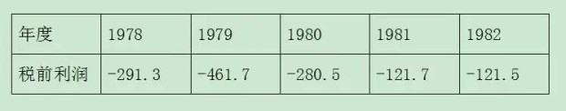
1979年4月，查理和他的律师朋友们取得重大胜利，美国上诉法庭推翻早前对晚报的相关禁令。1980年，斯坦搬去布法罗，全职工作。虽然期间又经历了几次工会罢工，导致《布法罗晚报》几乎倒闭关门，但凭借巴菲特置之于死地而后生的谈判能力，加上斯坦的管理和创意，尤其是斯坦创办了随报纸附送的《住宅快讯》，吸引了当地几乎所有地产商的广告，晚报逐渐出现转机，亏损额显著下降。
不过，即便此时，巴菲特和芒格也对这次收购持深深的悲观看法。芒格在1981年蓝筹印花公司财报的董事长致股东部分写到：
如果没有布法罗晚报和它现在所背负的赤字，我们现在应该有7000万美元的其他资产，每年的利润超过1000万美元。
不管未来在布法罗发生什么事情，我们几乎可以百分之百的肯定，要是我们没有进行这次收购，我们的经济情况会好很多。
然而，后来发生的事实证明，收购或许是个错误，但芒格的“百分之一百肯定”是个更大的错误。
1982年，《布法罗快讯》撑不住了，宣布停刊。《布法罗晚报》更名为《布法罗新闻》，一周七天同时发行日报和晚报。就此，进入印钞阶段。
1983年盈利额1935万美元，一举将历年亏损全部赚回来。加上1988年美国和加拿大签署自由贸易协定，边境城市布法罗的经济活跃，《布法罗新闻》开始日进斗金。下表是1982年之后历年税前利润，单位万美元。
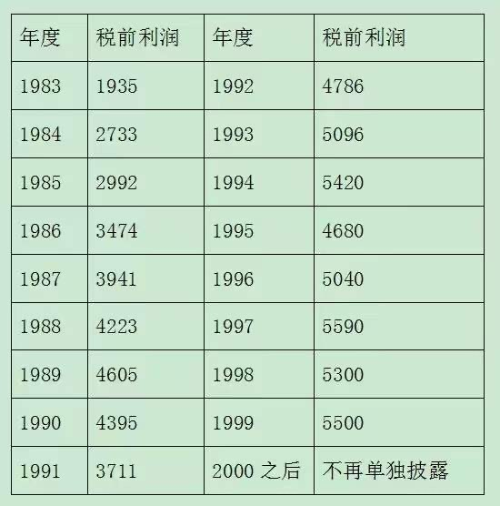
备注：2000年之后，由于伯克希尔规模日益庞大，布法罗晚报的盈利水平归入“other”，不再单独披露。
1983年财报，巴菲特开始将布法罗晚报单列阐述。1984年利润激增的同时，巴菲特在财报里“自信地”阐述了他对报纸的理解，他写到：
一份垄断的报纸带来的经济效益非常之好，简直就是商界中人梦寐以求的。
在一般行业，人们相信良好盈利来自于完美的产品，可是好的理论在不好的事实面前不起作用。
当第一流的报纸盈利丰厚时，第三流的报纸盈利同样的好，甚至还要超过第一流的报纸，只要报纸在他们的区域处在垄断地位。
一旦报纸处于垄断地位，那么就是报纸本身，而不是市场来决定报纸的好坏。无论好与坏，它都将继续盈利。
1985年，巴菲特在财报里将布法罗晚报和B夫人家具商场、喜诗糖果一起并列为伯克希尔三大主要事业；
1986年，适逢美国税改，企业所得税从先前的46%降低为34%，布法罗晚报净利润激增，巴菲特在1986年的财报里写到“即使有人出再高的价格，我也不会卖出布法罗晚报和喜诗糖果”；
1987年，巴菲特首次将包括布法罗晚报在内的七笔收购命名为“伯克希尔的七圣徒”。巴菲特对报纸的这种乐观看法，一直持续到互联网普及之后。1999年9月，布法罗晚报开始设立网站，发行网络版。即便考虑到网络冲击，报纸的生存环境发生了重大改变，后来巴菲特依然陆陆续续买下一些地方小报，并获得不错的收益。布法罗晚报大量盈利的同时，由于自身所需投资极少，因而给伯克希尔贡献了大量自由现金，供巴菲特去收购其他优质公司。譬如1999年，税前利润5500万，但布法罗晚报公司净资产仅约3000万美元，净资产收益率（Roe）高到变态。
从这个案例里，我们可以看到，巴菲特也不是神，不要将他的所有行为奉为金科玉律，进行美化和吹捧。其实有些成功里面确实有很大运气成分，比如本例，这没有什么不好意思的。正如也曾有人鄙视老唐说，不就是运气好买了个茅台嘛。老唐笑笑说，运气好也是一种竞争力。运气更喜欢光临有准备的心灵。有知识储备，才看得见机会，否则即便运气从脑后刮过，你也只能感受到一阵阴风。
当时若不是芒格鼓励，真按照巴菲特的想法放弃上诉，投降认输。总投入约4000万（投资3250万，1978和1979年又亏损700多万），就算变卖报社能收回来2000万（这可能已经是极度乐观的数字了），净损失的2000万美元。按照巴菲特历史年化20%左右的水平考虑，至今39年，伯克希尔净资产应该少约250亿美元。股神巴菲特尚且如此，我们普通投资者更加没有必要强求每次都对。为什么我们的股票投资，至少要求有两倍的无风险收益率水平才值得下注，那就是我们为承担风险索要的对价。
投资者要关注的是万9999的概率，同时做好接受万1来临所造成损失的心理和财力准备。永远在已有的信息和思考下做出决策，对于无法预测的风险，坦然承受，只要成功的超额收益，能够弥补失败的潜在损失就好。记得老唐曾在某篇文章下面给谁回复一句话，大意说：赌场老板从来不是靠把把通杀来获利的，而是靠长期站在52%vs48%胜率的52那面成为赢家的。说的就是这个意思。
万无一失的投资，只配获得不足4%的收益（这就是为什么它叫做无风险收益率的原因），倒是没有回撤，没有波动，但也没有意义。实际上，在市场待久了就会发现，越是事后看优秀的投资，当时都是恐怖的、危险的、可怕的、充满负面信息的。坚持在符合逻辑的投资体系下重复行动，思考和判断自己的决策过程是否步步都有依据，而不是去担心结果会对还是会错。做就是了，结果交给时间。纠结于绝对不错，是一种病，会导致投资动作走形的心病。结果，只是做正确事情的附带回报；财富，也只是思考的副产品。
聊聊投资收益率背后的逻辑
对于大部分人而言，内心真正关注的问题是“我今年赚了或亏了多少钱？”这种事儿，就别搞那么复杂，直接用年底市值减去总投入拉倒，别去较真什么“率”！
所谓投资收益率，只针对有长期观察自己或他人投资能力需求的人，它主要解决的是期间资金进出带来的收益率扭曲问题。老唐前面说的简单方法，就是当有资金进出时，用新增资金/（1+实时收益率），然后将结果添加到期初资金上就可以了。任何时候想知道收益率，用“实时市值/修改过的期初资金值-1”，就可口算出来。最多动用到普通计算器，无需excel或其他什么高大上工具，胜在方便。这个方法的实质，和基金利用份额计算收益率是一样的。
然而有不少朋友提出质疑。我选一份比较有代表性的，拷贝如下：
假设元旦那天总市值为1，年中某日市值为10时（获利1000%），新增资金10。此时，将新增资金量记录为10/1000%=1，期初基准调整为1+1=2。
假设市值10时增加资金10之后，总市值又下跌到2，收益率为（2-2）/2=0%。
然而这个过程实际却总亏损9，与计算收益率的0%明显相悖。这个方法计算的收益率貌似失真了。求唐兄解释。
老唐的回复：
你算的没错，你确实在年度收益率为0%的情况下亏损了9，这也是很多散户在盈利基金里亏钱的路径。
你可以将你看做一个基金经理，年初老客户全年收益率为0，年中高点加仓新客户收益率-90%，计算你全年投资能力应该取哪个值？同样，你也可以模拟先跌、加资金、再涨的情况，就更容易理解了。
其实核心就一点，不要把观察全年投资水平的投资收益率，和因为期间择时导致的盈亏金额两件事搅在一起就行了。
我模拟一个比较吻合2018年市场波动的状态来说明：假如元旦资金为1000万，期间一次性增加投入250万。假设目前账户市值为1060万，准确亏损金额为1250-1060=190万，普通投资者一般算作-190/1250=-15.2%。
按照老唐说的方法，我们模拟250万分别在期初资金收益率为10%，0%，-10%，-20%时入市，就会发现投资收益率会变，具体如下表：
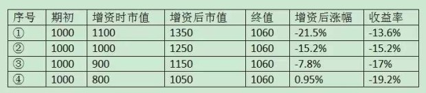
①1060/（1000+250/1.1）-1=-13.6%；
②1060/（1000+250/1.0）-1=-15.2%；
③1060/（1000+250/0.9）-1=-17%；
③1060/（1000+250/0.8）-1=-19.2%。
四种情况下，总计亏损额190万里，应该分摊给250万新增资金承担的部分分别是：
①-21.5%×250=-53.75万；
②-15.2%×250=-38万；
③-7.8%×250=-19.5万；
④0.95%×250=2.38万。
因此，如果没有中间250万追加，则期初1000万的亏损分别是：
①190-53.75=136.25，-13.6%；
②190-38=152，-15.2%；
③190-19.5=170.5，-17%；
④190+2.38=192.38，-19.2%。
这就是表格中投资收益率的来源及其背后的原理。虽然追加投入额相同，最终亏损总额也相同，但因为追加位置不同，追加后市场走势不同，因而对全年收益率的影响也不同。
计算投资收益率的目的，就是想知道去掉资金变动影响后的收益，它并不和盈亏总额直接挂钩——这是会导致大部分朋友糊涂的地方。而且，你会发现一个和直觉相反的结论：同样的总投入，同样的终值，加仓位置越低，这种方法计算出来的投资收益率越差。其原因是加仓位置越低，终值里就有更多资金是由后期投入及其盈亏。若终值相同，实际上意味着期初资金的收益率越低。这才是有观察价值的合理计算方法。
拿我自己来说，今年年内增加的资金，主要来自年中卖出一套叠拼，于六七八月分三次收到款项（首付，过户，按揭放款），增持位置主要在收益率为5%至-10%之间，后期另有少量资金大约加在-15%位置附近。「叠拼，成都本地叫法，指一跃二，前后带花园，但有地无天，头上有另一家人的房子」目前持仓茅台37%，腾讯29%，分众13%，洋河8%，海康7%，古井B5%，年内收益-15%。但如果直接用“实际亏损金额/（年初数+增加额）”，结果大约落在-12%至-13%之间——均不计新股收益。
不知道这次还有没有仍然困惑的？不管有没有，到此打住。实在看不懂的，就放过自己吧。距离年底还有10个交易日，年内翻红的几率越来越小，看样子今年要以负收益告终了？
去掉你的成本心魔
很多朋友心中都有个成本心魔，最常见的反应是：老唐，你分众成本多少，老唐你腾讯成本多少，老唐你海康成本多少……今天还有问“老唐，巴菲特的苹果是不是套的死死的？”——我还真不知道怎么回答这问题。
这些朋友，你要说他们关心的是买入成本吧，其实还很少有人关心老唐分众第一笔买入是10.38元，目前接近腰斩。这些朋友似乎真正好奇和关心的问题可能是：“经过你不断低位买入，最终摊低后的成本是多少？”
我不是说这些朋友有恶意，我也不觉着问我套住了多少就是恶意。我去年到今年新覆盖的三只股票，目前都是“套住”的。对我而言，没觉着这有什么不好意思的。老唐不装股神，成为所谓大V也是大家逼的，不是我所欲。老唐一贯认为自己就是闲散投资者一枚。至于看客认为水平高也罢，低也罢，对我毫无影响。
我左右都是一套太祖长拳到底，赢亏都是它带来的。收益高或者低，都只是一时的波浪，不影响前进的方向。正所谓“心中有了估值锚，红也逍遥，绿也逍遥，耐心等待创新高”。趁现在都套住的时候，倒是个谈成本心魔的好时机，至少不会被说“老唐站着说话不腰疼”，“老唐你没被套过，你不懂”……对不？为了坦率说清楚成本心魔问题，避免部分朋友认为老唐是回避问题、顾左右而言其它，我先按照通常的理解模式，交待自己的“成本”。
分众最低买入价6.18，最高买入价10.38，摊低后的买入成本约8.1；
腾讯最低买入价197.3，最高买入价423，摊低（摊高？）后的买入成本约338；
海康最低买入价约23，最高买入价好像是38，摊低（摊高？）后的买入成本约30元。
有公开披露的过去五年里，曾经非常少量或短暂持有过的股票，例如双汇、信立泰、泸州老窖、粤高速B、张裕B、长安B等，谈赚赔意义不大。这几只里，好像张裕B是微亏卖掉，其它都是小赚离场，总体对收益的影响几乎可以忽略。
除开腾讯、分众、海康以及上面这些微量持仓，老唐过去五年里拿过的股票实际上就三类：白酒、银行、水电。白酒至今还在，茅台过去五年赚了5倍多，洋河目前赚了不到一倍，古井B买入一年多，基本持平，赚个汇率；银行已清空，大约获利两倍左右离开的；水电白忙一场，坐了电梯，上上下下晃悠接近5年，写过文章一大堆，然而并没有什么用，最终认错离场，大致也就是个银行理财收益。
茅台之外的所有个股承担了拖后腿的重任，所以五年总收益也就三倍。这正应了芒格那话，如果去掉我们最优秀的几笔投资，我们的收益将非常平庸（大意）。老唐也是如此，正如某些朋友猜测的一样，如果删掉茅台，基本上就是个非常平庸的组合——至少截至今天是这样的。
交待完毕，证明老唐不是为了回避话题，然后咱们说心魔问题。
首先应该知道，股市并不认识你我。它并不知道，也并不在乎你究竟是10元买的，还是5元买的。无论你是5元买，还是10元买的，均不能导致股票未来涨速快或慢一点，涨幅高或低一点。这点没有争议吧？
其次，你10元买入1万股分众，股价跌到8元你加仓两万股，然后股价再跌到6元，你的亏损是扩大了还是缩小了？毫无疑问，不加仓亏4万，加仓亏8万。对不？
有很大一部分朋友8元加仓的原因，是因为他们认为，通过8元加仓2万股，成本摊低到8.67元，只要股市反弹一点点，就解套了。而如果不加的话，要涨很多才解套。所以，加仓能让解套更快一点。然而，你我来到股市，是为了解套的吗？显然不是，你是为赚钱而来。只是当你买入的股票下跌后，你忘记初心，转而降低标准，寻求解套去了。
可是，即便涨到8.7，也明明是8元买入的2万股赚了14000元，10元买入的1万股，亏着13000元啊！也就是说，你第二次投入16万赚了14000元，实现了你的“解套”大计。那么，为什么你一定要在分众上面赚回这14000元呢，如果在其他股票或股市以外赚到这14000元，难道是假钞吗？不是，无论你在哪里赚到钱，都是由央行担保的人民币，没有高低贵贱差别。
因此，理智的行动是：当我有16万元新钱的时候，我要寻找我能理解的投资对象中，最有把握、最看好的那一个，以寻求更确定或更多地获取回报。此时分众只是备选可投对象中普通的一员。如果你要买入分众，应该将你10元时买入分众的所有原因拿出来核对一遍，看有没有发生变化？如果期间有变化，这些变化有没有导致公司价值降低超过20%？
事实上，我个人觉着，有新资金的时候，对于套住的股票，应该特意给一点负面评价、扣点评分才对，而不是优先。为何这么说呢？因为我们10元买入后跌到8元，背后可能有两种原因：一是市场无厘头的波动，二是自己可能看漏了什么。因此，除非你非常确定下跌的唯一原因就是市场无厘头波动，否则就应该为这个“有可能是自己看漏了什么”的因素，额外多加一份小心。而不是相反，将它放在优先增持地位。
更严重的是，一旦你以摊薄成本寻求解套的思想考虑问题，有新钱的时候，其他机会你会视而不见，甚至风险也会被你忽视。你会忘记新钱和旧钱明明是两笔不相关的钱，新钱入市也是需要评估性价比和风险的。你可能莫名其妙地以10元时做过的评估，来决定自己现在的买入，从而误导自己进入有可能已经发生变化的坑里。
这还不是最严重的，最严重的是你心中老想着解套，想的久了，就成了执念。真等解套那天来临，你或许真的就跑掉了——别不信，市场这样的人太多，套住好几年，咬牙坚持。解套赚一毛，撒腿就跑。这种人怎么可能赚到钱呢？“股”生基本就徘徊在解套和入套之间。
推到尽想，我认为这种摊薄成本寻求解套的内心，其实是急迫地向自己或他人证明“我没错！”，是一种极度自卑、迫切需要获取外来肯定的心理疾病。对这些朋友的内心来说，赚一分钱和亏一分钱，是有天壤之别的。为了实现赚1分的目的，哪怕冒着亏5元的风险也在所不惜。至于赚10块和赚8块的区别，反而没啥感觉。
这种完全不考虑投入产出比的思考逻辑，又怎么可能赚到钱呢？
类似的一心追求“我没错”的心理疾病还有很多，比较常见的有：
1.哪里跌倒就要在哪里爬起来，无论个股有没有前途，只要是我在它身上亏过钱的，就一定要在它身上赚回来；
2.对持仓股进行高抛低吸，遇到踩对的交易就赶紧落袋为安，如果错了就继续扛着。10元买进，8元加仓，涨到8.1元，自我欺骗卖出了8元买入的那笔，获利0.1元，浮亏1.9元。坚决不承认是亏损1.9元，浮盈0.1元；
3.当股价下跌到自己预想的低位之外，导致资金已经使用完毕时，就融资加杠杆，总之，一定要和市场斗，不能认输；
4.讨厌一切看空的分析，认为这些人是黑嘴，他们的乱喷会导致自己本来的对，变成错；
5.寻求抄某人的底，以获得我比某人聪明的良好感觉；
6.不确认绝对底部，坚决不买入，不能容忍任何浮亏发生；
7.套牢5元10元都不怕，但对浮盈减少会非常紧张，尤其是浮盈即将归零的时候，心跳严重加速；
……
仔细想想自己有没有这些心魔。
我个人建议大家可以选择以下任何一种成本观：
①所有持股成本都是买入后经历过的最高价×103%；
②所有持股成本都是实时市价；
③所有持股成本都是0。
忘掉那些“我没错”，你没有必要向任何人辩白你的投资对错。辩白也没有用，真正能为你的能力背书的，只有你的长期回报率。三年五年稳定翻上一倍，账户市值就足以让你自信。这种自信，发自内心，不用侧漏，也会被人感知到的。这是不是说浮亏后就不能加仓呢？当然不是。老唐不也一路增加分众持仓吗？重要的是，你要尽量保证你的买卖决策是独立作出的，不受已有持仓获利或者亏损的影响。
时间越短，痛苦越大、快感越小
以前的文章里，老唐多次谈到格雷厄姆有个经验「股票的买点为收益率高于无风险收益率的两倍」，同样，巴菲特也延续了这个经验，解释过「如果国债收益率为2%，那么收益率低于4%的企业我们是不会投的」。
这句话的意思应该非常清晰，不需要解释。不过，担心部分朋友逻辑不过关，还是多叮咛一句：投资领域里，不存在“只要……就……”的圣杯，千万不要将这句话误解为「“只要”收益率高于无风险收益率的两倍，“就”可以买。」，它应该理解为一种排除规则，即「当收益率低于无风险收益率的两倍时，不值得买」。
同样，老唐自己也多次阐述过，投资有一个重要原则：市场先生的出价只可利用，不可预测。我们需要坚持「必须有明显的便宜占才与市场先生发生交易」的原则。
这里多次提到一个数据：两倍以上。这个两倍以上到底是一种经验的归纳，还是有科学或者逻辑的支持呢？从格雷厄姆本人的阐述来看，是一种经验的归纳，是对历史的统计。巴菲特也只是继承和延续了老师的经验。然而，很巧，这事儿还真有人做过实证研究，而且实证结果和格雷厄姆的经验一致。不仅如此，研究者还借此获得了2002年的诺贝尔经济学奖，此人就是美国普林斯顿大学的丹尼尔·卡尼曼教授。
卡尼曼教授其实不是一位经济学家，而是一位心理学家，在大学也是教心理学的。心理学研究的是人类的大脑如何工作。卡尼曼教授获得诺贝尔经济学奖的原因，是他将心理学的研究融入经济学，从而解释了人类在不确定条件下如何作出判断。
1979年，卡尼曼教授发表了一篇论文，题目叫《预期理论：风险条件下的决策分析》，该文后来成为经济学权威杂志《计量经济学》上引用率最高的文章。论文内容繁琐，数据和实验也很多，老唐没读过，估计也读不懂，咱们直接跳过去说结论。结论就是卡尼曼教授及其伙伴用大量的实验和数据，证明了人类的大脑有一种损失厌恶的特性。简单的说，就是挣一块钱带来的快乐，并不能抵消损失一块钱的痛苦。他们的研究结论是，挣1.5~2.5元的快乐才足以抵消亏损1元的痛苦，这种心理特征叫做“损失趋避”。
正因为此，在股票收益率为债券收益率1.5~2.5倍的时候，在普通市场参与者的大脑中，它们才是等价的，才是可以互相交换的。理性的投资者则正好利用这一点，在对股票做保守估计下的收益率也能超过债券收益率两倍之上时，完成对方眼中的等价交换，从而获得实际的金钱收益。顺手荐个书：丹尼尔·卡尼曼写过一本很有名的书籍，叫《思考，快与慢》，该书谈到人类大脑思考有两套系统。大致和霍华德·马克斯的《投资最重要的事》一书阐述的第二层思维很相像，感兴趣的朋友可以薅一本。
这个现象，其实另一位诺奖得主，名气更大的保罗.萨缪尔森很早就注意到了。只不过萨缪尔森只刨了一个坑，深挖工作由另一位后生完成，该名后生最终还因此获得2017年的诺贝尔经济学奖，他是芝加哥大学布斯商学院教授理查德·泰勒。保罗·萨缪尔森是史上第一位获得诺贝尔经济学奖的美国人，1970年得奖的。
萨缪尔森的大名，但凡接触过经济学的应该都是如雷贯耳，号称经济学最后一个通才，凯恩斯主义之集大成者他1948年发表的《经济学》，是全世界最畅销的经济学教科书，翻译成几十种语言，在全球销售上千万册。估摸着书房里有不少朋友读大学的时候，就读过萨缪尔森的教材——老唐没读过，多年前自己啃经济学的时候，啃的是曼昆《经济学原理》。
萨缪尔森这人也好玩，虽然本人讲授的是有效市场理论，但自己的钱却在巴菲特入主伯克希尔不久后就买成伯克希尔的股票，一直持有到2009年去世，而且据说就单持这一只股票。
查理·芒格曾毫无客气地吐槽萨缪尔森：
萨缪尔森的教科书里写的是有效市场理论。说股票的价值就是它的交易价格，没有人能打败股市，对所有号称可以打败股市的投资专家都持怀疑态度，balabala，自己却早早地把钱交给巴菲特。通过成为伯克希尔的股东，萨缪尔森对冲了他的有效市场理论，顺便还发了大财（大意）
芒格的意思是，如果巴菲特成功，萨缪尔森发大财；如果巴菲特失败，萨缪尔森可以宣扬其有效市场理论得到有力的证明。
萨缪尔森的有效市场理论，最终由芝加哥大学商学院尤金·法码教授发扬光大，并因此而获得2013年的诺贝尔经济学奖——Cow，本文诺奖满天飞，好像拿个诺奖跟吃个荷包蛋似的，老唐宣布，绝对不是故意的。
虽然该理论被巴菲特鄙视为「如果市场总是有效的，我只能沿街乞讨」，也被索罗斯嘲笑过「现行的有效市场假说理论——所谓的理性选择理论实际上已经破产」，但这丝毫不妨碍该理论成为现代投资组合理论的基石，尤金·法码也因此被称为“现代金融之父”。
回头说让理查德·泰勒教授获诺奖的坑。萨缪尔森挖的是一个什么坑呢？ 萨缪尔森说，1963年，他曾询问一位同事：“现在有一个50%的机会赢200元，有50%的机会输100元的赌局，你是否愿意参与？”同事犹豫了一阵，说如果可以玩100次，那就愿意赌。五五开的概率，赢就赢200，输就输100，很明显是个占便宜的赌局，为什么同事还要犹豫？为什么可以玩100次，同事就愿意玩。1次和100次之间有什么区别？
泰勒及其团队顺着卡尼曼的研究结论和萨缪尔森坑继续深挖。依然是实验和数据跳过，咱们直接说结论：泰勒教授发现人类大脑不仅将赚2元等价于亏1元，而且面对结果的时间越短，痛苦成分越大。
在萨缪尔森坑里，单次游戏一拍两散立刻现出结果，而100次游戏，结果需要较长时间才能知道。因此前者的痛苦程度（若有）远大于后者。最终，泰勒教授团队推导出一个投资领域的结论（别问我推导过程，老唐没读过原论文，估计也读不懂）：投资者持有一项资产的时间越长，同样亏损额带来的痛苦度越小，损失趋避对投资决策的干扰度越小。前提是不要用每天的波动去衡量回报。
换句话说，导致股票收益率高于债券收益率的原因有两个：一个是损失趋避，一个是频繁查看结果。借用近视这个医学名词，泰勒教授创造了一个新的心理学名词：“短视性损失趋避”。短视性损失趋避就是市场先生之所以乱出价的原因，它也是理性投资者获取市场博弈收益的来源——不仅包括价值投资者，也包括其他克服了“短视性损失趋避”的赢家。
简单的说，就是因为损失趋避心理的干扰，以及不断用最近的市价波动来衡量回报（短视性），市场先生愿意在「①确定赢1元，②80%可能性赢2.5元，20%可能性一无所获」两个选项中选①。而理性投资者通过克服损失趋避心理，克服使用短期波动衡量回报的习惯，干掉短视性损失趋避，站在市场先生对面去选择②，从而获得博弈收益。
那么，至少要以多长时间的结果来衡量，投资者才可以规避短视性损失趋避，从而理性地衡量盈利和亏损呢？ 泰勒及其团队测试了回报、标准差以及股票在1小时、1天、1年、10年和100年时间里获得正回报的可能性，最终他们得到一个效用函数：效用=股价上升的可能性—2×股价下跌的可能性。股票历史回报结果的研究显示，持有股票1年以上，其效用函数才为正值。
注意：效用函数为正值，不是说你是盈利的。它的意思是说，持有期不足1年，赚2元的快乐抵消不了亏损1元的痛苦。它代表的含义是你衡量投资回报结果的期限越长，越能够避免短视性损失趋避心理造成干扰。
理解了这个，你就理解了各大论坛上为何有那么多因为股价的下跌，或者只是因为涨的不如其他股票而骂娘、而痛苦、而愤怒的各色人等，因为按照上述研究结果，衡量投资胜败的时间越短，同样亏损额带来的痛苦程度越大，同样盈利额带来的快感越小。
老唐由此联想到：由于科技的发展，人们查看股价的便利度越来越高，这个“短视”已经从过去的以天为单位，缩短为现在的以小时甚至分、秒为单位，因此，我们实际上还可以推导出一个无法验证的结论：今天的炒股人士比十年前或者几十年前的炒股者更痛苦。
至于持有股票时间长短和获利（注意，这个获利说的是客观的金钱数字，前面的效用说的是感受）之间的关系，杰里米.J.西格尔教授在其经典著作《股市长线法宝》里分享过他的研究成果：
经过对1871年到2012年超过140年的时间跨度里股市数据的统计研究表明，如果以1年为投资周期，股票投资回报率在66.9%的时间里优于短期国债，在61.3%的时间里优于长期国债。
伴随着投资时间的加长，这个比例越来越大，数据如下表：
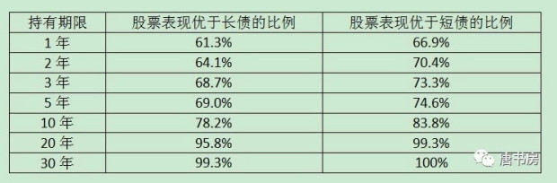
综合上述二者结论，我们可以这么说，以越长的时间跨度去衡量你的投资结果，你不仅获利的概率更高，而且同样的获利额带来的快感也越强。这才叫一举两得、一箭双雕、一石二鸟，某人为何跳着踢踏舞上班，书房气氛为何这么欢乐，大概也可以从这里得到解释吧。哈哈
我对行为金融学领域一直不太感冒。这套短视性损失趋避理论，咱们权且一听，姑且一乐，顶着诺奖的帽子，总还是有些道理吧！不管是否认同这套理论，但它也是鼓励我们以更长的时间跨度考虑投资，至少可以让我们更少考虑市场情绪（鬼晓得一年后市场先生究竟是激动呢，还是沮丧呢），达到少瞅傻子的目的，也算是有百利而无一害。你说对不？
股市垃圾十之八九，多看一二
今年，除开年第一个交易日5.01元买了9万元的分众传媒以外，没有其他交易。两周半时间，市值不声不响地居然涨了近12%。去年全年的“损失”，悄咪咪爬回来一多半啦！而此时上证指数才2600点，沪深300指数的市盈率才11倍，仍然属于偏低估的安全区域里。展望未来……甚至，连老唐认错出局的国投电力，也有书房朋友发来消息和留言，不知不觉8.4啦，比我的出局价高出约20%了。
由此想到，半年多没去混的某社区里，估计最近骂老唐的声音应该大大减小了！市场大部分参与者的口腔与大脑，基本是被股价操纵的，因为他们没有能力和耐心去思考企业价值和投资逻辑。最简单最过瘾的方法，就是涨了捧，跌了骂！
这类行为，中外都一样。不要以为类似巴菲特这种神级人物，就是饱受尊敬、不被攻击的。老唐之前的文章《压力》里，曾写过巴菲特在1998年被各类报刊嘲弄的盛况。当一个人用股价而不是企业经营情况来评判投资决策时候，任何分享者都无法躲避被骂的命运，因为道理非常简单，没有人能永远猜对股价的波动。这个时候，挨骂的人不一定是错的（也不一定是对的），但骂人的人却一定是错的。因为他/她掌握着一把错误的尺子，跟随着错误的导航仪，可以肯定的说“或迟或早会掉进市场某个毁灭性的坑里”。
有时候，看到这种拿着错误标尺的人，难免生恻隐之心，多嘴去劝几句。直到某次我劝解某人，某人却发帖说要砍我（还是杀我，或是约架？忘记了），后来就尽量戒了这种嗜好。也正因为此，我个人觉着，自己分享一点知识，解剖几家公司，只能算雕虫小技。如果书房多少还算有点价值，我觉着最大的价值是我不断强化以及身体力行的“日拱一卒”和“多看一二”。
“日拱一卒，不期而至”，让我们注意自身能力的不断提高，让我们从长期的视角看待投资甚至看待人生，让我们知道复利的威力，让我们知道“慢慢来，反而比较快”。树立这几种认知，在老唐看来，比踩中十倍股重要多了！“多看一二”，完整表达应该是“人生不如意事，十之八九，多看一二”。这个观念，如果没有看过《散打投资4》的人，可能不一定能深刻理解。
多看一二，代表着一种看问题的视角，一种乐观的人生态度，一种轻视困难，寻找解决方法的思考方式。每个人的生活，都难免有些灰暗面，你如此，我如此，即便是王首富，恐怕也是如此，否则不至于把自己辛辛苦苦收下的大片土地，拱手让与他人。但人和人的区别恰恰在于，你是盯着那不如意的“十之八九”，还是更开心地看到了另外的“一二”？这个选择，决定你每日里是快乐的、充满希望的？还是悲哀的、黯淡无光的？
你自己眼中看到的是“一二”，你分享的是“一二”，身边的人从你身上感受到的是希望，是快乐，是正能量，别人自然就更愿意向你靠拢，你也就更能得到别人的尊重。你自己眼中看到的是“八九”，你分享的是“八九”，你自然就是拿别人当垃圾桶，你就是那个四处丢弃垃圾的垃圾人。别人可能同情一次，嘲笑一次，忍你一次，三次到顶，巴不得想办法远离你。
没有谁乐意当垃圾桶的，毕竟每个人也都有自己的人生，都有自己的“八九”。短期内也许看不出来太大差别，但“一二”被人乐意接近，被人喜欢，“八九”让人想尽办法远离，长此以往，人生的差距，不知不觉间就出来了。
人生如此，投资也同样如此。所有的价值投资者，都是谨慎乐观主义者，都是看见了不尽如人意的世界里，总有些“一二”推动着人类前进。正是因为“多看一二”，我们才愿意将现在的购买力推迟到未来，换取更多的购买力；正是因为“多看一二”，我们才会相信低估的资产总是会被资本所发现，最终会被资本推高到社会平均收益率位置，正所谓价值或许迟到，但从不缺席。
同时，多看一二，也是一种专注，一种有所为有所不为的精神。优秀的企业总是少数，中国股市之垃圾品种，十之八九，“多看一二”。将精力和注意力放在优秀企业身上，在“一二”的范围内，一边搭乘“一二”自身成长的便车，一边获取相对于其他市场参与者的局部优势。这是在上行的电梯上跳跃，对错都有企业上行兜底。哪怕你作死犯错，使劲往下缩，也可能会被企业经营获利硬拽上来，强迫你成为“七亏一平两个赚”里的“一二”。
只要远离了“八九”，多看那些“一二”，就已经从战略上占据了有利态势，即便是有战术错误，也不过是胜利到来的快慢问题而已。只要企业是真的持续赚钱，股价，那东西其实真心不用太关注的。无论是传统行业还是新兴行业，无论是小盘股还是大盘股，无论是头肩顶还是中继旗形，无论靠山姓X还是姓S。只要这企业能真金白银的获取高于社会资本平均回报率，天性逐利的资本，自然会寻着味儿来，抬高甚至过分地抬高其价格的。这就是价值“一定会”回归的本质原理，它不取决于市场炒或者不炒蓝筹概念，资金是喜欢追漂亮50还是要你命3000！
一旦你的注意力在“一二”，你完全不需要去紧张大盘会如何，国家队会如何，证监会会如何，央妈会如何，庄家会如何，明天会不会低开，天会不会灭我……？省下这些担心和焦虑，让自己和自己的财产都更轻松一些，不也是人生的“一二”那部分吗？
所以，从大道上讲，“股市挣钱真的不难。只要在贵的不明显的价格以下，选择几个净利润含金量高、被替代可能小的印钞机，分别入上一小股，然后该吃吃、该喝喝、爱忙什么忙什么，财富自然会以高于社会资金平均收益率的增幅成长。假以时日，静待伟大的复利规则发挥威力，钱自然就来了。不需要觉着每一天都很关键，每一天都咬牙坚持破釜沉舟背水一战战战兢兢上观天下观地中间观蚂蚁……”——摘自2017年8月文章《散打投资9》
回避那些十之八九（注意，老唐没说开头的某港股是垃圾。我对该股一无所知，没有能力评价），多看一二，就算偶尔买贵或买错了，时间也会给你改正错误的机会的，这是投资者踏实生活的核心基石，这是不是比牛股代码重要多了？
散打巴菲特11——芒格演义01
关于投资，巴菲特阐述的最清楚，最有体系，也提供了超过60年的的实盘和业绩。这方面，迄今为止全世界没有人比他更厉害。甚至我怀疑未来也不会再有人超越了。学习巴菲特，是因为他的体系可以稳定致富，但若是期望通过学习巴菲特而成为下一个世界首富，老唐个人觉着概率近于零。
因为巴菲特神话里，包含了
起步早的天赋（从小就迷数字，11岁就炒股票）
得遇良师不走弯路（格雷厄姆）
经济和法律环境的配合（卵巢彩票，生在美国）
接触、成长及财富积累初期遇上股市从大萧条底部复苏的大牛市（1941~1969年道琼斯指数上涨736%。而且指数不含股息，如果加回成分股分红，实际回报更高）
巧遇二战使美国成长为世界领袖，及二战后美国经济的持续繁荣（美国名义GDP从1940年的1014亿增长到2018年的202400亿美元，78年年化增速高达7%）
全球化及互联网带给全球经济的新机遇
浮存金杠杆的神奇运用
心无旁骛的专注
巴菲特本人的健康长寿
……等多种因素的叠加。
这些因素重新叠加的概率，我觉着与猴子敲键盘最终码出一套《鹿鼎记》的难度，也差不了多少。在投资领域，没有人比巴菲特更强大，包括芒格。但我喜欢芒格，胜于喜欢巴菲特。
记得几年前，有次在雪球，我说自己虽然是巴菲特投资理论的信徒，但完全不欣赏他的人生。结果被一位网友留言呵斥：你有什么资格不欣赏巴菲特？这位呵斥者可能是跪的久了，忘记了人和人是平等的。欣赏或者不欣赏一个人并不需要申请某种资格。巴菲特是个超级专注的人，他对投资的热爱和投入，几乎没人能够相提并论。人们常常只注意到他在投资领域的耀眼光芒，而忽略了他的付出。
坦率说，此时如果有位神仙告诉我，只要我愿意承受一辈子过巴菲特那样的生活，神仙马上给我826亿美元（巴菲特2017年底的财富值），我不会接受这个交易的。别忙着激动，如果你理性思考，我高度怀疑你也不会接受。
826亿美元是什么概念呢，折合人民币5500多亿，超过马云和马化腾身家总和，名列中国第一，世界第三——真真儿的「一般一般，世界第三」为了想象这个数字究竟有多大，你可以假设每天拿出500万人民币烧掉（约115斤百元大钞，摞起来足足5米高），且这5500亿不产生任何回报（若年息3%，每天会产生4520万利息），你仍然需要一天不休息的持续烧301年，大概要从大清康熙年间烧到现在。
为什么不肯接受这笔交易呢？我们简单审视一下巴菲特的生活状态。
我的记忆里，除晚年的慈善目的外，巴菲特从未出售过伯克希尔的股票。而伯克希尔仅1967年实施过一次每股1毛的分红，让巴菲特收到约4万美元的红利。除此之外，从1965年入主伯克希尔至今的54年里，巴菲特并没有从这个名义上属于自己的826亿里，拿到任何物质上的好处。
那么，巴菲特靠什么养家糊口呢？有据可查的主要是三大块：
其一是早期担任伯克希尔董事会主席的5万年薪，从1993年上调为年薪10万美元，至今没变；
其二是巴菲特担任了一些公司的董事，每年有些零碎的董事津贴拿，具体数额不详；
其三是巴菲特保有少量个人的投资——早期巴菲特建立合伙基金的时候，并没有将自己拥有的十几万美元投入到合伙基金里，理由就是他需要用这笔钱每年赚出生活费，养活老婆孩子。
巴菲特的原配苏珊花钱挺厉害的。在1999年威斯科公司股东大会上，有个股东问芒格：怎么评价巴菲特至今还做些烟蒂型的小型投资？芒格略带调侃的答复说：
你知道的，沃伦在伯克希尔领的工资很少。他有一位很能花钱的老婆，她有属于她自己的Netjets私人飞机，并且沃伦还有一些其他开支。
因此沃伦拥有一些私人投资是比较好的，他可以用这些资产买入一些烟屁股用以追忆旧时光，这样能让他保持心情愉快。
巴菲特个人对消费的态度，各种书籍和报刊透露的比较多了。论吃，永远是汉堡牛排可乐组合。老婆给扶手箱里放几美元零钱，他就吃几美元的套餐；论穿，从没在意过。家人不管的话，他能穿着两只不同款的皮鞋出门。无论家人给买什么衣服，都能穿出地摊货的感觉。按照传记里的说法，家中任何人洗衣服的时候，只要看见巴菲特，都会把他抓住，勒令他把衣服换下来；论住，1958年买的房子，普普通通的中产档次，一直住到现在；论行，2014年，女儿抗议巴菲特开的车太让人尴尬了，这才花了4.5万美元换了一辆凯迪拉克XTS（中国市场目前售价30万人民币上下）。论亲情，回家永远在阅读，脑袋里永远是公司和数据，从来注意不到老婆孩子的存在。最终，老婆婚内出轨，两儿一女全部大学肄业……
这样的生活，除了那个硕大无比的财产数字之外，其他部分和普通中产秃头男有什么分别，甚至还略有不如吧？也就=秃头男+地下室里埋了一块永远不能动的巨型金砖？而即便是这块巨型金砖，按照巴菲特的安排，也会在身故后将绝大部分捐给各类慈善基金。当然，有几个基金由儿女管理，算是给大学没毕业的孩子们都安排了一份体面的工作。
那么，巴菲特投入一生所有的精力，创造出的巨型金砖有什么价值呢？
本质上就一个价值，芒格说过的：这个财富搭建了一个讲台。数字越大讲台越高，来听讲的人越多（你想想伯克希尔年会的人山人海）。也就是说，这个财富值主要满足了巴菲特向更多人传教的欲望。所以，如果此时神仙给我826亿美金，让我牺牲我的消费，我的家庭，我的时间，最终还要把它捐出去，换得一个和世人balabalabala的机会。抱歉，老唐市井俗人一个，认识水平低，这笔交易打死你我也不做。
我们再看芒格。
芒格非常低调，特别不喜欢暴露自己及家庭相关情况，目前财产大约不到巴菲特10%（估计在70亿美元左右）。作为大洋对面的中国投资人，很容易以为芒格就是那个可以按重播键「我没有什么需要补充的」的伯克希尔副董事长。实际上，芒格的成就远比我等想象的大，伯克希尔副董事长并不是其中最耀眼的。无论从财富、事业还是家庭角度说，芒格都是我心中圆满和完美的类型，更值得我这种俗人膜拜。
芒格的事业是从律师开始的。1949年取得律师资格，在一家律师事务所做了13年。然后在1962年和罗伊·托尔斯、罗德里克·希尔斯、卡拉·安德森等另外6名律师一起跳槽成立了「芒格和托尔斯律师事务所」——后来罗德里克和卡拉成了夫妻。
1974年，罗德里克以芒格和托尔斯律师事务所大律师的身份，被福特总统任命为白宫首席顾问（也因此而不再担任芒格和托尔斯事务所合伙人），后又出任美国证监会主席。多年以后，罗德里克还公开说过：“（芒格和托尔斯律师事务所）傲视群雄，是全国最好的事务所。”——没有之一哦！
卡拉的成就丝毫不小于老公。卡拉在1973年就被尼克松总统任命为美国最高法院助理大法官，她是美国历史上第三位女部长，先后担任过美国司法部助理部长、住房与城市发展部长、美国贸易代表、美国对外关系委员会共同主席、美国美中关系全国委员会主席等职位。
这些职位里，其他头衔一听就知道挺大，只有贸易代表这个职位，听上去好像和业务代表差不多，但实际上这个职位分量非常重。上周末关于中美贸易战的新闻就有「国家主席习近平15日在人民大会堂会见来华进行新一轮中美经贸高级别磋商的美国贸易代表莱特希泽和财政部长姆努钦」。中国媒体的名次顺序，不是乱排，你懂的……
在上世纪九十年代，关于中国加入WTO需要涉及到的中美贸易和知识产权谈判，我国带队的是时任外贸部长，后任副总理的吴仪，她的谈判对手就是这位同样有着“铁娘子”称号的卡拉·希尔斯。
这夫妻俩起初都是芒格的下属。按照当时的合伙人对芒格和托尔斯律师事务所的评价：“这家事务所坚持以价值为导向的经营思路，坚持诚实经商。查理·芒格坚持什么，这家事务所就坚持什么。”很明显，如同冠名顺序，查理·芒格是这家事务所的精神领袖。
芒格以交游广泛而闻名，他除了是伯克希尔副董事长兼第二大股东以外，还是加利福尼亚发行量最大的法律报业集团「每日新闻集团」的董事长，以及伯克希尔控股80%、号称小伯克希尔的威斯科金融公司董事长。他的关系网里，无论是商界、政界、媒体圈，类似希尔斯夫妻这样的人可不少。
在《查理·芒格传》里，记录有一段全球知名仓储式连锁零售公司好市多CEO詹姆斯·辛尼格的回忆。他说芒格是全美国交游最广泛的商人之一。有次他请查理在洛杉矶市中心最有名的商务俱乐部共进午餐。“那里有一大群人在吃午饭，我觉得这400个人都认识查理。”另一次，辛尼格想为芒格介绍一位著名的政治活动家，结果发现两人早就认识。辛尼格感慨到“查理认识谁都不值得大惊小怪。”
「理解芒格，老唐首荐这本《巴菲特幕后智囊：查理·芒格传》，作者：[美]珍妮特·洛尔（Janet Lowe），我认为比艰涩难懂的《穷查理宝典》好很多。很奇怪，后者被很多知名人士推荐，不知道他们是理解能力更强，还是不好意思说看不懂，反正《穷查理宝典》已经被我翻的烂糟糟，但有很多内容我依然看得晕晕乎乎」
芒格不做律师其实已经50多年了，他在芒格和托尔斯事务所的股份，也早就被他转赠给一个遗产基金（该基金属于一位英年早逝的合伙人），但这家事务所迄今为止还保留着芒格的冠名，一直为芒格保留着他的办公室，无论他来与不来。
事务所现在叫「芒格、托尔斯和奥尔森律师事务所」。后来成为合伙人的奥尔森，是加利福尼亚州1998年律师影响力排名第一的律师。他对芒格的评价是：“查理是我见过的最有智慧、最成熟、最通情达理的人。”
芒格、托尔斯和奥尔森律师事务所专攻公司法、证券法、商业诉讼、劳工案、反垄断法、税法、不动产、信托基金、遗嘱检验和环境法，在全球享有崇高的声誉。
直到今天，用同样身为律师的女儿莫莉·芒格的话说：“我的整个职业生涯都因为我姓芒格而受益匪浅。工作中遇到的人，没有一个不知道我爸爸就是创建芒格和托尔斯律师事务所的人”。
这是从事业角度看芒格的成功。
芒格目前身家约七十亿美元，不足巴菲特的10%。之所以会比巴菲特少那么多，一方面是因为起步晚，35岁才从零开始（巴菲特35岁已经680万美元身家了），另一方面也是因为芒格和巴菲特的家庭观、财富观和慈善观不同。
和巴菲特两儿一女不同，芒格那可是给我一个姑娘，我能创造一个民族的架势。这张照片是2001年纪念结婚45周年时拍的，好喜庆的一家人。
芒格一生两次婚姻。第一次婚姻是两个年轻人的无知，21岁的大头兵芒格遇上了19岁的姑娘南希。婚姻持续了八年，一个严谨的律师和一个年轻美丽追求自由的灵魂，实在无法结伴前行，于1953年离了。这段婚姻生了两女一儿（莫莉、温迪和泰迪）。很不幸的是芒格的这个儿子泰迪，九岁时得白血病死了（1955年）。也正是因为儿子的白血病，耗尽了芒格的积蓄——那个时代还没有医疗保险，白血病也还是不治之症。
第二次婚姻（难以置信的巧合，后一个老婆也叫南希），是通过相亲认识的，南希的一位朋友和「芒格和托尔斯事务所」的托尔斯认识，他们介绍俩离异人士见面相亲。嘿，俩人一看就对眼，前后处了一年多对象儿，于1956年结了婚。南希带来两个儿子，哈尔和戴维。婚后又一起生了三儿一女，于是芒格就有了八个孩子和一大堆孙子孙女——考虑到距离上面那张照片又过去了18年，我估摸着孙子孙女外加重孙重孙女，或许芒格家族成员又扩大的有一倍了。
从亲情和陪伴的角度说，芒格和第二任夫人南希相濡以沫，恩爱非常。八个孩子的教育也都符合俗世的成功。前面四个都做了律师。婚后生的三儿一女，查尔斯是物理学教授、女儿埃米莉是记者兼编辑（也是法学院毕业，但最终去了老爸掌控下的《每日新闻》做记者兼编辑，或许有接班的打算。芒格家族和他的朋友们一共持有每日新闻集团超过52%的股权），巴里是摄影师，最小的儿子菲利普高中时就两次作为辩手拿过洛杉矶冠军，目前职业不详。
按照孩子们的回忆，早期芒格忙着挣钱时，和孩子们沟通相对较少，但经济条件稍微稳定后，芒格是和孩子们有很多交流的。他经常和家人围坐一起吃晚饭；晚上一边看书，一边会在家人的闲聊里插上几句；他会给孩子们讲他认为值得尊敬和不值得尊敬的人的故事来教育孩子，会以身作则影响孩子，而不是高高在上指责谁做得对或者不对。
他给了孩子明确的为人处世的原则：
尽你所能。
永不撒谎。
言出必行。
永远不要找借口。如果开会就早点动身，别迟到。真的迟到了，不要绞尽脑汁解释，直接道歉。
尽快下决定，别把别人晾在那里不给回复。
尽可能体面的做事。你在某个地方的所作所为，日后会以不可思议的方式帮到你。
……等等。
即便是早期打着几份工挣钱养家的时候，按照南希带过来的老大哈尔的描述，芒格和哈尔之间也还是有很多交流，甚至在哈尔过于调皮的时候，继父照样揍他（虽然揍的并不重）。哈尔说：“查理除了没有生我之外，从任何方面都可称为我的父亲。我今天之所以是我，他的贡献最大。我看待生命的方式、我的价值观、我会去做以及不会去做的事情，都受到他的影响。”
芒格在物质上对孩子们也很照顾，即便是在早期经济紧张的时候。按照大女儿莫莉的回忆：“他当时手头并不宽裕，但我却开着白色敞篷野马，还有服装补贴。他总是在我身边，我觉得被照顾得非常周全，不仅仅是金钱上。那很好，不过如果他没有那些，也会有其他的方式来照顾我们。”
芒格富了后，经常卖出伯克希尔股票，来做一些自己喜欢的事情。
虽然就在几天前（2019年2月14日）的每日新闻集团股东大会上，有股东问芒格“何时应该卖出股票？”芒格的答复是：我这一生几乎从来不考虑卖掉股票，我们希望投资的股票能够持有一辈子。大部分时候，我们都在考虑买进股票。可能他真的很少考虑卖出，但需要用钱的时候，芒格依然会毫不犹豫地卖出，因为他并不想以精明而可悲的财富积累专家而闻名。说谁呢，说谁呢？
有据可查的，仅在1993~1997年，大约在伯克希尔股价位于1万到3.5万美元之间，芒格就卖掉了至少2500万美元的股票（1997年芒格大约8亿美元身家）。以今天30万美元/股的股价计算，仅这期间卖掉的股票，今天也值好几亿美元。
芒格至少出资给家庭或买或造过八座以上的大宅子，分别位于洛杉矶、圣芭芭拉、新港沙滩、夏威夷、明尼苏达等地。他还雇佣管家，专门在各处负责管理这些宅子。芒格会在自己家庭度假的小岛上，设计并建造超级大客厅，以容纳芒格家族数十人的聚会；芒格会建造网球场，配置自动发球机用于锻炼身体；芒格会建造船坞，建造专用码头；甚至芒格会因为一个偶然认识钓友（钓鱼爱好者）的一席话，建立一个船厂，雇佣大量工人，花费600多万美元和三年时间，给自己造了一艘当时世界上最大的双体船——荷载149名乘客和6名船员——只因为觉得做点异想天开的事情很有趣。
《芒格传》里这么记录这件事：
威廉姆斯那艘旧的“东海岸号”捕龙虾船吸引了很多在码头走来走去的游客的注意。
“这两个老先生看着我的船，表示非常欣赏，”威廉姆斯说，“查理·芒格和他的一个朋友做了自我介绍，我完全不知道他们是谁。”
这两个人问了各种各样的问题，过了一会儿威廉姆斯提出带他们坐船转一圈。
自那以后查理时不时地打个电话过来，和威廉姆斯一起去吃个午饭，讨论的话题主要集中在芒格最痴迷的两件事上———钓鱼和船。渐渐地两个人成了朋友。
“查理有一次问我：‘如果你能做到世界上任何事的话，你会做哪一件？’我说我会造一艘自己能造得出的最大的一艘双体船，然后扬帆远航，你就再也看不到我了。”威廉姆斯说。
“芒格接着问我为什么要造双体船，然后我们就开始讨论那种类型的船有什么好处和不足之处。”
然而威廉姆斯对于接下来要发生什么毫无准备。芒格就让威廉姆斯找到一家船厂，开始制造他们说的双体船。但是原来那家船厂管理有问题，芒格索性让威廉姆斯组建团队，自建了一家船厂。
威廉姆斯雇了几十名技术人员和工人，在离那家船厂不远的地方租了地，建了停船库和船坞，然后培训工人。芒格自己设计，船厂按照他的意思制造。
当地招聘的很多工人，之前从来没有任何一份工作薪水如此优厚还包括福利。威廉姆斯花芒格的钱安排了失业保险、健康保险和雇员补偿保险。
造船项目持续了3年，芒格和威廉姆斯为所有的工人都找到新工作后才解散了工厂。
芒格不仅卖股票，他还送。“我送出了相当一部分的伯克希尔股份”芒格说，“我送了很多……因为我认为那样做是对的。”
芒格大约陆续向慈善撒玛利亚医院，支持妇女堕胎组织、斯坦福大学法学院、哈佛-西湖学院都赠送过伯克希尔公司A股，每家都是几百股的数量（再次强调：目前市价是30万美元/股）。
芒格甚至还因为喜欢罗伯特·西奥迪尼写的《影响力》一书，直接送了作者一股伯克希尔A股。这书确实不错，我几年前也推荐过，主要阐述人们是怎么被影响的。读后即便不去忽悠人，但至少防忽悠是有用的。「别顺手把《影响力2》也买了，那是本烂书」
芒格做慈善，不是仅仅捐钱送股票那么简单，他是即出钱又出力的。
比如芒格出任慈善撒玛利亚医院的董事长长达10年，亲自参与管理，参与到类似医生招聘这样的具体事务中去。最终医院在芒格的带领下，于1998年被《美国新闻及世界报道》评为“全国最好的医院（之一）”。
芒格为夫人南希的母校捐了大量金钱，南希担任着马尔伯勒学校和斯坦福大学的校董。
芒格自己也担任着五个儿子的母校哈佛-西湖学院的校董，捐赠数百万美元用以建设芒格科学大楼，且亲自参与设计和建设。
……
列举不完，但从这些有限的列举中，相信我们一定看到了一个事业成功、兴趣广泛、对家庭和亲人负责、并且热心慈善的芒格。
我们赚钱，难道不就是想过上这样的生活吗？
凡人语录：生活的理想，就是理想的生活。财富积累到一定的程度，像芒格这样支配它，我觉着金钱才算有了价值。这些事情占据了芒格很大的精力，因为在他心中，积累金钱并非世上唯一有趣的事情，甚至算不上最有趣的事情。也正因为此，他对投资的专注，和巴菲特有着巨大的差异——我又想起巴菲特的名言了：人生有很多事情比赚钱重要，其中一件就是赚更多的钱——巴菲特是真的非常非常享受财富数字不断增加的过程，钱本身反而不是目标所在。
但是，不知道朋友们注意到没有？巴菲特一生专注搭建的这个高大无比的讲台，芒格也有份儿共享。没人因为他的财富只有几十亿美元，而将他和其他「仅有几十亿美元」的富翁相提并论——敲出「只有、仅有」两个词，老唐鼓起了多大的勇气啊。
既没耽误享受人生，也没耽误登上讲台，这种不负如来不负卿的好事儿，芒格是怎么做到的呢？很显然，是因为巴菲特搭建了这个高高的讲台，并愿意与芒格分享。那么芒格究竟给巴菲特提供了哪些帮助，导致巴菲特无数次的吹捧他，并愿意将自己穷尽一生的努力搭建的讲台与他共享呢？
能让巴菲特佩服的人，当然不简单，这些不简单是怎么进化出来的呢？芒格在投资领域里到底有哪些区别于巴菲特、值得我们关注和学习的思想呢？
散打巴菲特12——芒格演义02
绝大部分书籍，主要谈的是芒格推动了巴菲特投资思想的转变，推动巴菲特从投资烟蒂股转化为合理价格买入优质企业。按照巴菲特的说法，没有芒格，他会比现在穷的多。这当然是没错的，但却不是事物的全貌。芒格不仅是推动巴菲特投资思想的转变，而且还从人脉资源和专业支持方面给巴菲特提供了很多实实在在的帮助。因此，芒格对巴菲特的作用，至少要从投资思想、人脉资源和专业支持三大块去说。
投资思想咱们后文细说，今天先说人脉资源，说几位小人物的故事。他们都是对巴菲特「发财大业」产生过重大影响的小人物，共同特点是：都是芒格带给巴菲特的。
说人脉，必须先简单介绍一下芒格的家世。相比巴菲特的爷爷是个开杂货铺的小店主，芒格的爷爷托马斯·芒格要高大上的多。托马斯23岁进法院系统工作，45岁（1907年）被罗斯福总统任命为联邦法官——为了方便区分，后文将主人公查理·芒格称为芒格，爷爷称芒格法官，爸爸称芒格律师。注意，这里的罗斯福总统，不是二战巨头富兰克林·罗斯福，而是他的远房叔叔西奥多.罗斯福总统，史称老罗斯福。老罗斯福总统是美国历史上最年轻的总统，42岁就做了总统。而且因为成功调停日俄战争，成为历史上第一位获得诺贝尔和平奖的美国人。
日俄战争是日本和俄罗斯在中国土地上打的一场战争，主要为争夺辽东半岛和山东半岛的控制权。这场战争中，中国主要负责扮演“案板上的肉”的角色，是中国历史耻辱的一笔。
美国这个国家，可以说就是法官和律师创立的。56位开国先贤里，有14人当过各州法官，有25人是律师，超过2/3的人是法律工作者。为保证司法独立，联邦法官是终身制。因此联邦法官在美国是个地位超然的存在，一旦上岗，总统的脸色也不用看的。正因为是终身制，从美帝建国至今两百多年里，历任加现任的联邦法官，总数也就三千多人（目前全美一共有大约900名在任联邦法官）。
在这个三权分立体系里，行政有军队，国会有立法权，只有司法这条线，权力的行使其实就依赖整个国家对法官的尊重、对宪法的信任。因此，联邦法官基本上都是由各地口碑、德性、能力超级强悍的人担任。
说这个，是想说芒格天然自带家庭光环，人脉资源丰富。举个例子，芒格其实是走后门进的哈佛法学院。起初是被刷掉的，只是因为哈佛法学院前任院长是他们家老关系，直接找在任院长说情，这才被录取进去。不过芒格很争气的，没给老院长丢人。第一学年末就已经全班第二，拿奖学金了。最终以335名毕业生前12名的成绩「走前门」出来的。同学里不仅有很多后来的知名大律师，而且还有未来的耶鲁大学校长。
芒格的爹，阿尔·芒格是律师。由于自己的爹是联邦法官，出于避嫌，从林肯镇搬去奥马哈工作。住家就和巴菲特1958年买的房子（现在巴菲特的住所）一两百米的地方。芒格律师在奥马哈做过检察官、律师。他有个至交好友，是位知名的外科医生。芒格小时候经常在医生家，和医生几个儿女一起皮，或者翻看医生的医学书籍（服）。
多年后，有个叫沃伦·巴菲特的小年轻找到这位医生，意图拉一笔投资。小伙子balabalabala说半天，医生没怎么听，但仍然开了一张10万美金的大额支票给巴菲特。巴菲特很奇怪，询问原因。医生说因为你给我的感觉很像查理·芒格。那是巴菲特第一次听说芒格，当时他心里一定爱死这个家伙了。
芒格小时候在巴菲特爷爷的杂货铺打过工，但没见过巴菲特。他1941年（17岁）就去密歇根大学上学，离开了奥马哈。当年12月7日日本轰炸珍珠港，12月8日施洛斯参军。芒格稍晚点儿，1943年1月参了军，和施洛斯一样好运气，没上过前线。中间还有些经历，老唐在后面谈论芒格思想形成过程时再说，此处我们直接跳到两人见面。
俩人见面已经是1959年，是芒格因老爹逝世回奥马哈处理后事，经医生安排和巴菲特碰面的——抱歉，在《价值投资实战手册》96页，老唐误写成1960年，这次加印已经改了。书在手的朋友，麻烦自己改一下。不好意思。
当时的芒格是一位很拼很努力的律师，同时还作着房地产开发生意，也结交了很多有价值的朋友，赚到了100多万美元。不过芒格拿着这笔钱马上在加州一个公园边上买了栋大厦，拆了。地皮一分为二，一块卖了，另一块给自己建了座宅子。至今芒格还住在那里——当然，翻新扩建过很多次了。这也恰好透露了芒格在金钱方面与巴菲特完全不同的态度——有钱先改善家庭状态，而不是像巴菲特一样拿去产生复利。
1959年俩人碰面，那真是金风玉露一相逢、便胜却人间无数，两个人都被对方深深地吸引（不要想歪，取向都正常），一段投资界的传奇开始了。
此时，我的眼里只有你没有她，医生家的所有人都成了透明人，天地间只剩下巴菲特的一张大嘴和芒格的一双招风耳……巴菲特给芒格讲格雷厄姆的投资思想，讲自己操作过的案例，买这个股票赚多少，买那个股票赚了多少，怎么买怎么卖，讲自己和发小去农村收购美洲火灾保险股票的故事（参看《散打巴菲特03》），巴菲特给芒格讲赚钱怎么提成，提成又如何变成自己的本金，本金又如何鸡生蛋蛋生鸡子子孙孙无穷尽……那场景，你就想着上证指数5000点的时候，那谁谁跟你聊股市时意气风发的样子，基本没跑儿，就那样儿。
那一天的Superstar是巴菲特，一贯习惯于麦霸身份的芒格发现了一个更霸的同类。芒格听的口水直流，呆呆地问巴菲特：“你觉着我可以在加利福尼亚干同样的事儿吗？”，巴菲特停下来，我估摸着是瞅了瞅芒格的一对招风耳，很肯定回复：“相信我，没错的。你一定行！”
芒格经过和巴菲特的多次沟通后，对这条道路的信心越来越足。但由于拖家带口一大家子人好多张嘴，芒格没敢那么干脆地丢掉律师饭碗。他选择在1962年建立芒格和托尔斯律师事务所的同时，和自己的客户兼牌友杰克·惠勒，参照巴菲特模式成立了惠勒-芒格合伙公司，开始替亲戚、朋友、同事和客户打理投资。
芒格和惠勒在太平洋海岸证券交易所（地方性小交易所）买下两个席位（买下席位的会员，永远不用交股票交易佣金），然后就在交易所内租了一间非常便宜、非常破旧的办公室，开始了他们的投资生涯。
巴菲特介绍了一个人给芒格当助手，这名助手叫埃德.安德森，以前是格雷厄姆基金公司的客户。埃德在1968年离开芒格公司，然后和汤姆·纳普（就是接施洛斯班的那位海滩救生员）以及施洛斯租借“壁橱”的布朗经纪公司少东家克里斯托弗·布朗依葫芦画瓢，运营了Tweedy-Browne合伙公司（TBK）——参看《散打巴菲特02——巴菲特配角演义之沃尔特·施洛斯》。
这位少东家布朗写了本书，中文名叫《投资的头号法则》。该书价值思想正统，偏格雷厄姆和施洛斯路线，整体表述清晰简单，很适合入门阅读。其最大特色是所有重要的句子都用硕大的金字标出，非常醒目，利于快速阅读。
在巴菲特1984年著名演讲《格雷厄姆和多德部落的超级投资者》里，披露过TBK公司的业绩：当时运行了15年零9个月，年化收益20%（16年16.6倍），提取费用后客户回报16%（16年9.4倍），期间指数年化7%（16年2.4倍）。
*****里克·格林*****
继续说芒格和惠勒成立合伙公司。惠勒本来在另一家证券公司有股份，为了筹资和芒格合伙，他决定卖出股份。买家是一个在《散打巴菲特09——巴菲特的可学与不可学》里出现过的人物：里克·格林。
其他资料用的里克·格林，《芒格传》用的李克·古瑞恩。大家觉着哪个译名看着舒服？
里克·格林和巴菲特同龄，他对巴菲特的事业产生的第一个影响，是发现蓝筹印花公司。还记得吗？巴菲特早期有很大一笔资金投了蓝筹印花。蓝筹印花给巴菲特和芒格提供了宝贵的“浮存金”，数额约6000万美元。他们正是用这些浮存金，又去收购了喜诗糖果公司（2500万）、布法罗晚报（3250万）、威斯科金融等公司，这些公司未来都是伯克希尔的摇钱树。
格林发现后提供给芒格和巴菲特，巴菲特和芒格评估了它——推测上，两人的分工应该是：巴菲特评估公司价值，芒格评估蓝筹印花身上的十多起官司（这也是股价便宜的重要原因），最终能否解决，需要付出多大代价。经过两人的评估，认为值得下手。于是，芒格、格林和巴菲特都买了。当然，芒格和格林钱少，买的少，巴菲特钱多，买的多。巴菲特不仅通过合伙人公司买，还通过自己控制的国民赔偿保险公司和多元零售公司买入蓝筹印花大股东的部分股份，算间接持有蓝筹印花。
这是后话。此时的格林还是以接盘侠的角色登场的，惠勒的接盘侠。
格林从空军退役，做过三年IBM销售员，又干了五六年的证券经纪人，攒下一笔钱，正好遇到惠勒出售股权，谈好的成交价大约4万美元。惠勒和格林办移交手续时，芒格在场。听他们闲聊时，格林突然有种站错队的感觉，自己应该去惠勒要去的地方（指和芒格合伙），而不是当惠勒的接盘侠。
格林确实站错了，这笔几乎是格林全部身家的4万美元，在后来大约三年时间里全军覆没，原因不详。但这笔钱对于格林来说，亏的值。格林借此认识了芒格和惠勒，并积极向芒格靠拢，最终成为芒格最好的朋友之一。格林如饥似渴地听芒格和惠勒的各种高谈阔论。按照格林的说法：“查理和杰克·惠勒某种意义上，是我的精神导师”。
大约就在4万美元全军覆没时，格林找到合伙人，建立了太平洋合伙公司，并完全按照从芒格那儿学来的知识运作。
1984年，巴菲特在他的著名演讲《格雷厄姆与多德部落的超级投资者》里，展示了格林的业绩：1965年~1988年，期间SP500指数总回报316%，格林创造了222倍的回报，19年间年化回报32.9%（提取费用后投资人的年化回报是23.6%）。
格林没读过商学院，他的投资知识就来自于认真听芒格的高谈阔论……或许正是因为学习芒格，所以风格和芒格比较像，投资收益大起大落。19年里，最高的五年收益率分别是180.1%，171.9%，171.1%，127.8%，97.1%，最低的五年则是-42.1%，-34.4%，-7.2%，8%，16.4%。
格林后来还和芒格一起收购了新美基金（1月3号的《分众的核心投资逻辑》里介绍过这只基金），新美基金运行到1986年清算，收益非常好。这期间，格林通过芒格和巴菲特也成为好朋友。巴菲特经常拿芒格翻船差点淹死船上三个人的事儿开玩笑，当时的三人就是巴、芒、格。
格林有钱后，不知道是自建还是入股了一家航空公司（前面说了，他当过空军），总之，变身为太平洋西南航空公司大股东兼董事长——从合伙公司和航空公司都叫太平洋看，高度怀疑是自建的。
1988年，这家公司的主要资产卖给了美国航空，留下的部分叫PS集团。紧接着，巴菲特在美国航空和PS集团上各栽一个跟斗，疑似都跟格林有关。1989年，巴菲特投资了3.58亿美元美国航空公司（那时还叫美国空中公司）优先股，条款很优厚，大致是利率9.25%，两年后有权以60美元/股的价格转成普通股（认购优先股时普通股股价50美元）。如果两年后不转股，美国航空公司有权加价10%赎回优先股——假设这种情况发生，意味着两年时间兜底可赚2×9.25%+10%=28.5%。
很不幸，计划都是美好的，现实却是残酷的。就在巴神投资后，美国航空连续出事儿，连续亏损，直接导致无力还本付息。原本想两年搞定的投资，拖到1994年，价值缩水为0.89亿美元。1996年巴神想割肉，没找到接盘侠，结果狗屎运爆棚，美国航空成功引入新股东和新CEO，咸鱼翻身。熬到1998年股价涨起来，巴菲特转股后卖出，收回6.6亿美元，9年时间，年化回报略高于标普指数。我们的巴神当时应该也是一身冷汗，大呼侥幸吧！
据芒格说巴菲特买入美国航空优先股之前，没有和他商量。
就在买入美国航空优先股的第二年，巴菲特又购入PS集团11.04%的股份，总价为1868万美元。4个月后，巴菲特将比例增持到了22.5%。格林说，这笔交易是他和巴菲特之间最糟糕的一笔。听这个描述，估摸着巴神赔的毛也没剩几根。好在资金总量只有几千万，只是伯克希尔的九牛一毛，巴菲特也没怎么再提过这笔交易。
一些专家认为巴菲特买入这些股份是为了帮助格林脱离困境。多年来，格林的个人财政状况时起时落。上世纪八十年代后期，他就曾在伯克希尔股价位于两三千美元之间时，出售过5700股伯克希尔股份，用来偿还债务。
格林和芒格还一起买过一间生产汽车化学用品的K＆W公司——某人发明了一种倒进汽车散热器里可以自动修补漏洞的化学产品，以此建立了这间公司。常见的销售手段就是开着车到修车店，当场将散热器钻个洞，倒入公司产品，等待它修复。销售效果还不错。
当时，公司创始人去世了。不知道什么原因，此人把公司留给老婆，却让自己的波霸情妇担任遗嘱执行人。可想而知，闹的一塌糊涂。芒格和格林买下了公司一半的股份，管理层拥有另一半。过了一阵，格林有事要用钱，要价20万美元把股份卖给芒格，结果芒格说他的股份目前应该价值30万美元，给了格林30万美元。此事让格林津津乐道了一辈子。
这个K＆W公司后来被伯克希尔收购，顺带扯出另一个人物。
*****哈利·波特*****
1985~1986年间，K＆W遇到困境，管理上出了些问题。于是芒格找来他的一个老朋友哈利·波特（这人叫Harry Bottle，一般翻译为哈利·巴特勒，哈利波特的英文是Harry Potter。此处咱们为好玩好记，就叫他哈利·波特吧）担任CEO。这位老朋友施展魔法，三下五除二就把公司从困境中救了出来。1987年同比增长300%。巴菲特简直高兴坏了，在1987年致股东信里把哈利·波特夸成一朵花儿。
这不是哈利·波特第一次把巴菲特从烂泥里拉出来。老唐聊风车公司估值的部分（邓普斯特农具公司），提及过这位魔法师。——请翻到《价值投资实战手册》90页，书中写到“巴菲特控股该公司，炒了原管理层，聘请新CEO哈利·巴特勒。通过哈利·巴特勒的经营，邓普斯特公司……”
那还是1962的事儿，巴菲特已经陷在邓普斯特泥潭里。这笔投资是当时巴菲特最大的一笔投资，占整个合伙基金资金总量的20%出头。而且，施洛斯也跟投了。巴菲特告诉芒格：“这家公司现在一团糟，我弄了个笨蛋来管理邓普斯特，公司的存货还在不断上升、上升。”芒格捋了一遍朋友圈，给巴菲特推荐了哈利·波特。几天后（1962年4月23日），哈利·波特到邓普斯特公司出任总裁。
巴菲特在年底向合伙人汇报时说：
有一个很重要的事情通知大家。我们的合伙基金现在找到了一个善于经营公司的人才。有了他的帮助，我们将来的控股类投资会做得更好。
我去邀请哈利之前，他从没想过要管理一家农具公司。他善于适应新环境、工作努力、执行能力强……
哈利绝对是我们的年度之星。我们给他设定的每个目标，他都达到了，而且还老是给我们带来意外惊喜。
他完成了一个又一个看似不可能的任务，而且总是先挑最硬的骨头啃。
我们的盈亏平衡点降低了一半，销售缓慢或无价值的存货被清仓或核销，营销流程整肃新，无盈利能力的设备统统都卖掉了……
1963致合伙人信里，巴菲特继续死命夸：
在上一年的信中，我称赞哈利·波特是“年度之星”。哈利岂止是年度之星？
去年，他出色地将效益低下的资产变现，我们随后就把这些现金买了低估的股票。
今年，哈利继续变卖效率低下的资产，留下来的资产效益也更好了。经过他19个月的努力，邓普斯特的资产负债表发生了质变……
哈利波特不仅善于扭转困局，而且眼光独到，他把从巴菲特这儿挣的钱，又交给巴菲特去投资，毫无悬念地成为富豪。
这位魔法师是从哪里来的呢？他是芒格商业尝试的处女投——参股一家为军用火箭定制变压器的企业——时的工厂财务主管。这家企业在朝鲜战争时不断扩张，结果战争结束后，迅速沦为近于破产。芒格和变压器厂老板在哈利·波特的帮助下，九死一生挣扎出来，收回本金的同时还获得了不错的回报。
经过这个变压器生意的折磨，芒格获得了三个非常重要的经验和教训，咱们在后面谈论芒格思想进化的时候再说。
*****里克·格林*****
继续说回格林。格林的第一个老婆1980年自杀了，后来格林娶了一个比自己小26岁的老婆。老先生一辈子生了7个孩子，5女2儿。这位老先生是个花花公子做派，很时髦。喜欢女明星，有钱后投资了不少电影。1986年为了捧红一个女演员，拿出100万美元为这个女演员定制女一号，结果电影拍完，女明星和电影里的搭档私奔了。
格林是享受人生型，想想80年代中期股价两三千美元时，他卖掉的5700股伯克希尔股票，今天的价值超过17亿美元啊！不过呢，人生得失，要看你站在什么视角欣赏，今天你就是让一位89岁的老头抱着170亿美元，恐怕也找不回当时和女明星厮混的感觉了……
格林老先生一直是每日新闻集团股东，持股数量仅次于芒格，至少几年前还是每日新闻集团副董事长——现在应该还健在，和巴菲特同龄嘛。
格林发现的蓝筹印花，不仅让三个人大赚，而且蓝筹印花的总裁又给巴菲特送上门一桩更棒的生意，那就是著名的喜诗糖果——这笔生意不仅彻底扭转了巴菲特投资理念，奠定了伯克希尔庞大帝国的理论基础，同时，自身的财务回报也高的吓人。
按照中银香港总经理叶允平先生的《资本帝国》一书的描述，27年年均回报32%，高的令人垂涎三尺。不过，我不太清楚叶先生这笔账是怎么算出来的。权且做个参考吧！
*****阿尔·马歇尔*****
买下喜诗糖果，除了格林介绍蓝筹印花，蓝筹印花介绍喜诗糖果这个关系链之外，还有一个人起了重要作用：芒格的另一位合伙人阿尔·马歇尔。
马歇尔是个石油工程师，是芒格在乡村俱乐部里打高尔夫认识的。他加入芒格的地产公司后，主要负责销售。后来惠勒退休，马歇尔代替惠勒的地位，负责惠勒-芒格公司的日常运营，成为芒格忠实的副手。芒格说：“马歇尔无可取代，他在项目上努力工作，在推动喜诗糖果收购案中做出了巨大的贡献”。
洽谈喜诗收购时，喜诗糖果当年净利润210万美元，有形净资产800万美元，年销售糖果1700万磅。卖家要价3000万美元，而此时巴菲特的主要投资思想是以低于净资产值的价格购买股票。所以，认为价格太高了，不符合格雷厄姆的投资标准。
马歇尔当时有点着急，他说：“你们这些家伙都疯了吧，有些不在账面的东西也是很值钱的，如人员素质、公司品质等，你们低估了品质。”——这似乎是巴菲特投资体系里，经济商誉雏形的首次提出。巴菲特和芒格接受了马歇尔的批评，出价2500万美元——依然超过三倍pb，如果是施洛斯在场，恐怕要站在对面喊：“你们这些家伙都疯了吧”
芒格后来后怕不已，说幸亏是对方接受了，否则将会铸成大错：“我们当时就是这么蠢，如果他们多要10万美元，我们可能就不买了”
蓝筹印花能以那个价格买下喜诗纯属运气。当他们发现喜诗是一门出色的、不断发展的生意后，芒格和巴菲特认识到，收购一笔优质业务让它继续运作下去，远比买下一家价格很低却在苦苦挣扎的公司，然后费时费力甚至费钱去拯救它要容易和愉快的多。“要是我们没有买下喜诗，我们也不会买可口可乐，”巴菲特说，“我们很幸运买下了它，这件事教会了我们许多。”
巴菲特、芒格、格林如愿以偿地控制了喜诗糖果。结果他们发现了一张熟面孔早已潜伏在里面：Tweedy-Browne公司已经持有1000股喜诗糖果——对，就是前面说过的纳普、布朗和埃德的那家公司。1000股，也确实符合格雷厄姆--施洛斯--布朗这条线高度分散的投资风格，再好的公司也是买一点点最终，巴菲特软硬兼施地从他们手里买走了这1000股。
怎么样，芒格的这些小伙伴都不简单吧？
这仅仅是部分早期案例，实际上，终其一生，交游广泛的芒格都在不断地给巴菲特输送人脉、客户和企业资源。他们或者给巴菲特带来管理帮助、或者给巴菲特介绍生意，或者直接投资成为巴菲特合伙公司的客户，或者变成巴菲特的收购对象……
他们推动着巴菲特财富增长的同时，也不断地为芒格在巴菲特心中的地位添砖加瓦。不仅如此，在巴菲特的一生里，还有多次依赖芒格和他的小伙伴们度过险关的经历。是哪些险关呢？咱们且听下回分解……
散打巴菲特13——芒格演义03
美国的法律体系和我朝不一样，我朝是成文法，他们是判例法。所谓成文法就是法律制定权在某最高机构（例如全国人大），执法机构只是根据现有法律条文规定做出裁决，拥有在条文规定的量刑范围内取舍的权力。
而美国的判例法体系，只是通过宪法7条原文和27条修正案规定了大原则。每个案子都由临时组成的陪审团做出裁决，并成为以后同类案件需要遵循的先例。
在这个体系下，法律是活的，它是由法庭上的律师、陪审团和法官不断创造的。正因为此，美国的法律体系非常复杂，判例浩瀚如海，任何人都不可能在所有的领域专精，基本上都需要依赖该专业的律师。因而，美国律师数量多的吓人。截止2016年底，全美在册律师1315561人，按照3.24亿人口总数计算，每千人拥有4名律师，一个250配一个律师，正经的千除四郎。与之相比，人口总量是美国4倍有余的我朝，全国律师数量大约30万。
对美国法律体系感兴趣的朋友，推荐阅读《美国宪政历程：影响美国的25个司法大案》作者：任东来，陈伟，等
巴菲特没读过法律。而巴菲特的投资，除了二级市场直接买卖以外，其他的收购及企业经营经常涉及法律事务。而正好芒格就是一位高水平的律师，且专精商业相关法律。同时，芒格自己的律师事务所也拥有大量商业法律师人才，芒格知道谁专长于哪个领域。因此，巴菲特和芒格的交往，不仅在投资决策中，得到芒格个人免费的、可信赖的专业意见。在商业活动出现问题后，芒格也能迅速地找到合适的人来解决问题。
对于芒格个人的专业意见方面，作为受益者，巴菲特是最有发言权的。巴菲特说“查理总是能看清现实，如果发现什么问题绝不会坐视不理……他为我带来了法律观念，他能比世界上任何人更快更准地分析和评估一项交易。他能在60秒内看到所有可能的缺陷，是一个完美的合伙人。”
两个人还各自独立投资的时候，两人之间的对话经常是这样的场景。
巴菲特给芒格打电话：查理，我想做某件事，这件事是酱紫酱紫的。
然后芒格说：天啊,你在开玩笑吗？有这种风险和那种风险。
接着两个人逐一考虑芒格看到的这些风险。
最后，有时候巴菲特会说，“我想你是对的。”
但有时候巴菲特会说:“查理，你说的我都听进去了，但我还是想做这件事。”
巴菲特说此时我才能真正知道查理的真实想法，因为有的时候他会回答:“沃伦，如果你确定要做这件事，我能不能参一股？”
在两个人早期（从认识到80年代），两个人每天都要电话往来好几次。另一种常见的场景是这样的：
芒格坐在一张舒适的沙发椅上和巴菲特通电话。
巴菲特：“balabalabalabla……”
沉默。
巴菲特：“balabalabalabla……”
芒格：“所以说你担心的是价格问题喽？”
巴菲特：“balabalabalabla……”
沉默。
巴菲特：“balabalabalabla……”
芒格：“如果你等一等，我觉得你会得到你想要的价格。”
巴菲特：“balabalabalabla……”
芒格：“那就这样。”
挂机。
芒格在巴菲特的决策过程中，实际担任着一个发现风险和帮助巴菲特解决犹豫点的角色。正如GEICO的CEO卢·辛普森所说：
沃伦将查理作为最后的检验。如果查理也想不出任何理由不做某件事情，他们就会放手去做。
查理没有思维定势，他的想法与众不同，常常得出一些有趣的结论。他能把注意力集中到那些对于决策非常重要的事务上。
查理会提出很多否定意见，不过他和巴菲特最终会得出相似的结论。
芒格的这些意见，不仅与他独特的思维方式有关，也与他严谨的法学背景有关。忽略芒格的意见，代价通常是昂贵的。老唐下面列举几个经巴菲特和芒格亲口确认，因为没有听取芒格意见而导致决策错误的投资案例：
①对美国航空和PS集团的投资。这笔投资在《芒格演义02》有关里克.格林的故事里谈过。
这笔决策巴菲特之所以没有征求芒格意见，我估摸着也是因为格林也是芒格的好朋友，巴菲特不想置芒格于左右为难的境界吧！结果，前者靠狗屎运起死回生，后者赔的一塌糊涂（亏掉了约2/3）。
顺便纠个错：上一篇老唐写里克·格林时写到，格林因财政窘迫需要偿还银行贷款，曾在伯克希尔股价在“两三千美元之间”抛售了持有的5700股。后来翻查资料时，发现记忆有误。里克·格林持有伯克希尔的股票的准确数量是5750股，是花了2760万美元买进的（折合股价4800美元），被迫卖出是1991年，卖出总价是4780万（折合股价8313美元）。这些股份今天的价值约17.5亿美元。
②对通用再保的收购。这是一笔涉及220亿美元的巨额收购，老唐在去年的《散打巴菲特04——一次奸诈的曲线减持》和前年的《对保险股的思考04》里详细谈过。
这次交易，巴菲特没有征求芒格的意见，原因不明。但这个故事勾起老唐的一份陈年记忆：很多年前有次买东西，卖家找零时，错把一张50元的钞票当做20元，混在一堆零钱里找给了我。小唐当时心跳加速，匆匆忙忙就离开了（羞愧ing），回到家一看，50元假钞！——本剧故事，纯属真实。我估摸着巴菲特那时的心态就有点类似小唐，以为自己的睿智算计了别人，被得意和窃喜掩盖了双眼，导致放松了对通用再保（假钞）的认真甄别。
③巴菲特在2013年致股东信里还写过另一个案例，原文如下：
大家应该没有听说过EFH（Energy Future Holdings）这家公司，你们是幸运的，我宁愿自己也没听过这家公司。
它是2007年为杠杆收购一家德克萨斯州的电力公司而成立的。收购方投入80亿美元同时借入大量债务实现收购。
债务中有近20亿美元由伯克希尔提供。我在没咨询查理的情况下做出了决定，这真是个巨大的错误。
尽管天然气价格大幅上涨，EFH还是注定要在2014年申请破产。2013年我们以2.59亿卖出了我们的债权。持有债权期间，我们一共收到8.37亿美元的利息，所以我们税前总共亏损了8.73亿美元。
下次我一定会先问问查理。
不仅芒格本人依赖其独特的思考方式，在巴菲特的投资决策中起着风险发现者和重要把关人的角色。芒格和他的律所伙伴们，在巴菲特的投资生涯里也多次起到力挽狂澜的重要作用。
下面列举几个知名案例：
案例一：蓝筹印花商业欺诈案
上一篇里提到过，早在他们看上蓝筹印花时，蓝筹印花公司身上大约有10个左右的官司。这些官司最终能否胜诉，或者败诉要付出多大代价，这明显关系到蓝筹印花的投资价值，而这是芒格的专长范围。
「他们通过精心的算计，认为有些可以打赢官司，有些以很低的价格达成协议。他们做到了，虽然花了些钱，用了很长时间，但他们做了一笔好买卖」——芒格的继子哈尔如是说。
然而，在蓝筹印花案例中，还发生过一件少为人知但更加严重的法律危机，危机的起因是巴菲特名下一大堆公司混乱的交叉持股。
巴菲特一旦发现值得下手的目标，对待买股票的态度，有点像某些见不得账上有现金的散户，能凑够买一手的钱，就绝不让他闲着。用个笑话形容：巴菲特属于那种捡到一张10美元的钞票，都可能会立刻拿去买入1股股票的人。
于是乎，巴菲特陆续分别用过自己个人、苏珊个人、巴菲特合伙基金（1969年清算时将蓝筹印花股票分给合伙人，部分合伙人又卖回给巴菲特）、伯克希尔公司、国民赔偿保险公司、国民火灾保险公司、多元零售公司等多个控制体买过蓝筹印花。
总而言之一句话，哪个账户上有钱，就用哪个账户实施买入。
再加上芒格、戈特斯曼、格林等人及其关联公司的参与，结果就是蓝筹印花的股东结构不知不觉成了一张蜘蛛网，一个仿佛隐藏着什么阴谋的迷宫。
更让人糊涂的是，这些公司很可能也持有或多或少的伯克希尔公司股票——当这些公司账上有钱，而市场有伯克希尔股票出售时，巴菲特就会贪婪的实施买入。
下图是芒格和托尔斯律师事务所合伙人里克肖塞尔整理出来的公司关系图。绝对的迷宫，能把脑袋看大，不要说证监会怀疑，我看着也怀疑——图表来自《滚雪球》，你可以跳过去的。
1972年的蓝筹印花收购威斯科金融案，最终触发了美国证监会（SEC，一般翻译为美国证券交易委员会）对巴菲特的犯罪调查。1975年2月，美国证监会签发传票，全面调查蓝筹印花公司购买威斯科金融公司的活动。
证监会认为，巴菲特和芒格有商业欺诈行为，“蓝筹印花公司，伯克希尔以及巴菲特，独自或伙同他人……可能直接或者间接地涉及某些商业欺诈行为，他们制定诡计、阴谋、欺诈或在一些材料中提供一些并非事实的陈述或有意遗漏某些要点……”。
美国证监会考虑以“民事欺诈”起诉他们，控告他们违反《证券法》，起诉对象不仅是蓝筹印花公司，也包括巴菲特和芒格个人。这个场景和美剧《亿万》的场景几乎一模一样，巴菲特当时已经因为《超级金钱》一书的宣传，以及进入《华盛顿邮报》董事会、和华盛顿女王凯瑟琳出双入对，而成为华尔街的焦点人物，如同《亿万》里的基金经理、亿万富翁Axe。
而美国证监会发起这场进攻的人物，美国证监会执法处的头儿斯诺金，其风格也像极了《亿万》里的南区检察官Chuck：不信任华尔街，作风强硬，盯住的案子胜率极高，作出过很多令大公司胆寒的裁决。恰好当时芒格和托尔斯律师事务所的合伙人罗德里克·希尔斯被总统任命为证监会主席。从避嫌的角度说，证监会对蓝筹印花及巴菲特和芒格的调查或许有意识地更加严格了。
简单的说，事情是这样的。1972年夏，巴菲特和芒格通过蓝筹印花买入8%的威斯科金融股份（依然是烟屁股风格）。
1973年1月，威斯科金融计划和另一家财务公司合并。巴菲特和芒格认为这个合并方案，是让威斯科金融的股东们用手中低估的股票，去换财务集团高估的股票，会损害威斯科金融股东利益。于是巴菲特和芒格大举购买威斯科金融的股票，意图避免合并。6周内，蓝筹印花买下了他们能找到的每一股威斯科金融股票，总计约占公司股权的17%。
根据证券法，如果他们要买入超过20%的股份，需要获得美国证监会的批准。为了阻止合并，芒格和巴菲特需要说服大股东彼得斯家族。彼得斯家族本来希望通过和财务集团的合并，来提振威斯科金融低迷的股价。蓝筹印花的总裁唐·科普尔试图劝彼得斯改变主意，但他失败了，巴菲特决定亲自试一试。巴菲特飞到旧金山和彼得斯面谈。彼得斯坚持必须要采取一些措施来提振威斯科金融的股价，巴菲特说他愿意亲自来负责。彼得斯最终被巴菲特说动，同意投票反对合并。
合并流产了，巴菲特和芒格出价17美元/股，收购威斯科金融的股票——合法的情况下，他们还能买约3%。这个出价远高于市价，按照巴菲特的解释，合并取消后威斯科金融的股价一定会下跌，而鉴于合并是被他搅黄的，所以出个高价对于威斯科金融股东来说才算公平。但无论是老唐还是美国证监会，都无法不怀疑这里面有巴菲特答应彼得斯家族提振股价的因素，17美元的出价是明显故意抬高了威斯科金融的市场成交价。
后来，经过证监会的批准，蓝筹印花最终陆续收购了威斯科金融80.1%的股权，将威斯科金融变成自己的控股子公司——直至今日芒格依然是威斯科金融董事长。
自始至终，美国证监会执法处一直在追踪巴菲特和芒格的活动。他们对威斯科金融的交易存在一些疑虑，怀疑蓝筹印花以某种方式违法操控威斯科金融的股价。很明显芒格和巴菲特以明显偏高的价格收购了股份，证监会由此怀疑巴菲特和芒格是出于最终强制收购威斯科金融目的，才采用这种搅黄合并的手段。这个过程中，巴菲特和芒格搅黄合并，损害了威斯科金融小股东的利益。而抬高市价的收购行为，又损害了蓝筹印花小股东的利益。
这次调查搞到巴菲特崩溃。按照法律要求，他交出了几大箱交易记录、备忘录、笔记、给相关人等的信件等材料，这些东西又扯出一些新的线索，并引发证监会的触角深入到巴菲特和芒格的历史交易里去。而这些历史交易里又确实有一些东西是感性的、朦胧的，从不同视角审视可能得出不同结论。因而当时巴菲特虽然表面上保持着镇静和配合，但却因焦虑引发背痛而深受折磨。
之所以如此焦虑，是因为巴菲特一生视名誉如生命。终其一生，他都希望自己任何时候都能坦坦荡荡站在报纸头条。在他心中，建立一个好名声，是一生的事儿。而毁掉它，可能只需要5分钟。因而，巴菲特对合作伙伴和员工一直有种要求“失去多少金钱都是可以接受的事，但绝对不允许失去声誉”。
中间的努力和挣扎略过，直接说结论。证监会掌握的证据，足够起诉巴菲特并将其定罪。芒格作为一个跟随的小喽啰，也会受到牵连。而此事的最终解决，完全依赖芒格律师事务所冠名合伙人查克·里克肖塞尔的个人才华和人品保证——当时，芒格律师事务所的全名叫“芒格、托尔斯和里克肖塞尔律师事务所”。
最终证监会做出一个裁决：蓝筹印花公司在同圣芭芭拉财务公司争夺威斯科金融公司时，人为提高了威斯科金融公司股价达三周之久。蓝筹印花公司保证永远不再出现类似情况，并对威斯科金融部分受损股东支付合计11.5万美元的赔偿。这个裁决里，没有提任何人的名字。巴菲特既没有承认罪名，也没有否认，他接受裁决并支付了款项。很快，这件事就被公众淡忘了，没有在巴菲特的个人记录里留下污点。
之所以证监会最终只是轻轻拍打了一下蓝筹印花，其原因老唐直接引用证监会执法处头儿斯波金的话，来展示里克肖塞尔的核心作用。
斯波金说，这次主要是因为信赖里克肖塞尔。他是“我一生所见到的屈指可数的律师之一——无论他告诉你什么，你都可以相信”。斯波金不仅仅把里克肖塞尔看作一个才华横溢的卓越律师，也认为他是一个诚实、坦率、正直、毫不虚伪的人。
里克肖塞尔告诉斯波金，巴菲特将是“华尔街有史以来最伟大的人”，并且“他也是你见到的最为正派和可敬的人”。如果这些话出自其他任何人之口，斯波金都可能会认为这是花言巧语、浮夸之词，但是因为它出自里克肖塞尔之口，他认为这些评论既真诚，同时可能又很恰当。
斯波金感觉他有责任赦免巴菲特。他认为作为公诉人必须将因过失而犯错误但本质上诚实的人和骗子区别开。对于骗子，要毫不留情，严厉打击。在巴菲特和芒格一案上，他相信了里克肖塞尔，认为他们只是过失，不是骗子。因此，执法处轻轻地拍打了一下巴菲特的小脑袋瓜，放他过去了。
案例二 布法罗晚报案例
芒格刚知道布法罗晚报出售时，就知道这是笔划算的买卖。他敏锐地感觉到有哪些相关的法律要点他们会赢或者会输。
当他和巴菲特买下《布法罗晚报》时，他们已经非常清楚地知道要新推出一份周日特刊，将面临一场艰难的法律诉讼。但实际上的艰难程度依然超出了两人的估计。
诉讼过程以及芒格和他的律师朋友们在布法罗晚报案例中所起的作用，在老唐去年12月写的《散打巴菲特10--巴菲特和芒格都承认失败的成功案例布法罗晚报》一文有详细描述，本文不再赘述。此处我们只需要清楚一点：布法罗晚报的官司，是在「芒格、托尔斯和奥尔森律师事务所」冠名合伙人罗恩·奥尔森带领下，经过律师团艰苦卓绝的努力，最终获取胜利的。
这个胜利，击垮了对手，让布法罗晚报成为一台垄断的大功率印钞机，比如单1999年度，布法罗晚报税前利润就高达5500万美元，而巴菲特和芒格收购晚报的总投资才三千多万美元。这个奥尔森，就是《芒格演义01》里提到的加利福尼亚州1998年律师影响力排名第一的那位。
蓝筹印花案例里提到的冠名合伙人查克·里克肖塞尔，此时已经离开律所，去担任了太平洋海岸证券交易所的总裁——对，就是惠勒-芒格合伙公司最早买会员席位、租办公室的那个交易所。
案例三 所罗门兄弟案例
1991年，华尔街著名投行所罗门兄弟面临崩溃，并很可能因破产而将整个华尔街拖入深渊。很不幸，巴菲特在所罗门有巨额投资。1987年9月28日，巴菲特投资7亿美元购买了所罗门兄弟的优先股，这是巴菲特当时最大的一笔投资。优先股每年有9%的利息，3年后有权按照每股38美元的价格转成普通股。当时所罗门的普通股交易价格约32美元。如果不转，股份会从1995年开始被赎回。
这笔交易正是巴菲特的好名声带来的，当时所罗门兄弟为应对一个著名的恶意收购，而邀请一贯不干涉企业经营，不派出管理人员入主，不倾向于分拆或出售收购对象的巴菲特入主。
恶意收购，指未经公司董事会同意、意图掌控公司、重组管理层或分拆企业出售的收购。
邀请巴菲特的是所罗门兄弟董事会主席，人称“华尔街之王”的约翰·古特弗罗因德。他和巴菲特的交情来自巴菲特收购GEICO时的鼎力帮助（见书房2017年文章《对保险股的思考02》）。不过，巴菲特这笔投资的择时可以说烂到家了。9月28日投资，10月19日就爆发了世界性股灾，道琼斯指数单日跌幅23%，创20世纪单日跌幅记录。所罗门兄弟股价腰斩，跌至16美元。
这笔投资，芒格起初就不太赞成。《滚雪球》里的原文「芒格环抱着双臂对巴菲特说道：“沃伦，你确定要投资这家公司吗？”巴菲特没有说话，他注视着交易大厅熙熙攘攘的人群，注视着里面嘈杂的环境，等了好一会儿，他才慢慢给出了一个答案：“嗯，是的。”」
芒格后来很得意的说“我们颇有一些先见之明，当时我们在大都会和所罗门都买下了相当数量的股份，沃伦建议我去加入大都会的董事会。我说：沃伦，你绝对不需要我在那儿。所罗门会有很多麻烦，需要我们两个都在。”果然，所罗门出了大麻烦。这个麻烦是由后来著名的长期资本创始人及梅利韦瑟其得力助手莫泽尔惹下的。参看书房2017年文章《惊心动魄赌金者01》和《惊心动魄赌金者02》这两篇文章是老唐读《赌金者》一书的读书笔记。《赌金者》是本相当值得阅读、也相当精彩的好书。
事件比较复杂，老唐将其简化，大致是这样的：美国财政部发行的美国国债，历来是金融市场的硬通货，也是世界交易量最大的金融产品之一（中国央行就持有超过万亿美元的美国国债）。这些国债的发行，财政部是通过华尔街主要交易商来完成的，因为他们可以直接接触到客户，感知市场出价。这样的主要交易商有40多家，他们可以从美国联邦政府优先购买国债、票据和债券并出售给公众。所罗门是当时主要交易商中最大的一家。
美国国债的购买方式，简单说就是所有买家委托主要交易商报出要求利率和承诺购买数量，财政部从要求利率最低的人算起，一直到满足预备发行数量的低价为止，最高要求利率为所有购买者的成交利率。低于成交利率的申报者，按照成交利率得到申报数量；高于成交利率的申报者零成交；等于成交利率的申报者得到部分或全部。
举个简化例子，财政部准备发行100亿美元国债，让大家报出要求利率和申购数量。假设申报如下表：
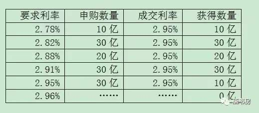
要求利率从低到高排列，至2.95%时满足100亿发行数量，于是成交利率定为2.95%。低于2.95%的90亿申购足额满足，报价2.95%的30亿可获1/3申购，成交利率均为2.95%。要求利率高于2.95%的申购无效。为了防止垄断，财政部规定，任何公司申购数量不可以超过发行总数的35%。
所罗门兄弟的债券部经理莫泽尔钻了一个空子，他利用客户名义提交假的申报，以客户名义提出很低的利率要求，然后在客户不知情的情况下将得到的债券转入所罗门自己的账户。经后来调查结果显示，莫泽尔有8次申购债券的比例超过了财政部规定的35%上限，其中有4次，他申购到发行债券总数的75%。
这么大数量的债券到手，所罗门基本可以控制该债券的短期市场交易，并通过拉高市场交易价格逼空市场国债空头，迫使他们在到期日以更高的价格从所罗门买走国债，从而获取暴利。债券部门的负责人及操盘手也因此而得到巨额奖金。
莫泽尔的该行为后来被上司梅利韦瑟知道并汇报给董事会。但不知道是何原因，董事会轻描淡写地压住了问题。巴菲特知道此事时，也没有意识到问题的严重性，但芒格从一开始就非常肯定所罗门卷入的是一个大麻烦。
说到底，数万亿美元的国债是美国整个财政系统的基础。境内外的个人、机构及其他政府出资购买美国国债，是出于对美国政府及其公共财务系统的信任。然而，这个系统本身的运作建立在一种微妙的平衡之上，类似所罗门这种弄虚作假，可能毁掉美国证券市场在国际上的声誉，减少买家，从而提高政府的融资成本。
事情泄露后，美联储和财政部对于是否能够继续保持所罗门主要交易商资格持高度怀疑态度，司法部反垄断局介入调查此事。若最终所罗门主要交易商资格被取消，所罗门将面临客户出走、借款追加保证金或触发债务提前归还等重大危机。华尔街投行的资产负债表规模一般都相当大，所罗门当时的规模仅次于花旗集团，位列华尔街第二大。公司当时市值约40亿美元，但每天都有几百亿的到期债务滚动。若遭受信用危机，唯一确定的归宿就是破产。届时巴菲特的7亿美金优先股，或许连7毛也不会剩下。
长话短说，巴菲特和芒格紧急介入，计划由巴菲特担任临时董事长，芒格接管审计委员会。芒格、托尔斯和奥尔森律师事务所（简称MTO）首席律师鲍勃·邓纳姆及冠名合伙人罗恩·奥尔森介入。奥尔森介入第一天，就被纽约南部地区的检察官奥托·奥伯迈克召见（就是《亿万》男主chuck那个角色）。是否指控所罗门就是由奥伯迈克决定的。奥尔森当场做出一个非同寻常的承诺，他放弃了所罗门公司的“律师——当事人保密特权”，这一保密特权是用来保护公司与律师之间的交流免受检察官调查。奥尔森说不管MTO在调查中发现什么，奥伯迈克都会知道。说得直白一些，此刻MTO押上自己的声誉，承诺担任政府的左膀右臂。
事情当然没有这么简单就解决，中间有巴菲特、芒格及MTO律师团惊心动魄的大量努力。最惊险的环节是财政部已经确定取消所罗门主要交易商资格，此时距离股市开盘还有七个小时。巴菲特找到财政部长布雷迪，用拒绝担任所罗门兄弟临时董事长，让所罗门破产为要挟。这一史上最大规模的金融企业破产，将引发所罗门的合伙人、债权人及交易对手破产，会给世界金融市场带来巨大的连锁反应，灾难程度无人能够估计（若真如此，估计情况会和2008年次贷危机时类似）。
最终，财政部长布雷迪与美联储主席格林斯潘等决策层，鉴于巴菲特和MTO押上声誉的诚意，同时也可能是被恐怖场景所威胁，部分修改了对所罗门的制裁：所罗门不能再代替客户申购，但所罗门自己的账户依然保留申购权。注：财政部长布雷迪就是伯克希尔原董事长马尔科姆·菜丝的侄子（见书房2017年文章《巴菲特最糟糕的一次投资（上）》）
最终，财政部对所罗门实施了一笔相当轻的罚款———2.9亿美元，同时没有任何犯罪起诉，只有梅利韦瑟辞职，莫泽尔入狱4个月。这最终结局，了解事实真相的股东们都表示非常满意，比他们所预想的最乐观的结局也要好很多。巴菲特说，这其中奥尔森和邓纳姆居功甚伟。
度过危机后，巴菲特任命邓纳姆为所罗门兄弟公司董事长。在邓纳姆的领导和推动下，1997年，所罗门以90亿美元的价格出售给旅行者集团，伯克希尔所持有的所罗门股份转成了旅行者集团3%的股权，价值17亿美元。完成出售后，邓纳姆卸任并重新回到了芒格、托尔斯和奥尔森事务所。
通过这几个案例，我们可以发现，芒格在巴菲特心目中地位如此之高，除了市面大量资料所说「芒格改变了巴菲特的投资思想」的原因之外，芒格的人脉资源，专业支持以及芒格的律师朋友们提供的法律服务，也有着不可小视的作用。这让我想起芒格老先生的一句名言：「想得到某样东西，最可靠的办法就是让自己配得起它」。无论是尊敬、爱戴、亲情还是财富、成功，我觉着一概如此——这句话有没有触动你的某种思考？
当然，这并非说芒格对巴菲特投资思想的改变不重要。恰恰相反，与人脉资源、专业支持和法律服务相比，芒格在投资思想上对巴菲特的推动更为重要。那么芒格的独特思想究竟是什么，这些独特思想对我们的投资有什么现实指导意义，芒格又是怎么获得它们呢？
企业分析检查清单
无论是牛市熊市猴市猪市，老唐左右都是继续比划自己的太祖长拳：别瞅傻子，瞅地！所谓瞅地，就是聚焦于企业盈利能力分析。而盈利能力分析，说到底反反复复就三个问题：企业赚真钱吗？可持续吗？持续是否无需大量资本投入呢？
这是在对企业估值前需要弄明白的定性问题，对这三个问题不能做出解答的，无从谈起贵还是不贵，直接归入看不懂，视而不见听而不闻即可。上述三个问题，实战中可以细化为很多具体的小问题。
正巧几天前，书房读者@大道推荐了一本台版书给我，名叫《投资检查表：基金经理人的选股秘诀》，谢谢@大道。作者自己做定性分析时，有一份检查表。老唐在作者基础上，精简整理出一份我认为更适合A股投资需求的清单，共计30条问题（原书59条），分享给大家。大家可以在「瞅地」时，作为备忘的检查清单，也可以作为企业分析的提纲，解决无处下爪的困惑。
1）我是否愿意花大量时间研究这家企业和这个行业？（困难度，兴趣）
2）现在公司决定聘我担任CEO，三个月后到任。现在我需要赶紧知道哪些东西？
3）公司现有生意的获利，“真”钱的比例有多大？
4）公司的核心客户是谁？
5）说服目标客户购买公司的商品或服务的难度大吗？
6）客户的留存率如何？
7）公司帮助客户解决了什么麻烦？
8）客户对公司商品或服务的依赖程度高吗？假设公司明天关门，客户会受到什么影响？
9）公司生意是否具备可持续的竞争优势，若有，主要是什么？
10）公司可否在不流失客户的情况下，上调商品或服务的价格？
11）行业内竞争激烈吗，主要的竞争手段是什么？
12）行业主要竞争对手是谁，对手靠什么成为主要竞争对手的？
13）你认为观察这家公司的核心数据和事件应该是什么，为什么？
14）公司面临哪些主要风险？
15）公司的负债是否过高，是否有大量或有债务，利息保障比是否足够安全？
16）公司资本再投资的回报率是否令人满意？
17）公司是否采用了保守的会计政策？
18）公司营收主要依赖持续性营业收入，还是非经常性收入？
19）公司是否具备占用上下游款项的能力？
20）公司维持现有盈利能力所需资本支出高不高？
21）搜集主要管理人员履历及相关资料，认为是否是可信任之人？
22）主要管理人员是怎么走上现在的岗位的？
23）主要管理人员薪酬待遇如何？是否持有公司股权，如何获得的？
24）主要管理人员的相关决策，是否是基于股东利益作出的？
25）主要管理人员过去向股东传达的信息，是否清楚明确、前后一致？
26）主要管理人员的经营活动是否为独立思考（未受同行行为干扰）？
27）公司过去的成长主要来源于内生性增长还是并购扩张？
28）公司过去及现在的并购，是否获得预料中的成功？
29）公司的并购活动是基于什么目的展开的？资金如何筹集？
30）行业和公司未来的增长点在哪里？
读完台版，我才发现该书其实有简体版，而且价格只有台版的1/3，只是名字起的过于「股神化」，叫做《股票基本面分析清单：精准研判股价的底部与头部》，作者：迈克尔·希恩（Michael,Shearn）。这副标题，怎么看怎么像骗子，直接被老唐忽略了，有了本文的30问，这本书读与不读关系不大，但有时间、有闲情的，读读总是有益无害的。
《价值投资实战手册》后记
这本书的诞生和前两本完全不同。
《手把手教你读财报》是公开发表框架后出版社约稿，然后开始创作；《手把手教你读财报2》是先有创作计划然后才敲下第一行字；唯有这本，起初完全没有成书的意图，只是习惯性随便写点东西发在个人公众号上。不知不觉，两年间写下超百万字的文章，这些文章被读者大量收藏，甚至还因此让“唐书房”获得印象笔记2017年7月25日发布的“微信识力榜之文化读书榜”第四名——该榜由印象笔记官方基于数千万用户收藏数据统计所得，“唐书房”是唯一入选该榜Top10的个人公众号。也有大量读者将这些文章复制整理，然后打印成册反复阅读。这种方法不仅浪费时间，而且金钱成本也颇高，于是有很多读者希望老唐将其整理出版。正是在这些读者的大力推动下，才诞生了这本书。
谢谢所有读者，谢谢你们持续的鼓励，没有你们就没有这本书。为此，在本书理论框架之外，老唐还想在后记中额外再强调一些和投资有关的重要事项。
首先重复强调老唐在22年前以爆仓破产为代价换来的四字真言“远离杠杆”。
只要能真正理解本书第一章的市场先生寓言，远离杠杆就是投资者必须记住的第一生存要素。正因为市场先生情绪波动无法预测，所以哪怕处于严重低估阶段，照样可能出现剧烈下跌。这种时候，即便你100%确定内在价值远超市价，也有可能被迫卖出。甚至有时候只是别人的一个乌龙，一次错误，或者一场阴暗的操控或赌博，都可能将杠杆投资者推向爆仓边缘。
当然，此处所说的杠杆，不包括那些经理性思考、合理规划后，与投资对象市价波动完全无关，仅与个人或企业现金安排有关的借贷，譬如个人房屋贷款、企业经营贷款等。
其次，不要使用短期资金投资。由于中小投资者并不具备推动内在价值实现的能力，所以无论我们投资决策的底层逻辑是什么，最终回报主要还是直接体现在股价变化上。
因此，我们必须明白两个事实：
第一，企业内在价值增长是需要时间的。企业只能通过一天天的运营，靠一个个员工的努力去实现价值的增长，短时间内价值突变的机会很小；
第二，人类的贪婪和恐惧之间的转换，也是需要时间的。市场淡忘上一次的伤害，逐步认识企业内在价值，并推动股价向内在价值回归，最终超越内在价值走向泡沫的过程，从来不会一蹴而就。
股票作为一个整体，投资收益率一定高于债券收益率的结论，并不代表股票每一年都可以超越债券，但这个确定性是随着时间延长而增加的。
正因为此，老唐建议投资者在股市投入任何一笔资金时，都要做好相对较长的时间准备。经验上说，在中国A股市场，以三到五年来准备，是投资者应该考虑的最短资金期限。
再次，降低对投资回报的期望值。很多人初入股市，看见股市每日涨涨跌跌，可能觉着满地黄金，一年不赚个百分之三五十就觉得白来市场了。却忘记了银行理财产品，年收益率敢有6%就可能引发哄抢，也忘记了世界顶级投资大师们长期收益率大都集中在年化15%~25%区间。
市场确实有年年翻倍甚至一年数十倍的奇迹存在。然而，盈亏同源，导致一年翻倍的投资决策体系，同样可能会导致半年归零。所以才有“一年三倍易，三年一倍难”之说。
投资是持续一生的事，降低对投资回报的期望值，相信复利规律，尽力减少那些高风险的赌注，我们才有机会在市场长期生存和持续获利。
降低对投资回报的期望值，还有一个好处。那就是灭掉依赖股市一夜暴富的心态，只是将它视为长期放置消费剩余的手段，避免因此而耽误了自己职场或事业的发展。
这种心态下，你反而会在某一天发现，不知不觉间财富已经增长到非常可观的水准，正所谓“慢慢来，比较快”。
散打投资15——如何面对铁公鸡？
早在去年12月中旬，老唐就说过「书中只有两小节内容是书房没有发表过的，从经济的角度看，完全可以不用再花钱。即便是这两小节，我也会在书房发出来。」今天兑现这个承诺，让不愿意或不舍得买书的朋友免费获得相关知识。一小节内容是《价值投资实战手册》46页，标题叫《如何面对铁公鸡？》，它是紧接在《散打投资13》和《散打投资14》之后的补充内容，今天就将它命名为《散打投资15》吧！另一页是书的后记，算是一些本书所没有收录、但我觉着读者应该知道的经验和教训，我放在今天的第二条里。
如何面对铁公鸡？
以上数据是用企业盈利增长且分红再投入的情况举例。那么，如果企业盈利很多却拒不分红，或只分少量红利，还会有这样的高回报吗？
如果我们将所有上市公司的股票视为一个整体，它大体拥有约10%~12%的净资产回报率，这个净资产回报率类似债券的“息率”。从这个意义上说，股票可以被视为一种特殊的债券，然而它和真实债券还是有些重要的区别。
首先，除永续债之外，大部分债券无论时间长短，终究会到期。到期后，如果新息率不能让投资人满意，投资人可以拒绝继续购买债券（永续债一般也有重新议定息率的条款）。而股票这种特殊债券却永远不到期，投资者作为一个整体无权退出，也无权与公司商讨息率的高低。
其次，债券投资人一般拿到是约定息率下的全部现金。股票则只有部分以红利的形式分给投资人，另外部分会被留存于公司做再投入。这种公司净利润的一部分会留存再投入，对于投资者而言，可能是好消息，也可能是坏消息。很明显，假如市场真实债券息率仅4%，另一种息率高达10%的“债券”必定不缺买家，且会在溢价情况下交易，这也是投资者很难以净资产值买到优质企业股权的根本逻辑。
当你用两倍或三倍价格去购买一份息率为10%的债券时，实际收益率是低于10%的。
留存部分利润，相当于首先分掉全部利润，然后股东再优先按照净资产值（面值）认购某息率为10%~12%的特殊债券，整个过程免税。对于非股东而言，这种息率为10%~12%的特殊债券是需要付出净资产值的两倍三倍甚至更多倍代价才能购买到的。此时留存利润成为了一种股东特权。这种有权以净资产值（面值）购买高息债券的特权，类似中国股市诞生初期的认购证，本身是有价值的。
因而股市投资者会发现自己将收获三重回报：首先，投资者享受了远超真实债券息率的公司经营回报；其次，这些回报的大部分又以特权形式，重新认购了他人无权认购的高息债券；最后，当前面两点好处被广泛认知的时候，股票会受到资本追捧而造成股价攀升。
然而，这一切要建立在公司的留存再投入本身会继续产生高于真实债券息率的假设下。譬如伯克希尔·哈撒韦公司，自沃伦·巴菲特取得控股权至今五十多年，仅分红过一次，且数量微不足道。其原因就是巴菲特认为将资金留在自己手上投资，带给股东的回报率会高于分红后股东自行投资。事实上，股东也确实因为这种留存而获利丰厚。
但是，如果上市公司并没有将留存利润产生高回报的投资途径，仅仅因为管理层或大股东意图掌控更多资金而不分红或低分红，那么，这就不是特权，而是一种价值的损失。这种情况令人讨厌，但不难规避。
首先，如果公司在无合理理由的情况下不分红或低分红，我们需要怀疑公司利润的真实性及管理层诚信问题，可以作为对公司估值的扣分项。
其次，如果公司很赚钱，控股股东也没有必要冒着违法违规的风险去占用本来可以通过分红后合法使用的资金。这种想法会驱动对管理层的制约。
再次，在资本市场里，如果一台收银机里堆积的钱多了，总会有各种各样的资本去想办法取出来，这种博弈本身会纠错或者推升股价。过去一两年围绕万科展开的一系列精彩资本大战，就是这种博弈的体现。
最后，在我国资本市场，证监会对上市公司分红尤其是现金分红，有一些规则上的强制要求。所以目前绝大部分优秀企业，都有股东回报规划，有按年现金分红的比例约定，这也算是我国资本市场的制度优势。
同时，我们也可以在选择投资对象的时候，可以有意识地给历史分红记录及分红率更多的权重，从而获取分红再投入的回报。
通过上面的分析，不知道是否能够帮助朋友们理解沃伦·巴菲特的“不介意买入股票后股市关门”的思想？能否打掉部分朋友心中对股价患得患失的心态，真正建立“股票代表企业的部分所有权”的投资体系基石？
事实上，上市超过20年的企业中，盈利增长水平达到或超越泸州老窖的并不罕见，感兴趣的朋友可以自行统计计算。同样，今天的A股里，未来盈利增长水平可能超过泸州老窖的公司也不会少。当然，也不要过于乐观，优质企业永远是珍稀品种。挖掘和研究这些企业，才是帮助投资者长期盈利的正事儿。（注：本小节内容结束，下面是今日单独补充，非书中内容）
关于对分红的理解，巴菲特在2012年年报里，做过一段手把手教学。老唐也拷贝给大家，或许有助于理解。以下为巴菲特原文：
关于分红，我们需要一些假设并且要做些计算。这些数字需要一些功夫才能理解，但是这对于理解应该和不应该分红的原因很重要。所以请耐心听我讲。
我们假设你和我各自拥有一家价值200万美元的公司的一半。公司每年的利润率是12%——24万美元——并且可以合理预期新增投资也能获得12%的回报率。
另外，外部投资者愿意以1.25pb（pb=市价/账面净资产）购买我们公司的股票。于是，我们各自资产的价格是125万美元。
你可能希望公司每年把利润的三分之一用来分配，剩余三分之二继续投资。你觉得这个方案即满足了当前收入的要求，又能实现资本增值。所以你建议我们分配8万美元现金，剩余16万用于增加公司未来的利润。
第一年，你会收到4万美元的分红，之后利润会增长，三分之一的分红比例继续持续，你收到的分红也会增长。于是，分红和股票价值会以每年8%的速度增长（12%的回报率减去4%的分红比例）。
10年以后，我们的公司会价值4,317,850美元（期初的2百万按8%的复合增长率计算），同时你下一年收到的分红也会增长到86,357美元。
我们两人各自的股票价值2,698,656（我们各自一半净资产的125%）。我们之后还会更快乐——分红和股价依然每年增长8%。
但还有另外一种方式可以让我们更加快乐。那就是我们留存所有的利润，同时每年卖出手中3.2%的股票。
因为股票可以以净资产125%的价格卖出，所以这种方法第一年也能获得4万美元的现金，卖出获得的资金也会不断增长。我们暂且把这种方法叫做“卖出法”。
在“卖出法”的情形下， 10年以后公司的净资产值会增长到6,211,686（期初的2百万按12%的复合增长率计算）。
但是因为我们每年卖出股票，持股比例会下降， 10年以后，我们每人拥有公司36.12%的股票。即便如此，你所持的股票对应的净资产为 2,243,540美元。
另外别忘了，每一美元的净资产值可以以1.25美元卖出。因此，剩余的股票市值2,804,425美元，大约比分红的情形下高4%。
同时，你每年卖出股票获得的现金要比分红获得的现金情形下高4%。哇！——你不但每年有更有钱花，最后还有更多的财产。
当然，上述的计算假设平均每年12%的净资产回报率，而且股东能以1.25倍pb卖出股票。
这一点上，标普500回报率明显超过12%，并且股价远超净资产的125%。这两条假设对于伯克希尔来说似乎都是适当的，当然这我不能给你保证。
考虑到乐观的情形，上面的假设条件被超过的可能性也是存在的。如果事实如此，那么卖出法就更具优势。
根据伯克希尔的历史——必须说明这无法继续重复——卖出策略比分红策略给股东带来了多得多的财富。
除了计算上的优势以外，还有两个原因——也非常重要——支持卖出策略。
第一，分红策略强制对所有股东进行同样比例的分红。比如说，分红比例是40%，那些希望分红比例是30%， 50%的股东受到损害。
我们60万股东的分红偏好各不相同。或许可以有把握地说，他们中的许多人——或许是绝大部分——偏好储蓄模式，因此倾向于不分红。
相反，卖出策略则让股东可以自由决定现金和资本增值的比例。一位股东可以选择兑现60%的利润，另一位可以选择兑现20%或者不兑现。
当然，分红策略下的股东可以用分红把股票买回来，但是他这样做会遇到困难：既要交税，又要支付25%的溢价才能把股票买回来（记住，市价是账面净资产的125%）
分红策略的第二个坏处同样严重：分红策略的税收负担劣于——通常严重劣于——卖出策略。
分红策略下，每年股东收到所有的现金分红都要交税，而卖出策略只需为现金收入中的利得部分交税。
老唐注：最后这条和我国政策略有区别。
A股市场目前不征收资本利得税，买卖股票获利的差价不缴税，只需为卖出行为缴纳卖出额0.1%的印花税，以及通常约0.03%以下的交易佣金。
而对红利的税收征收，我国是持股1个月内的，征收红利的20%；持股1个月至1年之间的，征收红利的10%；持股超过1年的，红利免税。
散打巴菲特14——芒格演义04
巴菲特一生最推崇的两个人“老师格雷厄姆和好友芒格”其实很相像。比如他俩都崇拜开国元勋本杰明·富兰克林；俩人的兴趣都非常广泛，都不愿将精力全部放在投资上；都擅长讽刺性幽默，说话都喜欢引经据典；都对文学、科学和教育后代感兴趣；他们三人的大儿子都因病早夭……
论说差异呢，两个本杰明都很好色，女朋友打堆堆。格雷厄姆甚至在处理儿子的身后事时，和儿子的女朋友滚了床单。老芒格则老派、专注、忠诚、严谨，以家庭为重，一生没有传出过任何花边新闻。
巴菲特对芒格的评价极高，将之称为「西海岸哲学家」、「伯克希尔的导师」，声称芒格推动了自己「从猿到人」的进化，这一切当然不是前两篇所谈人脉关系和专业支持所能包含的——若仅仅是人脉和专业，只能算是好伙伴、好帮手吧！巴菲特所说「从猿到人」的进化，主要指在芒格的推动下，从格雷厄姆传授的「关注企业现有资产清算价值」的投资体系，转化为「更关注企业未来自由现金创造能力」的投资体系。
当然，按照芒格的谦辞，自己在巴菲特进化过程中的作用，是被巴菲特夸大了。即便没有自己，巴菲特最终也会走上这条路的。芒格为什么这么说呢？其实看看巴菲特的性格和他所面临的历史环境变迁就知道了：这条路他非走不可，简直不可能有其他选择。
在《价值投资实战手册》里，老唐介绍了巴菲特从11岁接触股票，到39岁清盘合伙基金期间，美国股市正好经历着大萧条之后的强劲回升，从约113点上涨到约950点，涨幅736%，相当于上证指数从2000点涨到16700点之上的过程。拉长视角看，从巴菲特2岁起，一直到他39岁清盘合伙基金，美股就是个持续37年的大牛市，道琼斯指数整体涨幅近25倍（清盘后约一年时间股市下跌了约35%）——想象一下，那相当于上证指数从2000点涨到近5万点，然后你清盘，接着一年内跌至3.3万点以下，过瘾吗？
大牛的原因，老唐在《价值投资实战手册》82页详细介绍了。主要是二战及之后美国经济的高速发展、美元与黄金的逐步脱钩造成的通货膨胀、以及科技进步带来的信息传播范围和速度等原因。这些原因推动了境内外逐利资本大量涌入美国股市，格雷厄姆那种寻找远低于有形资产净值甚至远低于流动资产净值的投资方法，只能面对可投资对象越来越少的局面。
这种局面下，如果坚持格雷厄姆投资体系，必然只能是维持较小的资金规模，保持默默无闻，悄悄捡垃圾，努力获得不错的投资收益“率”，同时接受利润“额”不大的事实，小富即安——如同施洛斯（参看《散打巴菲特02——巴菲特配角演义之沃尔特·施洛斯》）。
反之，如果要满足巴菲特做大做强、登上报纸头条侃侃而谈的欲望，那么寻求改变是必然的结局。至于因谁而变，即便没有芒格、费雪，或迟或早也可能会有闲格、费电出现。从这个意义上说，芒格的谦辞也是有道理的。然而，投资有个非常重要的规律：金钱是有时间价值的。早一天转变就有早一天的价值，而且这个价值在长期复利之下，庞大的惊人。芒格就是最早、最用力推动巴菲特转变的那个人，所以巴菲特说，如果没有芒格，他会比现在穷的多。
芒格刚进入投资领域的时候，投资体系实际上是受巴菲特影响，走的也是格雷厄姆的烟蒂路线。这个路线简单易懂，就是拿1块钱买清算价也不低于2块钱的公司股权，怎么可能不赚钱呢？
然而，与巴菲特学校毕业就直接进入投资行业不同，芒格在进入投资行业之前，有过丰富商业经验。他开发过房地产、销售过收割机、生产过变压器、经营过印刷厂（印刷报纸）、生产过汽车化工产品……并通过这些生意，赚到过高达140万美元的财富。
正是由于这些从商经历，芒格不需要任何人教，非常容易就发现：①有些生意天然就是比另一些生意容易赚钱，②就算是同样的生意，由不同的人操作也可能产生巨大的结果差异。就好比印刷厂就很难抬高价格，因为报纸立刻就能将业务交给另一家工厂印刷，而报纸提高广告价格，广告主却很容易（或不得不）接受；又比如同样的地块，可能原来的业主拿着血亏，而芒格买下来却有办法让它变成赚大钱的项目……
这些生意的特质和人的因素，恰恰是格雷厄姆忽略的。甚至格雷厄姆还特意叮嘱弟子们不要去关心这些区别，只需盯住财报数据就可以了。
每个人都有弱点，哪怕伟人。
格雷厄姆是100%的学院派，没等毕业就被老师推荐给一位因孩子学习太差而被请家长的券商老板，开始了华尔街生涯。在此之前，格雷厄姆的“商业”经验仅限于勤工俭学时在一家公司帮着制表统计数据。因此，他轻视生意重视数据，有他个人的局限性原因。
除了商业经验，芒格及其父亲的律师生涯，也让他轻而易举的发现：越是优秀的人，找律师处理麻烦的概率越低。因为优秀的思考和行为习惯，让他们有意无意地提前就避开了潜在的麻烦。
那些生活中麻烦不断的人，往往并不是运气不好，而是因为他们的性格和行为习惯就天然地隐藏着下一次麻烦的种子。说句可能稍显冷血的话：我们回忆以下，电视社会报道之类的栏目，经常报道的一些可怜人，他们似乎诸事不顺，总是一个灾祸连着一个灾祸：娃掉开水锅里了，老婆服农药了，莫名其妙怪病附身了，与人口角引发命案了……
如果我们愿意直视问题，一定能发现其中有很大一部分（甚至我可以说是绝大部分），根本不是运气问题，而是思维方式和行为习惯的问题。
无需讳言，以格雷厄姆烟蒂股思想挖掘的便宜股，大部分也是遇到这样或那样麻烦的企业，否则也不会轻易便宜到清算价以下。它们就像那些生活中麻烦不断的人一样，往往因为整个公司的文化和生意特色，注定解决一个麻烦，后面可能跟着一串麻烦。与此相反，优秀的企业却和那些优秀的人一样，因为优秀，所以更优秀，反而经常挑战成就的上限。
因此，格雷厄姆的投资思想，在芒格看来就仿佛是不断寻找一些烂人，和他们做完一次生意就绝交。再重头开始，寻找下一波烂人，如此周而复始。这种生意不仅在短暂的交易过程中要对交易对手持高度警惕心（你永远不要低估烂人的下限），而且由于烂企业需要在价值回归后马上出手，必然需要不断寻找。一旦资金量超过一定数量级，结局一定是让人心力交瘁，无以为继。
但买下那些由优秀的人掌控的优秀企业则不同，买下后往往并不需要再做什么，只要享受优秀者努力的成果就好。同时，还可能不断接触到优秀的人和企业身边那些同样优秀的人和企业——毕竟，俗语说得好：物以类聚人以群分。
这一点，最明显的例子是巴菲特买下B夫人的家具商场后，顺藤摸瓜买下了B夫人家族盛赞的同行比尔·蔡尔德经营的威力家居（犹他州家具业霸主）；后又经蔡尔德介绍买下德州家具业霸主繁星家具公司；再经上述三家CEO一致推荐，买下波士顿地区家具业霸主乔丹家具公司……上述这几家公司至今都是伯克希尔的印钞机。巴菲特在1999年年报里夸赞这一连串的收购“实在是棒极了，伯克希尔不仅得到了三份杰出的零售事业，同时也让我得以认识天下最好的朋友”。对了，巴菲特还买下了B夫人妹妹和妹夫的珠宝店「波仙珠宝」，每年股东大会都必不可少的嘚瑟，连比尔·盖茨的订婚戒指都是被巴菲特“忽悠”到波仙店里买的。
这些人里，给我留下最深刻印象的，是巴菲特在1999年致股东信里讲过的威力家居比尔·蔡尔德的故事。原文如下：
这是有关犹它州家具业霸主威力家居的故事。伯克希尔是在1995年从蔡尔德家族买下这家公司的。比尔跟他大部分的经营团队都是摩门教徒，因此他们的店星期天从来不开张。
这样的惯例实在是不适合用在做生意上，因为对大部分的顾客来说，星期假日正是他们出外血拼的大好时机。不过尽管如此，比尔还是坚守这项原则，而且将这家店从1954年他接手时的25万美金营业额，一路成长到1999年的3.42亿美元。
比尔认为威力家居应该也能够在犹它州以外的地区成功开拓市场，1997年，我们计划在爱达荷州设立一家分店。
我相当怀疑这种星期天不营业的政策，能否在陌生的地区抵抗每周七天无休的对手强力的竞争。当然，由于这是比尔负责经营的事业，所以尽管我对这点持保留的态度，但是我还是尊重他的商业判断与宗教信仰。
比尔提出一个非常特别的提案，他愿意个人投资900万美元，以私人的名义买下土地，等建筑物盖好，确定营运良好之后，再以成本价卖回给伯克希尔。
要是营运不如预期，那么公司可以不必付出一毛钱。这样，潜在的庞大损失就可以由他独力承担。对此我告诉比尔很感谢他的提议，但若伯克希尔想要获取投资的报酬，那么它也必须同时承担可能的风险。
比尔没有多说什么，只是表示如果因为个人的宗教信仰而使得公司经营不善，他希望能够独力承担这个苦果。
这家店后来顺利于去年八月开幕，立即造成当地的轰动，比尔随即就将产权办理过户，其中包含一些地价已经高涨的土地，并收下我们成本价的支票。还有一点必须特别说明，对于两年来陆续投入的资金，比尔拒绝收取一毛钱的利息。
从来就没有一家公众公司的经理人会这样做，至少我个人没听说过，所以各位不难想象能够与这样的经理人共事，让我每天早上上班时多么地雀跃不已。
附带一提的是，经过八月简单的试运行，一个月后我们举行了盛大的开幕仪式，自然我也受邀参加开幕剪彩——我必须强调你们的董事长还是有点用处的。
在致词时我告诉在场的来宾，销售状况大大超过我们当初的预期，这让我们成为爱达荷州最大的家具店，远远将其他同业抛在脑后。
等到致词快结束时，我突然想起来，当初决定在这儿开店，应该是我的主意吧！
这就是和好人打交道的力量。好人好企业不断用自己的努力制造着惊喜，而烂人烂企业则经常给我们制造惊吓。
这些道理今天看起来很简单，任何有商业常识的人都不难理解：忽略公司直接看财报数据，相当于把生产煤油灯、BB机的企业账面资产，和生产茅台酒、中华烟的企业账面资产画上等号，这绝对是荒谬的。
但因为巴菲特自接触格雷厄姆，就一直依赖老师传授的绝招持续赚钱，加上长期和格雷厄姆在一起工作，受到格雷厄姆人格魅力的影响比较大，所以头脑里很难树立起对格雷厄姆思想的质疑。
芒格没有这种崇拜。他经常对巴菲特说：格雷厄姆有些思想非常愚蠢，他的盲点在于总是认为未来充满危险，而不是充满机会；将不同企业的账面资产直接进行比较，绝对是荒谬的；掌管这些资产的人，也是决定资产价值的一部分……等等。
这些思想，现在一般归为菲利普·费雪的成长股思想。费雪的思想大约是在1962年由比尔·鲁安介绍给巴菲特的。然而，在此之前，芒格已经多次将这些自己琢磨出来的类似观念灌输给巴菲特了。芒格这些灌输，启发了巴菲特思考买便宜货的问题所在。再加上巴菲特在邓普斯特农具公司清算时被当地居民当做吸血鬼、过街老鼠的景象，也刺激着巴菲特对烟蒂股的放弃——参看《经典烟头案例拆解》。
这种情况下，巴菲特逐步转向了合适价格购买优质股。他说“本·格雷厄姆教会我买便宜货，而查理把我推进了不要光买便宜货的投资方向。这是他对于我最大的影响。要把我从格雷厄姆有局限性的观点中释放出来需要巨大的力量，那就是查理的意志力。他让我视野变得更开阔。”
巴菲特说他慢慢地在很多事情上和查理的看法一致起来，“我很快就把从格雷厄姆和查理那里学到的东西结合起来，开始非常热衷于以合理价格购买优质企业。”
当然，真正让巴菲特和芒格彻底摒弃烟蒂投资，转向购入优质企业思想的标志性事件，还是对喜诗糖果的投资。通过数倍净资产的“高价”收购喜诗，最终躺赢，轻松舒适地获得难以想象的高额回报。甚至即便在按照格雷厄姆投资体系衡量已经高的过分的成交价上，再加价100%买入喜诗糖果，最终投资回报率仍然会非常令人满意。
正好，就在喜诗案例发生前两年多，巴菲特和芒格刚刚结束了一笔教训深刻的标准格式投资：收购科恩百货公司。虽然收购价格相比账面净资产有巨大的折扣，而且还拥有隐藏的房价上涨和存货低估，结果浪费了巴菲特和芒格整整三年时间，好不容易才逮住一个接盘侠，非常幸运地将科恩百货公司按照买入价脱手。
芒格自嘲他们这笔买卖，开心的日子一共只有两天：买入的那天和卖出的那天。而巴菲特则引用了一首美国乡村歌谣形容脱手科恩百货公司时的愉快心情：“我的老婆跟我最好的朋友私奔了，我是多么的怀念他！”（网球教练画外音：切，谁跟你是最好的朋友）
这两次真金白银的投资经历，让巴菲特和芒格深刻理解了品牌、无形资产、经济商誉等格雷厄姆所忽略的资产潜在的力量；体验了将喜诗糖果这类企业的账面资产与科恩零售这类企业的账面资产，放在一张表格里做数字对比，是多么的违背商业常识啊！
至此，巴菲特实现了他的「从猿到人」的进化。
在伯克希尔漫长而传奇的投资生涯里，许多著名投资案例上都有喜诗的影子：可口可乐、吉列、美国运通（第二次进入时）、富国银行、苹果等。
这些企业的共同特性，都是很少的投入后，基本不需要再追加资金，企业不断产生更多的现金，可供巴菲特拿去收购其他企业。最终让伯克希尔的财富增长，如同意大利数学家斐波拉契提出的那个著名古典数学题：有一对小兔，从出生后第3个月起每个月都生一对小兔。小兔长到3个月后每个月又生一对小兔。按此规律，假设没有兔子死亡，求三年后共有多少对小兔？
虽然巴菲特将从捡烟蒂转化到投资优质企业的过程，称之为从猿到人的进化，但几十年来，投资圈对这个问题的认识，并不如巴菲特那么肯定。优质与低估，究竟谁的权重应该多一点？劣质企业低估状态下，要不要投资？这两个问题，是投资圈永远的热点争议。在老唐看来，这两个问题没有绝对的对错之分，更多跟投资者个人性格、价值观以及对股价波动的承受能力有关。两种选择下都有成功的投资者，也都有失败的教训。
就老唐目前的个人认识而言，我选择在优质与低估之间，给优质更多权重。也就是说，优质企业合理估值情况下，我可能也会做出投资决策并承受可能的股价浮亏；而劣质企业即便在低估状态下，我倾向于不投资。
巴菲特始终更强调芒格推动他从烟蒂进化到优质企业这一影响。但老唐个人认为芒格的「反过来想」思想方式，对今天的我们，意义更加重大。反过来想，最知名的表述是芒格引用的农夫寓言：「如果我知道我将会死在哪里，我就永远不去那个地方」。它的主要内容体现在芒格的两篇著名演讲中——《穷查理宝典》一书收录的第一讲和第四讲。
第一讲是芒格于1986年6月在哈佛-西湖学院高中毕业典礼上的演讲，当时是芒格某个儿子毕业（芒格五个儿子都是从这个学校毕业的）——芒格给这所学校捐过大量现金及伯克希尔股票，他本人几十年来一直担任着该校的校董。
我已经忘记了自己是什么时候读到这份演讲稿的，但读到时那种似乎被闪电劈过的感觉，多少还有些记忆。演讲内容并不复杂，芒格给台下的孩子们分享了「获得失败人生的灵丹妙药」，药方是：
1.为了改变心情或者感觉而使用化学物质（芒格主要指的吸毒和酗酒）；
2.妒忌；
3.怨恨；
4.要反复无常，不要太专注你所做的事；
5.尽可能依赖自身经历获得经验。不要在意他人的经验和教训，无论古人还是今人；
6.遇到失败，要立刻让自己意志消沉，不要振作；
7.尽可能减少客观性，不要试图推翻自己已有的想法；
8.永远不要反过来想。
第四讲是1996年的一篇非正式演讲，题目叫《关于务实思维的务实思考》（《查理.芒格传》附录也收录了这篇）。在这次演讲里，芒格给学生们提出了一个商业实战题：如何用200万美元的投入，建立一个市值达到2万亿美元的饮料企业？题目非常普通，商学院里也常见。不过芒格在这篇演讲里展示了一种与众不同的思维方式。
他是从两万亿市值开始倒推，先思考要做到两万亿市值，需要公司卖多少饮料？而卖出这么多饮料需要些什么条件，对产品、对渠道、对物流、对品牌、对专利、对广告……至少有哪些要求？最终得出这事儿是否可能，如果可能应该怎么做？
读过这两段简介后，关注老唐时间长的朋友，可能会忍不住会心一笑：老唐的投资体系里，这个「反过来想」的思想痕迹实在太重了。在《手把手教你读财报》一书里，几乎每一小节都展示着反过来想的痕迹：财报是用来排除企业的，不是找牛股，而是避雷。这里有坑，那里有雷，这类数据显示有问题，长那样的数据一定有鬼……这一切都是反过来想，都是「知道哪里会坑人，我就绝对不去那里」。
老唐估值法也是反过来想的成果。三年后15~25倍市盈率卖出，这是具有逻辑支撑的底层思考结果。从这个结果倒推起点：在合理和保守的假设下，什么位置可以买入的？具备哪些特征的企业不能套用这个估值公式？
包括老唐在书房里经常和大家啰嗦的，这不能做，那不能碰，其实也都同样是「反过来想」的成果。你避开了会死的地方，自然就好好活着了。活着才能不断获取经验，从胜利走向更大的胜利。
对于大多数人而言，搞明白怎么在股市挣钱，可能真不是件容易的事儿。但反过来想，怎么在股市赔钱，总该见过不少吧？拿出一张纸，一只笔，只要不被眼前热火朝天的涨势遮住了双眼，其实很容易标出这些死路的。赔钱之路都画上记号了，还用担心走不到赚钱之路上去吗？
比如，套用芒格「获得失败人生的灵丹妙药」套路，老唐抛砖引玉奉上一份「赔光账户资金的绝世秘籍」，至少可以有：
1.追逐市场热点，管它什么爆雷股概念、全息技术概念、5G通讯概念，区块链数字货币概念、边缘计算概念，泛在电力物联网概念，数字孪生概念……总之，市场喜欢什么，我们就买卖什么；
2.一旦发现热点转移，股价走势与预想的相反，马上止损，然后寻找新的热点；
3.时光不等人，发现机会一定要上满杠杆，力求迅速获得高收益；
4.时刻关注庄家行动，紧密跟踪资金流向，和庄家共进退，一起割韭菜；
5.严格按照技术图形操作，坚持每日复盘热点股票盘面走势；
6.多注意宏观政策变迁，关注券商首席经济学家们对牛市来临或结束的预告；
7.不要放过任何机会，寻找一切可能有用的内幕消息和小道消息；
8.把资金交给网络股神操作，或者按照股神的指点操作；
9.不要想太多，赚钱才是硬道理，谁给的代码赚钱就听谁的；
10.多虚心请教各类老师：301024还能涨吗？支撑和阻力位在哪儿？我套牢成本8.88元，如何才能解套？
11.开盘时间，一定要密切关注行情，不能耽误了挣钱。至于工作，随便糊弄一下，老板或上司没看见就行；
12.有盈利就马上落袋为安，有亏损就死扛，绝不割肉；
13.见势不对，马上割肉，保住力量，下次再战；
14.快进快出，保持市场敏感性；
15.熊市休息，牛市入场；
……来，请经验人士接龙……
芒格涉猎非常广，他的「广」，是巴菲特做「专」的后勤保障，芒格广阔的视角可以帮助巴菲特注意到可能忽略的问题。芒格的思想是座大矿，除了上述的「与好人好企业为伴」和「反过来想」之外，还有不少精髓。比如：
1.相信常识，凡事往简单里想，往认真处行。
2.投资对象可以划分为可以投资、不能投资、太难理解。只关注那些容易理解、有发展空间、能在艰难市场环境下生存、具备优势的企业。
3.伯克希尔全部的秘诀，就是寻找成本为3%的资金，并将其配置到13%收益率的投资对象上去。
4.投资只是不断的选择，二选一里挑更好的那个。无论人生还是投资，就是个不断抬高自己机会成本的过程。
5.生活不仅有股票和投资，还有家人、建筑、高尔夫球、鳟鱼梭鱼鲑鱼等……分布于各大洋千奇百怪的鱼，以及支撑自己到达钓鱼区域的各色船只；
6.不值得做的事情，就不值得把它做好。生命有价，时间是有成本的，不是什么钱都值得去赚；
7.得到一样东西最好的办法就是让自己配得起它。
8.建立多元思维模型，才能避免「手里拿着锤子，看什么都像钉子」
——关于芒格的思想，这部分最难。只知道要尽可能多阅读、多学习、涉猎要广，要将多学科内容联系起来，搭建成思维格栅。
但究竟到什么程度才算具备「多元思维」，思维格栅该怎么搭建，如何预防半成品的负面危害等等问题，老唐至今也是懵的，只能感叹「知识的岛屿越大，无知的海岸线越长」
如果我们真的对投资、对致富有兴趣，芒格的这些思想，每一条都值得我们深刻思考，每一条都是可以展开的无价之宝。
实战细节分析：老唐为什么不卖茅台换分众？
就在2018年10月29日，茅台跌停的那天，老唐抠唆了各处账户，尽最大努力挤压出一点资金，在549.09元和89.5元分别增持茅台和洋河各几百股——见当天文章《对卖出股票的思考》。文中，老唐这样写道：一旦市场回过神儿，价值回归也有可能同样惊慌失措地出现。
事实上，这种惊慌失措的价值回归，来的比我想象的更加猛烈。就在该文里，我还说“等2020年10月29日股价950元……”结果，才五个月出头，茅台股价就出现了“惊慌失措的价值回归”，于2019年4月10日达到950元，五个多月涨幅超过70%。
股价到900~950之间时，有不少朋友在问答广场提问：老唐，为什么你不卖出茅台，换入你认为低估的分众传媒？或者你什么情况下，才会这么交换？我能理解这种疑惑的产生。因为老唐曾在去年5月初，写过茅台2018年的合理估值范围是每股650~900元，当前股价触及950元。而老唐对分众传媒三年后的估值是2200亿±10%，即2021年股价大约介于13.5~16.5元之间，当前股价仅约7元。
顺带回答某些对成本很执着的朋友：经过不断的加仓，老唐目前分众的买入成本约7.7元，套牢约10%。不过，和关心成本的朋友们思维模式不同。关心成本的朋友重心大多在于认为7.71解套，开始扭亏为盈。
在我看来，分众2021年内，股价（含分红）回不到14元以上，我都处于严重亏损状态。2021年前在14元以下，意味着我的首笔投入（10.38元）在大约4年的周期里，连社会平均财富增长水平（名义GDP）都没跑过。依照我对投资的理解，所谓成本从来不限于我实际支出的金钱，我所放弃的才是我的成本——因为资本有时间价值。我认为名义GDP应该是普通投资者（大概读过《价值投资实战手册》前118页的朋友都可以归为普通投资者）唾手可得的收益水平。所以，在三至五年的一个观测周期里，低于这个收益水平的选择，基本能说明老唐的该决策是错误及垃圾的。
至于套与解套，对我来说，一文不值，从不关心——所以，要嘲笑老唐的，不仅在7.7元以下可以嘲笑，三年内14元以下都可以嘲笑，千万不要因为“老唐已经解套”或“老唐已经赚了50%”就表现的很客气。在这个问题上，我可以武断的说：一个投资者，什么时候能够忘记券商交易软件里的买入成本，并彻底拒绝参照该成本决策自己的交易行为，对投资的理解才算入门。
好，回到话题本身。为什么老唐不卖出茅台，换入分众呢？或者到什么位置才会发生这样的交易呢？发出这样疑问的朋友，基本上是担心“涨了这么多”的茅台，万一出现回调，岂不是放跑了到手的利润？
我认为这种观念是错误的，目光依然是瞅了傻子，而不是瞅着地。老唐始终在书房里阐述着一个理念：牛市只是投资者的风落之财（windfall）。什么意思呢，就是说投资者应该聚焦在土地的产出上，傻子的馈赠只能当做一种意料之外的收获。只有这种馈赠太过显而易见的时候，才值得去占便宜。这样才能确保自己的行为不会被傻子牵着走。
那么，什么叫做“显而易见”呢？在《价值投资实战手册》及书房多篇文章中，散落着两种界定明显高估的方法，一种是达到三年后合理估值的150%，一种是当年市盈率达到50倍。不得不再次提醒，老唐估值法，仅适用于符合三大前提的企业，不要拿垃圾股500倍市盈率照样暴涨的事实来嘲笑老唐估值法，那种举着火把穿越炸药库的行为，还估个P值，满仓干就是了，挣钱的要点是“求不炸”。
三年后合理估值的150%或当年50倍市盈率为明显高估，那么，按照我对茅台三年后合理估值1.5万亿±10%的判断，以及2018年352亿净利润，2019年420亿以上净利润的判断。——上述两个值，在2018年12月28日文章《老唐的2018》，和2019年3月29日文章《茅台的喜与分众的雷》里。
意味着出现以下几种可能，会导致我卖出茅台：
第一，三年内茅台市值达到15000×110%×150%=24750亿时，可能导致我卖出（随着时间推移，“三年后”所指的年份会变）；
第二，2019年上半年内，茅台市值达到352×50=17600亿时，可能导致我卖出；
第三，2019年下半年内，茅台市值达到420×50=21000亿时，可能导致我卖出。
备注：以上数据的应用前提，是茅台公司没有什么重大经营变化，没导致我对其进行价值重估。
针对这个卖出标准，前几天有位叫@大道至简的朋友在书房问答广场提出一个疑问：您估值表里写的2021年卖出（三年后）合理估值的150%就是卖出区，卖出区会不会太宽泛，例如茅台15000亿的150%基本上53倍市盈率了。
老唐的回答如下：
不宽泛，挺合适的。我的原则倾向于最好不要卖出。除非太过明显的高估，逼迫我持有类现金资产，否则我尽量站在优质企业的股权里，做时间的朋友而不是对手。
比如遇到你说的设定目标相当于53倍市盈率卖出，而事实45倍市盈率到顶下跌。可能在你眼里，是“好可惜，设高了，没卖到顶”，而在我心里可能是“还好还好，不用被逼卖出，又可以赖几年”——认真想想老唐为什么这么“蠢”。
这里有个底层思维根本的区别。这区别我在2017年11月28日的文章《虚拟利润与真实生命》一文末尾，曾经用一个手绘草图来阐述过：拒绝虚拟利润的诱惑，坚决拥抱优质企业股权，只有在明显有足够大便宜占的时候才出手，其他时间静静享受生活。
以大道至简为代表的朋友们，和老唐的本质区别有二：
第一，朋友们内心深处将现金看成财富，股权只是获取现金的中转工具，推到尽，你想要的是“现金”；老唐内心深处将股权视为财富，现金是获取财富的中转工具，推到尽，我想要的是“股权”。所以，朋友们内心深处的真实想法可能是“找机会卖出”，而老唐内心深处的真实想法是“尽可能不卖”；
第二，朋友们将动手区与企业价值区间之间的股价波动，看成了“真实的利润或真实的亏损”，而老唐趋向于将企业价值区间以外的波动，看成“虚拟的利润或虚拟的亏损”，是傻子们制造的幻象。这不是说老唐不在乎这些金钱，而是老唐深知，你越是关注傻子们制造的幻象，你越占不到傻子们的便宜。这个理念，在2018年8年19日的文章《股市下跌，应该顺势而为、减仓避险吗？》一文里，特意举例阐述过，建议重读。
这个“尽可能不卖”的底层理念，同样来自巴菲特，老人家说：“我们认为，如果一家公司业务明晰、又能持续保持优秀，那么出售这家公司的权益显然是愚蠢的行为。因为，这种类型的公司简直难以取代。”
“尽可能不卖”的背后，有两重逻辑支撑，一是我的目的就是获取长期的企业增长，优秀企业的增长本身已经足够令我满意，不需要浪费生命去高抛低吸追求额外的利润；二是高抛低吸也并不是想做就能做成的。它的难题在于，我们不可能准确预见傻子的癫狂程度，所有的寻底或找顶行为，必然会导致我们因为抛出后继续暴涨或买进后继续暴跌而后悔和优化。这些后悔和优化，包括偶然的某次或某几次踩中顶或底，又必然将驱动我们加强对傻子行为的预测力度。我认为这种预测有百害而无一利，是条歧路。
举例说，假设你上一轮犹如神助，无比英明地在800元高点卖出茅台。卖出后，你是打算与她永别，还是某个价位再买回来？如果是打算买回来，什么时候买入，750…700…650…600…550…500…450……0.5？比如你说是509.02元，为什么？为什么你能踩中509.02呢，事前你依据什么逻辑判断509.02元适合买回，而不是510.02……589.02……799.02买回呢？
同时，考虑到你卖出茅台后，很可能将钱拿去购买了其他投资对象，两边叠加之后，决策的难度指数级增加了：届时那边恰好应该卖出吗，你会卖出吗，什么时刻和价位卖出，又为什么？
一旦在800卖出后没能在某个点买回，假设等企业增长推动股价到1600的时候（几乎确定会到，只是时间不知），你回看手上在800元变现而来的金钱，或拿着这笔钱又去高抛低吸其他投资品种的经历，最终收益率是否一定超过800~509.02~1600傻坐的人呢？
我的答案偏否定。
这个逻辑，在上篇文章的留言区也说过。很简单，老唐之所以能够获得目前这个自己觉得还算满意的回报，是因为我坚持了一个非常简单的理念，那就是我按照我对企业三年后的估值对折买入，不考虑其他因素。
因此，对于分众，我的估值是2100~2500亿，那么我最多坚持到1050亿就一定会买入，并乐见其下跌，我今天账户里所有的钱都是这样赚来的。
如果我1050亿还没有买入，那就说明我的理念会随着市场恐慌而发生变化。
如果我的理念会随市场恐慌情绪而发生变化，很显然我就不可能在200元以下、700元以下及600元以下继续去增持茅台，不可能在200港币以下开始买腾讯，不可能在23元左右去买海康，不可能在50元左右去买洋河，不可能在31港币去买古井B（也就不可能在去年下半年暴跌时，不断地给大家输出鸡汤）……
至于估值的准确性，几乎可以肯定必然会出错。
当不可能预见到的事情出现了，比如分众2018年下半年开始大肆扩张，导致成本提升，宏观经济不景气导致广告商减少投放，互联网环境变化导致坏账增加等因素，也包括投资海康遇到中美贸易战，导致芯片供应问题，海外市场受影响等问题，这些事情可能会改变我现在对企业的估值，但它与后悔一毛钱关系也没有。后悔自己没有预测到宏观经济会下滑、互联网大环境会发生变化、中美会打贸易战……，这和浪费时间后悔自己没猜中福彩号码，愚蠢程度差不多吧！
为什么估值是个范围，且需要留下巨大的容错空间（目标要求三年翻倍，实际上三年能赚50%，年化约15%就基本满意），这本就是给不可预测事件留下的。在投资领域里，发生原本没有预料到的事情，不是意外，是必然。
然而，此时问题又出来了。既然如此，老唐你为何又会选择在50倍市盈率或者合理估值150%的范围内卖出呢？按你上面的说法，你应该是死了都不卖，始终持有才对啊。这里又有从格老到巴神再到老唐，加起来超过百年的经验（听起来有点你和马化腾一起算，人均财富过千亿的意思），以及一堆小学三年级水平的加减乘除算术题了。
经验：在人类永远不变的贪婪和恐惧以及资本的逐利天性推动下，股市估值水平通常会在三到五年范围内形成一个起落。
那么，在无风险收益率为4%左右的情况下，股权估值达到50倍市盈率后，一般来说，三年内出现估值回落是大概率事件。
算术：
①我们假设企业未来三年的年化增长率为25%，今年净利润为1元，则三年后净利润为1.95元；
②今天50倍市盈率卖出得款50元，按照4%无风险收益率计算，三年后这笔钱总额为56.2元；
③三年后企业估值水平回落至25倍市盈率，届时股价为25×1.95=48.8元。按照合理水平买回，可以多买回15%股份。
即：
A.假设股市在卖出后三年内回落至正常估值水平，同时假设企业能保持年化25%增长，50倍市盈率卖出能保证占到傻子便宜；
B.如果回落时间短于3年，或者企业年化增长低于25%，则能占到更多便宜；
C.反之，如果卖出后持续高估时间长于3年，或者企业年化增长持续高于25%，则卖出也可能吃亏。
——上述三种可能性里，经验判断AB的概率非常高，C的概率偏低。
因此，我给优质企业界定一个很高的卖出标准，目的首先是尽量不卖出，保证自己始终在电梯里坐着。但即便如此，傻子们依然有可能将股价推高到超过该标准的位置，此时我可能被迫卖出，但这个卖出标准，从数学计算上能保证三年内，大概率可以在合理估值水平买回并略有盈余。这就是合理估值的150%卖出或者50倍市盈率卖出的背后逻辑。注意，首先是为了不卖，其次才是为了卖出后大概率能在合理位置买回。
这是关于卖出茅台的问题，接下来聊买入分众的问题。
在我的投资体系里，股票换钞票，钞票换股票，是两次独立的交易行为，每一次都要有“明显的便宜占”才会行动。分众，我的估值是2200亿±10%范围，因此千亿以下就是我的买入区，价格越低，我买入所占到的便宜就越大。
然而，是不是一直跌，我就会一直买？也不是。至始至终，老唐都强调过，我计划持有最多10~15%的分众，今天的持仓占比约为12%（分众当前市值/账户总市值）。也就是说，若其他持仓股持续上涨，同时分众持续下跌，我还有加仓空间，但空间也有限。
其原因很简单，三个字“确定性”。确定性越高，我对其理解程度越深的企业，我给予的仓位安排就越高，反之，仓位安排就越低。分众从生意模式、确定性和管理层过往表现记录来说，只能算一个优秀的二流生意（管理层自己也这么定位）。虽然具备大、准、强、省、专的护城河（见2018年6月11日文章《梳理分众传媒（下）》），但护城河的宽广程度和茅台酒或腾讯的社交平台相比，尚有显著的差距。
当然，作为持“适度集中”理念的小投资者，我的仓位安排也不是那么精细和严格，大致就是观察仓，10%以内，10%~15%间，15%~25%间，25%以上几个粗线条的考虑罢了。
另外有个重要的问题，我不知道是否有人注意到：老唐几乎没有因为估值高而卖出股票的经历。自2014年在网络上公开披露持仓变化至今，老唐涉及的股票本就屈指可数，其中卖出的股票，无论是银行、水电、泸州老窖、信立泰、双汇、粤高速B、长安B、张裕B，没有一只是因为高估而卖出的。
卖出的主要原因基本都是因为对企业的认识发生了改变，或者是因为生活中需要用到大额资金，例如买房买车等——我常年只保持一到两年家庭总开支所需资金，其他资金始终满仓，所以在需要动用大额资金时，会卖出股票。唯一一次有估值因素在内的减仓，事后看还是大错特错的。那是在2017年6月14日，按照自己的计划在475.5元，减持了约4%的茅台——见当日文章《减仓茅台》。
这也是老唐一贯的坚持的“长期看，股权优于现金，尽可能不做卖出”的底层思维所导致的操作层面行为。
至此，本文写完，有一种剖开肚皮，将心肝脾肺逐个拿出来展览的感觉。我相信这样的剖析，你就是报那种收费9999的班儿，可能也没有人愿意或者能够给你讲透吧！所以，本文还破不了0赞赏金身的人，估计老唐是永远没能力感动你的钱包了。
散打投资16——投资体系的拷问及腾讯、海康和分众的漏判
4
前 言
过去的一周，或者说过去三周，股市都处于大幅调整和震荡时期。调整和震荡时期，最考验投资的理论框架是否清晰，最考验对公司的理解是否扎实。
可惜偏巧，股市里调整和震荡期永远是绝大多数时间，真正上涨的时间总是少数。记忆里，杨天南兄曾经有过一次实盘统计，结论好像是他自己的持仓约80%的时间是不赚钱的，利润基本都来源于那20%时间。我没统计过，但估摸着这结论没有大的误差。
正是因为这个原因，所以旁观者才会觉得奇怪：股市怎么可能那么多人赔钱呢？难道人一入股市，智商就会显著降低吗？绝大部分赚钱的好公司好股票不都是耳熟能详、人人皆知的吗？
细想想，还真是。给投资者带来巨额财富的好公司，无外乎就是那些什么茅台、五粮液、洋河、老窖、平安、伊利、海天、恒瑞、格力、美的、万科、福耀、海螺、招行、双汇……，有几个市场参与者不知道它们的名字呢？而且更有趣的是，这些公司并不是今天才被归为好公司行列，是很多年前就已经众所周知的“知名蓝筹”。几乎每一家公司都被翻来覆去研究过无数次，几乎每家公司都给投资者带来了大把财富。
然而，坦率说，哪怕不以整个市场为样本，就以书房读者为样本（我个人主观认为书房读者群体收益应该是高于市场平均水平的），可能从上述公司身上赚到大把财富的人，依然是极少数极少数。为什么呢？我认为核心原因在于股价的调整或震荡，会引发体系不清晰的投资者怀疑公司、怀疑自己、怀疑人生，从而给自己创造借口、理直气壮地推翻自己本以为已经建立的“投资”体系，重新回到追逐短期股价的“投机”道路上去，从而浪费了生命，错过了财富。
举例说，我敢确定，这两周时间里，一定有一些几周前还暗自决定要“坚定地、长期地、毫不动摇地持有”茅台（或者分众、海康、腾讯或者其他什么股的）的人，或者一直抱怨茅台（或其他什么目标公司）不给上车机会的人，现在突然“理性的”得出结论：“我并不是打算投机，而是因为茅台集团打算侵犯上市公司利益，所以我才卖了它”，并暗暗高兴自己950卖掉了，后来跌到了850，并且850也不买，因为它可能跌到750、650甚至250……
也照样有两三周前还暗下决心要偷偷抄老唐作业，赚个安心钱的人，在两三周的调整中，终于明确的得出结论：老唐也就会死拿个茅台，狗屎运赚到一笔。你看看他买的腾讯、分众、海康，还不是一个个跌成狗，没一个靠谱的。
这就是“股价下跌会导致你怀疑公司、怀疑自己、怀疑人生”。根本原因是没有建立逻辑通畅的投资框架，没有对公司核心竞争力的真正理解。没有这些，你只能依靠股价波动方向来评价一笔投资究竟是不是正确。以股价波动方向来评价一笔投资是不是正确，其结果往往是，当你认为它是正确的时候，它反而不是合适的买入时机（因为你是因为涨了很多才得出正确结论的）；而当你认为它不正确的时候，它恰恰可能是合适的买入时间（因为股价跌了很多导致你认为它不正确）。
恰好搞反了。搞反的结果，就是永远处于后悔、焦虑甚至痛苦中，在自己认为正确的时候，后悔没有早点买入；在合适的买入时间里，却忙着焦虑浮亏怎么办，或痛苦自己信错了人、信错了公司。
正如老唐分享给大家的一句话：财富是思考的副产品。财富必须是/也只能是/你自己深刻认知的理念所带来的副产品。没有这种深刻的认知，短暂的相信、犹豫、怀疑或者反着做，结局基本都一样：浪费宝贵的时间，做财富短暂的保管者。
在老唐的投资体系里，关键数据是企业的合理估值；关键决策是除非相对于合理估值有明显的便宜占，否则对股价波动视而不见听而不闻。就这么简单。前者是基础，后者是“真知”后的行为表现。
那么，什么是合理估值？我最近刚刚想出来一句概括语：“所谓合理估值，就是用企业可能具有较高增长的潜在优势，抵消确定性低于类现金资产的劣势后，将二者画上等号。”
也就是说，企业股权相对于类现金资产，有一优一劣。优势是“可能”会有较高增长（即未来盈利能力“可能”比今天更强大），劣势是确定性不如类现金资产（未来盈利是估算的、或者说是猜测的，并不是确定数）。如果我们能够将这一优一劣对冲掉，那么企业股权可以与一定数量的类现金资产（例如债券、货币基金或保本理财）画上等号，此时这个“一定数量的类现金资产”就是企业股权的合理估值。
这里隐藏着三个判断，也就是书房里经常提到三大前提：
第一，该企业挣的钱是真金白银吗？如果赚的假钱，显然不能拿来和类现金资产真金白银的利息收入画等号；
第二，企业的盈利能力未来真的会有较高增长吗？凭什么？这涉及到企业核心竞争力（也就是通常价投喜欢念叨的护城河）的问题，是最难的一关；
第三，企业维持目前盈利能力，需要大额资本再投入吗？也就是说，净利润数据里有多少钱是分给股东也不会影响企业现有盈利能力的。如果需要大额投入，那么就不能将净利润直接和类现金资产产生的利息收入画上等号，需要我们调整净利润数据。
如何调整？用真实净利润减去维持现有盈利能力所必须的资本投入，得出一个调整结果。这个调整结果，在教科书里就叫做“自由现金”或“自由现金流”。
这三个判断，第一个最简单，有基本的财务知识都可以做出判断（不过很遗憾，对于大部分市场参与者来说，基本的财务知识也是一个不低的要求），而后两个则需要大量阅读企业财报及相关资料，才“可能”做出判断。注意，是“可能”，而不是“一定”能做出判断。而且，即便有了判断，也不能保证一定正确。这就是投资之难——当然难，让财富迅速增长，是几十亿人每天都在竞争的事，怎么可能简单呢？
明白了以上道理后，合理估值就简单了。企业当年能够获取的自由现金数量的25倍就是这家企业的合理估值。如果这家企业的净利润近似于全部是自由现金，合理估值就是通常所言的25倍市盈率。
为什么是25倍，而不是其他数字呢？25是在无风险收益率约为4%时的取值。现在的类现金资产无风险收益率约为4%，收益率4%的意思就是25倍市盈率（市盈率=1/收益率）。所以画上等号的企业股权合理市盈率也取值25倍。如果无风险利率发生较大变化，这个25的数据就要跟着改变。
无风险收益率又怎么取值？无风险收益率一般取值十年期国债收益。但由于本就是约数，可以直接将一年期货币基金收益率，向上凑整（不是四舍五入）即可。在没有外汇管制的国家里，直接取比十年期美债收益率略大一点点的数字即可。
如果净利润不全是自由现金呢？比如只有80%的利润算得上自由现金，合理估值是多少呢？25×80%净利润=20×净利润，即合理估值是20倍市盈率。这里的市盈率的调整，并不是估值水平的调整，它代表的是对企业盈利质量的判断。
市场各类研报里常见的，给不同行业不同的市盈率估值水平，或者根据该企业历史市盈率中值确定估值水平，在老唐看来是画虎画皮难画骨，没有理解估值的本质，其基础是建立在历史统计的基础，底层逻辑并不牢固。
必须重复提醒的概念是，“分给股东也不会影响企业现有盈利能力的”自由现金，和企业是不是真的分给股东，或者分给股东的数额多少，并无直接关系。
企业分红的一大重要功能是佐证企业利润的真实性，如果通过分析能够确认企业利润为真，那么分红究竟是利还是弊，并不是确定。当企业留存资金产生的回报率较高时，一毛不拔反而可能是对股东更有利的方式。这部分论述见《价值投资实战手册》46页~48页《如何面对铁公鸡？》一节。
合理估值一定会到吗？一定会，因为资本永远追逐更高回报的资产这个底层规律不会变，因为人性的贪婪和恐惧交替出现不会变。但这里面有两个难题：
第一是合理估值究竟多久会到，三年、五年、三十年、一百年？如果要十年二十年甚至更久远的时间才回归合理估值，对投资者的投资行为还有指导价值吗？
第二是你估算的自由现金偏离度究竟有多大，是否会大到影响估值的地步？
前者是世界难题，没有人能够给出准确数字，只有无数大师的归纳、总结和观察，没有逻辑推演和数据计算（群体行为结果无法进行逻辑推演和数据计算）。大师们的经验说，企业股权很难长期低估，一般三到五年内市值就会有高于合理估值的机会。当然，如果资金占用时间上没有问题，实际上回归合理估值的时间来的越晚，投资者回报越高。这一点，老唐曾经用泸州老窖20年大熊市的数据演示过了——参看《价值投资实战手册》36~43页。
老唐估值法里，一般是根据三年后的合理估值做决策，即预测股价在三年时间里有机会回归合理估值。当股价低于三年后合理估值的一半时买入，也是基于上述经验。
估值体系虽然是三年翻倍，但三年之后日子还要继续过，三年后还会有新的三年，我并不是在翻倍后就卖出，而是不断选择能力圈内相对低估的资产持有，并尽量偏向于持有股权，只在“明显”高估时才交易。
确认投资体系没有逻辑漏洞之后，我们再看具体公司自由现金或净利润的偏差问题。
刚好有看热闹不嫌事儿大的好事者，给老唐转来几条某球热帖，大致意思说老唐也一样稀松平常，离开白酒之外的投资，都错的离谱。例如腾讯、分众、海康，个个踩雷，甚至还有人计算老唐茅台之外的投资，不仅把本金亏光了，而且亏成了负数。更有趣的是，帖子里有不少朋友被指认为老唐的小号、水军。嚯嚯，小号和水军朋友们受累了，应该发奖金。不过我也偷看了一下相关辩论，发现小号和水军朋友们大都没有get到老唐潜在的不足，老唐在这里阐述一遍，拿来抵奖金，如何？
关于老唐除茅台之外的投资对象，刚好月初回忆过。因为有过资金进出，各个时期资金基数不同，加上期间有过茅台的买卖，自己也没做过准确统计，具体收益率已经很难计算了。但有两点可以确定：第一，收益肯定不高，与茅台收益相比，可以视为很烂很烂；第二，肯定是赚钱的，能算出本金亏成负数的数学家绝对是天才。
别人怎么评价，老唐不关心。这种“老唐也是稀松平常”的看法，老唐认同。无论在某球还是在书房，老唐从来没有吹嘘过自己有多牛，多神。我只是愿意如实分享“我是这么想的，我是这么干的，我是这么认为的”，仅此而已。能惊叹老唐稀松平常，或者惊叹老唐一样会错的人，和书房里经常惊讶于唐书房居然也会推送广告的人一样，无外乎是表达自己发现了“原来老唐也是凡人，和凡人一样要吃喝拉撒”，这种惊叹除了暴露自己的预期太天真、认知太幼稚之外，有什么价值呢？
有点像老唐一位朋友分享过的段子。他说自己小时候，每次看见漂亮女老师或女同学去厕所，都很震惊和痛苦。他无论如何也无法接受“她们那么漂亮，居然也要拉屎尿尿”这样一个残酷的事实。这种震惊和痛苦直到走出社会很久后，才真正从他内心消失。如同我这位朋友的震惊，诸多“老唐水平一般，老唐会错，老唐会发广告”的感叹，就和漂亮女老师会上厕所一样，有什么值得奇怪的？老唐水平超神，老唐永远不错，老唐不食人间烟火，才值得奇怪。
回过头来说说老唐被抨击的三只股票：腾讯、分众、海康。这三只都是最近两年内接触并研究的。这三家公司的认知有没有问题，答案是肯定的：有，每家都有。对净利润和自由现金流的估计误差是否影响到估值？腾讯和海康没有，分众有。
对于腾讯，我完全没有预料到宏观经济的不景气程度、央行要求将支付用户沉淀的备用金全额上缴以及2018年游戏版号的停发；对于海康，我完全没有预料到宏观经济的不景气程度、中美myz的爆发以及对抗会演化到如此惨烈的地步。
而对于分众，我自认错误的地方，截止目前还没有任何人指出过。分众的错误，不是宏观经济形势的错判，不是新潮的冲击，不是扩张进程的出乎意料，而是我对广告客户行为特点和结构的误判和疏忽。
在现金和股权的比较和选择中，在自己能够理解的公司股权的配置中，宏观经济这个因素，我一贯忽略。因为我认为，我没有能力判断宏观经济形势的变化，也不需要去判断。宏观总是要么左要么右，过热了政府会打压，过冷了会刺激，一通左右互搏之后，相互对冲，长期看就是两个字：增长。至于宏观经济何时增长，何时衰退，何时会快，何时会慢，何时从增长转衰退，何时从衰退转增长，全球数以万计的经济学家，有数以十万种观点。这些观点有两个共同点：
第一，论文篇幅很长，数学公式严谨，经济理论扎实，看上去都非常专业；
第二，对投资没什么用。永远是有人对有人错，连续对上几次就可以获诺奖提名。
然而获了诺奖的经济学家，做投资照样踩不准节奏，其根本原因是宏观形势到个股涨跌，反应链条太长，任何一个环节都可能引发多种变化。多种因素共振下来，可能性太多，不足以指导买或者卖。
所以，宏观经济对这三家公司的冲击，有没有？当然有。提前能不能预测出来？我自认不能。既然不能，总结和反思有用吗？难道我们由此得出一个结论，任何时候预测企业未来盈利的时候，都要按照宏观经济即将衰退来假设？ 下次遇到宏观经济持续向好，一次次错过企业盈利的大增之后，难道我们再去反思任何时候都应该按照宏观经济处于繁荣期来假设？很显然，不可能的。我既不打算按照繁荣来假设，也不打算按照衰退来假设，我直接忽略到它们。
至于未来到底是衰退还是繁荣，只能说“人生很长，不必慌张”，我会遇上衰退，也会遇上繁荣，正如巴菲特所言“未来一定会有糟糕的年份，但那又怎样？一样会有一些好得异常的年份。”一旦我们承认自己的无能，并以长期的眼光去看待这个宏观经济问题的时候，问题已经解决了。
对于腾讯备付金及游戏版号问题造成的损失，以及由于中美myz愈演愈烈对海康造成的损失，我都没有预测到，也不认为自己未来能够预测到同类问题。下个月中美会如何，央行会如何，游戏主管部门会如何？我只能诚实地告诉自己“我不知道”！一切，交给时间、交给安全边际去解决。别忘了，我的体系是按照三年后合理估值的50%买入。是拿今天的五毛钱去换三年后的1元钱。如果按照当前的无风险收益率，三年后的一元钱，只值今天的1/1.04³=0.89元。5毛和0.89之间的0.39元，就是我留给一切潜在不利因素的空间。
我只关心企业的核心竞争力是不是还在。对于腾讯而言，微信和qq平台的活跃用户是不是都还在，游戏领域里腾讯的竞争力是不是还依然强大，腾讯是否依然围绕着更好地满足用户需求的原则去展开投资？只要这些用户依然每天依赖腾讯的通讯平台、支付平台，每天依然玩腾讯的游戏（顺带庆祝《刺激战场》的修正产品《和平精英》取得版号，开始了吸金之旅），依然有许多需求还没有被挖掘和满足，就没有什么值得担心的，先变现或者后变现，只是利润体现的时间区别。
截止今天，我依然能认定，腾讯明年一定比今年赚的多，后年一定比明年赚的多，十年后一定比现在赚的多得多。当前只是处于今年的合理估值区间，我未来十年可以同步享受企业增长带来的收益，对于投资而言，这足够了。
同样道理，对于海康而言，安防市场还有没有发展空间（答案，有。平安城市、智慧城市、雪亮工程等的硬性公共安全要求，就还有巨大的增长空间）
海康还是不是业内最有竞争力的企业（答案，是）
美国如果制裁海康，会不会导致外资同行或者中资同行抢占了海康的安防订单（答案，不会）
管理层对于这些问题有没有应对准备（答案，有）等等
这些才是与投资收益息息相关的。
至于宏观经济下滑导致政府订单落地缓慢，叠加中美myz导致一季度营收增速下滑，企业人员和业务扩张带来的刚性费用导致净利润同比下滑等等，这些数据的变化，我不仅过去没有能力预测到，展望未来我估计我依然没有能力预测到。
但对于分众传媒，却有两个知识错误，是可以改正也应该改正的。这两个错误，一个涉及到对广告客户行为特点的误判，一个涉及到对分众客户结构的疏忽。
行为特点的误判，指的是：过去我认为当宏观经济不景气，或者某种冲突导致出口受挫时，企业应该会更加注重于国内市场，应该增加广告预算抢夺消费者。由此，分众甚至可能因此而受益，至少也能保证不受太大冲击。
然而按照2018年下半年及2019年一季度的经营情况和江南春在业绩交流会上的分享，广告客户面临行业不景气的时候，并不是采取主动进攻，不是以提升销售为第一目标，而是以守为原则，资金先保原材料和资产相关支出，广告费的安排是靠后的。即使在靠后的广告费安排里，也会优先选择能带来短期直接效益的效果广告，之后才会考虑品牌展示广告。
也就是说，以品牌展示为主要广告形式的分众传媒，遭遇到经济形势下滑时，实际上是客户支出首选的削减对象，而不是我以前认为的不受冲击甚至因此获益。这是我的第一个错误认识。
另一个疏忽，是关于客户结构问题：互联网新经济在过去几年对于分众的贡献约有40%~50%，也正因为此，分众自身的定位是“引爆主流投分众”，要做互联网新经济品牌短期内迅速占领城市白领心智的助手。
因此，互联网新经济的兴衰必将传导到分众的营业收入和营业利润上来，这个结构本应在阅读财报的时候注意到，并因此而寻找到观察新经济发展势头的数据或者指标。但我在阅读财报中没有注意到这一点，从而导致对VC市场遇冷，创业公司融资艰难，部分知名企业流血上市的相关动态反应迟钝。
以上误判和疏忽的叠加，导致2019年一季度遭受营业收入“出乎意料”的下滑。
那么，当老唐遭遇到这种情况的时候，怎么处理呢？也不难。简单概括就是：
忽略历史买入成本，以新的估值范围为标准，当前市值符合买入标准则买入，符合卖出标准则卖出。即不符合买入标准，也不符合卖出标准，维持现状不动。
同时深化学习，补上新发现的短板和缺陷，力求以后的估值更加接近准确。只有这样，才能从一次次的失误里，不断提高，不断进步。
截止目前，关于腾讯和海康，我的估值没有发生变化。关于分众，在三季报出来以前，我大概率不会有买卖动作。
又到需要讨论“真知”的时刻了
书房有朋友留言感叹：即便因为老唐在5月4日发文提醒过白酒可能出现20%以上幅度的下跌，所以有些心理准备，但这两周的跌幅还是让自己感觉很难熬。「假装不在」四个字，说来容易做来难啊！ 正巧，本周二中午，老唐在山海关城楼下面，看着这座在冷兵器时代几乎不可能被攻破的天下第一关，忽然想到一个问题：阻挡清兵入关抢夺财富的是眼前这座天下第一关，阻挡投资者获取财富的天下第一关又是什么呢？
思索后得出结论：每天上蹿下跳的股价数字，就是阻挡投资者发家致富的天下第一关。巴菲特曾经说过，投资这门课只需要学习两门课程，一是如何面对市场波动，二是如何给企业估值。老唐写《价值投资实战手册》时，也是按照这个结构来写的。
但是，今天，老唐要特别强调一点：这两个问题重要性是不同的，它们有先后顺序。如何面对市场波动是第一重要的，是“真知”问题，它解决赢与亏的事儿，所以它是《价值投资实战手册》的第一章；对企业的估值，重要性排在后面，是“行”的问题，它解决赢利多少的事儿，它排在第二章。
因此，如何面对市场波动这个貌似鸡汤的老话题，其实是投资道路上的天下第一关。一旦真正攻破它，亏损就会成为一件反常的事、难以理解的事，而赢才是正常态，甚至可以是不需要努力的正常态。
我相信任何在市场待过一段时间的人，都曾发现过一个非常有趣的现象：最考验人的，不是买了股票不涨，而是先涨再跌。眼看着浮动盈利减少甚至归零，那种压力和恐惧，对很多人而言，甚至比本金亏损的压力还大。
你回忆回忆，或许就经过或见过这种三部曲：
①买入后跌了，很励志地给自己鼓劲，我是价投，我看长线，跌了正好加仓；
②浮盈中，欢欣鼓舞，判断正确，雅美蝶！加油；
③涨了30%，正兴奋中，股价回头，跌掉20%，痛苦不堪，深刻反思自己为什么没有发现XXX问题，没有及时地落袋为安，下次要调整买卖标准，调整投资思想……
最近的市场正在诱导很多人走上这样的路。
拿我自己的实盘做示例，截止今天，2019年内收益22%。年度高点、也是个人净值历史高点，出现在4月23日，那天茅台收盘974.95，腾讯收盘392，分众收盘7.11……当日的年内收益率为42%。刚好一个月时间，下跌了14%（1.22/1.42=86%），年度收益率减少了20%。用直观的数字展示就是：假设年初资金为1000万，则4月23日达到1420万，5月24日变成1220万。
平心而论，五个月收益22%，应该还是算相当不错的收益。但事实上大多数有同样境遇的朋友，目前的感受恐怕或多或少反而是难受或痛苦。原因可能在于眼中所见是失去了200万，而不是得到了220万（当然，追涨杀跌，指数涨幅近两成，个人投资反而是亏损的朋友，不在本文讨论范围）。
痛苦和折磨其实都来自看待波动“利润”或“亏损”的视角。用一张手绘图表示，在资金市值的甲乙两点之间，有ABC三种到达方式：
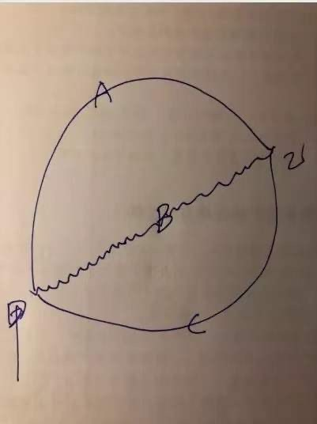
从效果上看，三种途径效果相同，终点都是乙。但三种途径对人的影响不同，其中C线最容易赚到大钱；B线幸福感最高，也是能让最多人赚钱的走势；A线最容易导致亏损，大部分投资者的亏损，都是因为只赶上了A线后半程造成的。
为什么起点终点都没变，结果却能有这么大差异呢？由此，我想到了一个假设：假设法律规定公司股价永远只允许按照某固定市盈率交易，比如25倍，那么市场会是什么样，你会如何选股？
如果公司股价永远只允许按照25倍市盈率交易，股价只有在每季度报告业绩的时候发生一次变化，一年有四次新价格，股价100%跟随企业的净利润波动。于是，问题变的非常简单：对于投资者而言，唯一可能获利的方式，就是寻找那些未来获利会增加的企业，远离那些获利长期不变，甚至不断下滑的企业。除此之外，没有其他道路。
法律不可能这么规定，但我们却可以这么看待。让股价在我们的脑海里走成上图中的B线。但凡走成A线的样子，都可以视为别人暂时把钱存在你这里；但凡走成C线的样子，都是你暂时把钱存在别人那里——事实上，我真就是这么看待的。
要让自己真的能这么去看，并不是一件容易的事，它就是老唐说的“真知”，其核心是两点：其一是“all cash is equal”的估值理念，其二是对价值回归底层逻辑的彻底理解（资本的逐利天性是根本）。这两部分都在《价值投资实战手册》前108页写着，这里不重复了。
很多朋友百思不得其解的核心问题在于，老唐你既然敢白纸黑字写下来“大概率有超过20%的回调”，为什么不先卖掉股票，等回调完成了再买入，即多赚了金钱，又可以保持轻松愉悦？理性的五条原因，我在5月4日的《主要白酒点评2019版①》文章里已经列出，今天重读可能会有更深刻的感受：
道理并不难，老唐说过多次：
第一，老唐不依赖也不信任自己的感性经验，我只信逻辑和数据；
第二，作为股东，我关注的是土地的产出，不是傻子的出价。除非傻子的出价有显著的便宜占，否则我就当做它不存在；
第三，我确信未来几年茅台的净利润依然会稳定增长，预计到2022年应该会超过600亿。同时，我知道由于人性永远的贪婪和恐惧，茅台股价未来几年里依然有机会到达30倍乃至以上。这两个判断就足够支持我做出持股决策了；
第四，市场先生强行送钱阶段，从2013年底的8倍市盈率到现在的30倍市盈率，已基本结束。股价在净利润增长和估值提升的双重推动下，实现了戴维斯双击，完成约9倍涨幅。目前的持股“只”能赚企业成长的钱，并需要承受估值水平向下概率大于向上概率的压力；
第五，我的主要目标是赚企业成长的钱，对于估值波动，有则收之，无则拉倒之（牛市是投资者的windfall）。所以，股价能到1500是重要的，但究竟是先跌到700再涨到1500，还是就这么涨到1500（数字仅为举例），那是市场先生的疯事儿，我自认没有能力猜出来，也不想为之费神。
今天补充两点个人心得，纯感性的。请首先允许老唐轻度膨胀一下：毕竟是二十多年股市老鸟了，对短期趋势还是有一些直觉（经验的集合体）。在书房设立33个月时间，合计发表的378篇原创文章里，老唐明确提醒会下跌的，仅有两次。一次是2018年1月的《九连阳之下的冷思考》，一次是本月初的《主要白酒点评2019版①》。看上去似乎准确率高达100%，简直有点可以开班装神的样子了。那么，老问题浮上来了，既如此，为何不卖掉等回调后再买回来？
除了以上五条理由之外，还有两点感性经验：
1. 老唐不是没有这么想过。我猜测几乎所有的股市参与者都曾经这么想过。老唐不仅这么想过，也曾经这么做过很多年。结局嘛，虽然没亏什么大钱（老唐早期的亏损，主要来自杠杆），也没赚什么大钱，永远就在「只差一点点就赚大钱」的懊悔中，浪费生命。直到我真正理解了「别瞅傻子，瞅地」后，眼中没了“回调”这回事儿，日子轻松了，大钱也舒舒服服地来了。
2. 说个邪门的事情。你如果要依赖它做投资的时候，准确率就会大幅下降到瞎蒙的地步，甚至有时连瞎蒙也不如。听上去有点邪门，但细想起来也是有道理的。
道理有二，其一是现在看着似乎准确率挺高，原因恰恰是我基本不怎么关心它，很少看过行情，所以偶尔为之，反而有点旁观者清的味道。犹如一直在室外的人，突然走进室内，很容易闻到室内的烟味。而久居室内的人，却可能浸泡在烟味中毫无所知。天天盯着行情变动的人，就如同浸泡在烟味里人，对室内空气的恶化感知会变的迟钝。
其二是当你需要依赖它做出投资决策的时候，前怕狼后怕虎，利益得失的多种因素就会掺杂进来，干扰你的直觉，结果让你不知不觉地从“我认为怎样”变成“我希望怎样”。用愿望替代了判断，结果能好吗？
这是我理解的关于直觉的悖论：你完全没有用它的打算，它的准确率可能还不错。一旦你注意到它，需要依赖它，它会迅速降低到连瞎蒙也不如的地步。这或许也是许多人「模拟盘大赚，实盘大亏」背后的奥秘吧。
当然，更重要的，还是我虽然感性预测“跌下去是大概率的”，而理性却告诉我“目前持有的几家公司，再创新高是更大概率的”，两相权衡，我愿意弃感性的“大概率”，听从理性的“更大概率”。这就是“别瞅傻子，瞅地”的核心。如果还理解不了，向书房发送“顺势而为”提取去年的《股市下跌，应该顺势而为、减仓避险吗？》一文重读。
分众和海康这两个投资案例越来越有趣了。个人估计再有两到三年时间，通过围观老唐将一套已经说透且不知变通的太祖长拳一路打下去，最终这两只股票究竟会让老唐赚几百万还是亏几百万？可能会让认真围观的朋友对投资的理解再次产生一个飞跃。当然，结果也可能是让老唐买到一个价值几百万的教训——这不就是最好的课堂吗？比听人吹嘘“当年买中十倍股”或“悔不该当初……”之类的故事有意思多了吧？
一个差评
昨天偶然在当当网《价值投资实战手册》一书评论区里，看到一个很有趣的差评：很烂的一本书，用三分之一的篇幅来说彼得林奇这些人已经说臭了的股票是最好的投资工具的观点，关于估值就几句话带过。是没有完美的估值模型，但人家用的多的自由现金流折现应该还是有一定价值吧，一个字都没提，想学估值的就不要买这本书了！！
我觉着这差评或许代表了一批人对投资和估值的误解，有拿出来聊聊的价值。
首先说前半句，“用三分之一的篇幅来说彼得林奇这些人已经说臭了的股票是最好的投资工具的观点”，这话没错。这观点的确是被许多大师说臭了。但这位读者没有发现的是，彼得·林奇（或其他国外的投资大师们）对股票是最好的投资工具这个问题的阐述，主要是依赖历史统计数据，展示给读者的是：“历史数据显示，长期来看股票投资的回报最高。”
但为什么呢？没有人认真阐述过这个问题。老唐在《价值投资实战手册》里，从逻辑底层解释了为什么股票投资的长期回报会比债权等其他资产回报高，从而让读者对长期持有股权产生逻辑上的信心——而不是统计上的信心。
不仅如此，《价值投资实战手册》还模拟了一个持续大熊二十余年的例子，从数据和逻辑上证明了只要企业真实盈利不断增长，股价不可能不涨的内在原因，从而打破投资者对熊市的恐惧。
这两个问题是《价值投资实战手册》在“股票投资回报最高”这个问题上与彼得·林奇等各位大师的根本区别，算是《价值投资实战手册》的贡献吧！
这位差评读者后半句关于估值公式的看法，是老唐今天想聊的话题。
在书房里，我也经常遇到讨要估值公式，或自由现金计算公式的朋友。这些朋友可能下意识的认为既然做估值，就应该从财报里找出数据，计算出自由现金流数值，然后输入excel，敲回撤，得出一个企业价值。这样的输入和计算，才算是做企业分析。按照这个企业价值实施买卖，才是看企业基本面的“价值投资者”，比看K线的“投机者”高大上。
然而，五六年前，老唐就曾在《证券市场周刊》上发表过文章，强调过自由现金流折现法不是一种计算方式，而是一套思维模式，真要是动计算器去计算，基本上已经就意味着误入歧途。自由现金流折现公式，企业价值=自由现金流/（折现率-永续增长率），倒是简单，很容易计算出一个精确的值。然而它毫无实战意义，只要你愿意，通过对“自由现金流、折现率、永续增长率”做细微的调整，你几乎可以得出你需要的任何数值。
也有很多朋友，纠结于“企业价值=自由现金流/（折现率-永续增长率）”这个公式是什么意思，怎么来的，为什么要减去永续增长率等等，老唐在去年10月的《关于老唐估值法的十大疑惑集中解答》一文里解释过。「顺带提醒，关于估值的主要疑问解答，都在这篇文章里，别忘了翻」。
在我眼里，自由现金流折现计算公式几乎没有什么实战意义，指导投资也并不需要如此精密的计算。
举个例子阐述这个问题：我们都知道篮球巨星姚明是高个子，但如果现在老唐说“姚明身高2.1米”，是对是错？你不查资料的话，敢下判断吗，敢为这个判断下注吗？有人敢，非常了解姚明身高数据的人，立刻知道老唐错了，并愿意拿出钞票和老唐赌。但大部分不熟悉这个数据的人应该不敢，因为不确定姚明身高究竟是不是2.1米。好，现在如果老唐说“姚明身高1.5米”，我相信书房所有读者都敢摸出钞票下注老唐错了，支撑大家这么做的根本原因是“我不知道姚明具体有多高，但我确定知道他绝对比1.5米高的多”
对企业的估值也是如此，面对一家市值1000亿的企业，最核心的结论是能做出“我不知道这家企业具体值多少钱，但我确定知道它绝对比1000亿现金有价值的多”。只要能做出这个判断，你在买入的瞬间就已经赚钱了，差别只是获利多少的问题，后面只剩下在波动中等待兑现的事儿。
我的估值方式，实际上就建立在这样一种简化模式下，以巴菲特的“all cash is equal”为底层支撑，将股权价值与现金资产进行比较，并通过对折留下巨大的容错空间，从而始终“将财富放置在更有价值资产上面”，实现长期投资的增值。它没有精密工整的计算公式，也没有高深莫测的希腊字母。它实际上只是一种简单的排序。篮子里有一大一小两个苹果，要让我估算出它们各重多少克，这几乎是不可能完成的任务。但如果要我将它们分出大小，这个其实不难。
所谓估值，没什么玄妙的，就是在目标对象和现金资产之间排出大小的过程。在目标对象价值“明显”比现金资产大的时候，选择目标对象；不“明显”的时候，不做选择。结束。——具体比较和排列方法，参看《散打投资16》中关于合理估值的阐述。
而“明显”两个字，对不同的人是有不同要求的。还是拿篮球巨星姚明的例子说。
你知道姚明身高2.26米，那么老唐说2.1米，你就敢拿钱出来赌老唐错了；如果你只知道姚明身高大概2米多，那么老唐说2.1米，你可能不敢赌。但老唐说1.9米的时候，你就敢赌；如果你不知道姚明身高2米多，只知道他肯定比绝大部分人高，那么等老唐说1.7米的时候，你就敢赌了；但若是你根本不知道谁是姚明，那么老唐说他1.7米，你可能还要犹豫，但如果老唐说他1.5米，你或许又敢赌了，因为你知道1.5米的人不可能成为篮球巨星……
这和对企业估值的要求一样，你对一家企业的情况越熟悉，你对“明显”的要求越低。如同你准确的知道姚明身高2.26米，老唐说他2.1米时你已经可以下注了。而你对一家企业越不熟悉，你对“明显”的要求就必须提高，从而减少你犯错的可能。代价就是你会错过很多由于你的知识限制，导致无法参与的赌局，这意味着赚钱机会的减少。
月初的一篇文章里，老唐写过这么一句话“人生所有的努力，就是为了让自己有得选”，我们不断的深入研究企业，实际上也就是给自己多点选择的机会。
但常有朋友困惑，说研究企业太难了，要怎么入手呢？散户真的能有这样的能力吗？实际上，书房里每一篇企业分析，无论对错，展示的都是老唐分析和选择企业的过程，但要找一个统一答案呢，请容老唐借用一个假设。二十多年前，巴菲特在一次面对大学生演讲的时候，为了谈行为习惯的重要性，曾经提出过一个假设，问在座的同学们，假设现在给你一笔钱，你可以买下某位同学余生10%的收入，你会依据什么去选择？
老唐延伸一下这个假设。假设你现在也得到一笔钱，同时给了你一份德国某大学某班学员名单，你需要在他们当中选择任意人数下注，你所选择的人余生收入的10%加总/人数，就是你的收入。你对这些人一无所知，能力、背景、爱好、甚至男女都不知道，你甚至念不出名单上的德文名字，怎么选？此时选择任何人都是赌博，结果只能由运气决定。但有一种最简单的选择不是赌博，那就是：选择全部。选择全部，必将获得平均数。这个选择作出来以后，你已经可以不用做任何事情，已经确定能获得“还不错”的收益。这个“还不错”的收益，不仅会高于没有受过大学教育的群体平均数，还会高于部分甚至是大部分选择对象（因为总有部分甚至大部分是在平均数以下的）。
这其实就是投资领域的投资指数的基本逻辑，其特色在于不需要做任何努力，可以获得选择对象的平均收益。它的难点是要满足“还不错”，不能去眼红别人押中第一二三。因为选全部的宿命就是永远也成不了第一二三。
如果情况有变，你拿到的不是德国学生名单，而是你所在班级的学生名单，那选择可能就会不一样。因为熟悉，你可以附加一些判断，不需要去买入全部了。你会选什么人？官二代、富二代、学霸、特别善于与人沟通的、具有某项特殊技能的……，这些人你可能会优先选择。因为他们具有某种竞争优势，或是家庭背景、或是资本起点、或是个人能力，都可能导致你判断他们未来收入会比平均数高一点。这如同企业里面占据了某种优势资源、具备了行业优势或者管理层能力特别强，等等。
而总有些人或许会被你直接排除，比如恶习满身、几乎所有人都烦的、懒得要死的、家里特别穷还不努力的、身患绝症的，等等。你会认为这样的人可能会拉低平均数。 你可以通过沟通，打听，交往，观察甚至统计任何一位同学的学习、交际、消费、成绩、荣誉等多种途径增加对他或她的了解，伴随着你对他或她的了解越多，你越可能做出精确的选择或者排除。
但即便如此，这些官二代、富二代、学霸最终也不见得各个都能成为高收入人群，或许官二代的爹进了Qin城监狱，或许富二代变成瘾君子，或许学霸遭遇车祸，等等，因此我们要通过适度分散来防止自己遭遇小概率事件打击。
选企业也不过如此，越熟悉就越能做出有效的判断。怎么熟悉呢？你对同学比对德国陌生人更熟悉，原因就是因为你接触和了解过同学，你知道他的身高、容颜、爱好、性格、历史等等，所以你敢于对他/她未来会如何做出一个判断。企业也是如此，熟悉就是接触和了解的过程。通过了解它的历史、故事、数据、产品、服务、口碑……，你就慢慢熟悉了它。
而了解这些，最简单靠谱的办法，就是阅读目标公司及主要竞争对手的年度财务报告。认真读过报告，你自然就会有疑问，有疑问别忙着咨询别人，那样就糟蹋了你好不容易挖出来的问题。带着问题去读资料，寻找答案，这个过程中你自然就熟悉和了解这家企业了。
企业分析基本功就是这么逐步增长的，并没有什么简易的套路和计算公式。难吗？不难，不就是阅读嘛！识字就行。容易吗？也不容易，能杜绝寻找公式、寻找捷径的想法，就够难了，绝大多数人过不了这一关。
是不是有点小失望呢？失望就对了。谁告诉你投资很容易，谁就是个大骗纸。投资很简单，但并不容易，仅仅是开始阅读，可能已经倒下大半。不过，幸亏人性如此，才让喜欢阅读、喜欢思考的人赢的那么轻松。
朋友，拿起你感兴趣的公司阅读吧！没有读过至少五年财报之前，别随便下注，别随便浪费你的看法或疑问，也别用“研究好难”做偷懒和逃避的借口，相信老唐的经验，这已经是投资大道上最快捷的道路，没有之一。
形似而神异的加仓行为
上周末实盘记录分享了本周加仓的计划——已经按部就班实施，周一开盘已将房租收入变成洋河，均价120.16元；今早开盘64.4已将古井分红变成古井B（对了，确认B股分红规则和A股一样，分红时不扣税）。
这分享引发不少朋友咨询老唐“某某股在某某价位可不可以加仓”，我通常选择避而不答。哪怕是我比较熟悉的公司，我最多也只是分享“我准备在什么位置买入”。因为在我看来，这是一个错误的问题，没法回答。哪怕是同一只个股，同一个价位，由于背后的逻辑支撑不同，有些人的加仓是对的，而有些人的加仓却可能是错的；某些人在这个价位可以加仓，某些人在这个价位却不可以加仓。不知道你的加仓理由，以及你对公司的理解程度，没法答复是否可以加仓。同一只个股、同一个价位的买入，还能有对有错？老唐是不是故弄玄虚，把事情搞复杂了。
还真不是，老唐的招牌是简单粗暴，通俗易懂。自揭伤疤，拿目前争议最大、最为前途未卜、被许多人预测“将成为老唐的滑铁卢”的股票——分众传媒，来举例说明老唐对加仓的认识。——不是有很多朋友强烈表示希望看到失败案例分析吗？这里或许就有宝贵的一只。
先把老唐在这只股票上的操作拉出来示众：
①2018年6月9日首次覆盖分众传媒，当天分众市值1814亿。老唐的分析结论为「三年后（2021年6月）合理估值为2100~2500亿，计划在1050~1250亿市值范围内买入」——见《梳理分众传媒（下）》
②2018年7月19日，阿里出资150亿，按照1460亿估值直接间接获取分众传媒约10.32%股份，老唐做出如下改变：
鉴于与阿里未来可能的深度合作，对分众传媒盈利能力或许有真实提升，也鉴于近期老唐手头窝着一大笔现金暂时没有去处，打算将分众传媒的初始买入价格从1250亿上调至1500亿。
计划以不高于10.2元的价格建立1%~2%的初始仓位。给分众准备的仓位最高可达10%~15%，计划在1200~1500亿之间完成投入——见《拟调高分众初始买入价》
③2018年8月3日和8月6日，按照计划在10.2位置建立了2%初始仓位——见《今天买入了分众传媒》和《8月6日买入记录》
④其后，根据书房记载的记录整理，自2018年8月16日至2019年4月12日，老唐9次加仓分众，持仓比例最高达到13%。
加仓价位自9.66至5.01不等，资金分别来源于售房款、图书版税以及卖出部分其他零碎持股。
5）按照朋友们习惯的表述，最终持仓成本约7.7元（折合1130亿市值），目前股价5.4左右（市值约800亿），套牢约30%。由于股价跌幅大于其他个股，目前占比缩水至约10%。
由于自介入到现在不过11个月，还不是盖棺定论的时候，这些加仓究竟是对了还是错了，老唐认为此时还不能做出结论（当然，不妨碍部分朋友自己做出结论）。犹如2012年老唐在200元~130之间不断加仓茅台，最低跌至118元（下图中的88.68复权价位置），直到2015年4月才突破加仓价格。在长达27个月的时间里，茅台所有的加仓看上去都是错的，然而今天回看，那27个月任何位置都是送钱的，区别只是所送数量多少的差异。所以，本文不打算讨论过去11个月里，对分众的加仓究竟是对还是错，而是想剖析加仓行为背后的心理活动，分享我的思考过程。
可能有些朋友看了上述加仓记录后，嗤之以鼻：这不就是摊薄成本、越跌越买的操作手法嘛！市场里无数韭菜每天都干这事儿。
是的，市场里每天都有很多人这么干。这些人加仓理由大致有两种常见理由。一种纯粹是为了摊薄成本：因为亏了，所以要加仓，以寻求拉低成本，减少亏损幅度；另一种是因为相信“跌多了就会涨”的神秘规律，所以采用越跌越买的手法。
摊薄成本，是一种典型的自我麻醉术。以老唐上述分众的加仓实例来说，假设首次10.2元买入后不再加仓，至今亏损幅度确实高达约47%，但由于总仓位只有2%，也就意味着总亏损额度仅有账户总额的不足1个百分点。通过不断摊薄成本，持仓成本降低为7.7元，亏损幅度确实缩小为30%了。但由于持仓金额扩大为总市值的13%了，实际亏损额度达到账户总值的13%×30%≈3.9%。也就是说，在这个案例里，通过摊薄成本这一愚蠢行为，实际亏损额扩大了数倍。
数倍金钱的损失，换来的仅仅是「亏损幅度减小了」这么一张遮羞布，老唐认为其本质原因是不愿意接受「自己错了」的残酷事实。这种心理实践中很容易导致赌性迸发，无厘头地与市场赌气“我就不信你还能跌多少”，最终失去理智，深套其中无法自拔。甚至还有因此而变成高杠杆，四处借债加仓，毁掉人生的。
以摊薄成本为出发点的加仓行为，建议朋友们一定要戒掉，马上。你能不能赚钱，取决于未来的股价走势，市场可没兴趣关心你的持股成本是多少，无论你摊薄到多低，股价走势不会有任何改变——这个问题，更详细的论述，还可以看老唐去年的文章《去掉你的成本心魔》
今天着重谈第二类，越跌越买的。越跌越买的背后貌似有逻辑支撑，大师们带着看透世事的沧桑口吻分享的口诀：“市场没什么神秘的，不过是跌多了会涨，涨多了会跌而已”，或者更高大上的说法叫“均值回归”。
这口诀正确吗？老唐的答案是：错的离谱！跌多了就会涨吗？正巧，6月20日有条关于一折股的新闻，老唐当时顺手把它拷贝了，新闻说：*ST赫美、*ST飞马、海润、众和、华泽、派生、*ST欧浦等7股最新价较年内高点均下跌超过80%。其中，*ST赫美最新价较年内高点下跌89.02%居首；*ST飞马和海润最新价较年内高点分别下跌82.6%和82.05%分列第二第三位。如果算上今天早盘的表现，今年首只股价“打一折”个股将出现。
新闻里提到海润，让我想起来曾在《避雷要诀》一文里提到过它，2015年2月2日，老唐发《海润光伏的阳谋》文时，股价8.3元。四年半过去了，今天股价是0.15元，跌幅98.2%。
上面这些一折股跌的够多吗，涨了吗，均值回归了吗？拿2015年2月2日的海润举例，腰斩后你敢加仓，还能再亏掉96%；跌掉90%以后你敢加仓，还能再亏82%。认真想想“跌多了就会涨”这种糊涂口诀，是不是觉得一身冷汗？用这种似是而非的口诀指导投资，很容易一不小心就将自己拖入绝境。
有人可能会说，垃圾股才会如此，优质白马不会如此，我只选择在优质白马上越跌越买，总有翻身之日。别这么肯定，看看下面绩优股数据：这些曾经一路涨过300元的股票，哪只不是曾经的大白马，哪只不是风光无限的绩优牛？跌幅和前面那些垃圾股相比，毫不逊色。这份表格里的贵州茅台，长春高新，会不会重蹈安硕全通的覆辙？为什么？恐怕投资者需要认真想想才行，千万不要认为只有垃圾股才会打一折。仅仅因为跌的多，就去加仓，或许偶尔有成功翻本的情况出现。但几乎可以肯定，只要时间够长，一定会有一次近于全军覆没的战绩出现。所以，朋友们啊，越跌越买这种习惯，要认真审视、三思而后行啊！
那么，股价下跌时，这个仓究竟还能不能加？又应该如何加呢？
我的方法很简单，两句话：
①加仓和新买入考虑的问题一模一样，只有市值显著低于估值时才值得加，与手中已有的持股浮亏或浮盈均没有关系。
②当由于某些因素导致自己对企业的估值发生变化时，能否加仓或什么位置加仓，同样与新的估值做对比，与手中已有持股浮亏或浮盈没有关系。
同样拿老唐的分众加仓经历来说，2018年6月做出的三年后合理估值是2100~2500亿之间，在这个估值数据没有做出修正以前，股价越跌，市值与合理估值之间的空间越大，越值得买入。因此，无论前面持股是浮盈还是浮亏，或者浮盈或者浮亏比例是多大，都不改变加仓行为——浮亏例子可以看分众。浮盈例子，可以参看老唐去年在691~549对茅台的几次加仓，加仓时手中茅台均处于大幅盈利状态。
同样，当因为某些因素，我们对企业内在价值的看法发生了改变，同样需要我们忘记之前的浮盈或者浮亏，重新从市值和估值之间差距的角度去决定是否加仓，甚至考虑是否需要卖出（无论是浮盈还是浮亏）。例如，当分众一季报数据否定了我对该公司竞争力的一些观点之后，依据原估值不断加仓的行为当即终止。此时，与前面说到的“摊薄成本”和“越跌越买”式加仓的本质区别就出来了。
这就是老唐认为加仓行为背后的逻辑。在这种情况下，投资者需要做的事情，是不断加深对企业的理解，不断根据企业盈利情况的重大变化，对企业盈利能力的价值做出大致靠谱的估计。只有这样，才可能避免遭遇前面所述“垃圾一折股”以及“绩优一折股”重创。
而有的朋友可能会问到：问题在于我没有能力对任何企业做出大致靠谱的估值，怎么办？不难。就是老唐在《价值投实战手册》第一章和第二章里反复“鼓吹”的：买入沪深300指数基金，通过分散持有中国相对优秀的一篮子企业，获取高于GDP增速的财富增值速度。截止6月25日，沪深300指数年内收益26.26%，这个收益率水平相当可观了。
半年或许说明不了什么，我们拉长看，沪深300指数基点是2004年12月31日的1000点，到2019年6月25日收盘3801.31点。约14.5年上涨了280%，年化收益率约9.6%。由于沪深300指数不包含分红数据（分红除权视为自然下跌），所以对指数收益大约有接近两个点的低估。将分红考虑进去，采用沪深300全收益指数数值计算，6月25日收盘点位是4786.36，年化收益率为11.4%。
鉴于当前沪深300市盈率不过12.5倍，处于历史沪深300指数估值偏低位置（历史最低8倍多，历史最高48倍多），且低于2004年12月31日1000点基点位置15倍估值，可以说这个收益水平基本真实的反应了指数投资的长期回报水平。11.4%的收益率水平，优于美国股市从1965年到2018年年化9.7%的收益率水平（9.7%收益率数据来自伯克希尔2018年年报首页），对于绝大多数人来说，它就是有数据、有逻辑的最优选择。
别小看了11.4%的收益率水平，假设你现在25岁，手头只有可怜的5万元，但你可以在25~35岁间，每年从工薪收入里节约出3万元投入；在35~55岁的20年事业巅峰期里，每年可以从工薪收入节约出15万元投入，那么你55岁有1494万。之后不再增加投入，到65岁退休，你的财富值有4397万元。4397万或许并不算诱人，但总比55岁519万，65岁768万要好出很多——519万和768万代表的是其他条件相同，然后你将资金买了4%理财产品的结果。
想更高？那需要付出努力，非常大的努力。读财报，思考公司，将自己的投资行为局限在自认懂的公司上面（而不是关注哪只股票会涨），并接受自认懂的结果可能也是假懂的挫折和打击，并不断从中汲取养分，不断成长。否则，凭什么该你得到更高收益呢，对不？
有钱时遇到心仪企业在合理估值区怎么办？
在漫长的投资道路上，投资者最期望的，是遇到一家这样的公司：“未来成长可能非常可观，而股价又极度低估”。买下来就搭乘“戴维斯双击”快车，眼睁睁看到账户净值biubiu飚升——戴维斯双击，指企业盈利提升叠加市盈率提升，导致企业市值的快速上升。这种梦中情人一般被投资者戏称为“格价费司——以本杰明.格雷厄姆的出价标准，买到一只会被菲利普.费雪中意的成长股”。
然而很不幸，由于资本的逐利天性，它昼夜无眠地在市场中搜罗着每一份可能被低估的资产，由此导致市场绝大多数时间都是有效的。你所中意的成长股，绝大多数时间会在基本合理的估值区间交易着。PS:关于什么是企业的合理估值，不是本文话题。我假设你对目标企业的合理估值有大概的估计，或已经读过《价值投资实战手册》。
市场绝大多数时间都是有效的，只有极少时间处于无效状态。无效的时候让我们发现价值，有效的时候让我们兑现价值。多么美妙的事情啊！然而，当我们有新的现金收入可供投资时，恰巧遇到市场的有效期（大概率的），看中的企业基本都在合理估值区间波动，此时应该怎么办呢？
这个“怎么办”包含两重意思：
一是当企业处于合理估值区间时，手头的持股怎么办，是持有还是卖出？
二是当企业处于合理估值区间时，手头的现金怎么办，是买入已处于合理估值区间的企业，还是耐心等待更便宜的价格出现？
对于前者，在2017年11月的文章《虚拟利润与真实生命》一文里，老唐曾随手画过一副示意图，并阐述如下...然后在去年8月的《低估之后的暴跌是怎么回事，应该如何面对？》一文里，老唐再次用了一副手绘草图来示意并做了如下阐述：
A和A1之间的阴影部分，是企业盈利能力推动企业价值缓慢增长的区域，即企业的估值。
它是个大致的区间，而不是精确的数值，A线为估值区间的下沿，它伴随时间的推移，缓慢提升。
三角形B是市价低估、严重低估甚至变态低估，最终回归价值的过程，三角形C为市价高估、严重高估，甚至变态高估，最终回归价值的过程。
格雷厄姆的投资思想，主要是等待B区域阴影位置买入，在即将触及A线位置，格派投资人获利撤退，去寻找下一个B；
我的买入一般在A线所在位置附近，买入后如果掉落B区域，有钱就继续买，没钱就忽略；
C区域是投机者的地盘，依据C区阴影部分与A1线的差距，我可能会卖出，也可能会不卖。
如果卖出，会等待重新回到A线位置买进（伴随着时间的推移，未来的A，有可能会高于卖出时的C区阴影）。
概括来说就是：我的获利目标是通吃A和A1区间的长期向上推移，错过这个阶段，属于不可原谅的错误；
BC区域属于意外，捡到算意外之财（windfall），坐过山车经过BC区域最终空手而归，则是预期中的法定待遇，坦然接受。
也就是说，对于手头持股处于合理估值区间怎么办的问题，我的答案非常明确：继续持有。
但此时有钱是否还会买入？不一定，因为在我看来：持有≠买入。
这个“持有≠买入”观背后的逻辑，老唐在前年的文章《持有等于买入吗？》一文里阐述过，主要内容是
①合理估值从来不是一个准确数值，而是一个模糊的区间；
②价值投资的核心不是等价交换，而是五毛换一块，是要占市场先生的便宜；
③所以，在一个模糊的合理估值区间里，持有≠买入，两种决策所需的证据强度不同。
这个观点在投资圈争议比较大。该文发表后，即便是书房里也有很多持不同意见的朋友。甚至今年还有人引用一位公认高手的观点，说高手明确表达“持有=买入”，来证明“老唐你错了”！
对于这种方式的论证，我只能一笑了之。若是名气和成就能代表正确度的话，在投资界里恐怕都只能做巴菲特和芒格的复读机了。巴菲特和芒格在伯克希尔年报及股东问答环节里多次这样说过：“我和查理都不会考虑以现在价格买入伯克希尔股票”，比如：
就在我撰写年报的时候，伯克希尔A股价格是36000美元/股，查理和我都不认为这个价格存在低估。讲的更坦白一点，我和查理都不会考虑以现在的价格买入伯克希尔的股票——《巴菲特致股东信1995年》
而他俩在不考虑买进的阶段里，却始终持有着伯克希尔的股票，这简直是用真金白银站队表态：持有≠买入。
不拼名气拼逻辑，其实“持有=买入”的观点，用一个杠精式的问题就可以推翻。举例子说，假设这位认为持有等于买入的高手持有茅台。我们只需要请教高手：您持有的茅台一定有个价位是你愿意卖出的，对吗？这个价位是多少？我相信高手不可能说“给多少钱都不卖”。我们随便举个夸张的数字吧，假设高手说是8888元/股。那么，8887.99元，您会卖出吗？8887.98元……呢？这么追问，只要能够正视问题，最终一定有个一分钱之差的价格，是高手愿意卖出和不愿意卖出的分界线。假设我们继续随口举例，在8000元高手愿意卖出，7999.99元高手不愿意卖出。那么，按照高手的定义“持有=买入”，那就意味着股价在7999.99元高手愿意持有，代表愿意买入，同时8000元愿意卖出。这意味着什么呢？意味着7999.99元的买入决策，在上涨一分钱之后即修正为卖出决策，是不是非常荒谬？世事就怕认真。对不？
可是，对于第二个问题：“当企业处于合理估值区间时，手头的现金怎么办，是否值得买入已经处于合理估值区间的企业？”，老唐的答案就没那么清晰了，甚至有点捣糨糊的味道。
这个问题如果交给格雷厄姆来回答，那答案一定是简单粗暴：不买，因为没有足够安全边际。但对于走费雪道路的群体，例如后期巴菲特、芒格…小喽啰唐…等人，答案就不那么清晰了。
这里面存在着两对看上去相互矛盾的观点：
①现金是最烂的资产VS现金就像氧气，99%的时候你感觉不到它的存在，直到你缺氧——不应该持有现金VS应该持有现金；
②市场只能利用，无法预测VS市场就像一只钟摆,永远在短命的乐观和不合理的悲观之间摆动——不能预测VS周期性波动。
这都是大师们的原话，每句话都可以用一大堆案例、数据和逻辑去阐述。然而，当这些大师语录指向背道而驰的道路时，我们应该听谁的？左，还是右？买，还是不买？给个准话儿！
现金（包括类现金资产）究竟是最烂的资产，还是一种收益确定性100%并附赠看跌期权的优质资产？市场究竟是无法预测，还是一定会周期性摆动？这两个根本性的问题不解决，合理估值范围内买不买就永远是难题。
这两个问题也曾困惑我很久。经过长时间的思考，老唐最终得出一个啼笑皆非的结论：因人而异。
什么叫因人而异呢？如果你需要从股市上提取资金满足自己的消费或其他领域需求，那么“现金就像氧气，99%的时候你感觉不到它的存在，直到你缺氧”，反之，“现金是最烂的资产”。
如果你的资金量大到会干扰市场流动性，或者目标企业的市场交易量很小导致价格和成交会受到你的行为影响，那么“现金就像氧气，99%的时候你感觉不到它的存在，直到你缺氧”。反之，无论是因为企业流动性好，还是你的资金量太小，总之，市场流动性和成交价格不会因为你的买入或卖出决策而受到巨大冲击的时候，“现金是最烂的资产”。
如果你对市值波动的承受力很差，很在意市值回撤的大小，那么等待市场摆动到“不合理的悲观”再行买入更适合。毕竟在等待期，你的类现金资产数值只会上行，而购买力的稀释是可以视而不见的。反之，如果对市值波动的承受力比较强，只要结果是更高的收益率，愿意享受期间的上下起伏，如同巴菲特所言“我和芒格宁愿要大幅波动15%年收益，也不要平稳向上的12%年收益”，那么在合理估值区间选择股权更为适合。
毕竟短期价格短期内向哪个方向摆动，完全不可预测。“不合理的悲观”是明天就会来，还是十年后也没来，没人说得清楚。合理估值期间买入后遇到短命的乐观和不合理的悲观，完全是随机事件，在投资生涯中可以视为其相互抵消。最终收益率依然取决于股权和类现金资产收益率的比较。而长期来看股权收益率高于现金，是从逻辑推理和历史数据里都可以得出的确定性结论。此时当然要选择押注大概率对的一面。
如果你评价一笔投资的成败，是以一两年甚至更短，比如数月数周乃至数天内的表现为准（也有数小时，数分钟的，那是赌徒，不讨论），那么等待极端价格（好像现在流行把它叫做“深度价值”？）出现之后，再实施买入更合适一些。因为有资本逐利天性的存在，极端价格通常存在时间不会很长，能够更迅速地获得胜利的快感。当然，弊端就是，可能长时间等待不到，从而被迫长期持有类现金资产，导致鸡汤温暖人、收益砢碜人。
反之，如果你能够接受以三到五年以上的时间段去评价一笔投资（不是套牢自慰的那种，而是内心真的这么思考），那么合理区间选择股权更合适一些。法币时代，由于通胀的存在，时间一定站在具有盈利能力的股权资产这边。伴随时间的推移，今日的合理估值，或许比几年后的“不合理的悲观”还要低。
这就是因人而异。不仅老唐是这么和稀泥的，大宗师菲利普·雪也一样和稀泥。费雪大师面对“当投资者找到了一家值得投资的理想公司，可价格却不理想时，他该怎么办？”问题时，他给出的答案是：
如果买入了好股票并持有足够长的时间，它们总能盈利。不过，要获得最多的利润，即投机性利润，则必须考虑时机。
既然最好的股票在经济萧条时从峰值下跌40%或50%并不罕见，那么完全忽视商业周期难道不是相当冒险吗？
但如果交易量相对较小，且大部分投资组合是在市场条件有利时获得的，那么即便在市场处于高位时承担一定的风险去投资也是合理的。
看懂了吗？为避免有些朋友被大师绕晕，唐翻译官做中翻中解释。
大师是说：如果新加入的资金量比较小（和原持仓市值比），而且手头原有的股票浮盈不少时，买高点儿就高点儿吧，持股优于持币；反之，如果新资金量比较大，那还是等更便宜的价位稳妥。
说到底，合理估值区间究竟该不该买，根本就只能个性化处理，没有别人的方案可以直接复制——读到这儿，你是失望透顶，还是醍醐灌顶？
抄作业的三种疾病与四种境界
早在2017年8月17日，老唐曾经就抄作业的问题发表了一篇文章，题目叫《关于抄作业的是与非》。文中有这么一段话：...不幸言中，不少当日跟风节约的汗水，今天变成了喷进唐书房的口水。原因呢，很简单，老唐确实没有做到永远伟大光荣正确。
倒是能够理解，成都方言说：“人上一百（bei），形形色色（sei）”，关注的人多了，里面出现什么样的言论都是正常的。要想不被喷，要么永远正确，要么永远不说。永远正确没人能做得到，永远不说就成了绝大多数聪明人的选择。老唐即做不到永远不错，也做不到永远不说，所以被喷是活该。偶尔挨挨喷，可以将想写东西的冲动压下去，未来被喷的机会就会减少，也算收获吧——这自慰功夫，也算一绝？
盘点老唐自2014年公开披露实盘至今，如果不算仓位不足1%的微量观察仓出入，我自认有两只股票看走眼了，属于那种以为自己懂了，但实际有重大缺陷：一是国投电力，一是分众传媒。国投电力最终获利不大，微利出场，损失的是机会成本。分众是截止此刻，老唐唯一一只处于亏损状态的股票。
五年半看错2只，其中有1只目前处于“赔钱”状态，自己觉得这个成绩挺骄傲的——当然，主要原因是我跟踪和投资的股票总数本身不多。「2014年之前其实还有苏宁电器也是看错并赔钱出场的，但那时还没上雪球，没有披露持仓，没人抄过它，就不提了」。
自2014年元旦至今，去掉期间追加资金及追加资金获利的影响，老唐的年化收益率是27.9%，即2014年元旦的100元变成今天收盘的395元，获利295%——不含新股收益。顺带说一声，其中任何一年都是跑赢沪深300指数的。无论是去年的-18%，还是今年至今的32%，都是大幅跑赢沪深300指数的。无论是老唐运气好，还是沾茅台的光，总而言之，收益率是真实摆在这儿的。而且这些收益是在明确的投资体系指导下，建立在屈指可数的交易次数之下，没有任何灵机一动的不可复制因素。
若是要从抄作业的角度讨论，跟踪老唐的持仓恐怕难度是最小的。不仅几年里始终是那么几只股票翻来覆去的说，而且所有的买卖行为都是可预测或提前公布过的。书房里稍微对老唐的估值体系有一点点了解的朋友，掐指一算就能提前预测出老唐的动作，知道老唐会在什么价位买进什么股票——区别无外乎是该买的时候，老唐手头有没有钞票的问题。
然而，很不幸，不知道是①抄对的朋友不愿意说（怕老唐索要打赏？）；还是②真的那么惨，绝大多数朋友就是抄了国投或分众，甚至就只抄了分众？或者③干脆就是抄对了功在自己，抄错了错在老唐？总之，我听到的声音主要是抄错了——好在还可以分为「抄错了但不怪老唐」型和「都tm是老唐坑我」型两种，否则真就要灰心了。这不由的让我想起著名经济学家加尔布雷斯的那句话：「一个人的远见卓识终究会被遗忘，而他所犯的错误却会被人们铭记在心——约翰.肯尼斯.加尔布雷斯」
那么，这种情况是怎么造成的呢，抄作业的正确姿势又是什么呢？
先说这种情况怎么造成的。我认为大部分人的投资活动（还不能用投资体系）里，有这么三种常见的心理疾病，会导致很容易抄错作业。
①不看市值价值差，越跌越买。
越跌越买并非不对，前提是在企业价值、企业长期盈利能力没有发生重大改变。此时市价下跌是送钱，可以越跌越买。就不拿茅台说事了，拿自己错过的泸州老窖做例子（注意，我说的错过，是表达事实，不是表达遗憾。截止今天我丝毫也没有遗憾放弃老窖）
早在2014年3月7日，老唐在《证券市场周刊》发表《股神秘笈其实不复杂》一文，老唐就用泸州老窖演示，白纸黑字写下“泸州老窖（2014年）的内在价值约为361亿，市场在361亿基础上给予的折扣，就是送给投资者的财富”。
当时，泸州老窖的市值不到250亿。但这并不意味着它就不跌了，事实上，泸州老窖一直下跌到2014年6月，大约在218亿左右才停住。2015年6月泸州老窖首次突破361亿，但随之又跌下去了，到一年后的2016年6月才真正告别361亿。到今天，泸州老窖市值1160亿，从2014年3月至今大约五年半5倍（1160亿市值加上几年的现金分红/250亿）——大幅低于茅台（约8倍），但高于洋河（约3倍）。
在这个例子中，2014年3月~2016年6月间，对泸州老窖的越跌越买，就是对的。对的原因，不是因为结果正确了，而是因为在对企业估值没有发生变化的情况下，市值的下跌代表着给你送钱。
但是，另一种情况下就不是这样的了。比如在 4月25日，分众一季报出来的时候，老唐在《出乎意料的分众一季报》一文中，这样写到：自己的推测出现较大偏差，其中还有疑问弄不清楚，说明我对该企业的推理在某个环节上或许还有缺陷。这种情况下，无论股价涨跌，我暂时不会加仓——哪怕手上有新的资金进入。
当日股价在6.48元至6.88元之间波动。从这一天起，虽然股价不断下跌，但老唐停止了对分众的加仓（分红加仓其他个股后，剩余的不值一提的千元级资金除外）。原因很简单，因为我对它的价值认识发生了动摇。
在我眼中，从2018年8月3日到2019年4月25日之间的越跌越买，全是对的——注意，全是对的。结果上是赔钱的，但这个行为是对的，其他所有赚钱的投资都是这套体系驱使下的相同行为。而2019年4月25日之后的越跌越买，就变成错的了。
前者，是遵从我的投资体系，市值低于三年后合理估值的一半，“就”买入；后者同样遵从我的投资体系，市值低于三年后合理估值的一半，“才”买入。唯一的变量，就是对企业三年后的估值判断。唯一有可能错的，也是对企业三年后的估值判断。
那么，那些号称抄老唐作业的朋友，如果在6.48~6.88元之下还有买入行为，或许应该认真问自己，你的大脑里，究竟是认为这个价格相对于企业内在价值有巨大折扣？还是仅仅因为自己浮亏，现在要加仓摊低成本寻求解套，或赌它跌这么多该有反弹？这个时候，你不是在投资，也不是在抄老唐作业，你只是在赌气。你不愿意接受自己错了，你希望向别人，也希望向自己证明“我没错”。仅此而已。
投资需要每一次都对吗？承认自己会错有那么难吗？——有那么难。批评“自己挑中”一份错误的作业来抄，而且还抄变形了，挺不忍心的。相比之下，还是骂老唐水平垃圾、居心不良，更轻松快活一些。
②喜欢买便宜的股。
在老唐所有持股中，如果你只是抄中了国投分众，甚至只抄中了分众，除部分人是因为资金量确实太少，少到只买得起几块钱的股票——这种资金量的朋友，我一贯建议不应该进入股市。其他的朋友或许都需要再问问自己，是不是还有一种心态：喜欢买“便宜”的股票。更准确的说，其实是喜欢买单价低的股票，以为股价低就是便宜，跌不到哪儿去，涨起来更快。
但是，股价低≠便宜。
一块饼切成4块，每块卖1元。还是这块饼，切成16块，每块卖0.5元。究竟1元的便宜还是0.5元的便宜？这是一个小学生甚至文盲都明白的问题，但是放在股市里，就有数以万计的聪明人犯糊涂，并为此支付巨额罚款。
就拿分众来说，如果现在分众股价是2000元/股，和今天的5元/股，谁便宜谁贵？如果分众传媒总股本只有1000万股，那么2000元一股的价格，就代表这家公司整体出售的价格是200亿；今天5元/股的价格，147亿股本，却代表着公司出售的价格是735亿。5元/股比2000元/股贵好几倍。
所以，喜欢看股价而不是看市值的错误习惯，让很多人痴迷于低价股，以为低价跌不了多少。实际上，1元的股票跌到0.8元，和100元的股票跌到80元，1000元的股票跌到800元，是一回事，你的亏损是一模一样的。甚至可以这么说，经验上看1元钱的股票跌到0.8元，或许比100元的股票跌到80元概率更大。
选一只最便宜的股票来抄，这里面起主要作用的，恐怕不是老唐，是你的错误思维。我一贯建议朋友们养成用市值看企业的习惯，我们买股票，要考虑的问题是以当前市值全资收购这家公司是否划算，而不是考虑股价会不会从5元涨到6元。
③抄长期投资者的作业，却用短期波动来评价它的成与败。
今天早上留言区里就有这样的例子，在这些朋友眼中洋河和海康今年只上涨了不到20%，远远不及某些股票（我不知道他们的参照物是哪些股票），所以，暴雷了。
这种想法，暴露其内心深处其实认为市场先生才是对的，是用股价表现去推测企业。股价表现好，则说明企业好；股价表现不好，爆雷了。然而，在我的眼里，在投资世界里最重要的理论，就是格雷厄姆的市场先生寓言，对投资者有用的是市场先生的钱包，而不是脑袋。
股价短期波动，是随机的，是受情绪波动影响的，是无法预测的。这是常识——当然，或许正如某位高手所言，所谓常识，就是常人所没有的知识。如果连这个基础理念都没有，如果要依赖市场先生的出价高低来判断企业发展，那还是别自欺欺人做什么「投资」了，唯一能做的就是追涨杀跌：因为涨所以要涨，买。因为跌所以要跌，卖。
结果就是，瞅着股价波动，哦哟哦哟跌了跌了，是不是出啥事儿了？哎呀哎呀，涨了涨了，是不是有重大利好？在这个哦哟哦哟和哎呀哎呀中，浪费青春，浪费生命，毁灭财富，这就是大多数市场参与者的结局。
市场如同一个钟摆，总是从一个极端摆向另一个极端，我们无法知道摆动的极限，如同2015年净利润34亿的分众传媒，市场先生会出价2700亿，而2019年或许也是接近这个盈利额（也可能略低吧）的同一家公司，市场先生此时700亿抛售。信他，只会亏的连口袋也剩不下。我们不知道摆动的极限，不知道往返的时间轨迹，唯一能确定的就是它会经过中点。幸好，这对于投资而言，足够了。
前两天我在留言区里回复一位朋友的留言说：投资之难，就难在市场先生经常重奖错误的行为，以鼓励他们下一次慷慨赴死。今天，我应该再加一句：投资之难，还难在市场先生癫狂的幅度、程度和持续时间，常常超乎你的想象。
不仅在你错误的时候，市场先生会癫狂——比如很多杠杆客，在计算的十拿九稳的区域里爆仓，最有名的例子就是长期资本及长期资本合伙人后来再创的公司，前后不到20年时间里，被理论上几十亿年才会出现一次的危机连续打倒好几次；即便在你正确的时候，也同样可能遇到不可思议的程度及时间长度的考验。这几乎是投资者投资生涯里必然会遇到的的——所以为何必须要时刻提醒“远离杠杆”和“闲钱投资”。
举个例子，这几天可口可乐创历史新高，巴菲特对可口可乐的投资又被吹上天。恰好网上有篇文章，让我看到了可口可乐的股价走势图。巴菲特在1989年投资4.3亿美元，然后一直持股没有动——买入经过参看《散打巴菲特04》。这些年巴菲特靠分红，早就不知道多少倍拿回回报了——1989~1997年之前，巴菲特已经拿到合计6亿美元的现金分红。1997至今的分红情况我没有数据，若有感兴趣的、英文好的朋友，能查一下1989年至今可口可乐全部的分红记录给我的话，那就太感激了。
同时，这部分持股今天的市值是208亿美元。够牛了吧？长达30年的年化收益率估计高达15%以上。
但这么牛一笔投资，如果从上图中截一个小波段，你会发现，巴菲特经历的考验，一点儿不比分众传媒少——注意，我没有说分众传媒未来走势会如同可口可乐一样，我是说巴菲特当时受到的质疑不会比今天的分众传媒温柔。虽然不知道准确数字，但大体可以看出价格波动，大约在2002年左右，可口可乐应该是从9元~10元位置，跌到2~3元之间；在2007年又从大约19元以上跌至约6元多。
我想，当年巴菲特耳边响起的声音，不会比今天分众传媒的论坛里声音小。那些调侃，咒骂买错了、应该早抛了、没希望了……的人，说得对吗？当然对，如果不买或者早抛掉，就无需承受这种下跌压力了，或者可以用更便宜的价格买到。可是在可口可乐上，这些看的对的人比巴菲特赚的更多吗？或者说他们的钱不在可口可乐，在别处比巴菲特在可口可乐上赚的更多吗？我认为答案是否定的。
如果有这样的神迹，他/她那闪耀的光辉无论如何低调也是藏不住的，但迄今为止全世界似乎还没有发现有这样一位神人的存在——这类例子还可以参照老唐去年8月在《股票下跌，应该顺势而为，减仓避险吗？》一文里讨论的“哪个万科的投资者跑赢了刘元生”的话题。
为什么呢？因为这些调侃或者咒骂者，缺一个“呆板的、僵化的”投资体系，换成好听的词就是“成型的”投资体系。他们的看法只是随着股价变，随心情变，随感觉变，随冲动而变……所以，在波动面前守不住。
而在波动面前守得住的人，是坚持用市值和内在价值差去衡量投资的人，是那些藐视市场先生出价的人，是那些做不到「永远不错」的人。他们用自己「呆板的、僵化的」投资体系，对抗住了市场先生无厘头的波动，最终才可能赚到类似可口可乐、茅台或万科上的大钱。
这些呆板的、僵化的投资体系，当然会遇到错误的时候，比如巴菲特的德克斯特鞋业，巨亏；康菲石油，巨亏，爱尔兰银行，巨亏，Tesco巨亏……那又如何？同一套拳法，一套比如正确率是80%的拳法，遇到错误的20%时怎么办？自然是接受错误，然后继续舞下去喽，难道因为那20%，就丢掉这套拳法？
我们究竟要的是账户总值的增长，还是要每次都对？认真想想这个问题，其实很有意思。
那么，作业究竟要怎么抄呢？虽然我个人从不鼓励谁抄我的作业，但毫不讳言的说，很多伟大的投资大师都抄作业，包括巴菲特。
在我眼中，抄作业有优、良、中、劣四种境界。
优：老唐买了某公司，这家公司究竟有什么特点吸引到他了，我也要去看看——这是优级抄手。他/她将老唐视为一个路标，利用老唐减少自己的无效劳动。最终会不会买入或卖出，由自己的研究结果而定；
良：老唐对某某公司的分析，我看过了。逻辑清晰，估值合理，截至目前，我没发现什么逻辑和事实漏洞，我也买点儿——这是良级抄手。他/她将老唐视为了一个数据整理苦力，一个不要工钱的研究员。对于老唐分享的逻辑和事实，经过了自己的思考，没有发现漏洞（意味着自己去研究也就是这个结果了），于是，将老唐的研究据为己有，做出买入或卖出决定；
中：根据我对老唐一贯的观察，我认为他是靠谱的人，认真的人，我信他。所以我全盘拷贝他的持仓及交易，对错我都认，总比我自己瞎整好些。——这是中级抄手。他/她将老唐视为不要提成的基金经理，假设自己的资金交给老唐管理了，接受老唐决策的得与失，省下可能被老唐扣走的基金管理费和分账偷着乐；
劣：很多人把老唐吹的那么凶，而且看他收益也确实不错，我挑一只出来抄，看看究竟灵不灵，灵的话跟着抄，不灵以后不信他了。——这是劣级抄手。他/她将老唐视为算命大神，将自己宝贵的资本，轻易地就丢给了网上一个陌生人。这种劣级抄手，基本上就是股市最底层的韭菜，无头苍蝇一般寻找所谓各种大神，时而失望、时而得意，失望时赔钱然而骂人，得意时赚钱然后被骗，周而复始，直至衰老无望。
你是哪种，你想做哪种？你命由你不由天。你未来的结果由你今天的选择决定。
扩胸与减震
《明天买入》里的这两小段话，原文是这样的：
这种放弃导致的（看不见的——即本来应该赚到，但没有赚到的）损失，很多投资者不会计算进自己的成本里。如果将这部分资金及收益一起纳入投资收益率里计算，很容易就能够发现，损失了大量本来应该赚到的钱，拉低了长期回报。
某些被热捧的定投也是同样原理，将资金分成很多份，一点点买入，用铁定带来约3%~4%收益的类现金资产仓位平滑股市市值波动，获取一种心理上的平静。但如果将闲置资金的收益和本金一起纳入计算，通常结果会比较尴尬。
这段话，其实只是提醒在计算投资收益率时，分母部分要考虑到闲置资金，仅计算投入部分的收益率不真实。这个观点，我自己觉得表述上没有任何问题。这看法，我记得很早以前（至少两三年前）与雪球某坚持深度价值的格派投资者聊天时讨论过。当时表达的大致意思应该是：等待深度价值再买入固然好，但我比较担心买到深度价值的额外回报，弥补不了长期持有类现金资产而放走的收益。
投资指数基金，有两个非常确定的逻辑，其一是长期来看，指数基金确定会跑赢债券类资产，其二是指数基金确定会跑赢大部分股市参与者。这不是乱说，都是既有数据统计，又有逻辑支撑的。前者我在《价值投资实战手册》里用了大量篇幅和数据论证过；后者我在《聊聊指数基金的投资逻辑和误区》一文里，引用过巴菲特算账论证的过程，逻辑无可辩驳。——该论证重要，属于“真知”的范畴，没有看过的朋友，不要错过了。点击上面的文章名，或者向书房发送“指数基金”都可以打开这篇旧文。
所以，其实我算是指数基金的支持者。但是，不能不说，对于当前市场上花样翻新的指数基金投资方法或秘诀，老唐确实持不以为然态度。我认为这些方法，看上去煞有其事很努力的样子，但最终只会降低投资回报。在我心中，指数基金的投资，用一句话就可以概括完：定时定额买宽基指数。
定时指固定的投入周期，比如每周一投或每月一投。时间其实不重要，重要的是借着硬规则让自己去掉对后市的主观判断。牢记我们之所以投指数，就是因为我们不具备判断后市的能力——其实投股票的人也没有（包括老唐），只不过某些人喜欢假装自己有；
定额是指每个周期里使用固定的金额。定额背后其实藏着重要的原理，它是利用购买固定金额的方法，达到指数估值高的时候少买点儿，估值低的时候多买点儿的目的，从而实现和人性的贪婪和恐惧逆向而行。这个固定的金额，根据自身消费剩余的变化，是可以调整的。核心是不要（千万不要）根据所谓行情，根据自己对后市牛熊的判断去调整。
这条原理，实践中有许多变种，大部分指导小散投资指数基金的V，基本上都是在这条原则下变花样——我指的是“估值高了少买点儿，估值低了多买点儿”这条原则。但很不客气的说，这可能只是将简单的事情复杂化。从收益角度说，我认为是无用功，甚至是负作用。
在我看来，只要指数市盈率不超过无风险收益率的倒数（略打个拍胸脯的折扣也行），就可以始终坚持将消费剩余放进去，一直放。如果没有大型消费开支需求，就始终不拿出来——这就是最好的策略，这就是全部秘笈，没其他的了。
宽基指数，在A股市场范围内，我的态度也很鲜明，就是指沪深300指数基金——资金量大到需要分散到其他国家的，另说。而且就沪深300指数基金而言，要规避一切所谓增强，规避一切其他什么因子调整，就买普普通通的沪深300指数基金，譬如场内的510310，场外的110020。
不过，上面谈到的花样繁多指数投资法，虽然我认为从收益的角度是负作用，但这些方法确实有它的正面价值，也无外乎大批小投资者认可和追捧。这个正面价值是：帮助投资者抵御了波动的压力。市场波动是无法改变的客观存在，无论是投资股票还是投资指数，都必须面对。但面对的方法其实是有两种的，一是扩胸，二是减震。
简化来说，假设你当前对波动的承受力是5，市场实际波动幅度是10，扩胸就是从认知和心理上去努力，努力让自己的承受力增强为10，适应净值波动；而减震则是从操作技巧上想办法，努力让净值波动平滑至5，让它来符合自己的承受力。
老唐平时给朋友们灌的各类理念或鸡汤，包括我的实盘演示，其实都是在搞扩胸运动，是希望朋友们正视波动，坦然接受波动。在有能力承受波动的前提下尽量将财富配置在股权（或指数基金）上，吃下市场平均增长的全部。而那些将资金分成多份，分批买入或卖出，或者投向多个不同的指数基金，则属于减震策略。——通过保有部分类现金资产，或通过持有涨跌不同步的多个基金，将市值波动幅度控制在已有的承受范围内，以“放弃部分本应赚到的收益”为代价，换取坦然走下去的状态。
具体采用哪种，只能根据自己的性格特点去匹配，很难说优劣，毕竟赢得比赛的前提是跑完比赛。我的个人建议是优先扩胸（增强承受力）；实在是胸紧扩不开的，减震也挺好——反正都比追逐波动，踏上投机之路要好。而且，必须承认，减震比扩胸难度小，更容易坚持。